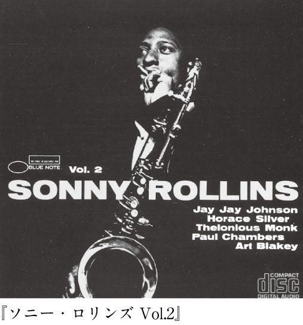
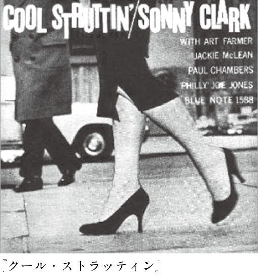

| 世界最高のジャズ | |
| 原田 和典 | |
| (2006) | |

ジャズ――口にしただけで、血が騒ぐ。体がカッと熱くなる。
僕は16年間、ジャズ雑誌の編集に携わった。19歳で「ジャズ批評」誌にアルバイトとして入り、30歳のとき編集長になり、35歳で独立した。その間、まさに有象無象のジャズ漬け生活だった。毎月、数え切れないほどの新作ＣＤを聴く。ライヴに足を運ぶ。ジャズの輸入本が出れば、辞書と首っ引きで読む。自腹で海外に行き写真撮影とインタビュー。取材したミュージシャンは何百人といるだろう。その一方であらゆる過去のジャズを聴き、その印象をメモして鑑賞力と文章力の基礎体力をつけた。食事をするときにも頭の中ではジャズが流れるほど、ジャズに満たされた毎日だった。
これだけジャズに溺れた変わり者など、そうそうこの世にいないだろう。じつに貴重な体験ができたと思っている。
本書では、僕がこれまで何万時間と摂取してきたジャズ演奏の中から、100％心からお勧めできるＣＤを、ページの許す限り取り上げた。
この本には前菜も何もない。食後のデザートすらない。ただただ、ミュージシャンが腕によりをかけた最高峰のメイン・ディッシュが、皿からあふれんばかりに揃っている。
みなさんがジャズに興味を持つようになったきっかけはいろいろであろう。だが僕は、どんなケースであっても、せっかくこの素晴らしいアートに出会った以上、最高のものから入門していただきたいと思うのだ。からめ手や、回り道はいらない。口当たりがよいだけの、たちどころに淘汰されそうな作品も不要。苦くても辛くても、ガシッと手ごたえのあるものを、思いっきり頬張ること。これを僕は読者と一緒に続けていきたいのである。さあ、添加物や甘味料なんか跳ねのけるような、力強く、大地の匂いがプンプンと漂うような、生一本の音を分かちあおうではないか。
本書のタイトルである『世界最高のジャズ』とは、ジャズの特質を最大限に発揮した演奏である。そう僕は断言したい。
・アドリブの鋭い切れ味（即興的に飛び出すフレーズのカッコよさ）
・そのミュージシャン独自のリズム感（ノリ）
・アドリブ楽器とリズム楽器の一触即発の呼応
・音色そのものが持つ、有無を言わさぬ説得力
――僕にとって、これらこそジャズの特質だ。他のジャンルでは替えがきかない。
世の中にはいろんなタイプの音楽がある。その中からジャズを選び、本書を手にされているということは、他の音楽にはないジャズ独特の何かを求めているのだと僕は信じている。
だとしたら、僕にできることはただひとつ。
ちゃんとしたジャズを、しっかり文字にして伝える。
これだけだ。
ジャズは決して「やさしくない」。そもそもジャズは外来文化、誤解を恐れずに言えば前衛芸術である。それを焼き魚と白米と味噌汁の民族の体内に馴染ませるのは並大抵のことではない。これはもう、進んで自分をそこに放りこみ、反復に反復を重ねながら、ものにするしかないのではないか、と僕は思う。
ジャズは決して「甘くない」。とてつもなく奥の深いものだ。逆に言えば、だからこそ、まったく飽きない。それゆえ何十回も同じ作品を聴いて、そのつど新鮮な感激を覚え、預金残高をかえりみずレコード店に猛進してしまうのである。飽きたり、感動が目減りしたりするものがあれば、それは偽りのジャズだ。
ジャズと格闘しはじめると、毎日が冒険だ。ジャズから新しいスリルをもらい、自分を沸きたたせていく。それが面倒なひとは別にジャズを選んで聴く必要もない。世の中には他にいっぱい音楽があるのだから。
ジャズを自分にぶつけ、自分もまたジャズにぶつかっていく。その衝突が快感に変わったとき、あなたはジャズというものに感謝を捧げたくなるはずだ。新しいフレーズとの出会い、予想もつかないアドリブが与える刺激。そこには未踏峰を次々と乗り越えていくような、何にも替えがたいスリルがある。
とは言うものの、僕とジャズとの出会いは、それほど劇的でもドラマチックなものでもない。父がバンドマンだったこともあるのか、幼い頃からジャズやリズム＆ブルース、ロックなどが家の中でしょっちゅうかかっていた。だから自然に楽器やレコードが僕の遊び道具になった。それだけだ。よくセロニアス・モンクやアート・ブレイキーなどを、親に頼んでかけてもらったことを覚えている。父親に、よく近所のジャズ喫茶に連れて行ってもらった。子供こごろに、ジャズはロックやリズム＆ブルースとはどこか違うなあと思った。歌も入っていないし、１曲が長い。だがその奇妙な感じが、すぐさまクセになった。
10歳の時、近所に中古レコード店がオープンした。中古だったら、僕でも小遣いをためれば、どうにか買うことができた。そのうちに新品を取り扱うレコード店でも、輸入盤をおくようになった。一気にジャズが僕に近づいてきた。
雑誌の読者プレゼントでエリック・ドルフィーの『ラスト・デイト』が当たったときの感激は今も生々しい。１曲目「エピストロフィー」におけるバス・クラリネットの、なんと澄み切った音！ 初めて音楽で泣けた。
コンサートにも出かけた。チャーリー・パーカーに最もよく似ていると言われる（僕はそうは思わないが）サックス奏者、ソニー・スティットの生涯最後の公演では、真っ青を超えて深緑になった顔色の彼が、車椅子に乗り、続かない息で、どうにか１曲だけ演奏した。そして彼は、帰米してすぐにガンで逝った。
当時は、なんでそこまでするんだ、静養していればいいのにと思ったが、今にして考えれば、それがジャズなのだ。明日がどうなろうと、この瞬間カッコいい音を出したい。体の自由が利かなくても、残された細胞で、目いっぱいスイングしたい。ひたすら自分をぶつけていきたい。ジャズとは、なんと業の深いものなのか。あまりにもとてつもない、これはいい加減な気持ちではたちうちできない世界だ、とはっきり僕は悟った。
折から学校には不満があった。僕は絵画や彫刻の道に進もうと思っていたのだが、美術担当の教師は端から否定的なことを言った。ああ、ひとに気に入ってもらうために上手に立ち回れたらなあ――そんな僕の気持ちに、ジャズは往復ビンタを食らわせた。おのれの筋を、節を見つけよ、貫け、と。
それからはもう、ジャズを聴いたり買ったりするために生活しているようなものだ。人間関係？ カネ？ なるようになるさ。
本書の第１章から５章までは、いわゆる超の字がつくジャズ・ジャイアンツについて触れている。だがそれでは家康と吉宗しか出てこない徳川家の歴史を読むようなもの。第６章、第７章で、ほんのひとにぎりではあるが、〝大偉人史〟を補足させていただいた。ここに紹介する面々が残した公式作品の９割以上を僕は聴いている。大好きだから、徹底的に聴かずにはいられないのだ。だから世評に関係なく、自分が最高だと確信するものをグイっと押し出した（もっとも、ある程度ジャズに見識のあるひとが評価する場合、作品に対する見解のズレは、思いのほか少ないものだ）。また、非常に有名な作品でも、個人的にピンと来ないものに関しては、容赦なく思うところをぶちまけた。
紹介したかったミュージシャンはほかにもいくらでもいる。前述したスティットもそうだし、リー・コニッツ（アルト・サックス）、スタン・ゲッツ（テナー・サックス）、アンドリュー・ヒル（ピアノ）、ドン・チェリー（トランペット）、ジーン・アモンズ（テナー・サックス）、ホレス・シルヴァー（ピアノ）、ジョニー・グリフィン（テナー・サックス）、ジミー・スミス（オルガン）などなど。それについてはまた、取り上げる機会が訪れるはずだ。
僕は読者の皆さんと握手するような気持ちでこの本をしたためた。どうか手を握っていただければ幸いである。
目次
※本書では、原盤のＣＤを紹介している。日本盤については、巻末の「本文に掲載のＣＤリスト」を参考にしていただきたい。

ジャズの歴史書を開くと、まず冒頭に出てくるであろうビッグ・ネームがルイ・アームストロングとデューク・エリントンだ。とはいえ僕はいきなり初めから全読者に彼らの演奏を押し付けはしない。むしろいろんなジャズを聴いて耳を鍛えて鍛えて鍛えた上で、エイヤッと時代をさかのぼり、ルイやエリントンの青年～中年時代のプレイを聴いたほうが、いろいろな衝撃や発見がダイレクトに自分の中に入り込んでくるのではないかと思う。
かくいう僕もその手段で、この両偉人のとりこになったひとりである。ああ、もうこの時代にすでにこんなことをやっていたのか、という驚き。時代を超えて、あまりにも生々しく、新鮮に響いてくる音。深みのある即興と、踊りだしたくなるような大衆性の両立。マイルス・デイヴィスをはじめ、エリントンやルイを尊敬してやまないミュージシャンが山のようにいるという事実の重さが、そのとき初めて、はっきり体得できた。
ルイが登場するまでジャズ（と呼ばれていた音楽）は、極端に言えばほとんど譜面化されたものか、ブラス・バンドの音楽と大差ないものであった。またバンド演奏は主に、複数の管楽器奏者が絡み合って（アンサンブルで）進行するものであった。が、ルイはそこから飛び出した。俺のラッパを聴いてくれ！ そうしてアンサンブルから飛び出し、思いのままにアドリブした瞬間、ジャズはサナギから蝶になった。
そしてエリントンは集団表現としてのジャズに早くから着目した。オーケストラ、作曲、編曲という、おおよそ即興性からほど遠い分野で、馥郁たる世界を表現してしまった。ミュージシャンの個性を最大限に生かしながら、結果としてエリントン以外の何者でもないサウンドを成立させる......これぞまさにカリスマのなせる業だ。
ルイやエリントンがいなければ、ジャズが現在の形になることは絶対に絶対にありえず、単なるアメリカ黒人の珍妙なシンコペーション・ミュージックとして、一部の歴史家の興味にとどまっていたのではないか。
ジャズは、なるべくして「ジャズ」になった。そして天才たちがそれをリードした。
出生証明書によると、１９０１年８月４日ルイジアナ州ニューオリンズ生まれ。小学校の頃に友達とヴォーカル・カルテット（四重唱団）をつくり、街頭で歌い始める。13歳のとき、少年院でコルネット（トランペットに似た小型の管楽器）を習得。退院後、キング・オリヴァーからコルネットの指導を受ける。'22年、オリヴァーを頼ってシカゴへ向かい、翌年、彼のバンドで初レコーディングを体験。'24年にはニューヨークへ行き、フレッチャー・ヘンダーソン・オーケストラに参加。'25年シカゴへ戻り、自己名義のレコーディングを開始。自己のバンド〝ホット・セヴン〟、〝ホット・ファイヴ〟での録音はジャズに革命をもたらした。この時期、トランペットに持ち替える。'29年に自己のオーケストラを結成、'30年代にはヨーロッパにも滞在した。'47年にオーケストラを解散し、６人編成の〝ルイ・アームストロング・オールスターズ〟を発足。'64年には「ハロー・ドーリー」がナンバーワン・ヒットを記録、'67年の「この素晴らしき世界」は現在でも映画やテレビＣＭに使われている。'71年７月６日ニューヨークで死去。
ジャズ。なんという罪な音楽なのだろう。聴けば聴くほど、とりこになっていく。一度魅力にとりつかれてしまうと、もう抜け出すことはできない。こんなに人間を駆りたたせる音楽をつくったのはどこの誰なのか。もちろんジャズは特定の人物の発明物ではない。だが、歴史をさかのぼれば、かならずこの男にいきつくはずだ――サッチモことルイ・アームストロングに。
〝サッチモ〟というあだ名は、〝サッチェルマウス（がま口）〟が訛ったものとも、〝サッチ・ア・マウス（なんて口なんだ！）〟が転訛したものとも言われている。そのくらいルイの口は大きかったのだ。小学校のときにはすでに〝ディッパー（がま口）〟とあだ名されていたという。
テレビをひねるとサッチモの歌声が聴こえてくる、という現象が驚くことでなくなったのは、ここ20年ぐらいのことかもしれない。'81年に「この素晴らしき世界」が自動車のＣＭで流れ、その数年後には映画『グッド・モーニング・ベトナム』でも同じ曲が用いられた。タレントの中山美穂が出演するビールのＣＭで「ハロー・ドーリー」が使われたこともある。テレビや映画を見ているひとたちの何割かが、こうした現象によってサッチモの音楽に興味をもってくれれば実にうれしい、と思う。
が、『世界最高のジャズ』の読者であるあなたは、これで満足すべきではない。なぜなら「この素晴らしき世界」も「ハロー・ドーリー」もシンガーとしてのルイのヒット曲ではあっても、トランペッターとしての底知れぬ深みを伝えるトラックではないからだ。歌声はもちろん、ラッパにも惚れ込んでいる僕のようなファンには、そこがなんとも痛しかゆしなのである。では、ここから時計の針を一世紀戻し、20世紀初めのアメリカ南部に飛んでみよう。
ルイ・アームストロングはニューオリンズの黒人街に生まれた。生まれて間もなく両親が離婚したので、祖母のもとで育てられた。祖母は毎週日曜、ルイを連れて教会に出かけた。強烈なリズム、合唱団の歌声、高まる牧師のシャウト。ルイの最初の音楽体験はゴスペルであった。
５歳の時には母親、妹と住むようになった。当時のニューオリンズはまだストーリーヴィルと呼ばれる赤線地区が健在だった。多くの安酒場からは、ジャズ（と呼ばれることになる音楽の原型）があふれていた。そこでコルネットを吹いていたひとりが、伝説のジャズ王と呼ばれるバディ・ボールデンだ。
この時点でのルイはコルネット奏者に憧れてはいたが、実際に楽器を吹くところまでにはいたっていない。音楽の経験は、友人と合唱団を組んでチップをもらう程度だった。コルネットを最初に演奏したのは少年院でのこと。11歳のとき、大晦日のパレードで、38口径のピストルを空に向けてぶっ放したところを取り押さえられ、少年院にぶちこまれたのだ。
ルイはタンバリンやドラムのあと、起床や消灯のラッパ担当に〝昇格〟、その後、あこがれのコルネットを与えられて腕をあげ、ついに院内のブラス・バンドのリーダーになった。少年院のブラス・バンドは、休日になるとシャバに出ることができた。町内を練り歩くルイのラッパにはひときわ注目やチップが集まった。このあたりの経験が、ルイにミュージシャン～エンターテイナーになる決意を促したのかもしれない。
出所したルイは新聞や石炭を売りながら、暇をみつけてはコルネットを吹いた。そして当時、若手コルネット奏者として飛ぶ鳥を落とす勢いだったキング・オリヴァーからレッスンを受ける。だがそれは長くは続かなかった。ストーリーヴィルが閉鎖され、多くのミュージシャンが仕事にあぶれたからだ。
オリヴァーも'18年には新天地を求めてシカゴに旅立つ。ルイはキッド・オリー（トロンボーン）のバンドを経て、'19年から'21年にかけてフェイト・マラブルのオーケストラに加入、蒸気船に乗りながら各地で演奏した。その後はニューオリンズ有数のブラス・バンド〝タキシード・ブラス・バンド〟でも演奏した。
'22年、ルイの もとに一通の電報が届く。師匠キング・オリヴァーからのものだった。同年８月、ルイはシカゴに行き、オリヴァーのバンドに加わる。オリヴァーはルイの急成長に驚いたという。
ルイはオリヴァー・バンドのピアノ奏者リル・ハーディンと結婚した。ルイのプレイはたちまち話題を呼んだ。その噂はニューヨークにも伝わり、'24年には結成まもないフレッチャー・ヘンダーソン・オーケストラから入団の誘いを受ける。リルがニューヨーク行きを薦めたことで、ルイの腹は決まった。このころになるとオリヴァーの人気は落ち目、体力も衰え、バンドの解散も時間の問題だったのだ。
リルをシカゴに残し、'24年秋、ルイはニューヨークへ飛び立つ。彼のコルネットは、ヘンダーソン・オーケストラを活気づかせるだけではなく、楽団のスタイル、同僚ミュージシャンの意識をすっかり変えてしまった。譜面にのっとったシンコペーション音楽をやっていた都会のお坊ちゃま集団が、たったひとりのニューオリンズ出身の野性児と出会ったことで、とたんにパワフルに、躍動的になった。
サックス奏者コールマン・ホーキンスは、それまでリズム楽器のようにサックスを吹いていた。しかしルイを聴いて、メロディ楽器、アドリブ楽器としてのサックス奏法を開拓するに至った。よってホーキンスは〝ジャズ・サックスの父〟と呼ばれるわけだが、ならばルイは〝ジャズ・サックスの祖父〟ということにもなる。
トロンボーン界も、それまではテイルゲイトという、音程を上下にスライドさせるリズム楽器的なアプローチが主であった。だがやはりルイに影響され、メロディ楽器、アドリブ楽器としてのジャズ・トロンボーンの歴史が始まった。
ピアノもそうだ。それまでのピアニストは無伴奏のソロで演奏することが多かった。また、オーケストラの一員として演奏する場合は、オクターヴ奏法を使い、バンドに音が埋もれないよう、力いっぱい楽器を響かせるのが定石であった。だがルイを聴いて刺激されたピアニストたちは、右手でアドリブ・フレーズを、左手でコード（和音）を押さえるという、現在ではもっとも基本的なジャズ・ピアノ・スタイルを築きあげた。右手のアドリブ・フレーズの源となったのがルイのコルネット演奏であることは言うまでもない。
編曲者の意識も変わった。ルイのプレイを聴いて、「このラッパはすごい。こいつの持ち味を発揮するようなアレンジをしなければ」と思ったドン・レッドマンは、ルイのノリを生かした譜面を苦心惨憺してつくりあげ、楽団全員を〝ルイ化〟した。結果、レッドマンは今日まで続く、いわゆるビッグ・バンド・ジャズにおける編曲の基礎を確立したのである。
ヘンダーソン楽団が、この時期に残した「シュガー・フット・ストンプ」（'25年）、「ＴＮＴ」（同）を聴いてみてほしい。ルイより５年近く先にニューヨークに出ていた当時のデューク・エリントン・オーケストラの演奏には、彼の直接的な影響は感じられないものの、〝ルイこそミスター・ジャズだ〟というひとことに、エリントンのルイに対する敬愛がにじみでている。
ニューヨーク時代のルイはブルースの伴奏者としてもひっぱりだこであった。ベッシー・スミスとの「セントルイス・ブルース」（'25年）では、ミュート（弱音器）を使い、人間がわななくような音を出してベッシーに絡みついている。
ルイは１年余りでニューヨークをひきあげ、シカゴに戻った。愛妻のリルが待っていたこともあるし、ビッグ・バンドではなく小編成でもっとコルネットを吹きたかったからだ。ルイはオーケー・レコードと契約し、ニューオリンズ出身の音楽家を中心にした〝ルイ・アームストロング・ホット・ファイヴ〟を録音のために結成する。メンバーには大先輩のキッド・オリー（トロンボーン）もいた。「ストラッティン・ウィズ・サム・バーベキュー」「ポテト・ヘッド・ブルース」（ともに'27年）等、ジャズ史前半のクライマックスが次々と録音された。
ルイはこの頃から歌も歌い始める。'26年に録音された「ヒービー・ジービーズ」では、いわゆるスキャット唱法にも取り組んだ。スキャットとは、シャバダバとか、ズビズバという、あの歌い方のことである。由紀さおり「夜明けのスキャット」の、あれである。ルイ本人の発言によると、「レコーディングの最中に歌詞カードを落として、とっさにデタラメ言葉で歌っただけさ」ということだが、真偽のほどはわからない。
少なくともスキャット自体は、'20年代初頭からいろいろなレコードに記録されている（それをまとめた『アンソロジー・オブ・スキャット・シンギング』というマニア向けのＣＤも出ている）。なのでどちらにしてもルイがスキャットの創始者でないことは確かだが、ジャズ界にスキャットが広まったのはやはりルイの功績であろう。当時、尖端をいっていたルイがカッコよくスキャットしたからこそ（レコードを買ったひとにはブロマイドがプレゼントされたこともあるという）、それが若者に広まり、スキャットを取り入れたシンガーが後に次々と現れたのである。
加えて、ルイは地声で歌った。これも重要だ。それまで商業歌手は、声を〝つくる〟ことが常識であった。声を腹から出し、ビブラートをかけて、思いっきりはりあげる。だがルイはダミ声で、コルネットをそのまま歌声に転化させたようなフレーズで歌った。ルイがいなければ、果たしてジャズ・ヴォーカルというカテゴリーが存在したかどうかもあやしい。
ルイはメンバーを入れ替えて再編成した〝ホット・セヴン〟、５人編成の〝ホット・ファイヴ〟、〝サヴォイ・ボールルーム・ファイヴ〟など、名義を変えながらレコーディングを続けていく。リルとの仲には黄信号がともったけれど、代わりにと言ってはなんだが、素晴らしく才能に富んだアール・ハインズ（ピアノ）が入ってきた。以後、天才歌手ビリー・ホリデイがジャズへの道を志すきっかけになった「ウエスト・エンド・ブルース」（'28年）、ハインズとのデュオ（当時としては破天荒このうえない編成だ）「ウェザー・バード」（同）、下ネタ歌謡の先駆「タイト・ライク・ジス」（同）など、コルネットをトランペットに持ち替え、これまた、名演が次々と記録されていく。考えてみれば、いまジャズを含むポピュラー音楽の中で用いられている手法をルイは'20年代にほとんど実行していたのだ。誰もやりもしなかったことを次々と実行していくなんて、もうこれはアヴァンギャルドですらある。
ところで〝ホット・ファイヴ〟や〝ホット・セヴン〟は、録音のためのバンドであった。つまり人前では演奏していないのだ。もしルイが当時、ライヴでこれをやったら、総立ちだっただろうか、それとも、存命中のゴッホみたいな扱いを受けてしまっただろうか。いくらなんでも後者ということはないだろう。なぜならルイは'20年代後半の時点で、最高の人気を持った黒人エンターテイナーのひとりに数えられていたからだ。
ニューヨークはルイを恋しがっていた。'29年、ルイはふたたび、この〝エンターテインメントの都〟の土を踏む。
ジャズ界にはルイの後を追うトランペット奏者が数多くあらわれていた（彼らのほとんどは以前、コルネットを吹いていたが、ルイに刺激されてトランペットに持ち替えた）。ルイはオーケストラを伴奏に迎え、自身のトランペットとヴォーカルを最大限に生かす音作りに移行する。トランペットのフレーズは一層メロディアスになり、エンディングではハイノート（超高音）を高らかに響かせた。
ウディ・アレンの映画『スターダスト・メモリー』に使われた「スターダスト」（'31年）は、この時期のルイを代表する名演だ。ルイはオーケストラと共に、'32年にイギリスへ渡り、大歓迎を受けた。イギリスには翌年、デューク・エリントンも訪れた。皇太子（プリンス・オブ・ウェールズ）が大のジャズ・ファンだったのである。ルイは'33年から'34年にかけてヨーロッパ各地を回り、'35年に帰国。唇のトラブルのため、初めての長期休暇をとる。このあたりまでが革命児としてのルイの黄金時代であろう。
いままで文中で触れてきた曲すべてが『ポートレイト・オブ・ジ・アーティスト・アズ・ア・ヤング・マン』（米コロンビア）というＣＤで聴ける。舌をかみそうな長いタイトル、しかも４枚組。だがこのくらいを一気に聴いてしまうぐらいの気概をもっていれば、後々ジャズがほんとうにいとおしい音楽に思えてくるはずだ。ホット・ファイヴ、ホット・セヴンと呼ばれるバンドの歴史的演奏を軸に、ジャズ界を成り上がっていく若きサッチモの〝尖り〟が鮮やかに捉えられている。ほんとうに、すべてのジャズ・トランペッターが彼の息子みたいなものだということがわかるはずだ。
すべて、日本の元号に直すと大正から昭和初期にかけての吹き込みになるのだが、録音が古いことで生じるノイズすらいとおしく思えてきたら、リスナーとしてさらに〝上級〟になったということだ。なぜならノイズなど問題ではない。アーティストの音色、即興のスリルを聴きとることこそ肝心だからだ。
ホット・ファイヴ、ホット・セヴン、オーケストラの伴奏による革命的な演奏はもちろん、キング・オリヴァーのバンドにおける初録音やベッシー・スミスとの共演、フレッチャー・ヘンダーソン楽団でのプレイなども収めたことで、初期のルイがいかに傑出した存在であったか手に取るようにわかるようになっている。ラッパにしろ、歌にしろ、いまジャズを含むポピュラー音楽の中で用いられている手法のほとんどが、こんな昔、ひとりの男によって開拓され、次々と実行されていたという事実はいくら力説しても足りない。人類の財産がこの箱物には詰まっている。
とはいえ、１９２０年代？ 古いね、という声も聞こえてきそうだ。もちろん、テレビもジェット機も原爆もオゾン層破壊も予想だにしなかった時代の記録である。ルイが初レコーディングを果たした'23年なんて関東大震災のあった年だ。「ポテト・ヘッド・ブルース」が録音された'27年には芥川龍之介が死に、「タイム」誌や「リーダーズ・ダイジェスト」誌が創刊されて、映画はトーキー時代へ。「ウエスト・エンド・ブルース」（'28年）録音の頃にはラジオ体操開始、大阪では若い女の入れ墨が流行って問題になっている。そして「エイント・ミスビヘイヴン」（'29年）の頃にウォール街の大恐慌がはじまり、日本では横山エンタツ・花菱アチャコのコンビが生まれ、榎本健一あたりが頭角を現してくる。
チンタラしたアンサンブルの中から猛烈に飛び出すラッパの音色、付点音符だらけのアドリブ。共演ミュージシャンの音が80年前に留まっているなか、ルイのプレイはまったく褪色せず、〝現代〟をまっすぐに撃ちぬく。ルイが登場する以前にもジャズと呼ばれるものはあった。それは乱暴に言えば、シンコペーションの利いたアンサンブル・ミュージックだった。譜面をキチッと演奏すれば誰でも替わりが利くような、行儀の良い音楽だった。だがルイは違った。少年院でラッパを覚えた小柄なルード・ボーイは、切り裂くようなプレイとダミ声で〝俺〟を主張した。このときジャズは個人技の音楽になったのだ。
それだけに、まずはこのボックスを買い込んで、ルイのラッパを聴いて、感じて、震えてくれ、と僕は言いたい。
『ポートレイト～』には'23年から'34年までの録音が選ばれているが、その間の'32年、ルイは大会社ＲＣＡビクター（現ＢＭＧ）に録音を始めている。ＲＣＡには'32～'33年、'46～'47年に在籍したが、それを集大成した『コンプリートＲＣＡレコーディングス』（タイトルに反して〝完全版〟ではないが）もまた、ＣＤ４枚組というボリュームながら、ルイ・アームストロング好きにはたまらない演奏がふんだんに詰め込まれている。
オーケストラを伴奏につけるようになったルイは、より大衆的な方向に音楽をシフトさせていく。〝ジャズのイノベイター〟は、いっそう幅広いファンに向けて音楽を送信したのだ。ジャズをアドリブ芸術として（結果的に）確立させた男が、あえてそれをやるというのがいい。ルイってつくづく、いかしているなあと思う。
とくにこのＲＣＡ時代のものは芸術性と娯楽性の割合がなんとも頃合で、小編成のバンドで吹きまくっていた頃の演奏とはまた違うゆったりした雰囲気にしびれる。要するに和むのである。それでいて血わき肉躍る生一本のスイングが耳を奪う。染み入るような「シッティン・イン・ザ・ダーク」から、ほとんどコミック・ソングな「ラフィン・ルイ」まで、サッチモの多彩さには今さらながら感服させられる。
ルイが次に録音を始めたレコード会社は、設立間もないデッカだ。ルイは'35～'45年、'47～'58年にここで録音を続けている。ルイが亡くなって20年ほど経った'90年代のはじめ頃には、前期デッカ時代を吹き込み順にＣＤ化するというプランも進んでいたが、現在のところ第３集『ポケットフル・オブ・ドリームズ 1935～38』（デッカ）を最後に中断している。甘いバラードからラテン・ナンバーまで、好きな音楽を何でも取り入れてサッチモ・ジャズにしてしまう貪欲さはいつ聴いても爽快なだけに、シリーズの滞りは残念だ。
第１集『リズム・セイヴド・ザ・ワールド 1935～36』（同）には「ラ・クカラチャ」、「ミュージック・ゴーズ・ラウンド・アンド・ラウンド」、第２集『ハートフル・オブ・リズム 1936～38』（同）にはルイの数少ない自作曲「スイング・ザット・ミュージック」、ニックネームを曲にした「サッチェル・マウス・スイング」などが入っている。エンターテインメント路線をひた走りつつ、それでもどうしようもなく〝ジャズな〟ルイを味わう上では、このへんの作品も聴くにこしたことはない、と僕は思うのだが。
『ポケットフル・オブ・ドリームズ』には、ルイ・アームストロング最大の看板曲のひとつである「聖者の行進」（'38年）も収められている。この曲は、それまでゴスペル界では何度か録音されていたが、ジャズのレパートリーとして吹き込んだのはルイが初めてだった。ゴスペルをジャズっぽく演奏するなんて何事だ、と当時のルイは批判にさらされたという。
「大衆に迎合しすぎ」とも言われていたこの時代でも、ルイの革命児気質は不変だったわけだ。ゴスペルとジャズとの融合という、今では当たり前のことを最初になしとげたのはルイなのだ。彼がいなければジミー・スミスや、アート・ブレイキー＆ジャズ・メッセンジャーズの「モーニン」だって存在しなかったかもしれない。とにかくこの「聖者の行進」、牧師に扮したルイの説教から始まり、徐々に即興演奏が熱を帯び、クライマックスに至るまで、一音たりとも聴きのがせない。
ルイは'47年までオーケストラの伴奏で活動を続けた。オーケストラは徹底的にルイを引き立たせるための装置であった。編曲者はルイの天衣無縫なキャラクターを引き出すべく譜面を書いた。いくらルイがジャズの化身だからといっても、他のメンバーからの刺激を受けずに即興演奏家としての鮮度を保つのは難しい。
〝ジャズ奏者としてのルイ〟に惚れ込んだひとたちは、折をみてルイをコンボ（小編成のバンド）で演奏するよう、もちかけた。'40年に、やはりニューオリンズ出身のシドニー・ベシェ（ソプラノ・サックス）と組んだ４曲は現在、『ルイ・アームストロング・オブ・ニューオリンズ』（デッカ）という編集盤ＣＤで聴くことができる。書割のようなビッグ・バンドとの共演では決して表現しえなかったであろう炎が、ルイのトランペットからメラメラと燃えている。
'44年の『エスクァイア・オール・アメリカン・ジャズ・コンサート』（ＥＰＭ）も、コンボで演奏するルイが、いかに雄弁なアドリブ奏者であったかを、いまさらのように物語る。コールマン・ホーキンス（テナー・サックス）、ビリー・ホリデイ（ヴォーカル）、ライオネル・ハンプトン（ヴィブラフォン）、ロイ・エルドリッジ（トランペット）など共演者も目玉が飛び出るほど豪華。彼らは皆、ルイの音楽にショックを受け、それを基に独自の個性を築いてきた面々である。
ルイがふたたびコンボ編成でのレギュラー活動を決意したのは'47年のことであった。そのきっかけとなったコンサートを録音したのが『コンプリート・タウン・ホール・コンサート』（仏ＲＣＡ）という２枚組ＣＤである。それまでの自分を回顧し、さらに未来に踏み出すべく、'20年代からのレパートリーを、ガンガン吹き、歌っていく。観客のもりあがりもすさまじい。俺が聴きたかったサッチモはこれなんだ、という熱心なジャズ・ファンの声が聴こえてきそうな出来だ。
タウン・ホール公演でも大活躍したジャック・ティーガーデン（トロンボーン、ヴォーカル）、デューク・エリントン・オーケストラ出身のバーニー・ビガード（クラリネット）らを迎え〝ルイ・アームストロング・オールスターズ〟が発足したのは'47年夏のことだ。そして11月には『サッチモ・アット・シンフォニー・ホール』（デッカ）を録音する。'20年代以来のレパートリーをそろえながらも、熱いアドリブが炸裂する、ものすごくスリリングなジャズを聴かせている。モヤモヤした録音が玉に瑕だったが、'96年に発売された輸入盤ＣＤは音質が驚くほど向上している。シドニー・カトレット（マックス・ローチの師と言うべき人物）のドラムスが、小気味よいったらありゃしない。
ピアノに旧友アール・ハインズが参加したスタジオ録音『サッチモ１９５０＆モア』（'50～'55年 デッカ）も逸品だ。サッチモ～ハインズ～ティーガーデン～ビガードの四つ巴が、ニューオリンズの葬式～パレード（ブラス・バンドは欠かせない存在であった）を活写した「ニューオリンズ・ファンクション」が殊に圧巻だ。録音も良いので肉厚のトランペットの音が浴びるように味わえる。名人芸の何たるかを知りたければ、これを聴けばいい。
ティーガーデンとハインズが抜け、トラミー・ヤング（トロンボーン）が入り、ヴェルマ・ミドルトン（ヴォーカル）が目立つようになってからのルイ・アームストロング・オールスターズは、残念ながら看板にかなり偽りありだ。オールスターズというよりは〝大味過ぎたーズ〟と言いたくなるではないか。それでもルイのキャラクターで一定の聴きごたえは保持されているが......。むしろ特別編成による『ルイ・アームストロング＆デューク・エリントン』（'61年 ルーレット）、デイヴ・ブルーベックが作曲したミュージカル調作品『ザ・リアル・アンバサダーズ』（同 米コロンビア）を、僕は好んで聴いている。
本稿で紹介したルイ・アームストロング作品は僕にとって、〝無人島に持っていくジャズ・レコード〟の筆頭である。ここに、味わいあるダミ声ヴォーカルを重点的に収録した輸入盤『ベスト・オブ・ザ・デッカ・イヤーズ～ザ・シンガー』（「バラ色の人生」、「ブルーベリー・ヒル」などを収録）を加えれば、ルイの大体のおいしいところは賞味できるのではないだろうか。
人懐っこい笑顔がチャームポイントだったルイだが、ほとばしるファイティング・スピリットを見逃してはいけない。
１８９９年４月29日ワシントンＤＣ生まれ。20世紀アメリカ音楽を代表する作曲家、ピアニスト、バンド・リーダー。７歳の頃からピアノを習い、10代で作曲を始める。'23年に５人編成の〝ワシントニアンズ〟を結成、ニューヨークに進出。徐々に編成を拡大し、'20年代半ばからデューク・エリントン・オーケストラとして活動を開始。以来、'74年５月24日にニューヨークで死去するまでエリントンは楽団を率い続けた。大変な多作家としても知られ、生涯に書いた曲は３０００とも１万ともいわれる。「イット・ドント・ミーン・ア・シング（スイングしなけりゃ意味がない）」、「イン・ア・センチメンタル・ムード」、「サテン・ドール」、「ソフィスティケイテッド・レディ」などは不朽のスタンダード曲になった。エリントン楽団出身のミュージシャンは〝エリントニアン〟と呼ばれ、ジョニー・ホッジス（アルト・サックス）、ベン・ウェブスター（テナー・サックス）、ビリー・ストレイホーン（ピアノ、作編曲）、ジミー・ブラントン（ベース）はその代表格。スティーヴィー・ワンダーの「サー・デューク」など、エリントンに捧げられた曲も多い。
初期黒人ジャズの立役者たちは、ルイ・アームストロングという巨大な例外を除いて、ほとんど上流階級に位置していたと言っていい。デューク・エリントンも父親がホワイトハウスの執事という家庭に育った。
クラシック・ピアノのレッスンも子供の頃から受けていた。最初はさほど乗り気ではなかったようだが、やがて「楽器ができれば女にモテる」ことがわかると俄然張り切ってピアノを弾くようになったという。その後、看板描きの仕事につきながら、夜はカフェで演奏した。当時のエリントンがどんな音楽を演奏していたかは想像するしかないが、'19年に長男のマーサー・エリントンが生まれる頃には自宅も自家用車も所有していたらしい。いつしかエリントンは音楽で「食える」ようになっていた。
そんなワシントンＤＣの売れっ子がニューヨークに初めて渡ったのは'23年３月といわれている。クラリネット奏者ウィルバー・スウェットマンの誘いにこたえ、ソニー・グリア（ドラムス）、オットー・ハードウィック（クラリネット、サックス）と共に「上京」したのだ。だがスウェットマンとの仕事はうまくいかず、エリントン、グリア、ハードウィックは地元に帰った。
３人の男たちは捲土重来を期して、半年後の'23年９月、ふたたびニューヨークへ向かう。エリントンはハーレムにすっかり魅せられてしまった。バンドは幾多の売り込みの末、ようやくエルマー・スノウデン（バンジョー）をリーダー格に「ハリウッド・カフェ」への出演をとりつけた。だが'24年２月にスノウデンが突如脱退、彼に代わる新しいリーダーを決める必要に迫られる。作曲や編曲ができ、肌の色が薄く、社交的な振る舞いのできるエリントンがその座につくのはなかば必然だった。バンドの人数は10人に増え、ついに〝デューク・エリントンと彼のオーケストラ〟が誕生する。
ちなみにこの頃、ルイ・アームストロングはニューオリンズからシカゴへ移り、キング・オリヴァー・バンドの一員として初レコーディングを果たしている。かたやニューヨークでエリントン、かたやシカゴでサッチモ。当時、まだ無名同然だった２人が翼を広げた下に、ジャズという広大な世界が広がることになるとは、お釈迦様でも気づかなかったに違いない。
'20年代のアメリカは、かなりの部分が禁酒法とイコールで結ばれる（'33年に撤廃）。ビリー・ワイルダー監督がジャック・レモンやマリリン・モンローを起用し、映画『お熱いのがお好き』でおもしろおかしく描いた、あの時代だ。紫煙と密造酒の匂いが漂うなかで、エリントンの音楽は発展した。このオーケストラで最初のスター・ミュージシャンとなったのは、トランペット奏者のバッバー・マイリーである。
彼は、プランジャー・ミュートという道具をトランペットの朝顔の前でかざし、唸るような、わななくような音（グロウルと呼ぶ）を出した。エリントンは彼の個性を生かした曲を次々と書き、それをオーケストラのセールス・ポイントとした。バンド・テーマ「イースト・セントルイス・トゥードル・オー」や「ブラック・アンド・タン・ファンタジー（黒と褐色の幻想）」での、〝泣き〟はマイリーあってのものだ。マイリーは'29年までエリントンと仕事をしたあと、結核をわずらい夭折した（当時、結核は不治の病だった）。
また'27年にはバリトン・サックス奏者ハリー・カーネイ（最初はアルト・サックスと兼任）、ベースのウェルマン・ブロードが入ってきた。これによってエリントン楽団のサウンドにはいっそうの重厚さが加わった。
ブロードはジャズ・ベース草創期の名手のひとり。それまで９割方のジャズ・バンドは低音楽器にチューバを使っていた。だがエリントン楽団におけるブロードのプレイに衝撃を受けた多くのバンドは、先を争うようにチューバを廃しベース奏者を起用することになる。
カーネイはジャズという、まだ海のものとも山のものともしれなかった音楽様式の中で、初めてバリトン・サックスを活用したひとりである。つまり、彼はすべてのジャズ・バリトン・サックス奏者の父といえる存在なのだ。カーネイ風に吹くか、吹かないか、ジャズでバリトン・サックスを演奏する場合、今もその二者択一しか道はない。
エリントン楽団の、「ハリウッド・クラブ」改め「ケンタッキー・クラブ」と、'27年末からの「コットン・クラブ」専属時代の録音は『アーリー・エリントン １９２６～１９３１』（デッカ）という３枚組ＣＤで堪能できる。80年も前の録音である。どんなに古臭くカビた音楽なのだろうという先入観をもたれても仕方ないかもしれない。だが、これが楽しいのである。軽やかで、イカしたサウンドが満載なのだ。
ジャズ・ファンの中には、「ジャズはこうあるべきだ」とか、自分好みのジャズから外れたものを聴くと、すぐに「これはジャズじゃない」と不機嫌になってしまうひともいるようだ。だけど80年前からジャズはこんなに自由で、「～べき」とか「～じゃない」という言葉のくびきから遥か離れたところで美しく躍動していたのである。これらの演奏が記録された'20年代から'30年代にかけては、まだジャズ・バンドの楽器編成も定型化されていなかった。エリントンは曲によって、あらゆる楽器を持ち込んで、エンターテインメントの限りを尽くしている。
アコーディオン、タップダンス、ウォッシュボード（洗濯板）、果てはカズー（声を出すと、薄い紙が反応して音を出す楽器。おもちゃ屋でも売っている）まで飛び出すサウンドは、相当とっちらかっているけれど、とても魅力的で愛らしい。全67曲中、約３割の曲名がダンスのステップにちなんだものであるのも楽しい。ディスコ旋風が起こる半世紀も前、尖端を行くアメリカ人たちはエリントンで踊っていたわけだ。アメリカでヒットした最初のキューバ歌曲といわれる「南京豆売り」にすばやく目をつけ、エリントン流に解釈しているのもさすがだ。ほんとうにエリントンは最初の頃からひとを惹きつける術をこころえていたのだなあ、と僕はしみじみ思わずにいられない。
ケンタッキー・クラブの次にエリントンが本拠地にした「コットン・クラブ」は、ニューヨークでもトップクラスの娯楽場であった（フランシス・フォード・コッポラ監督、リチャード・ギア主演の『コットン・クラブ』は、ここをモデルにした映画だ）。ここに、エリントン楽団は'27年12月から'31年２月まで出演した。観客は白人中心、だが演奏家やダンサーは黒人で占められていた。ジャングル・スタイルと呼ばれた当時のエリントンの音楽、扇情的なダンサーの動きはクラブの大きな呼び物になった。あの崇高なエリントン・ミュージックが半裸ダンサーの踊りのバックで磨きこまれていったことは特記すべき事実だろう。
'28年にはジョニー・ホッジス（アルト・サックス）が加入、バーニー・ビガード（クラリネット）、ファン・ティソール（ヴァルヴ・トロンボーン）、クーティ・ウィリアムス（トランペット）など黄金の布陣がそろい始めた。この時代の演奏は先記デッカ盤のほか、『オーケー・エリントン』（'27～'30年 米コロンビア）、『ブルーバード栄光の遺産 デューク・エリントン』（'27～'34年 ＢＭＧ）でも聴ける。
『コットン・クラブ』でも効果的に使われていた「ザ・ムーチ」を筆頭に、「ムード・インディゴ」、「ロッキン・イン・リズム」など、これぞエリントンと呼ばずにはいられない名演が満載だ。とくに米ビクター（現在のＢＭＧ）録音を集めた後者は音質が極めて良いので、歳月の流れを飛び越えるにはうってつけだ。エリントンは'34年に米ビクターとの契約を打ち切るが、これは録音スタジオで白人の重役が彼の音楽を「ニグロのドンちゃん騒ぎ」と差別的に罵倒したことに腹を立ててのものだったという。
'30年代半ばになると楽器編成も後年の、いわゆるジャズ・ビッグ・バンドの標準編成に近くなり、「バンドが私の楽器」というエリントンの言葉を裏付けるような演奏が続く。『レミニッシング・イン・テンポ』（'28～'60年 米コロンビア）は収録曲の約半数が第二次大戦前の録音で占められている。35年録音の表題曲は母を失った悲しみを約13分にわたって描いたナンバーだ。当時のレコードは例外なくＳＰ盤（スタンダード・プレイングの略）であり、片面３分半の収録時間が限界だった。エリントンはＳＰ盤２枚、計４面を使って１曲を表現した。こんな音楽家はエリントン以前、ジャズ界のどこにもいなかった。
エリントンには野心があった。自分の音楽を母国アメリカのコンサート・ホールや劇場で鑑賞してもらいたいという欲求だ。エリントンの芸術性はヨーロッパで最初に認められた。'33年にはイギリス公演がおこなわれ、御前演奏までした。だがアメリカに戻れば、酒場での演奏や踊り子の伴奏がどうしても多くなる。
エリントンの創造性はやがて、大作組曲となってあらわれる。記念すべき'43年のカーネギー・ホール公演で話題を呼んだ「ブラック、ブラウン・アンド・ベージュ」、「香水組曲」、「リベリア組曲」、「ハーレム（トーン・パラレル・オブ・ハーレム）」等、エリントン特製のトーン・ポエムは'40年代から'50年代にかけてピークに達するが、その原点はまさしく'35年の「レミニッシング・イン・テンポ」にあった。
エリントンの快進撃は止まらない。'38年の録音だけを集めた『ブラッギン・イン・ブラス～イモータル１９３８イヤー』（米コロンビア）も〝熟聴〟必至のアルバムだ。ジャズのオーケストラは大人数で構成されている。トランペット奏者やトロンボーン奏者だけでも麻雀ができるほど、いる。だがエリントンはその全員に同じ楽器を吹くことを求めなかった。だからトランペット・セクションにはレックス・スチュアート（コルネット：トランペットを小型にしたような楽器）がおり、スライド・トロンボーンを吹いているひとの横でファン・ティソールがヴァルヴ・トロンボーンを操っていたりするのである。
トランペットとコルネットはまあいいとしても、スライド・トロンボーンとヴァルヴ・トロンボーンはまったく別の楽器といっていい。かたやスライドを伸び縮みさせることで音程をとり（なめらかな響き）、かたやヴァルヴの押し具合でフレーズを作っていく（ブツ切れの響き）。両者が一糸乱れぬアンサンブルを聴かせることは物理的に不可能だといっていい。だがエリントンは頓着しなかった。楽器の種類ではなく、その奏者のパーソナリティを生かすべく作曲し、編曲していたからだ。
エリントン楽団のアンサンブルは、なんだか揺らいでいるように感じられることもある。だがそれが、なんともいえない自然発生的な、おおらかなうねりを生み出している。ものすごく気持ちいいのだ。以前僕はアメリカで、あるダンスパーティを見たことがある。黒人は杓子定規なステップなど踏まない。思い思いに体を動かし、ときに声をあげながら、フリーハンドで大きな大きな円を描くように踊る。
エリントンの音楽もそうだ。みんなが思い思いに音を出す。ハーモニーは濁り、アンサンブルはディレイがかかったようになる。もしこんな響きをブラス・バンドで出したら顧問の先生に怒られるのではないかというような不協和音も堂々と登場する。ただ気ままにやっているだけなのではないかと思えるところもある。だがそれが気高くもエロチックで、どうしようもなく美しい。
これこそ僕は調和と言いたい。皆が妥協して６割ぐらいでチマチマとまとまって周りにあわせることなど断じてしない。バンド・メンバー全員がフルにぶつかりあい、炸裂する。これこそがジャズにおける調和というものではないだろうか。それを見事に成し遂げたのがエリントンなのである。アクの強いメンバーたちが、巨大なキャンバスの中で色彩を放つ。その色彩がぶつかりあい、乱反射して、マジカルな調和を生み出していく。エリントンは少年時代から絵画にも才能を発揮し、美術学校から奨学金が出るほどだったという。鋭いアート感覚、美意識を底辺に持っているから、エリントンは混沌をも宝石として響かせることができる、とは言いすぎだろうか。
エリントンに「これでいい」はなかった。最高を極めても、そこに安住せず、新しい峰に挑まずにはいられなかった。'39年末、オーケストラはさらなる改革をおこなう。ビリー・ストレイホーン（ピアノ、作編曲）、ベン・ウェブスター（テナー・サックス）、ジミー・ブラントン（ベース）という３人の鬼才を迎えたのだ。エリントン・オーケストラがテナー・サックス奏者を正式なメンバーに加えるのはこれが初めてだった。エリントンは過去数回、ウェブスターを録音に起用している。エリントンには他のテナー・サックス奏者を加えるつもりはなかった。音色に惚れたエリントンはウェブスターを口説き落とし、レギュラー・メンバーに迎えたのだ。
ビリー・ストレイホーンはエリントンの分身となった。２人のコンビは四半世紀の間に何百もの共作を生むことになるが、どこからどこまでをエリントンが書き、どの部分がストレイホーンによるものか、僕はいまだにわからない。もちろんストレイホーンは「ラッシュ・ライフ」、「チェルシー・ブリッジ」等、単独でも潤いのある作品を残している。'41年からエリントン楽団のバンド・テーマになった「テイク・ジ・Ａトレイン（Ａ列車で行こう）」（映画『スウィングガールズ』でもとりあげられた）もストレイホーン単独説が優勢だ。
ジミー・ブラントンは、それまでリズムを力強く刻むだけだったベースから、ソロ楽器、メロディ楽器としての一面をも引き出したパイオニア的存在である。あの大きな図体を持つベースから、ここまで〝うた〟を表現した演奏家は彼以前にはいなかったと言っていい。
エリントンはよほど彼の才能に惚れ込んでいたのだろう、自身のピアノとブラントンのベースだけの演奏をいくつか残している。〝私の楽器はオーケストラ〟と言っていたエリントンがオーケストラを離れ、ひとりのピアニストとしてブラントンとふたりだけで音の会話を繰り広げているのだ。ピアノとベースのデュオなんて、当時のジャズ界では異例中の異例であった。「ピター・パンサー・パター」での分厚く、突進してくるベース音にのけぞってほしい。チャールズ・ミンガスをはじめ、ありとあらゆるベーシストが最敬礼する伝説の名手がブラントンなのである。
ウェブスター、ストレイホーン、ブラントンを得たエリントンは新たなピークに突入した。'40年３月からふたたび米ビクターで録音が開始される。もうエリントンの芸術にイチャモンをつける重役はいなかった。〝ブラントン・ウェブスター・バンド〟の別名でも親しまれるこの時代は、前述「テイク・ジ・Ａトレイン（Ａ列車で行こう）」や「ピター・パンサー・パター」のほかにも目移りしてしまうほどの名曲名演が目白押しだ。「コットンテイル」、「コ・コ」、「パーディド」、「Ｃジャム・ブルース」などは、メンバーたちのあまりの気迫に怖くなるほどである。この時期のスタジオ録音は『ザ・ブラントン・ウェブスター・バンド（１９４０～１９４２）』（ＢＭＧ）という３枚組ＣＤにあますところなく収められている。ジャズのエキスを、徹底的に飲み干していただきたい。
〝ブラントン・ウェブスター・バンド〟には、幸運なことにライヴ盤も存在する。当時、ライヴ・レコーディングを敢行するレコード会社はゼロに近かった。だがエリントンの音楽を愛してやまないアマチュアの録音技師が承諾を得て、個人的に録音機をまわしていたのである。
それをＣＤ化したものが『ライヴ・アット・ファーゴ１９４０』（イースト・ワールド）だ。地響きを立てるようなサウンド、猛烈に熱いアドリブ、野獣のようなアンサンブルが予想外の良い音質で聴ける。「コ・コ」などスタジオ録音の倍の時間をかけて、粘り200％で迫ってくるではないか。「セピア・パノラマ」の、背筋を熱い風が焚きつけるようなスリル。65年前のひとも、やっぱり息をして、汗をかいて、ひたすら演奏している。その事実がいまさらのようにわかってくる生々しい演奏。ミュージシャンの息吹や鼓動まで聴こえてきそうだ。ついスピーカーに手を差し出してエリントンやホッジスやブラントンに手を差し伸べたくなる。伝説がぐっと近しくなる瞬間である。
ウェブスターが退団し、ブラントンが早死にしても、エリントンの意欲はかげりをみせなかった。オスカー・ペティフォード（ベース）、レイ・ナンス（コルネット、ヴァイオリン）、ポール・ゴンザルヴェス（テナー・サックス）等の若手が着実に成長し、アル・ヒブラーやコロラトゥーラ・ソプラノのケイ・デイヴィスなど、歌手たちも彩りを添えた。レコード会社はふたたび米コロンビアに替わった。
コロンビアは当時、ＬＰ（ロング・プレイング）レコードの実用化に取り組んでいた。３分半でレコードをひっくり返す必要のない、十数分を連続して聴けるレコードを開発したのだ。その会社に所属していたということがさらにエリントンの意欲に拍車をかけた。ＳＰ盤ではなく、ＬＰ盤だからこそ捉えることのできる音世界。それを表現するためにエリントンはストレイホーンと共に、「ムード・インディゴ」、「ソフィスティケイテッド・レディ」等の旧作に斬新かつ交響楽的なアレンジを施し、長時間の叙事詩につくりかえた。それを収めたアルバムが『マスターピーシズ・バイ・エリントン』（'50年 米コロンビア）だ。かつての名曲を、ただ引き伸ばしたのではない。当時の、最新の空気をＬＰ盤の溝に注ぎ込んだのである。
たいていの場合、初演が名高ければ名高いほど再演はテンションが落ちて感じられるものだ。だが、大芸術家エリントンにその通式は通用しない。不朽の名曲であっても、初めて演奏するように取り組み、それと同時に、これが最後かもしれないと思って背水の陣で音を出してもいるはずだ。つねに一期一会で作品に取り組むエリントンの心の奥底をのぞき見たような錯覚に陥る１枚、それが『マスターピーシズ・バイ・エリントン』なのだ。
エリントン楽団には長期在団者が多い。それだけ魅力的な、やりがいのある音楽だからだろう。だが'51年、25年間在籍した至宝ジョニー・ホッジス、ワシントンＤＣ時代からの盟友ソニー・グリアなど、エリントン・オーケストラの核とも言えるミュージシャンが脱退する。これによってエリントンのサウンドはさらに変化した。マイルス・デイヴィスにトランペットを教えたことでも知られるクラーク・テリー（トランペット）の駆け足のようなフレーズが、いっそうの妙味をバンドに付け加える。新しくドラマーに迎えられたルイ・ベルソンのプレイも、ニュー・エリントンの軽やかさ、きらびやかさを象徴する。
とはいえ、それでもエリントン楽団のリズムは４ビート（ジャズでよく使われるリズム。〝ジャズ〟を聴き手に伝えるための、もっとも安易でわかりやすい記号）にならなかった。僕が耳にした限り、エリントンは一度だって４ビートをやっていない。常に８ビートのノリだ。ブルースでよく使われるシャッフル・リズム的な感覚でもある。ついでに言うと、ルイ・アームストロングもマイルス・デイヴィスも、その生涯においてそれほど４ビートを多用していない。だから〝ジャズの本質は４ビートだ〟という、一部のジャズ好きが使う慣用句は無根拠なだけではなく、上記３大巨人の音楽をまるで理解していないことをも示す。見識のなさを誇示しているようなものである。
『マスターピーシズ～』に続き、ＬＰ規格を意識した長尺曲を集めた『ハイ・ファイ・エリントン・アップタウン』（'52年 米コロンビア）はベルソン在籍時代の代表作だ。「テイク・ジ・Ａトレイン」はビ・バップ（モダン・ジャズ）風に再アレンジされ、女性歌手ベティ・ローシェがスキャットを繰り広げる。この演奏は発売当時、日本でも評判になり、当時10代だった美空ひばりも、ローシェのフレーズをコピーして「テイク・ジ・Ａトレイン」をレコーディングしたほどだ。
しかしベルソンは短期間で退団、ふたたびエリントン楽団には〝重厚なリズム〟が戻ってくる。このあたりから'55年にホッジスが復帰するまでの期間は、よほどのジャズ通の間でも見逃されているように思える。当時のエリントンはキャピトルというレコード会社に録音しているが、単独アルバムのＣＤ化があまり進んでいないのも、認識不足につながっているかもしれない。
だがキャピトル時代もまた、すごいのだ。いや、音の濁り、爆発的な前衛魂に触れるならキャピトル盤を素通りすることは許されない。通常の音域を越えたサックスの演奏（いわゆるフリー・ジャズに直結する）、まだ開発途上であった電子ピアノを使ったパフォーマンス、低音鍵盤をサディスティックに責めるかのようなエリントンのピアノ・ソロ、エキゾチックの極限に挑むようなレイ・ナンスのヴァイオリンと、世間をあざ笑うかのように、挑戦的な音響をぶつけてくる。
「キャラヴァン」、「バキフ」、「ピラミッド」等を聴くと、もはやエリントンは、〝ファンが期待するエリントン像〟すら破壊しにかかっているのではないかと思わずにはいられない。アメリカのモザイク・レコードという会社からマニア向けに少数だけ販売された５枚組『コンプリート・キャピトル・レコーディングス』を見つけたら、ぜひ入手してほしい。半端な前衛など、麩菓子のようなもの。真のアヴァンギャルドがここに飛び散っている。
しかしその一方で、エリントンは大多数の観客を沸かせるパフォーマンスにも常に留意していた。'56年のニューポート・ジャズ祭での演奏はジャズ・フェスティバル史上の語り草となり、テナー・サックス奏者ポール・ゴンザルヴェスは「ディミニュエンド・アンド・クレッシェンド・イン・ブルー」という曲で大ブロウを演じて男をあげた。『エリントン・アット・ニューポート』（米コロンビア）がその歴史的なステージを収めたアルバムなのだが、個人的には惹かれたことがない。大味に過ぎるのだ。
ライヴ盤では、アヴァンギャルド性をむきだしにした15分の大作「ラ・プリュ・ベル・アフリケーヌ」を収録した『ソウル・コール』（'65年 ヴァーヴ）や、お祭り気分とともに、精緻に織り込まれたサウンドも味わえる『エリントン・ジャズ・パーティ』（'59年 米コロンビア）が僕のお気に入りだ。ストレイホーンとエリントンの作曲～編曲の二人三脚が一層、冴えてきたことがどの曲からもわかる。後者では、エリントン楽団のＯＢであるディジー・ガレスピー、エリントン楽団の好敵手＝カウント・ベイシー楽団で長く歌ったジミー・ラッシング等、ゲストも粒ぞろいだ。
ベイシー楽団とエリントン楽団は、よくライバル視される。今でも雑誌がビッグ・バンドの特集を組むと、両方を横綱のように扱うことが多い。だがファンや批評家がベイシーエリントンという図式を立てたのは'50年代以降の話ではないかと思う。ベイシーはエリントンと同じくピアニストであったが、作曲や編曲にはほとんど手を出さなかった。エリントンはオーケストラを維持し続けたが、ベイシーは第二次大戦後の一時期、バンドを８人編成に縮小したことがある。ベイシー・ファンには悪いけれど、あらゆる方向に触手を伸ばす〝全身音楽家〟エリントンのライバルたりえる者などどこにもいないのだ。
エリントンとベイシーは良き友人であった。そして互いのバンドをとても高く評価していた。この２オーケストラが組んだのが『ファースト・タイム』（'61年 米コロンビア）である。総勢40人弱の演奏だが、フォルティシモで楽器が鳴っても全然うるさく感じられないのだから、さすが超の字がつく一流は違う。これだけの人数だ、譜面の数だってかなり多いに違いないが、もっとも濃厚に感じられるのは、ノリにノッたメンバーたちの勢いと、自由な空気だ。ビッグ・バンドってこんなにいいものなのか、と思うこと必定。この２バンドのスケジュールを調整し、共演レコーディングを実現させたスタッフにも感謝したい。おそらく最初で最後の記録だろう。それを何度も繰り返して聴けるのがレコードのありがたみだ。
ゴスペル風合唱団をたっぷり加えた'63年の『マイ・ピープル』（コンタクト）も僕の大好きな１枚である。'58年に〝ゴスペルの女王〟ことマヘリア・ジャクソンと吹き込んだ『ブラック、ブラウン・アンド・ベージュ』（米コロンビア）にさらに加筆修正を加え、奴隷解放100年を記念して録音された作品だ。何種類かのジャケットで出ているが、いちばん有名なのはプラカードを持った黒人たちの写真が使われたものだ。医者、看護婦、スポーツ選手、音楽家、弁護士......100年前にアフリカから連れられてきた奴隷の子孫は、アメリカ社会で欠くことのできない存在になっていたのだ。
そんなアフリカ系アメリカ人の過去に思いを馳せ、未来への希望をこめてエリントンは組曲を書いた。'63年、キング牧師が「私には夢がある」という感動的な演説を残したのと同じ頃、エリントンは『マイ・ピープル』で所信表明をおこなったのである。『ブラック・ブラウン・アンド・ベージュ』の目玉であった「カム・サンデイ」から、エンディングの「ホワット・カラー・イズ・ヴァーチュ？」まで、誰もが皮膚の色に関係なく、大きな高揚感におそわれるに違いないサウンドだ。
70歳を迎える頃からエリントンの重要なライヴ活動のひとつに〝セイクリッド・コンサート〟が加わる。ゴスペル、ブルース、ジャズなどを織り交ぜたヴォーカル中心の音楽を、主に教会で披露するようになったのだ。僕はこれをエリントン流のソウル・ミュージックだと解釈している。『セカンド・セイクリッド・コンサート』（'68年 プレスティッジ）を聴くと、どうしてスティーヴィー・ワンダーがエリントンを敬愛しているのか、体でわかるはずだ。
エリントンの録音は莫大な数に上る。そのなかには発表を前提としなかったものもある。レコード会社の発売許容量を超えてしまったからだ。四六時中アイデアが浮かぶ。曲を作る。それをすぐにバンドで演奏したい。録音して、自分で聴きたい。よく考えたらこれは猛烈に画期的なことだ。自分の書いた曲を演奏する自分のバンドを所有する。これはベートーベンにもモーツァルトにもマーラーにもできなかったことである。彼らが20世紀に生きていたら、エリントンに思いっきり嫉妬していたことだろう。そして同時に、大いに共感したはずだ。
エリントンは言った――「音楽には２種類ある。いい音楽と悪い音楽だ」。カテゴリーだのジャンルだのというもので音楽の価値は計れない。エリントンのこのひと言に、どれだけ多くの〝冒険者〟が勇気づけられたことだろうか。
用を足すときにも五線譜を持ち歩いた、という伝説もあるほど多作なエリントンであるから、所蔵テープは膨大な量になった。曲名すらついていないものもある。商品にする気がなかったから、冒険、試行錯誤、わがままが一層、未処理のままつめこまれている。
それらはエリントンの死後『デューク・エリントン・プライヴェート・コレクション』（全10巻 ｗｅａ）などいくつかのシリーズで発表されたし、パブロというレコード会社から出た『アップ・イン・デュークス・ワークショップ』、『ジ・インティメイト・エリントン』なども同様の音源と考えていいだろう。ロックやラテンを自在に解釈した演奏があるかと思えば、『ジ・インティメイト・エリントン』に入っている「ムーン・メイデン」のように、アポロ11号の月面着陸を記念した弾き語りまである。
エリントンの関心はつねに未来にあった。宇宙空間や科学技術にも、女を口説くときとおなじぐらいの情熱で接した。エリントンがあと10年生きていたら、彼は絶対にＣＤというメディアに合わせた音楽を書いたであろう。シンセサイザーの導入はもちろんのこと、ラップだってやっていたかもしれない。
晩年のエリントンは、櫛の歯が欠けるように同志を失った。なかでも'67年にビリー・ストレイホーンが急逝したこと、'70年にジョニー・ホッジスがそれに続いたことは大きなショックだったことだろう。だが、エリントンは生涯ずっと黄金時代だったと信じてやまない僕のような者にとっては、'70年代の彼もまた、実に実にいとおしい。その実験意欲、鬼の創造力はさらに高まりをみせ、あらゆるマニュアルをことごとく粉砕したかのような音の重ねっぷりときたら、文字通り恍惚の人と紙一重、思わずヒヤヒヤしてしまう暴走ぶりである。
『アフロ・ユーラシアン・イクリプス』（'71年 ファンタジー）の「シノワイザリー（シノワセリ）」を聴いてみてほしい。いきなりマクルーハン理論を語りだす御大。そしてしばし後に流れるしっちゃかめっちゃかな音響。晩期エリントンの〝ええじゃないか性〟を象徴する。『女王組曲』（'59～'73年 パブロ）の後半、『ラテン・アメリカ組曲』（'72年 ファンタジー）、英国のオーケストラに単独で加わった『コラージュ』（'72年 ＭＰＳ）も晩年の必聴盤だ。
この２年半後の'74年春、デューク・エリントンは大往生をとげ、故マーサー・エリントンがオーケストラを継いだ（２００６年現在はジャック・ジェファーズが率いる）。それらゴースト・バンドの演奏もそれなりにいいが、スケベさが抜け落ちているので、聴いたあとの征服感に欠けるのは致し方ない。
言うまでもないが、エリントンはピアノの腕前も超一級である。一打でピアノ全体が震えるような強烈な鍵盤さばきを味わいたいとき、僕は、ニューヨークで最も前衛にやさしいミュージアムであろうホイットニー美術館でインスピレーションのおもむくままに吹き込んだ『ライヴ・アット・ホイットニー』（'67年 インパルス）、名ベース奏者レイ・ブラウンが最高のプレイを聴かせる『ジミー・ブラントンに捧ぐ』（'72年 パブロ）をまず思いうかべる。
後者の音の密度には、空腹時に聴いてしまうとぐったりしてしまうに違いない。エリントンのピアノとブラウンが音で斬りあうのだ。だが疲れるのがわかっていても繰り返し聴かずにはいられない、中毒効果のあるアルバムだ。
ジョン・コルトレーンと組んだ『デューク・エリントン＆ジョン・コルトレーン』（'62年 インパルス）は、お互いが歩み寄り、ただひたすら美しい音楽を演じているという一点において類まれなる統合をみせた１枚。
『マネー・ジャングル』（'62年 ユナイテッド・アーティスツ）についてはチャールズ・ミンガスの項をご参照願いたい。問答無用の傑作とはこれを言うのであろう。サロン・ミュージックや風俗営業のようなピアノものがはびこるなか、ジャズのピアノ・トリオ本来の迫力を示した偉大なる１枚だ。
エリントンのピアノ・トリオ作品としては、『ピアノ・イン・ザ・フォアグラウンド』（'60年 米コロンビア）も素晴らしい。セロニアス・モンクやセシル・テイラーに影響を与えたエリントン奏法の真髄がわかる。全音域を使い、打楽器のように音を放つエリントン。男気の表現としてのピアノが、ここに極まっている。
いつの時代もエリントンは最高だ！
僕にとってジャズの最大の魅力はアドリブにある。百戦錬磨のミュージシャンが、一瞬に賭けて、一か八かの勝負に出る。あらかじめ譜面にフレーズを書いたり、繰り返し練習してきた成果を披露するなんて野暮なことはしない。彼らにとってレコーディングやライヴは発表会や、おさらい会ではないのだから。いま・このときに浮かんでくるインスピレーションのおもむくままに、ほかの誰にもまねのできない〝うた〟を綴る。後戻りなど、しない。軋轢や失敗をおそれず、ただ前進するのみ。ときには傷だらけになりながら、曲の内部に斬り込みをかける。その気迫が僕の耳を、心を揺さぶってやまない。
ここではアドリブのスリルを徹底的につきつめたプレイヤーたちを紹介する。あえて自らを危険ととなりあわせ（マンネリに陥ることや、アイデアが枯渇する不安）の状況に身をおき、独自の音色、フレーズ、リズムの乗りを縫合したアドリブで瞬間芸術を築きあげていく。この快感！ これがジャズだ。ジャズでしか味わえない最高峰のエクスタシーだ。
この章で紹介するミュージシャンはジャズ界の頂点に位置する語り部だ。山あり谷ありのアドリブは、音による冒険小説といっていいだろう。名人の話芸に浸るような気持ちで、アドリブの渦におぼれていただければ幸いである。
１９２０年８月29日カンザス州カンザス・シティ生まれ。〝ヤードバード〟または〝バード〟というあだ名でも知られる。父親は歌手でダンサーだったという。13歳ごろスクール・バンドでチューバを始めたが、間もなく母親から中古のアルト・サックスをプレゼントされる。'30年代半ばから地元のジャム・セッションに出入りするようになり、'38年ニューヨーク進出。その後地元に戻り、ジェイ・マクシャン楽団に参加するものの、ふたたびニューヨークを拠点に活動を始め、アール・ハインズ（ここではテナーを吹く）、ビリー・エクスタイン等のオーケストラで活動。ジャム・セッションを繰り返しながら、ディジー・ガレスピーらとともに新しいジャズの潮流（いわゆるビ・バップ・ムーヴメント）を生み出す。'45年にガレスピーと双頭バンドを結成、革命児ぶりを発揮。若きマイルス・デイヴィス、バド・パウエル、マックス・ローチなどと交流する。同年末から'47年初頭までは西海岸に滞在、その後は自己のバンドでの活動と並行してストリングスを入れたバンドやビッグ・バンドとの共演にも意欲を示した。'55年３月12日ニューヨークで死去。ジャズの流れを〝パーカー以前／以後〟に分けてしまった究極の革命児であり、現在もジャズに限らずアートの世界に多大な影響をもたらしている。
チャーリー・パーカーの音楽をまだ体験したことがないひとがいたら、「今すぐにでもお聴きなさい」と僕は言いたい。東に「まだ聴いてないＣＤが部屋に山積みで......」というひとがいれば、「それをまとめて下取りますから、どうぞそのお金でパーカーの作品を買ってください」といい、西に「今日はデートなのでＣＤを買うヒマがない」というひとがいれば、「僕が代わりにデートに行きますから、あなたはどうぞレコード店に行ってそのお金で（以下同文）」と説得せずにはいられない。南に「パーカー最高！」というひとがいれば、秒速でそのひとにかけよって肩を叩いて微笑むだろうし、北に「『ジャズ・アット・マッセイ・ホール』がパーカーの真髄だ」というひとがいれば、そっと「『サミット・ミーティング・アット・バードランド』を聴いてから判断してください。パーカーの真髄はあんなもんじゃありませんから」と、おせっかいを承知で耳打ちしたくなる。
クリント・イーストウッドが監督したパーカーの伝記映画『バード』もあるが、本書の読者にはお勧めできない。麻薬や自殺未遂など音楽以外の（タブロイド紙的な）話題に偏り気味なので、パーカーの音楽を純粋に聴いていこうという意欲の妨げになるのではと僕は思う。
チャーリー・パーカーは我が恩人のひとりだ。彼の音が僕の心に差し込んできたのは'80年のことである。初めて買ったジャズＬＰが『チャーリー・パーカー・ウィズ・ストリングス』（'49～'50年 ヴァーヴ）なのだから、忘れようとしたって忘れられるわけがない。起きがけに冷水をぶっかけられたような衝撃を受けた。自分の節回し、自分のフレーズを持ち、そのうえで自分を表現するということがいかに素晴らしく、人間的で、美しいものであるかを、このとき僕は彼に教わったのだ。自分自身に挑み、研ぎ澄ませ、過去の己を超克し未来に向かう......それが今の僕の精神的な基盤になっているのであるから、まったく、パーカーには足を向けて寝られない。
『ウィズ・ストリングス』は１５００円の廉価盤だった。当時の新譜ＬＰの価格は２８００円だったから、いかに破格の安さだったかわかるだろう。それでも当時10歳のガキには十分に大金だったけれど、買えない額ではなかった。
聴いてみたら大当たり。「エイプリル・イン・パリ」がライヴとスタジオ録音の２種の演奏で入っているのだが、同じ曲なのにこんなに表現が変化するなんてと感激したり、ラテン風の「レピティション」の躍動感に喜んだり、「アイム・イン・ザ・ムード・フォー・ラヴ」の甘美さに酔いしれた頃にはもう、自分の進む道が決まってしまった。
次にお金をためたときには、やはり１５００円で出ていた『ジャズ・アット・マッセイ・ホール』（'53年 デビュー）を買った。いまじゃこのレコード、パーカーにしては芸が荒れていて、同じディジー・ガレスピーやバド・パウエルとの共演なら先に触れたように『サミット・ミーティング・アット・バードランド』（'51～'53年 米コロンビア）のほうが100倍いいと断言できるし、ファッツ・ナヴァロとの『ワン・ナイト・イン・バードランド』（'50年 同）も〝ライヴ・パーカー〟の真骨頂だと思うが、当時は違いなんてわかるわけがないから、ただただ興奮してアルトの音に合わせて頭を振ったりリズムをとったりしたものだ。
もっとパーカーを追求したい、おなかいっぱい聴きたいと思っていた矢先、彼の主な録音が大量にＣＤ化されるという情報を雑誌で知った。パーカーの主なスタジオ録音は、順にサヴォイ、ダイアル、ヴァーヴというレコード会社に残されている。それらの音源がほぼ時をおなじくして全集化されるというのだから、僕にとっては願ったりかなったりである。サヴォイ（８枚組）、ダイアル（４枚組）、ヴァーヴ（10枚組）で、総計６万円。レコード店に予約を入れ（僕の住んでいた街は田舎なので、マトモなジャズの作品なんて予約をしなければ入荷しないのだ）、あとはひたすら労働の日々だ。僕が籍を置いていた高校ではアルバイトが禁止されていたが、知るか。学校は卒業すれば終わりだが、パーカーは一生ものだ。それにどんな教科書よりもパーカーの一音のほうが僕には強く響いてきた。今を生き抜け、と音が僕の胸倉をつかんだ。
ベルトコンベアーに挟まれそうになりながら働いた対価として得たお金で手に入れたパーカー全集は極上の響きで僕に訴えてきた。そこには別テイクという、まあ、平たくいえば書き損じもたくさん収められている。つまりこれは、パーカーであればどんな不完全なものでも価値があるということを示してもいる。この別テイクがまた、楽しかった。パーカー自身のプレイが原因でＮＧになったというところはほとんどない。他のメンバーが彼のレベルについていけず、トチるのだ。そのトチり要員に10代のマイルス・デイヴィスがいたりすると、なんだか妙にほほえましくなってくる。全集を聴き通したころには、ますますパーカーに惚れ込んでしまった。
僕はジョン・コルトレーンやチャールズ・ミンガスも同じ熱量で好きだが、コルトレーンにしてもミンガスにしてもパーカーがいなければ、あんな世界には到達できなかった。パーカーがモダン・ジャズの扉を開いたのだ。パーカーの魅力、これを言葉で説明するのはじつにむずかしいが、「その場の空気とすべて共鳴しているかのような強靭な音色」、「この世のものとは思えないスピード感」、「万華鏡のように多彩なリズム・センス」、「スリルとユーモアが難なく共存するアドリブ」、「徹頭徹尾、自分独自のフレーズで挑みかかる姿勢」などが、ほんの10数秒で僕の脳裏に浮かんでくる。
パーカー登場以前のジャズと、それ以後のジャズを、ぜひ聴きくらべてみてほしい。ルイ・アームストロングが'20年代におこなったジャズ革命は、約20数年を経て、パーカーの手にバトンタッチされたのだ。以来、現在も99％のジャズ・ミュージシャンが意識的あるいは無意識にパーカーの発想、フレーズ、リズムを使いながら演奏している。だが、パーカーの、一瞬一瞬に燃え上がり、音のエモーションをぶつけていく姿勢を受け継いでいるひとは皆無に近い。
僕はいろんなものが好きだ。歌謡曲だって好きだ。が、パーカーの音楽は、なによりも百発百中確実に僕を解放する。この気持ちよさは何だ？ いまだに正体がつかめない。心憎すぎる謎である。しかも聴くほどに新しい驚きがあるのだ。
推薦盤は彼の音が聴ける全作品、と言いたいところだが、それではあまりにも無責任すぎよう。サヴォイ、ダイアル、ヴァーヴの録音に関しては、〝マスター・テイクス〟というフレーズがタイトルについているＣＤを求めれば、曲のダブりもなく、手軽にパーカーの偉容を知ることができるはずだ。
サヴォイには「ナウズ・ザ・タイム」、「ビリーズ・バウンス」、「スライヴィング・オン・ア・リフ（アンソロポロジー）」、「コ・コ」、「ドナ・リー」、「パーカーズ・ムード」、ダイアルには「ムース・ザ・ムーチェ」、「ヤードバード・スイート」、「クール・ブルース」、「リラクシン・アット・カマリロ」、「バード・オブ・パラダイス」、「エンブレイサブル・ユー」、「スクラップル・フロム・ジ・アップル」などを吹き込んでいる。どれもジャズ界を揺るがしたと言っても過言ではない演奏ばかりだ。こういう革命的な作品のなかには、時がたつにつれて鮮度が失せてしまうものも少なからずあるのだが、パーカーの場合は絶対にそうならない。褪色を強烈に拒否しながら、アートのド真ん中に屹立しているのだ。
ヴァーヴでは「コンファメーション」、「オゥ・プリヴァーヴ」、「ブルームディド」、「マイ・リトル・スエード・シューズ」、ストリングスとの「ジャスト・フレンズ」、「サマータイム」などが、やはり名演としての評価が高い。これに、ディジー・ガレスピーのアルバム『グルーヴィン・ハイ』（'45～'46年 ギルド／ミュージックラフト→サヴォイ）に入っている「グルーヴィン・ハイ」、「ホット・ハウス」、「ディジー・アトモスフィア」などを加えれば、パーカーのスタジオ録音の主なところ（と同時に、ビ・バップの精髄）は網羅できるであろう。
だが、世評にとらわれず、自分だけの名演を見つけるのもまた、パーカー鑑賞の楽しみだ。僕が狂おしいほど惚れ込んでいるのは'47年12月21日、サヴォイに吹き込んだ４曲「アナザー・ヘア・ドゥ」、「ブルーバード」、「クラウンスタンス」、「バード・ゲッツ・ザ・ワーム」である。ここには、ジャズの力がみなぎっている。
パーカーの凄みは、ライヴで一段と輝きを増す。だが、彼のライヴ盤は数が多い上に、音質に問題のあるものも珍しくない。正規のレコード会社ではなく、パーカーの魔力にノックアウトされてしまったファンやマニアが個人的に録音した音源が圧倒的な割合を占めているからだ。なかには、バチバチ、チリチリというノイズの向こうからパーカーの突き抜けるようなアルトがなんとなく聴こえてくる、というものもある。なのでここでは、ライヴのパーカーを比較的良好な音質で、手っ取り早く知っていただくことのみを考えてアルバムを厳選する。
まずは'47年、カーネギー・ホールで録音された『ディズ・ン・バード・イン・コンサート』（ルースト）がお勧めだ。このコンサートはガレスピーが主役で、第１部がパーカーとのコンボ（５人編成）、第２部が旗揚げ間もないオーケストラという構成。パーカーは第１部で特別に迎えられたゲストだった。そのせいかどうかは知らないが、とにかくパーカーが奔放に、たっぷり吹きまくっている。ガレスピーが自分のアドリブ・パートの倍の長さをパーカーに与え、目いっぱいこの天才にスポットライトを当てているのがわかる。ピアノやドラムスの音が遠いのは残念だが、それもＣＤ化（演奏中のガレスピーとパーカーのイラストが使われているジャケットのもの）で、かなり改善された。
'50年５月に収録された『ワン・ナイト・イン・バードランド』（米コロンビア）は、先に触れたようにファッツ・ナヴァロ（トランペット）との呼吸が素晴らしい。ナヴァロはこの録音の２か月後に結核で亡くなってしまうのだが、まさにロウソクが消える直前の輝きのような、感動的なプレイを聴かせてくれる。バド・パウエル（ピアノ）も悪魔的なまでに絶好調であり、パーカー、ナヴァロ、パウエルという個性の強い３人が７分も８分も時間をかけて、壮絶なつばぜり合いを演じるさまは、１曲３分という制約のあったスタジオ録音では、決してうかがいしることのできないものだ。
『サミット・ミーティング・アット・バードランド』（米コロンビア）も、やはり「バードランド」での録音。このジャズ・クラブはもちろん、パーカーのあだ名〝バード〟にちなんでオープンしたものである。言ってみれば、このクラブはパーカーにとって自分の庭のようなものだったのだ。本アルバムには３種類のセッションが入っているが、ガレスピー、パウエルとの共演（'51年）が、何よりも圧倒的だ。ラジオ中継をＣＤ化したものなので、司会者の声も入っている。これを50回聴き、体にしみこませてから、やたら世評の高い『ジャズ・アット・マッセイ・ホール』を入手しても決して遅くはないと思う。
過去いろいろな編集盤で発売されてきた'52年９月26日のロックランド・パレス公演は録音後、半世紀を経て、『ザ・コンプリート・レジェンダリー・ロックランド・パレス・コンサート１９５２』（ジャズ・クラシックス）という２枚組ＣＤにまとめられた。だがどういうわけか、この日の最大の聴きものであるどころか、パーカー・アドリブの頂点のひとつというべき「レスター・リープス・イン」だけ、妙な編集（モノラル音源のトリッキーなステレオ化）がほどこされていて、とても後味が悪い。モナリザ像に鼻毛が描き足されたようなものだろう。
なのでやはりここは、収録曲こそ少ないものの『バード・イズ・フリー』（チャーリー・パーカー→コレクタブルズ）を入手していただきたい。「レスター・リープス・イン」、僕はここにパーカーによる刹那の究極をみる。
20世紀の落とし子＝パーカーの表現はいまも時代の先を行く。
１９２４年９月27日ニューヨーク生まれ。ギタリストの祖父、ピアニストの父、トランペットとヴァイオリンをたしなむ兄をもち、弟もまたピアニスト（クリフォード・ブラウン＝マックス・ローチ・クインテットで活動したリッチー・パウエル）。６歳頃からクラシック・ピアノをはじめたが、やがてジャズに興味を移し、15歳でプロ・デビューを果たす。'44年にクーティ・ウィリアムス楽団に在籍、'46年からディジー・ガレスピーやチャーリー・パーカーと共演を始め、いわゆるビ・バップの主要人物のひとりに数えられる。翌年、自己のトリオを結成、いわゆるピアノ～ベース～ドラムスからなるピアノ・トリオ編成のパイオニアのひとりとなる。精神病などで何度も入退院を繰り返すも、テンションの高い世界を繰り広げた。'59年３月、パリに移住（'64年８月に帰国）。'66年７月31日、肝不全、栄養失調、肺結核などが遠因の〝自然死〟で、ニューヨークで他界。
はじめてジャズのＣＤを買うのですが、何がいいでしょうか？
こういう質問を受けるレコード店の店員は多いらしい。その場合の対応はもちろんケース・バイ・ケースのようだが、ひとつの指針として〝ピアノもの〟を推薦することは、かなりの高確率でありえるようだ。馴染みのある楽器からジャズに入門してもらう。ジャズに親しみを持ってもらう。じつに堅実な策といえよう。
確かにピアノは我々に身近な楽器だ。学校の音楽室にもピアノはあるし、ピアノ教室に通った経験のあるひとも相当な数にのぼるだろう。僕の学生時代を回想しても、クラスにひとりやふたりはピアノを習っている女の子がいたものだった。そして彼女たちはたいてい髪が長くて色白だった。国語の時間、先生に朗読を命じられると、かぼそい声で、ちょっと頬を赤らめながら教科書を読むような......。古い言葉でいえば深窓の令嬢タイプというやつだ。僕は今でもこういうタイプに弱い。道を散歩していて、窓から「子犬のワルツ」かなにかが運よく聴こえてくると、つい頭の中で色白の美少女の姿を思い浮かべ、自分勝手に胸をキュンとさせてしまうのだ。
前置きがすっかり長くなってしまったが、そんな誰にも身近な楽器＝ピアノを自身の表現手段として、徹底的に研ぎ澄ませ、きわめてしまったジャズ・ミュージシャンがバド・パウエルである。僕は「そのひと固有の音色」、「そのひと固有のアドリブ・フレーズ」、「そのひと固有のリズム感（＝ノリ）」がゆるぎなく存在しているものこそ最高峰のジャズであり、それを成立させうる天才こそ真のジャズ・ミュージシャンであると確信しているが、なかでもバド・パウエルの濃さ、狂熱的な尖りはあまりにも強烈で、糖衣のない丸薬を水を口に含まずに飲み下しているような気分になることもある。
ピアノが音を出す原理はそれほど難しいものではない。ハ長調の「ド」にあたる鍵盤を、あなたが弾いても、僕が弾いても、そこに犬の肉球が触れても、消しゴムが落っこちたとしても、出てくる音はハ長調の「ド」である。しかしバド・パウエルの場合、ピアノを弾くという行為と〝ピアノの音を出すこと〟を、単純に等号で結べないなにかがあるように思えてならない。パウエルの指先より先に、彼の精神が彼の肉体から飛び出して直接ピアノの弦（鍵盤ではなく）に体当たりしている、とでも言えばいいのか。もっと平たく言うと、常に体を張って、感覚を異様なまでに尖鋭化しながら自己表現に没頭している状態だろうか。
はじめて彼の演奏に触れたひとは、これがあのピアノという楽器から生じた響きなのか、とびっくりすることであろう。パウエルが鍵盤を押せば、その指は鍵盤を通り越して地面にまでめりこんでしまいそうだ。そして彼が鍵盤から指を離せば、鍵盤はそのまま彼の指にくっついてグシャッと引き上げられてしまったとしても僕は少しも驚かない。それほど彼とピアノは一体化している。
逆に言えば一体化しているからこそ、限りない親しみがわいてくる。表現にウソがないから、とことん信頼して、徹底的に聴いてみようという気が起こる。いまでこそこんな風に偉そうに書いているけれど、正直言って、僕もパウエルにハマるまでには幾分、時間がかかった。それには活字の影響も、はっきり言って、ある。ジャズ関連の本を開けば「モダン・ジャズ・ピアノの父」、「狂気の天才ジャズ・ピアニスト」といったフレーズがバンバン出てくるから、いったいどんな恐ろしい演奏をしているんだろうと思ったものだ。しかし意を決して彼のピアノを聴いてみると、ものすごいスリルや圧迫感を覚える一方で、聴後感が実に心地いいのである。それはなぜか。
僕はこう考える。自分と楽器の乖離がなく、表現が実直だからだ、と。このひとはピアノを演奏することが、音楽を奏でることがほんとうに好きでたまらないんだな、だから多くのファンに愛されているんだな、とすんなり納得できたのだ。ひょっとしたら彼にとってピアノを弾くという行為はセックスと同意語だったのかもしれない。パウエルの音楽には愛が満ちている。ただ音楽の内容が強烈なだけでは、60年もの間、常に聴かれ続けるわけがないではないか。
飛ぶようなアップ・テンポで演奏しても、身を切るような高いテンションの中に、どこかそれを楽しんでいるような余裕を感じさせるかと思えば、バラードではロマンティシズムの限りを尽くすような詩的なプレイを展開する。強くなければ生きていけない、優しくなければ生きていく資格がない、というお馴染みのフレーズがあるけれども、パウエルの音楽はいつも頼もしいほど強くて包み込むように優しい。それでいて湿っぽさはみじんもない。硬派だ。リリカルという言葉が安易に使われている今日このごろだが、僕は、彼のような演奏家にこそ、この形容詞を捧げてほしいと感じている。同時に２人のピアニストがプレイしているのではないかと言われるほどの超絶技巧も話題になりがちなパウエルだが、テンポをおさえて、じっくりとメロディをうたわせる彼もまた、言いようのない魅力にあふれている。
パウエルは'44年、クーティ・ウィリアムス・オーケストラの一員として初レコーディングをおこなっている。クーティはデューク・エリントン楽団で名をあげたトランペット奏者で、その後ベニー・グッドマン楽団に高給で引き抜かれたあと、満を持して自分のバンドを結成した。そこでピアノを弾いていたのがパウエル少年だったというわけだ。この当時の演奏は『クーティ・ウィリアムス・アンド・ヒズ・オーケストラ』（欧ストーリーヴィル）などいくつかの編集盤で聴くことができる。パウエルの出番は期待するほど多くないが、すでにこの時点で「ラウンド・ミッドナイト」が演奏されていることは注目すべきかもしれない。パウエルは'40年代初頭にセロニアス・モンクと親しくなり、互いの才能を認め合うようになった。そしてモンクの作曲した「ラウンド～」をクーティに演奏するよう進言したのである。
が、このバンドに在籍中、パウエルは人種偏見を持つ警官に頭を殴打されるというアクシデントに見舞われる。パウエルにふたたび離陸の準備が整うのは'46年のことだ。当時、ピアニストが小編成バンドの主役としてレコーディングすることはほとんどなかった。したがってパウエルの録音もほとんどはサイドメンとしてのものだったが、'47年、彼はついにリーダーとして録音をおこなう。カーリー・ラッセル（ベース）、マックス・ローチ（ドラムス）と吹き込んだ８曲は現在、『バド・パウエルの芸術』（ルースト）の前半に収められている。
'40年代当時、ピアノ・トリオといえば、ピアノ～ギター～ベースという編成が一般的だった。しかしパウエルは、ピアノ～ベース～ドラムスでジャズ界に乗り込み、チャーリー・パーカーやディジー・ガレスピーに匹敵すべきスピード感、圧迫感、めくるめくアドリブをピアノに込めたのだった。ピアノという楽器が初めてビ・バップの表舞台に登場した瞬間である。
このビ・バップという言葉、本書のそこらじゅうに出てくるが、とにかくビ・バップ以前と以後でジャズメンの意識は明らかに変わった。そもそもビ・バップとは何か、これを簡単に言うのはすごく難しいが、刹那的なまでのスリルにあふれたアドリブ第一主義の、身を切るようなテンションが横溢するジャズである、そして、第２次世界大戦以降に登場したすべてのジャズの分母のようなものである、という強引な認識をして先を急ぐことにする。
蠱惑的な「アイル・リメンバー・エイプリル」、超アップ・テンポのうえ、それ以上に〝体感スピード〟がすさまじい「インディアナ」、これぞビ・バップ・ピアノと言うべき「バッズ・バブル」など黄金の名演がそろい、いまでは〝ジャズ・ピアノのバイブル〟とまでいわれる'47年１月のセッションだが、この演奏は'50年まで発売されなかった。時代の先を行っていたのだ。その間の'47年11月にパウエルはふたたび病に倒れ、およそ１年のあいだ療養生活を送ることになった。
'49年春にジャズ界に戻ってきたパウエルは、その２年後活動中断に追い込まれるまで、おそらく彼の人生で最大最長の（ということはジャズ・ピアノ史上でも屈指の）ピークを迎える。この時代の演奏はどれも、目をつぶっても推薦できるものばかりだ。人間、ここまで超絶できるのかと感嘆したくなるほどの、すさまじい名プレイの嵐である。自身もピアノを弾く評論家レナード・フェザーが〝ロケットのように速く、力強いシングル・ライン（単音奏法）と、ムードがあって革新的かつ現代的なハーモニー〟と評したパウエルの真髄が、スピーカーの向こうから、ヘッドフォンのかなたから、我々の感性の首根っこを、半世紀の時を超えて、押さえにかかってくる。
この時代のパウエルにしゃぶりつくための最もリーズナブルなコースは、ブルーノート盤とヴァーヴ盤を求めることだ。どれも「世界最高」としか言いようがないので順序に迷ってしまうが、まずは『ジ・アメイジング・バド・パウエル１』（'49～'51年 ブルーノート）の冒頭３曲に腰を抜かしてもらいたい。そして、これが心底すばらしいと思えるまで、繰り返し繰り返し聴いてもらいたい。一度聴いてピンとこないときがあればボリュームを２倍にして聴いて、それでもピンとこなければジャズ喫茶に行ってリクエストして、巨大なスピーカーのど真ん中で音を浴びるのもいいだろう。
ところで僕はさきほど「冒頭３曲」と書いた。が、これはいずれも「ウン・ポコ・ローコ」という同じ曲である。つまり同曲異演奏が立て続けに３つ収められているのだ。ピンとくるまでどうか、20回でも30回でも聴いてみてほしい。「ウン・ポコ・ローコ」を30回×３連続聴けば、90回、体内にこの曲が注入されることになる。僕は31回目を繰り返したところで脳内物質がドヒャーっと出たのを体感した。パウエルとマックス・ローチのせめぎあい、斬るか斬られるかというスリルに接していると、たとえ読書しながら聴いていたとしても、本のことなんか眼中から消えてしまい、演奏の力にすべてを奪い取られてしまうはずだ。これこそアートの醍醐味、ジャズの恐ろしさである。
ヴァーヴ盤『ジャズ・ジャイアント』（'49～'50年）のテンションの高まりも、『アメイジング１』に優るとも劣らない。この「テンパス・フュージット」を聴くと僕は、もう、矢でも鉄砲でも何でもかかってきやがれ、と叫びだしたい気分を抑えることができない。
僕は「～しなければならない」というものの言い方が大嫌いで、学生の頃にはそういう口調ばかりの教師とやりあったこともあるが、このパウエルに関しては別、ジャズを愛するのであれば聴かなければならない。ジャズ・ファンとしての義務だと思う。いきなり、心臓をわしづかみにされるような気持ちになるかもしれない。おそろしい速さで上下するジェットコースターに振り回されているような感じになるかもしれない。だが何十回も聴くうちに、パウエルありがとうと思わないわけにはいかない。
「セリア」、「ソー・ソーリー・プリーズ」、「アイル・キープ・ラヴィン・ユー」......笑顔のパウエル、涙のパウエルもここにはいっぱいだ。僕は中学１年生の頃、貸レコード店でこれを借りた。天才の音楽だけが持つ匂いがレコード・ジャケットからプーンと漂い、12歳のガキの鼻腔を刺激したのだ。カセット・テープに録音して、それこそテープが伸びきるほど聴いた。聴くごとに感覚が研ぎ澄まされるような感じが、無性に気持ちよかった。ただそのせいで、パウエル以外のほとんどのジャズ・ピアノ作品にエクスタシーを感じない体になってしまったが......。
ヴァーヴ盤ではもう１枚、『ザ・ジニアス・オブ・バド・パウエル』（'50～'51年）も必携だ。大半の曲が無伴奏のソロ・ピアノである。どこの誰もほかにいない、後がない状態で、パウエルは虚心坦懐に、フレーズを連ねていく。音がスパッと、切れ味よく立ち上がる。パウエルがピアノなのか、ピアノがパウエルなのか。もうわけがわからない境地にいざなってくれるのだ。怖いほど才能全開。「パリジャン・ソロフェア」や「オブリヴィオン」に馴染んでいくうち、知らず知らずに、あなたは〝ジャズの強度〟に関して免疫をつけているはずだ。
'51年８月、パウエルは車に乗っていたところを検問にあい、車内からヘロインが発見されたため、同乗していたセロニアス・モンクともども麻薬所持の罪で逮捕されてしまう。もっとも、モンクは麻薬患者ではなく、パウエルにしてもそのとき、麻薬を所持していたかどうかは疑問だが（というのは、警官が車に黒人が乗っていると見るや直ちに呼び止めて、いろいろと問いただしているうちに別の警官があらかじめ持っていた麻薬を車内のどこかに忍び込ませ、それを「発見」し、問答無用で手錠をかけるということもないとは思えないからだ）、とにかくこの事件は偉大な２人の芸術家の人生を少なからず狂わせることになった。拘留中に発作を起こしたパウエルは、'53年２月まで一線を退いた。
しかし、これでめげるパウエルではない。彼の音楽に対する情熱は、そんなものでへこたれたりはしない。根性の入り方が違うのだ。社会復帰した彼は早速チャールズ・ミンガス（ベース）、アート・ブレイキー（ドラムス）らと演奏を始める。おそろしい集中力を感じさせるものもあれば、心ここにあらずという感じでただ指が動いているだけといったもの、逆に指はもつれ気味だが震えが来るほどの情感が感じられるものなどさまざまだ。'53年より後のパウエルについては、非常に注意が必要だ。もちろん鬼才が演奏していることには間違いがないのだから、どの演奏も価値がある。だが調子の悪いものを、わざわざ強要することもないので、つとめてフラットに紹介する。
'53年以降のパウエルの演奏は主にブルーノート、ヴァーヴ、ＲＣＡといったレコード会社に記録されている。僕が好きなのは断然ブルーノートの諸作だ。ブルーノートの社長であるアルフレッド・ライオンがいかにパウエルの芸術を愛し、最良のコンディションを根気強く狙い、それを作品化していたかがよくわかる。もうひとつブルーノート盤の特徴として、他のレーベルの作品以上にパウエルの自作曲が演奏されていることがあげられる。ブルーノートはパウエルの曲作りの才能も伸ばしたのだ。
『ジ・アメイジング・バド・パウエル２』（'49～'53年 ほとんどの曲は'53年録音）に入っている「グラス・エンクロージャー」、『ジ・アメイジング・バド・パウエル３ バド！』（'57年）の「ブルー・パール」、『ジ・アメイジング・バド・パウエル４ タイム・ウェイツ』（'58年）の「ジョンズ・アビー」、どれも作曲家パウエルの代表作でもある。そして『ジ・アメイジング・バド・パウエル５ ザ・シーン・チェンジズ』（'58年）には、日本におけるパウエル最大の人気曲といっていい「クレオパトラの夢」が入っている。
メロディが親しみやすいのと、曲名がロマンティックなことで、ちょっと軽く見られているところもないわけではない「クレオパトラの夢」だが、よく聴けば、実のところ、しっちゃかめっちゃかな演奏だ。異様な緊張感の中でパウエルがどんどん先へ進み、ポール・チェンバース（ベース）がそこに必死になって食らいつこうとしている。パウエル、他のミュージシャンのプレイなど聴いちゃいない。天才なんて大概、まわりのことなどどうでもいい種族なのだろう。
トコトトットントンというリズム・パターンが印象的な「カミン・アップ」、童謡のような「ボーダリック」など、作曲家パウエルはここでも魅力的だ。だが、これらの曲を、後年のパウエルはほとんどライヴで演奏することがなかった。もうどうやっても『ザ・シーン・チェンジズ』におけるプレイを越えられないということが生理的な段階でわかってしまったのだとしか思えない。
'59年３月、パウエルはパリに移り住む。そして彼の芸術を愛するミュージシャンやファンに囲まれ、広くヨーロッパで活動した。この時期の作品ではセロニアス・モンクの曲を中心に演奏した『ポートレイト・オブ・セロニアス』（'61年 米コロンビア）が録音も良く、ビ・バップ時代からの〝戦友〟であるケニー・クラーク（ドラムス）との相性の良さもあって聴き飽きない内容だ。
また曲によってバラつきがあるが、スウェーデンのジャズ・クラブにおけるライヴを収録した『アット・ザ・ゴールデン・サークル１～５』（'62年 スティープルチェイス）も、死期が近づいていても相変わらずひとつの音も軽んじないパウエルに浸れることのできる選集だ。僕はこのなかの『３』が特に好きで、18分間にわたって圧迫感を与え続ける「スウェディッシュ・ペイストリー」、これ以上遅くなりようがないのではないかというほどスロー・テンポで演奏される「アイ・リメンバー・クリフォード」は、晩年のパウエルの〝境地〟（あいまいな表現だが）がつまった大変な名演だと思う。
曲名にある〝クリフォード〟とはトランペット奏者クリフォード・ブラウンのこと。ブラウンが自動車事故で即死したとき、その車に同乗していたひとりが（バド・パウエルの）実弟リッチー・パウエルだった。彼はブラウンよりさらに若く、わずか24歳で絶命した。パウエルはこの曲を演奏することによって、若くして死んだ弟の肖像を描いたのだ、と僕はひとり解釈している。
ニューヨークに戻る直前、フランスの避暑地で収録された『ホット・ハウス』（'64年 ブラック・ライオン）はもともとプライベートな音源らしく録音状態が悪い。しかしパウエルにジョニー・グリフィン（テナー・サックス）が真正面からぶつかり、技の応酬を聴かせてくれる。あきらかにパウエルがグリフィンに刺激され、彼のチョップを受け、それを切り返しているのがわかる。そりゃあ、このパウエルに'40年代の機銃掃射のような音使いはもはや、ない。だがこの気迫を前にすると、運指の乱れなどに言及するのは愚の骨頂に思えてくる。モンクの曲を舞台に、パウエルとグリフィンが果てしなく燃え上がる「ストレート・ノー・チェイサー」１曲で、このアルバムは〝買い〟だ。
１９３０年10月30日デラウェア州ウィルミントン生まれ。13歳でトランペットに出会い、めきめきと腕を上げて'40年代後半にはニューヨークのジャズメンの間でもその名が知られるまでになった。'53年、ニューヨークに進出してタッド・ダメロン・バンドに参加、その後ライオネル・ハンプトン・オーケストラを経て'54年初旬、アート・ブレイキー・クインテットに加入。春にはロサンゼルスに移住し、マックス・ローチとジャズ史上に残る〝ブラウン=ローチ・クインテット〟を結成した（秋にニューヨークへ帰還）。'56年６月26日、ペンシルヴァニア・ターンパイクで自動車事故死。
クリフォード・ブラウンのジャズ・レコーディング歴はわずか３年に過ぎない。22歳でジャズ界にあらわれ、25歳で死んだ。よその惑星から期限つきでやってきて、あまりにも美しく力強いトランペットの音色で地球のジャズ界を活気づかせ、たくさんの金字塔を矢継ぎ早に打ちたて、別の星雲へ旅立った。まるでジャズの神様がこの地に託したメッセンジャーのように。
一種の沈滞状態にあったニューヨーク・モダン・ジャズ・シーンを救い、たった30か月の活動で〝ジャズの地図〟を塗り替えた人物。こう乱暴に言いたくなるほど、クリフォード・ブラウンの軌跡は鮮やかだ。ジャズが好況にあったロサンゼルスでグループを発足させ、ニューヨークに戻ったのが'54年の秋。それとともにモダン・ジャズの主導権もニューヨークに戻ってしまうのだから、ブラウンの影響力といったらニューオリンズからシカゴにジャズのメッカを移した'20年代のルイ・アームストロング並みだったのだ。
加えて、「ハード・バップ」と呼ばれることになる音楽の種をまき、水をやったのもまたブラウンであった。この場合の「ハード・バップ」とは、〝修正ビ・バップ〟というか、アドリブと編曲のバランスをとり、くつろぎをもたせた構成の強固（ハード）なモダン・ジャズだと考えてほしい。残念ながら彼はその開花を見届ける前に旅立ってしまったが、その後のハード・バップの発展は、まさしくブラウンの弔い合戦であったと僕は感じている。
ブラウンの父親は大の音楽好きで、ピアノ、ヴァイオリン、トランペットなどいろんな楽器をこなしたという。しかしブラウンの興味の的は最初からトランペットと決まっていたようだ。
念願かなって13歳のとき、父親にトランペットを買ってもらったブラウンはジュニア・ハイスクールで音楽を学び始め、ハイスクールに進学してからは音楽理論、ハーモニー、トランペット奏法のほかにピアノ、ヴィブラフォン、ベースも学んだ。徹底的な基礎固めが、ジャズ界屈指の天才の土壌をつくったのである。
ブラウンは'48年、デラウェア州立大学に奨学生として入学する。専攻は数学だったが、トランペットによせる情熱はとどまることを知らなかった。授業を終えたブラウンは愛器を片手にペンシルヴァニア州フィラデルフィアまで車を飛ばし、連日のように、ジャズ・クラブというジャズ・クラブに乱入した。〝ウィルミントンの恐るべきラッパ吹き〟には、音楽しかなかったのだ。
一念発起したブラウンはメリーランド州立大学の音楽奨学資金を得て、'49年秋から同校に通うことになる。つまり当時のブラウンはペンシルヴァニア、メリーランド、デラウェアという３つの州を行き来していたわけだ。フィラデルフィアでは、こよなく尊敬するファッツ・ナヴァロと共演する機会にも恵まれた。ブラウンの演奏を聴いたナヴァロは彼のそばに行き、自分のトランペットを腋に挟んで拍手を送ったという。10代のブラウンがいったいどんなプレイをしていたのか、録音が発見されていないのはほんとうに残念だ。
'50年６月、ブラウンはアクシデントに見舞われる。いつものように演奏を終えた帰り道、自動車事故に巻き込まれたのだ。退院したのは'51年５月、ということは約１年間の療養を余儀なくされたということで、相当な重傷だったことがわかる。この入院中にブラウンはナヴァロの死去（'50年７月７日）を知ったが、見舞いに来たディジー・ガレスピーから絶対に再起すべしとの激励を受けた。退院したブラウンは大学に戻らず、音楽一本でやっていくことを決意した。そしてクリス・パウエル＆ブルー・フレイムズというフィラデルフィアの人気リズム＆ブルース・バンドに加わり、ツアーに出る。だがブラウンがやりたいのはあくまでもジャズであった。自分のうたを、誰にも制約されずに、こころゆくまでトランペットに託したかったのだ。
そのチャンスは意外と早く訪れる。ブルー・フレイムズのニューヨーク公演には多くのジャズ・ミュージシャンが〝ウィルミントンのトランペット少年〟をチェックしにやってきた。レコード会社のスタッフも顔を出した。ブルーノート社長のアルフレッド・ライオンはただちにブラウンの録音を決める。'53年６月のことだ。それは現在、８月の録音とあわせて『クリフォード・ブラウン・メモリアル・アルバム』（ブルーノート）で聴くことができる。全曲名演、全アドリブ秀逸。何度聴いてもおかわりしたくなる素晴らしい演奏がつまっている。
もうひとり、熱烈にブラウンに惚れ込んだのがピアニスト、作・編曲家のタッド・ダメロンだ。ダメロンはファッツ・ナヴァロを長く自分のバンドに加えていたことがある。それだけにナヴァロに替わる逸材を見つけた喜びはひとしおだった。ダメロンとブラウンの共演は『クリフォード・ブラウン・メモリアル』（'53年 プレスティッジ）で聴くことができる。こちらはブルーノート盤よりもさらに大きい編成でおこなわれた録音をまとめたものとなっている。この２枚、タイトルが実にまぎらわしいのだが、トランペットを吹くブラウンの写真が使われているのがブルーノート盤、さみしそうなすべり台がジャケットをかざるのがプレスティッジ盤である。
ブラウンはニューヨークで自分のプレイが受け入れられていると実感したはずだ。もう迷うことはない。ニューヨーク・ジャズの最先端は彼を歓迎した。ダメロン・バンドでの活動も軌道に乗ってきた。だが、好事魔多し。新しいオーケストラのメンバーを求めていたヴィブラフォンの重鎮、ライオネル・ハンプトンがダメロンの許からメンバーを大量に引き抜いてしまったのだ。もちろんブラウンも〝引き抜かれ組〟のひとりだった。
ハンプトンのバンドのトランペット・セクションにはクインシー・ジョーンズがいた。ブラウンはクインシーにこう言ったそうだ。
「君はトランペットより作曲や編曲に向いている。その才能を伸ばすべきだ」
ブラウンの忠告に従い、トランペットをあきらめたクインシーは、結果的に20世紀において最も成功したポピュラー音楽家の一人に数えられるまでになった。
ハンプトン・オーケストラは'53年９月、３か月に及ぶヨーロッパ・ツアーに出た。そのときにパリで、ハンプトンの目を盗んで録音された（彼はバンド・メンバーにレコーディングを禁じていたのだ）ブラウン中心の演奏は『クリフォード・ブラウン・パリ・コレクション』（ヴォーグ）というアルバムにまとめられている。欧州のレコード会社やミュージシャンも、ブラウンのことが好きでたまらなかったのだ。「アイ・キャント・ドリーム・キャント・アイ」、「イット・マイト・アズ・ウェル・ビー・スプリング」など、まさに筆舌に尽くしがたいとはこのこと、と言いたいほどの甘美なトランペットが聴ける。
アメリカに戻ったブラウンは、小編成のバンドで思う存分ラッパを吹く道を選ぶ。そこに声をかけたのはドラム奏者のアート・ブレイキーだった。彼はフィラデルフィアでブラウンと共演したことがあり、先に紹介した『メモリアル・アルバム』にもつきあっている（'53年８月録音のほう）。
'54年２月、ブラウンはアート・ブレイキー・クインテットの一員として、ニューヨークきってのジャズ・クラブ、「バードランド」の舞台に立つ。その模様を記録したのが『バードランドの夜１、２』（ブルーノート）である。
手に汗握るパフォーマンスとはこういうものを言うのだろう。メンバー全員が火の玉を投げつけるようなプレイを繰り広げ、ブラウンも何か熱に浮かされたようだ。ディジー・ガレスピーの当たり曲「チュニジアの夜」でのすさまじいトランペットに釘付けになる。いまではジャズの聖典ともいわれる『バードランドの夜』だが、信じられないことに、当時これを理解したファンはほんとうに少数だったらしく、アート・ブレイキー・クインテットはほとんど仕事がとれずに解散してしまう。が、このとき、もうひとりの辣腕ドラマーが西海岸からブラウンを狙っていた。
マックス・ローチがニューヨークを離れ、ロサンゼルスに腰を落ち着かせたのは'53年のことだ。翌年の春、満を持して自分のバンドを結成するにあたって、ローチは何人かのトランペッターを候補に選んだ末、ブラウンを東海岸から呼び寄せた。こうして、マックス・ローチ・クインテットは'54年３月に発足する。このバンドはやがてマックス・ローチ・クインテット・フィーチャリング・クリフォード・ブラウンと名称を変更し、最終的にクリフォード・ブラウン＝マックス・ローチ・クインテットと呼ばれるようになった。ローチがいかにブラウンを強く認めていったか、このネーミングからもわかる。
ブラウンとローチの新鮮なサウンドはたちどころに西海岸のジャズ界で話題を呼んだ。そこに目をつけたのがボブ・シャッドという人物だ。彼は当時、発足したばかりのジャズ専門のレコード会社「エマーシー」のプロデューサーになったところだった。新しい会社には新しいスターが必要だ。そう感じたシャッドは、エマーシーにブラウン＝ローチ・クインテットを迎え入れるばかりか、さまざまなレコーディングにブラウンを起用した。歌手の伴奏、ジャム・セッション、ストリングス（ヴァイオリン等の弦楽器）との共演など、わずか１年半の間にブラウンがエマーシーに残した録音はＣＤにして10枚を超える。
ブラウン＝ローチ・クインテットは、単なるアドリブ合戦におちいることなく、編曲を生かし、ハーモニーに力を入れ、様式美と言うべきジャズを構築した。それはまさしく、'50年代のモダン・ジャズならではの声であった。このクインテットが登場する一時代前、ビ・バップこそジャズの最先端だった。狂気すれすれの才能が、わずか３分間の中で思いっきり即興の可能性をつきつめたジャズ、アドリブにすべてをかけた音の塊、それがビ・バップだ。
チャーリー・パーカー、バド・パウエルといった切れ者が、自分の命を削るようにして表現した、たまらなく刺激的で覚醒的な世界。そのパーカーやパウエルが最も必要としたドラマーこそマックス・ローチだった。しかしローチはビ・バップの刹那性も、また、痛感したのであろう。より、バランスの取れた音作りを目指したのだ。
そしてほんとうに幸いなことに、ブラウンは、〝聴き手が一緒に歌えるほどメロディアスな〟アドリブを泉のように湧き出させることができる才能を持っていた。加えてレコーディング技術も進歩した。ＬＰレコードの発明によって、ミュージシャンは１曲３分間という枠にしばられることなく、ゆったりと、心ゆくまで自分の世界を表現できるようになったのである。
アドリブとアレンジの調和。厳しさと暖かみの共存。それはブラウン＝ローチ・クインテットの演奏すべてに共通する魅力といってよい。
ブラウンには作曲の才能もあった。『クリフォード・ブラウン・アンド・マックス・ローチ』（'54年～'55年 エマーシー）における「ジョイ・スプリング」、「ダフード」、『ブラウン＝ローチ・インコーポレイテッド』（同）の冒頭を飾る「スイート・クリフォード」、ニューヨークに戻って吹き込んだ『スタディ・イン・ブラウン』（'55年 同）に入っている「スインギン」、「サンドゥ」などを聴くと、彼の書いたメロディはトランペット吹奏そのものであることがわかる。全身から歌心を発散して、ブラウンは25年間を駆け抜けたのだ。いや、ブラウンだけではない。ハロルド・ランド（テナー・サックス）も、リッチー・パウエル（ピアノ、バドの弟）も、まぶしいばかりにアドリブに歌をこめている。
顔ぶれが固定して１年半になろうとしている'55年11月、クインテットにとって結果的に最後のメンバー・チェンジが起きる。西海岸に帰ったハロルド・ランドに代わって、シカゴ公演から、しばらく人前での演奏を控えていたソニー・ロリンズが加わったのだ。もっともロリンズは最初、当座の代役という気持ちで参加したらしいが、結果的にそのままニューヨークのジャズ・シーンへ復帰することになる。ブラウンの真摯なプレイがロリンズに再起をうながしたのだろう。
ちなみにこれと同じ頃、マイルス・デイヴィスも新しいバンドを結成し、サックス奏者にはジョン・コルトレーンが起用された。ブラウン＝ロリンズ組と、マイルス＝コルトレーン組。彼らの火花散る活動は、ニューヨークのモダン・ジャズをさらに活気づかせることになった。
ロリンズ入りのブラウン＝ローチ・クインテットは、２枚のスタジオ録音を残した。『ブラウン＆ローチ・アット・ベイズン・ストリート』（'56年 エマーシー）、ブラウン＝ローチ・クインテットと同じメンバーだがロリンズ名義で発売された『ソニー・ロリンズ・プラス・フォー』（'56年 プレスティッジ）である。ブラウンと一緒に演奏するロリンズは萎縮しているというのがジャズ・ファンの間では定説なのだが、僕もそれを否定できるほど、このバンドでのロリンズに魅力を感じていなかった。
が、先日ＣＤ化されたライヴ盤『ザ・ラスト・コンサート』（'56年 レア・ライヴ・レコーディングス）における「ジャスト・ワン・オブ・ゾーズ・シングス」にびっくり。ブラウンの横にいても、こんなにすごいサックスを吹いていたとは！ 定説を見事に覆すロリンズの激烈なプレイに、僕の頭は感嘆符だらけになった。もちろんブラウンのプレイもいつもながらに最高だ。
音質には難があるが、このアルバムや『ブラウン＝ローチ・イン・コンサート』（'54年 ＧＮＰ）、『ライヴ・アット・ザ・ビー・ハイヴ』（'55年 ローンヒル）といったライヴ盤を中心にブラウンを追う、というのも、まことにふさわしい「世界最高のジャズ」の摂取法であろう。『ライヴ・アット・ザ・ビー・ハイヴ』の「アイル・リメンバー・エイプリル」における８分に及ぶブラウンのアドリブ・ソロは、ジャズ・トランペットの頂点のひとつではないだろうか。
'56年６月25日、コネチカットで演奏を終えたブラウン＝ローチ・クインテットは、翌日、ペンシルヴァニア・ターンパイクで落ち合ってシカゴへ向かうことを決めて別行動をとる。ローチ、ロリンズ、ジョージ・モロウ（ベース）はニューヨークに戻り、ブラウンはエルクハートという街に向かった。新しいトランペットを楽器工場へ取りに行くためだ。
ブラウンはリッチー・パウエル夫妻の車に同乗した。リッチー夫人がハンドルを握り、リッチーは助手席、ブラウンは後部座席に腰を下ろした。激しい雨が降るなか、車は猛スピードでハイウェイを走っていた、が、カーブを曲がりきれずに土手にぶつかった。車は大破し炎上した。谷に転落したという説もあるが、どちらにせよ、３つの生命が永遠に失われてしまったのである。
まったくあれは不覚だった、と神様は今も悔いていることだろう。
１９３０年９月７日ニューヨーク生まれ（'29年説は誤り）。幼少の頃にピアノをはじめ、11歳でアルト・サックスに転向。16歳でテナー・サックスを吹くようになる。'48年セロニアス・モンクのバンドに参加、翌年バブス・ゴンザレス（ヴォーカル）の伴奏者としてレコーディング・デビュー。その後バド・パウエル、マイルス・デイヴィス、チャーリー・パーカー、アート・ブレイキーらと共演。'54年に演奏活動を中断するが、翌年秋に復帰。クリフォード・ブラウン＝マックス・ローチ・クインテット（'56年７月からはマックス・ローチ・クインテット）に在籍後、'57年秋から自己のグループで活動を開始。'59年８月にふたたび人前での演奏を中断するが、'61年11月に復活。フリー・ジャズをも視野に入れたアプローチで話題を呼ぶ。'69年から'71年まで三たび隠遁生活に入るが、'72年にカムバック。２００５年には日本における最後のコンサートをおこなった。
モダン・ジャズを表現するうえで、ニューヨーク出身ということは、やはり圧倒的に有利なのだろう。ロリンズはハーレムの高級住宅街であるシュガー・ヒル地区に生まれ育ち、チャーリー・パーカーやバド・パウエルやセロニアス・モンクと近所づきあいをしながら楽器の腕を磨いた。ジャッキー・マクリーンとは〝同期〟といえる間柄。サックス奏法を特に学校で学ぶ必要はなかった。ニューヨークで活躍するあこがれの先輩サックス奏者から直接、指導を受ければ済むことだからだ。
ロリンズが少年時代をすごしたニューヨークは、ジャズだけではなく、映画、ミュージカル、アートにおいても時代の先端を行っていた。ロリンズはあらゆるものを肥やしにし、それを自己のジャズに生かした。今も彼はニューヨークを離れようとはしない。「グランド・ストリート」（'58年のメトロ・ジャズ盤『ソニー・ロリンズ＆ザ・ビッグ・ブラス』収録）、「イースト・ブロードウェイ・ラン・ダウン」（'66年の同名インパルス盤の表題曲）は当時の住居にちなんだものだし、ＭＯＭＡ（近代美術館）におけるコンサートも『ゼア・ウィル・ネヴァー・ビー・アナザー・ユー』（'65年 インパルス）や『ザ・ソロ・アルバム』（'85年 マイルストーン）として作品化されている。２００１年の、あの忌まわしいテロのときもロリンズはニューヨークの自宅にいた。２００５年、彼は僕の取材にこう答えた。
「私は９・11テロを体験した。飛行機が飛び込んでくる音も聞いているし、避難しなくてはいけなかった。ニューヨークの住人は全員さまざまな形で事件の影響を受けていた。爆撃の直後、人々は非常に親切だった。私にはそれが永遠に続くとは思えなかったけれどね。実際に長続きしなかった。親切心が何週間続いたのかは知らないが、しばらくするとみんな元の生活、元の人間に戻ってしまった。あっという間に意地悪になったんだよ......人々の心を一つにすることができるのが『悲劇』だけとはね」
豪放磊落なプレイでジャズの魅力をとことん味わわせてくれるロリンズは、思いのほかナイーブで、シャイで、皮肉屋でもある。これもニューヨークで生まれ育ったということと関係があるように僕には思えてならない。ロリンズには〝上京のための下積み〟がない。地方出身のミュージシャンの場合、都会に出てくるまでが一大事だ。マイルス・デイヴィスやジョン・コルトレーンを考えてみればいい。彼らだって別に田舎で生まれたわけではない。それでもニューヨークに出るということには莫大な労力を必要としたのだ。かくいう僕も東京に出てくるまでに、どれだけ親を説得したことか......。
しかしロリンズの場合、自分の出身地がすなわちジャズのメッカであった。もちろんあれだけの演奏をこなせるようになるには、猛烈な努力や練習は必要だっただろう。しかし〝上京のための下積み〟に向けるエネルギーを他の方面に向けることができただけで、ロリンズはすでに、十二分にラッキーだったのではないかと僕は思う。
'49年１月、歌手バブス・ゴンザレスのバック・バンドの一員としてロリンズは初レコーディングをおこなう。間奏ではまるで自分のバンドのように、ロリンズが悠々とテナー・サックスを吹くのが印象に残る。まさに、おそるべき18歳。ジャズ的な育ちのよさが、もうすでに見事に発揮されているのだ（バブス・ゴンザレスのブルーノート盤ＣＤ『ウィアード・ララバイ』に収録）。この年、彼は『ジ・アメイジング・バド・パウエル１』（ブルーノート）にも参加している。もうどこを聴いてもロリンズそのものといったプレイだ。たいていのミュージシャンは、場数を踏むにしたがって完成度を高めていくものだ。しかしロリンズは18歳にして、できあがっている。極端にメリハリのあるフレーズ構成、太く固めの音色、これは現在の彼のプレイにもそのまま当てはまる。
初期のロリンズを味わううえで、まっさきに押さえておいていただきたい１枚に『ソニー・ロリンズ・ウィズ・ザ・モダン・ジャズ・カルテット・アンド・アート・ブレイキー、ケニー・ドリュー』（'51～'53年 プレスティッジ）がある。邦題に反してモダン・ジャズ・カルテット（ＭＪＱ）との共演は全体の３分の１ほどで、あとはアート・ブレイキー（ドラムス）らとの演奏だ。処女作には作家の原点がある、とはよく言われることだが、それはこのアルバムにも当てはまる。
ミュージカルの曲をスリリングなジャズに仕立て上げてしまう才能は「スロー・ボート・トゥ・チャイナ」で開花し、黒人霊歌をビ・バップ調にアレンジした「シャドラック」ではチャーリー・パーカーをテナー・サックスに移植したように乗りまくり、デューク・エリントンが書いた「イン・ア・センチメンタル・ムード」ではデリカシーにあふれたバラードを聴かせ、「マンボ・バウンス」は、のちのラテン・ジャズ志向を先取りしたかのようだ。「ノー・モウ」のメロディなど、ロリンズが得意とするアドリブ・フレーズをそのまま曲にしたような趣。彼のテナー・サックスから放たれる音符のすべてに、ソニー・ロリンズというハンコが押されているかのようだ。
このアルバムと、マイルス・デイヴィスの『ディグ』（'51年 プレスティッジ）があれば、青年時代の、すくすくと成長するロリンズの小気味よさは十二分に満喫できるのではないだろうか。
マイルスとの共演では、'54年に録音された『バグス・グルーヴ』（プレスティッジ）の後半部分も忘れるわけにはいかない。前半ではセロニアス・モンクの霊感に満ちたピアノとマイルスとの静かなる応酬が喝采をさらうが、後半はロリンズのさらに強度を増したサックス・プレイや曲作りと、マイルスの絡み合いが目玉だ。ロリンズは「エアジン」、「オレオ」、「ドキシー」を、このレコーディングに提供した。どれも今なお繰り返し多くのミュージシャンに演奏される、モダン・ジャズきっての名曲だ。弾むようなホレス・シルヴァーのピアノにのって、伸び伸び演奏するロリンズが実に頼もしい。
あまりにも堂々としたプレイを聴くと、この時期のロリンズが精神的なスランプだったとは想像しにくい。が、ロリンズは'54年10月のセロニアス・モンクとの録音（プレスティッジ盤『セロニアス・モンク＆ソニー・ロリンズ』などに収録）を最後に演奏活動を中断し、療養生活に入る。移住先のシカゴではビルの窓拭き、便所掃除などをこなした。
とはいえジャズ界との接触は少なからずあったようで、'55年夏にはマイルス・デイヴィスから新しいバンドに参加してほしいというオファーを受けている。だがロリンズはこれを断る（マイルスは代わりにジョン・コルトレーンを起用）。11月に入ると旧友のマックス・ローチが若手注目株のクリフォード・ブラウンと共にシカゴへやってきた。テナー・サックス奏者が辞めてしまったというので、ロリンズは数日間だけ代役を務めた。
が、彼に残された道はひとつしかなかった。このままジャズ界に復帰して、思う存分サックスを吹きまくることである。結局ロリンズはブラウンやローチと共にニューヨークに戻り、ここからジャズ人生最大のピークに突入する。
'55年から'58年までのロリンズは宝の山だ。リーダー作の大半が充実しているのはもちろんのこと、参加作もどれひとつとして見逃せない。とはいえブラウン＝ローチ・クインテット時代のロリンズについては賛否が分かれるところ。高名なジャズ評論家の油井正一氏にいたっては〝失望に近い〟という評価をくだしているほどだ。
確かにスタジオ録音である『ブラウン＆ローチ・アット・ベイズン・ストリート』（'56年 エマーシー）でのプレイなどは、凝りすぎとも思えるアレンジにがんじがらめにされたのか、ロリンズのプレイは発火する前に持ち時間を終えてしまったようなところもある。
だが、ライヴにはうれしい例外が山のようにうなっている。２００５年にＣＤ化された『ザ・ラスト・コンサート』（'56年 レア・ライヴ・レコーディングス）における「ジャスト・ワン・オブ・ゾーズ・シングス」のすさまじさといったら！ 油井氏が御存命だったなら、間違いなく評価を修正されたことだろう。この曲にはクリフォード・ブラウンの項でも触れたが、とにかく、25年以上ロリンズのレコードを集め続け、聴いてきた僕にとっても、驚天動地のパフォーマンスである。演奏中、楽器から高く炎があがり、黒焦げになりながら演奏したのではないかと想像したくなるほど、燃えに燃えている。サックスは熱でデロデロに溶けてしまったに違いない。それでもロリンズは楽器をはなさず、食らいつきながらプレイする。
ロリンズが復帰した年の春、チャーリー・パーカーが亡くなった。ここには、偉大なる師、パーカーに届けとばかりに捨て身でプレイするロリンズが屹立している。王者の姿というものがスピーカーから立ちのぼるとすれば、「ジャスト・ワン・オブ・ゾーズ・シングス」のロリンズが、まさにそれだ。
'56年６月、ブラウンが事故で急逝したことによってブラウン＝ローチ・クインテットはマックス・ローチ・クインテットとなるが、この時期のものでは『ジャズ・イン・３／４タイム』（'56～'57年 マーキュリー）が曲もアドリブも充実している。ロリンズの書いた「ヴァルス・ホット」は彼の持つポップなセンスが見事に発揮された逸品。メロディに魅入られた男、ロリンズならではのおおらかなアドリブ・プレイが、ローチの刻むワルツ・リズムとぴったり噛みあっている。
セロニアス・モンクの『ブリリアント・コーナーズ』（'56年 リヴァーサイド）も特筆すべき参加作だ。ロリンズの図太く、コキコキした音色がモンクのクセのあるメロディに妙になまめかしい毒を加えている。接する角度によってあらゆる表情をみせるキャンバスがモンクの音楽だとすれば、ロリンズはその上に垂らされ、自在に泳ぐ油絵の具である。
リーダー作の紹介がすっかり遅くなってしまったが、'55年12月に吹き込まれた『ワークタイム』（プレスティッジ）が、これが１か月前までジャズ界を離れていた人間の出す音かと吃驚させられるほど、覇気に満ちあふれている。ブランクの間に培ったエネルギーを一気に噴出させたのだろう、すさまじいブロウはまさにジャズ・アドリブの桃源郷だ。マックス・ローチの渾身のサポートを得て、ロリンズは「イッツ・オールライト・ウィズ・ミー」で秘術のかぎりを尽くす。ミュージカルの人気曲「ショウほど素敵な商売はない」をこれほどスリリングなジャズに衣替えできるのはロリンズぐらいのものだろう。名手レイ・ブライアント（ピアノ）に初めてスポットが当たった作品としても重要だ。
'56年６月22日、クリフォード・ブラウン他界の４日前に吹き込まれた『サキソフォン・コロッサス』（プレスティッジ）は、ロリンズの作品中でもダントツのロング・セラーを記録しているだけではなく、あらゆるジャズ本で繰り返し絶賛されてきた１枚だ。彼の名を不動のものにした「セント・トーマス」、「モリタート」が入っているだけではなく、究極のバラード「ユー・ドント・ノウ・ホワット・ラヴ・イズ」、ロリンズ以外の誰にも書けないであろうメロディをもつ自作曲「ストロード・ロード」、ロリンズ流ブルースをとことん披露した「ブルー・セヴン」が入っている。
僕は仕事柄、このアルバムをもう200回、300回は耳にしている。聴くほどに、なるほど、このベースのフレーズはこのピアノのフレーズに対応しているのか、とか、マックス・ローチのドラムスがドコドコドコと鳴った後にロリンズがブワーッとサックスを吹き始めるところが最高にカッコいいなあ、と、いまだに新たな発見をしてしまう。何回聴いても、そのつど新鮮な何かを訴えてくる、これこそ真のアートと言うものであろう。
とはいえ、個人的には10回に１回は、整いすぎた美人を見るような気分になる『サキソフォン・コロッサス』よりも（といっても実際のところは、思いのほか演奏に破綻が多い。ベース奏者のダグ・ワトキンスは「セント・トーマス」で出だしを間違え、「ブルー・セヴン」の後半でも考えあぐねている）、人懐っこくやさしくほほえんでくれる『ワークタイム』に、個人的には親しみを持つのであるが......。
『サキソフォン・コロッサス』についで、世間で人気の高い１枚に『ウェイ・アウト・ウエスト』（'57年 コンテンポラリー）がある。レイ・ブラウン（ベース）、シェリー・マン（ドラムス）との共演。タイトル曲を筆頭に、ここでもロリンズ・アドリブの花は咲き乱れている。
コンテンポラリー盤では'58年録音の『コンテンポラリー・リーダーズ』も見逃すわけにはいかない。ミュージカルの曲やポピュラー・ソングを中心に、ロリンズは余裕綽々のプレイを楽しませてくれる。ほとんどアドリブをとらず、メロディをメロディアスに吹くだけ、という曲もある。だがそれが最上級のジャズになってしまうのは、ロリンズのリズム感の類まれな切れ味あってのことだろう。
『ウェイ・アウト・ウエスト』によって、ロリンズはサックス、ベース、ドラムスからなる通称サックス・トリオ最大の立役者になった。マックス・ローチ・クインテットから独立した後に結成した自己のバンドも、最初はトランペット奏者やピアニストがいたらしいのだが、やがてトリオ編成に落ち着いた。
『ヴィレッジ・ヴァンガードの夜』（'57年 ブルーノート）では、レギュラー・トリオ旗揚げ当時の意気あがるロリンズが聴ける。ちなみにこのアルバムは、今ではジャズ・ファンなら知らぬものはいないニューヨークの名門ジャズ・クラブ「ヴィレッジ・ヴァンガード」で録音された初めてのアルバムでもある。とにかくこれは、ジャズにスリル、熱気、迫力などを求めるファンならば避けて通れない作品だ。一瞬も気の抜けない演奏が、これでもかとばかりに展開される。たった３人のメンバーでありながら、出てくるサウンドはオーケストラのように分厚い。ボリュームを上げて聴くと音が降り注いでくるような感じだ。
加えてロリンズの音色が非常に艶っぽく捉えられている。もちろん'50年代後半のロリンズは、どのアルバムでもすばらしい音色を聴かせているのだが、キーの触れ合う音やサックスの朝顔以外のところから出る息の音までも克明に収めた録音は他に知らない。太く柔らかい音色で緩急自在にフレーズを操り、聴き手を忘我の境地に落とし込んでいくロリンズはまさに最高峰の語り部だ。セロニアス・モンクが愛した異才＝ウィルバー・ウェア（ベース）、まだ新人だったエルヴィン・ジョーンズ（ドラムス）も、すでに後年と変わらないうねりで圧倒的なサポートを見せている。素敵だ。
『ヴィレッジ・ヴァンガードの夜』は現在、追加曲満載の２枚組のＣＤとしても入手できるが、僕が全身で推薦したいのは「オールド・デヴィル・ムーン」で始まり、「アイ・キャント・ゲット・スターテッド」で終わる１枚もの、追加曲なしのアルバム。時にムラのあるロリンズの演奏から、ブルーノートはきわめて周到に、最高のものを選び抜いて、奇跡のような瞬間をアルバムに収めたのだから、おまけはいらないのだ。やっぱり『ヴィレッジ・ヴァンガードの夜』は、この６曲で完結しなくてはいけない。ぶっとい音でブリブリと吹き、観客の声援にこたえて「サンキュー、サンキュー」と繰り返すロリンズ。興奮のるつぼのような全６曲である。
サックス・トリオの力作としては'58年録音の『フリーダム・スイート』（リヴァーサイド）にも触れておきたい。「アメリカは黒人文化に深く根付いている。日常の話し言葉、ユーモア、音楽などなど。にもかかわらず、なぜ黒人は苦汁をなめ続けなければならないのか」といったメッセージをこめたアルバムだが、曲はメロディアスだし、リズムはカッコいいし、ロリンズのサックスも鳴りわたっているので、細かいことを知らずとも、ほんとうに充実したジャズに浸れるアルバムだ。「ティル・ゼア・ワズ・ユー」を、ビートルズの演唱（『ウィズ・ザ・ビートルズ』収録）と聴きくらべるのも楽しいのではないかと思う。
ブルーノート盤に話を戻すと、『ヴィレッジ・ヴァンガードの夜』と同じぐらい僕を熱狂させてくれるのが'57年録音の『ソニー・ロリンズ２』だ。ロリンズがトップ・フォームを維持しているのはもちろん、サポート・メンバーにもホレス・シルヴァー（ピアノ）、ポール・チェンバース（ベース）、アート・ブレイキー（ドラムス）というブルーノート・オールスターズ的面々が結集。そこに、10代の頃からのロリンズを知る斯界の大先輩、Ｊ・Ｊ・ジョンソン（トロンボーン）、セロニアス・モンク（ピアノ）が加わるのだから、ジャズ好きには盆と正月が一緒に来たようなものである。「ミステリオーソ」では、１台のピアノをシルヴァーとモンクが仲良く弾きわける光景までみられる。

『２』があるぐらいだから当然『１』も存在しているのだが、'56年末に録音されたこちらは、個人的にはあまり筆が進まない。これがほんとうにあのソニー・ロリンズなのか、レコーディングの前に食あたりでもしたのかと思えるほど覇気に欠け、フレーズが滞る。もっともこう考えているのは僕だけかと思い、何人かのロリンズ好きにそれとなく尋ねてみたのだが、似たような返答であった。「ブルーノートのロリンズでは唯一の凡作」という意見もあるぐらいだ。たしかに他のロリンズのブルーノート盤は、すばらしく飛翔しているのだが。
『ヴィレッジ・ヴァンガードの夜』の少し前に録音された『ニュークス・タイム』（'57年）もまた、ブルーノートとロリンズの相性の良さを示す極上の１枚だ。フィリー・ジョー・ジョーンズ（ドラムス）とロリンズがサシで演奏した「飾りのついた四輪馬車」に興奮しないひとなど、どこにいるだろうか。
この時期にこそロリンズの最高の瞬間、いや、ジャズ・アドリブの究極のいくつかが記録されていると言ってもいいだろう。'55年からの３年間にロリンズは莫大な録音を残した。もっともこれは彼が当時、どのレコード会社とも専属契約を結んでいなかったこと（逆に言えば、まだ専属でしばりつけるほどの魅力をレコード会社はロリンズに感じていなかった）、離婚の慰謝料のためにお金が必要になったことから、結果的にこうなってしまったと言うのが正しい。はっきり言ってロリンズは、この時代の自分の演奏に好意的ではない。
「面白いことに『昔のあなたの方が好きだ』と言う人がいるんだよ。『'50年代が一番いいですね』とか言われてもねえ......。私は常に変化し続け、常に良くなろうと努力しているんだけどね」
世界で最もロリンズの偉大さに気づいていないのは、ソニー・ロリンズそのひとなのかもしれない。
'59年８月、ロリンズはふたたびジャズ・シーンから距離をおく。あるインタビューでは、人気上昇にともない、自分をコピーするサックス奏者が増えてきたのが気になったのも〝隠遁〟の一因になったと語っている。約２年もの間、ロリンズは人前での活動を停止し、ブルックリン・ブリッジやウィリアムズバーグ・ブリッジでサックスの練習をしたり、若いサックス奏者に個人レッスンをつけた。
姿をくらましていたロリンズの姿を最初にスクープしたのは、日本人であった。「日本版ダウンビート」という雑誌の記者が、１か月にわたってロリンズを追い続けたのだ。ロリンズはそれだけ日本でも人気があった（もっとも'50年代初めからモダン・ジャズを志す日本のミュージシャンの間でロリンズのプレイは研究課題になっていたが）。'60年には『サキソフォン・コロッサス』が『ソニー・ロリンズの芸術』というタイトルで初めて国内発売されたことでロリンズ株は急速に上昇し、植草甚一や、まだジャズ評論家だった大橋巨泉が手放しで絶賛、「セント・トーマス」や「モリタート」の親しみやすさとあいまって、たちまちロリンズは日本でもジャズ・ヒーローの座を獲得したのである。
スクープされる頃には、ロリンズも復帰の意思を固めていたようだ。もうそろそろ休養中にたくわえたものを出したいと思ってもいた。ジャズ界では新たなテナー・サックス奏者としてジョン・コルトレーンが注目を集め、オーネット・コールマンの斬新な音楽が賛否両論を呼んでいた。
復帰にあたってロリンズが求めたパートナーは、ギタリストのジム・ホールだった。ピアノを廃し、その代わりにギターを生かした４人編成のバンドがロリンズの構想であったのだ。'61年11月21日、ロリンズはニューヨークのクラブ「ジャズ・ギャラリー」で復帰第一声を披露する。ロリンズの価値は、ジャズ専門のレコード会社が手出しできないほど上昇していた。エルヴィス・プレスリーやハリー・ベラフォンテを擁する大会社、ＲＣＡビクター（現ＢＭＧ）がロリンズを競り落とした。アルバム１枚につき、最低１万５０００ドルというギャラは、ジャズとしては思いっきり破格であった。復帰第１作『ザ・ブリッジ（橋）』は'62年に発売された。
この時代のロリンズは、良く言えば時代の風を素直に反映した、悪く言えば腰の定まらないレコード作りを繰り返した。『ホワッツ・ニュー』は、'62年当時、ツイストと共にアメリカで大流行していたボサノバに取り組んだアルバムという触れ込みだったが、実際のところはボサノバのボの字もないカリブ風のラテン・ジャズだった。曲によってはベラフォンテのレコードから迷い込んだような混成コーラスもついている。プロデュースの失敗だったと言うしかないが、それでも僕がこのアルバムを本書の中で紹介するのは、ベースと打楽器だけで演奏した「ブルーソンゴ」、「ジャンゴソ」の２曲に、当時のロリンズがもっていたあらゆる感情がテナー・サックスを通じて、放出されているように感じてやまないからである。
同じ年に録音した『アワ・マン・イン・ジャズ』は一転、オーネット・コールマンへのシンパシーを全面的に打ち出した作品で、オーネットのバンドを辞めたドン・チェリー（コルネット）、ビリー・ヒギンズ（ドラムス）を迎え、最大で１曲25分もの演奏を展開している。この当時、ロリンズが最もやりたかったことは、間違いなくこれだった。ロリンズは翌年、チェリーを従えたカルテットで自信たっぷりにヨーロッパをツアーする。
ＲＣＡ時代の録音で僕がかねがね過小評価されているなあと思うのは、モダン・ジャズ名曲集『ナウズ・ザ・タイム』、バラード中心の『ザ・スタンダード』だ。「もっと売れるような内容を」というレコード会社側の要求にこたえたのか、全体に短めの曲が並び、なかには１曲90秒というとんでもないものもあるが、ロリンズがあの説得力ある音色で吹けば、たとえワン・コーラスの演奏であっても満足感を与えてくれる。マイルス・デイヴィス・バンドから借りてきたハービー・ハンコック（ピアノ）、ロン・カーター（ベース）も緻密にして謙虚なプレイでロリンズをもり立てている。ロリンズ芸術のエッセンスだけを、丹念にしぼりこんだとおぼしき作品群だ。
一方、同じ時期の録音ながら、興に乗って延々とアドリブを繰り広げるロリンズを記録した２枚組が『アフター・ザ・ブリッジ』だ。どうもこの作品はロリンズに無許可で出されたようで、非常に遺憾である、というようなことをアメリカのジャズ雑誌のインタビューで本人が語ってもいるのだが、ファンとしては秘密の小箱をのぞき見るような気分を味わえて、１曲１曲が無茶苦茶面白い。演奏のダブりはないけれど、『ナウズ・ザ・タイム』と『ザ・スタンダード』の無修正版を聴くような喜びがあるのだ。前２作ではすっかりそぎ落とされていた荒削りな部分、破天荒なアドリブが捉えられている。一瞬先が闇だとわかっていても、それでも飛び出さずにはいられないロリンズがここにいる。
「52丁目のテーマ」が、とくに最高だ。速いテンポに乗せて、バリバリと吹いていくのだが、途中でアイデアにつまり、一度演奏を終わらせる。そのとき、ロリンズの中で何かのスイッチが切り替わったのだろう。サックスをくわえたままメンバーに号令を出して、一層速くなったテンポに挑むように、もう一度「52丁目のテーマ」を演奏、すさまじい音の奔流を描き出す。この生々しさ。ジャズの醍醐味、ここにあり、と言いたい。
'65年、ロリンズはジョン・コルトレーンが所属するインパルスへ移籍する。この時期の録音では大編成のバンドと演奏した『アルフィー』（'66年）の人気が日本では群を抜いて高い。演歌に通じるメロディを持った表題曲がロングセラーの秘訣だろう。
『イースト・ブロードウェイ・ラン・ダウン』（同）は、ジミー・ギャリソン（ベース）、エルヴィン・ジョーンズ（ドラムス）というコルトレーン・バンドのメンバーとのガチンコ勝負。表題曲の後半では、サックスからマウスピースをとって、ガチョウがうめくような音を出す。ロリンズは'69年まで演奏を続けたので、その間のいくつかのライヴは海賊盤として出回っているが、公式な音源は、やけにケンカ腰に聴こえる『イースト・ブロードウェイ・ラン・ダウン』を最後に、約６年のあいだ途絶える。
ロリンズは'72年、『ネクスト・アルバム』（マイルストーン）を引っさげてジャズ界に復帰した。以降、ほとんどの作品を自分とルシール夫人との共同プロデュースで制作している。ようやく彼は、自分の望むようなアルバムづくりができる環境を整えたのだ。僕は'70年代の演奏からロリンズに入門したから、この時期の演奏にも思い入れがあるのだが、改めてこの30数年間の彼をアルバムで振り返ると、とても'50年代の作品や『アフター・ザ・ブリッジ』のようには、お推めできない、というのも正直な気持ちだ。喜んでいただける自信がない。
なかでは例外的に'86年のライヴ盤『Ｇメン』（マイルストーン）が充実していると思う。他のメンバーをおいてけぼりにすることもおかまいなしに、延々とアドリブの嵐を繰り広げるタフ・ジャイアント。ロリンズの強靭な世界が、どこまでも広がる１枚である。
１９２６年９月23日ノース・カロライナ州ハムレット生まれ。ペンシルヴァニア州フィラデルフィアで育つ。クラリネットやアルト・サックスを習得した後、'50年代初頭にテナー・サックス奏者へ転向。ディジー・ガレスピー他のグループを経て、'55年秋、マイルス・デイヴィスの目に止まったことで一躍名をあげる（途中、何度かの脱退をはさみ'60年春まで在籍）。'57年にはセロニアス・モンクとも行動を共にした。'60年夏に自己のカルテットを結成、ソプラノ・サックスも吹き始める。'62年になるとマッコイ・タイナー（ピアノ）、ジミー・ギャリソン（ベース）、エルヴィン・ジョーンズ（ドラムス）にバンド・メンバーが固定され、〝黄金のカルテット〟と呼ばれるようになるが、'65年に大幅なメンバー・チェンジがおこなわれ、グループの編成を拡大。'67年７月17日ロングアイランド州ハンティントンで死去。
ジョン・コルトレーンはジャズ界きっての革新者、カリスマのひとりだ。そして多くのひとが、その魅力を語らずにはいられなくなるような力を秘めている。コルトレーンを一度意識してしまうと、好きであろうと嫌いであろうと、その理由について他人に伝えずにはいられなくなる。ジャズ・ファンが100人集まれば、100通りのコルトレーン論が噴き出すといってもいい。彼のがむしゃらなサウンドに出会ったが最後、俺も私も何かしなくちゃ、事を起こさなくちゃという能動的なパワーを与えてくれるのだ。僕もその力に押し出されるようにして、『コルトレーンを聴け！』という著書を書いてしまったほどである。
ひとの心にひそむ〝語りたい・伝えたい性〟に火をつけるコルトレーン。とはいえ、彼の音楽は別に特別な説明を要するものでも、難しいものでも、とっつきにくいものでもない。複雑な手順を踏んで初めて良さがつかめるというものでもない。コルトレーンがサックスを吹く。そこに聴き手が飛び込んでいく。極端に言えばそれだけだ。単純作業こそ、豊穣なコルトレーン・ミュージックを味わい尽くすキモだ、と言い切りたい。
とにもかくにもサックスの音を浴びる。僕のコルトレーン吸収法はこれに尽きる。音色に集中し、アドリブを味わい、その背後で流れているピアノやベースやドラムスが醸し出すリズムの綾を賞味する。それ以上に何が必要だろうか。
コルトレーンは前進と変化を繰り返しながら走り続けた。だからプレイ・スタイルも一箇所にとどまらない。'50年代初頭の彼は太くたくましい音で、時にはユーモラスに演奏していた。これは、言ってみれば当時のジャズ・テナー・サックスの標準的な奏法である。だが'55年、マイルス・デイヴィスが結成した新しいグループに誘われるや否や、コルトレーンは、それまで誰も取り組んだことのないような奏法に向かい始める。音色は高くシャープかつ平坦になり、音数は増え、フレーズはより長く幾何学的に。表立ったユーモアは消え、リズム＆ブルース的な吹奏（ホンカーと呼ぶ）的なプレイも影をひそめた。練習好きなコルトレーンは、当時最先端のトランペッター＝マイルスが構想する音楽にふさわしいスタイルを考案していったのだろう。
マイルスと共演し始めた最初こそ、新しい服をまとうのに四苦八苦している様子も感じられるものの、ガキの頃から楽器を手放さなかったコルトレーンだけあって、あとはもう、目まぐるしい速度で成長と進歩を遂げていくだけ。気がつくと彼はジャズ・テナー・サックスの新しい先鋒として、多くのファンやミュージシャンから注目を浴びるようになっていた。そして'57年には、なんと５枚分ものリーダー作を録音するに至った。
この時期のものでは、なんといっても『ブルー・トレイン』（'57年 ブルーノート）が「世界最高」の名にふさわしい。まるで昨日、吹き込まれたように鮮烈な音。僕の持論である「名演・名盤はいつも新しい」を見事に証明してくれる１枚だ。トランペット（リー・モーガン）、トロンボーン（カーティス・フラー）を加えたメンバーや演奏曲の選定もすべてコルトレーン自身による。いくら十数年のキャリアを持っているとはいえども、長いあいだ鳴かず飛ばずだったから知名度はまだ新人同然。ブルーノートは、そんなコルトレーンを見込んで全権を委ねたのだ。コルトレーン張り切る。最高のグループを組んで、気合の入ったオリジナル曲をそろえる。そして存分にサックスを吹きまくる。結果、気合みなぎるパワフル・ジャズが誕生した。
コルトレーンのテナー・サックスと作曲を満喫できるという点では、『ジャイアント・ステップス』（'59年 アトランティック）もはずすことができない。何度聴いても、彼のみなぎる意欲がそこらじゅうからあふれているといった感を抱く。管楽器がコルトレーンひとりなので、より彼のサックス演奏に集中できるのも魅力のひとつだ。かくいう僕も、このレコードを聴いてコルトレーンの味にハマってしまい、そこから抜け出せず現在に至っている。
冒頭に収められている表題曲は 〝それまでのジャズを二歩も三歩も前進させた〟といわれるほど理論的に高度なもので、いまではジャズ・ミュージシャンの必修教材になっているほど。そのあたりの説明は僕の手には余るが、できるだけ平たく言うと１音に対して１コード（和音）が対応する。つまり音が変わるとコードも変わる。転調する。猛烈な速さで。モグラたたきをしながらサックスを吹いている感じか。だが僕が「ジャイアント・ステップス」を聴いているときの気分は、〝速度の快感〟〝流れるような躍動感〟に心地よくなる喜び、これだけだ。この曲のすごさは決して難解な理論によるものではない。理詰めでありながら、それが美しい音楽として流れていることこそ、最大のポイントなのだ。
この翌年にあたる'60年、コルトレーンは晴れて自分のレギュラー・バンドを結成する。進歩・変化は一層加速し、１曲の長さはどんどん延びた。スタジオ録音には幾分、レコード会社やプロデューサーの意向も反映されたが、彼の死後ぞくぞくと発表されたコンサートやジャズ・クラブにおける録音にこそ、コルトレーンのすさまじさがより強く刻まれている。また、ライヴ盤を聴くと、音色がしだいに太さを増し、音域も低いほうに延びて、音色だけをとるとマイルス参加以前と直結しているかのような錯覚に陥ることもある。体内に潜むリズム＆ブルースの要素、ホンカー的な資質が、観客を前にすることによって、よりあらわになったのだろうか。
『ワン・ダウン、ワン・アップ～ライヴ・アット・ハーフ・ノート』（'65年 インパルス）の怒濤ぶりをなんと表現しよう。ＦＭで放送された45分番組２回分の音源をそのままＣＤ化したものだが、コルトレーンは番組の始まりと終わりに合わせて演奏時間を調節するようなセコいことはしないので、どの曲も途中から始まるか、途中で終わっている。
だが、真に偉大な音楽は、欠落を飛び越えて胸に迫る。「ワン・ダウン、ワン・アップ」におけるコルトレーンの吹奏は、記録された音源の中で最もすさまじいもののひとつだろう。20分以上、まったく鳴り止むことのない壮絶なブロウの嵐。やがてマッコイ・タイナー（ピアノ）が抜け、ジミー・ギャリソン（ベース）が抜け、ついにはコルトレーンとエルヴィン・ジョーンズ（ドラムス）の一騎打ちになる。なんという凄み、カッコよさ！ この超絶しすぎるせめぎあいを聴いて熱くならない奴は味噌汁で顔を洗って寝ろ、と、ちゃぶ台をひっくり返しながら絶叫したい気分を抑えきれない。
猛烈な向上意欲の鬼、すさまじい上昇根性に満ち満ちていたから、昨日の自分がもう大過去のように思え、忘れたくて体がかゆくなってくる。だから前進する。疾走する。昨日とおなじ速さで走るのは自分にとって遺憾だ。だから加速する。そうして目前の標的をどんどん高く激しく設定していく。そうしなければ自分で自分が赦せない。コルトレーンにとっては、毎日のライヴがすなわち新しい表現・実践の場であった。
死の３か月前、すでに肝臓がんにおかされていたコルトレーンが最後の力を振り絞っておこなったステージのひとつを収めたアルバムが『オラトゥンジ・コンサート』（'67年 インパルス）である。ハーレムに設立された「オラトゥンジ・アフリカ文化センター」における収録だ。音質が悪いため、本書で取り上げるべきかいささか躊躇したが、これも僕にとっては心からお勧めできる「世界最高」のひとつなので、どうしても外したくなかった。泣けるほど演奏が素晴らしいのだ。以前、ジャズ喫茶のレコード・コンサート（解説をしながら、レコードやＣＤをかける催し）でコルトレーンを特集したとき、最後にこのアルバムから「マイ・フェイヴァリット・シングス」を選んだ。やがて場内が金縛りにあったようになり、誰も身動きひとつしなくなった。熱気がドクドクと噴出するコルトレーンのプレイに、体をがんじがらめにされたのである。
繰り返すが音質は悪い。ドラムスの音が異様なまでに割れているけれど、やかましいと思ったら、むしろその度ごとにボリュームをあげて聴いてほしい。大切なのは音質ではない。音楽なのだから。この「マイ・フェイヴァリット・シングス」はもう最高、コルトレーンは何十回とこの曲を演奏しているが、僕が聴いた中でもっとも感動的な解釈、心を動かすソプラノ・プレイがここに収められている。
コルトレーンは40歳で他界した。若死にである。が、こんなにすさまじく命を張った演奏を毎度のようにおこなっていた事実を知ると、僕は逆にこういう思いを禁じえない。よく40歳までもちこたえたものだ、と。
体じゅうでぶつかっていったとき、それに真正面から応えてくれる音楽がどのくらいあるか。コルトレーンを味わうという行為は、その稀有な体験に出会うことでもあるのだ。
ジャズ奏者は決して個人事業主ばかりではない。ここでは演奏家としてはもちろんのこと、バンド・リーダーとしても輝かしい足跡を残したミュージシャンを紹介したい。
マイルス・デイヴィスは１９４８年にチャーリー・パーカーのバンドを離れ、初めて自分のグループを持った。それは短期間で解散したが、'55年以降はレギュラー・グループによる活動を徹底し、トランペット奏者、バンド・リーダー、あらゆるミュージシャンや楽曲を〝マイルス色〟に染め上げる強烈なカリスマ性でジャズの帝王として君臨した。マイルスは数多くの若手精鋭を自己のグループで育て、ジャズ界に紹介したが、彼ら精鋭のベストのほとんどは独立後のものではなく、マイルスとの演奏の中にある。マイルスは、共演ミュージシャンの能力を引き出すことにかけても世界最高だったのだ。
セロニアス・モンクは'60年代以降、ほとんど一定の、正直言ってモンクの才能には見劣り気味のメンバーで活動を続けたが、それ以前に率いていたグループや'40～'50年代のレコーディング・メンバーには、当時のモダン・ジャズ最先端の錚々たる顔ぶれが並んでいる。モンクはピアニストであると同時に、素晴らしい作曲家でもあった。意欲的なミュージシャンはこぞってモンクとの共演を求め、彼の曲を演奏することにミュージシャンシップ（音楽家としての生きがい）を覚えた。各ミュージシャンが自由奔放に演奏していることは間違いないのに、結果的にはどこを切ってもモンクの個性が脈打つ。その見事な手綱さばきに、またしても僕はモンクの名オルガナイザーぶりを感じてしまう。
モンクと同じようにチャールズ・ミンガスも、楽器演奏と同時に、作曲家、バンド・リーダーとして強烈な存在感を放った。彼のバンドに入るとミュージシャンは皆、〝ミンガス化〟してしまう。どんなメンバーも、ミンガスの分身のように、彼の音楽を表現する一部となる。そして彼らはミンガス・バンドを離れた後も、強烈な経験を糧に、ひとクセもふたクセもある音楽を展開していく。一般にベース奏者は縁の下の力持ち的存在が多い。もちろんミンガスもサポートのうまいベーシストではある。だがその一方で、ベースを進軍ラッパのように奏で、この楽器の可能性を主張したのもまたミンガスである。
この章をしめくくるアート・ブレイキーはほとんど作曲や編曲にタッチしなかった。しかしジャズ・メッセンジャーズというバンドを約35年にわたって維持し、多くの逸材をジャズ界に送り込んできた功績は、やはり、ブレイキーが尋常ならざるオルガナイザー、親分肌であることを示している。激しいメンバーの入れ替わりにもほとんど影響を受けることなく、一定のメッセンジャーズ・サウンドを展開し続けたのは、いささか奇跡的ではないか。やはり彼も、ジャズ界屈指のカリスマ・オルガナイザーだったのだ。
１９２６年５月26日イリノイ州アルトン生まれ。翌年イースト・セントルイスに移住。姉はピアノを習い、母はヴァイオリンを弾いた。幼少の頃はフットボール、ボクシング、水泳、野球などにあけくれていたが、７歳ごろからラジオで流れるジャズに夢中になる。そして13歳のときに父親からトランペットをプレゼントされる。15歳でプロ活動をはじめ、'44年９月、ジュリアード音楽院で学ぶ目的でニューヨークに進出。しかし学校へはほとんど行かず、ジャズにあけくれる。'45年10月、あこがれのチャーリー・パーカーのグループに参加。'48年には独立し、自己のノネット（９人編成）を結成した。'50年代初頭には活動が停滞したが、'54年頃から復活の兆しをみせ、'55年秋にはジョン・コルトレーンを含むクインテット（５人編成）を率いてジャズ界のトップに躍り出る。その後もビル・エヴァンス、ハービー・ハンコック、トニー・ウィリアムス、チック・コリア、キース・ジャレット等が自己のバンドから輩出した。たえず未踏峰に挑み、ジャズ界を引っ張り続けた文字通りの〝帝王〟である。'91年９月28日サンタモニカで死去。
大人物はたいていいくつかの名言を残しているものだ。マイルス・デイヴィスもその例外ではない。彼が放った言葉でもっとも有名なもののひとつに「俺の音楽をジャズと呼ぶな！」がある。
マイルスは従来のジャズを超えつづけた。まだ名前も何もついていない、手付かずの領域に飛び込むことに喜びを見出していたところもあるのではないか。マイルスが開拓した場所はやがて道となり、後進の音楽家たちを刺激した。マイルスは冒険を繰り返すことで、ジャズというキャンバスにさまざまな色を付け加えた。ジャズという言葉を嫌い、そこから離れようとしたに違いない男が、結果的にジャズそのもの、ジャズのアイコンとなってジャズの枠を広げることになったのである。
マイルスは常にジャズを活気づかせてきた。'75年から'81年までは公の活動を休んでいたが、それでも不在という手段で存在感を放ち続けていた。どんなときにもジャズがマイルスを放さなかったのだ。そしてマイルス本人も、最後までジャズ・フェスティバルに出演しつづけた。自分の音楽をジャズと呼ぶなと言ったにもかかわらず、存在がどうしようもなくジャズそのものであった。この矛盾がまた魅力的だ。
マイルスの作品は、どれも一聴の価値があると言っていい。たいていのジャズ・ミュージシャンの場合、レコード作りは文字通り、単なる記録だ。同じメンバーで、変わり映えのしないアルバムを、年に何枚も吹き込む。演奏しっぱなし、やりっぱなし。だがマイルスは１枚たりとも似たような内容がない。同じことを繰り返すことに堪えられなかったか、それともあくなき前進意欲をそのままレコードに刻み込んだら結果的にそうなったのか。
また、マイルスは〝聴かせる〟ことにこだわった。彼自身の美意識が、作品を徹底的に管理した。自分のレコードがファンの手に渡るとき、どんな印象をあたえるかを考え抜いた。選曲、ジャケット、音質、そのどれにも完璧主義を貫いた。意に沿わないジャケット・デザインには断固として抗議し（第２版からさしかえられた）、未完成の演奏が自分の知らない間に発売されたときは、そのレコード会社のプロデューサーと２年以上も絶交した。
一時期、マイルスは不遜だと言われたこともあった。ライヴでは曲目やメンバーの紹介をしない、おじぎをしない、客席に背中を向ける、などなど。だが僕に言わせれば、マイルスほど聴き手を大切にしているひとはいない。聴き手は音楽家に何を求めているか？ 素晴らしい演奏を聴かせてくれること、これに尽きるのではないか。マイルスはそれに賭けたのだ。演奏そのものに集中する、質の高い音楽を聴かせる、ただそれだけをステージ上のマイルスは考えているから、芸能人のような振る舞いは眼中にないのである。そして聴き手にも余計なインフォメーション抜きで、まずは音そのものを体験してもらうことを望んだのだろう。
客に背中を向けるのは、バンド・メンバーに細かな指示を出しているからだ。自分がトランペットを吹いていないときも、マイルスは絶えずメンバーの音に気を配り、指揮する。誰にも、いいかげんなプレイは許さない。だから体がメンバーのほうに向く。あるときは睨みをきかせ、またあるときは野球の監督のように指でサインを出す。だが客席からはそれが見えにくい。だからマイルスが背中を向け続ける失礼な男に見える、ということになるのであろう。が、しかし、そう考える連中は熟慮してみるべきだった。マイルスがクラシックの指揮者に比すべき役割を、指揮棒の替わりにトランペットで担っているということに。
マイルスは約半世紀もの間、トランペットを吹きつづけてきた。たぶんその間、彼は一度も手を抜いていない。それは感動的なほどだ。現在、数多く出回っているライヴ盤を聴けばわかるように、アメリカでもヨーロッパでも日本でも、ジャズ・クラブでもコンサート・ホールでも野外フェスティバルでも、'40年代のものでも'90年代のものでも、マイルスのプレイに揺るぎはない。最高の演奏を提供することに的を絞り、聴き手の感性に向けて一直線に矢を放つのである。マイルスの磨きぬかれたプレイを最大限に味わうコツ、それはただ、まっさらな心で音を受け止めることに尽きる。〝ジャズ界のピカソ〟という異名が示すように、マイルスの音楽は変貌に変貌を重ねてきた。だが核にはいつも、ワン＆オンリーのトランペットの音がある。
中山康樹氏の著書『マイルスを聴け！』（双葉文庫）が改訂を重ね（現在はヴァージョン６）、そのつどベストセラーを記録するほど、マイルスを聴きたい、聴きたがっているひとは多い。だが本書をお読みの方には、まだマイルスを体験していない方も多いだろう。それは素晴らしいことだ。これから身震いするような感動の世界にぶつかっていけるのだから。マイルスは、深い。ジャズ・ファンはひとりの時だいたいはマイルスのことを考えている。そして３人集まればマイルスの話になる。マイルスを好きになるとジャズの友達が増える。だけどその友達は、必ずしもジャズオタクではない。マイルスは、いろんなタイプの音楽やアートに興味を広げてくれるのだ。
とにもかくにもマイルス。ジャズを聴いていけば、絶対に出会い、好きになるに決まっている。だから、僕もひときわ長く、とうとうと書いた。推薦盤の数も、他のミュージシャンに比べてかなり多いけれど、ぜひとも最後までつきあってほしい。
強い言葉には、人生を変える力がある。ましてそれが、尊敬してやまないひとの口から出たものであればなおさらだ。
「ニューヨークに来たら、俺を訪ねてこい」――チャーリー・パーカーはマイルスにそう言った。話は'44年夏にさかのぼる。マイルスの住んでいたセントルイスにビリー・エクスタイン・オーケストラがやってきた。ディジー・ガレスピーやパーカーなど、当時最先端のジャズを担う若手が参集したバンドである。マイルスは彼らの演奏にあこがれていた。ぜひ一緒に共演したいとも思っていた。
それは、いとも簡単に実現する。エクスタイン楽団のトランペット奏者がひとり、急病になったのである。バンドの音楽監督であるガレスピーは急遽、トランペット片手にエクスタイン楽団を見に来ていた少年を起用する。このときマイルス18歳。トランペットを始めて５年が経っていた。当時のマイルスは譜面が読めなかったので、耳だけを頼りに吹いていたそうだが、すくなくともパーカーは彼のプレイに何か光るものを感じたようだ。
タナボタ的な臨時参加でパーカーにニューヨーク行きを誘われるとは、まさに〝強運も才能のうち〟。そしてジャズ好きなら誰もが、セントルイスで体調を崩したエクスタイン楽団のトランペッターに感謝しなければならないだろう。このひとが病気にならなければ、〝ジャズ界の帝王〟マイルスがこの世に存在していたかどうかもあやしい。
ニューヨークに行きたい。ジャズを演奏したい。だが両親はそれに賛同しなかった。マイルスの父は歯科医であり、広大な土地も持っていた。黒人では超の字の付く裕福な家庭だったのだ。マイルスはクラシック音楽を学ぶタテマエでジュリアード音楽院に入学し、'44年８月からニューヨークで暮らし始める。だが目的はジャズだ。教室で勉強することではなく、あこがれのミュージシャンが集うニューヨークでトランペットを吹くことだ。
マイルスは足を棒にしてパーカーを探し出した。パーカーは約束を覚えていた。が、無一文だった。パーカーはマイルスの下宿に転がり込んだ。ふたりは約１年間にわたって共同生活を続けた。パーカーだけではない。ディジー・ガレスピー、セロニアス・モンク、コールマン・ホーキンス（ジャズ・テナー・サックスの開祖といわれるベテランだが、進取の気性に満ちあふれていた）......。皆がこの少年の意識を広げた。マイルスは骨の髄までジャズのとりこになってしまう。ジャズ界が、ライヴの世界が、マンハッタンの夜が面白くてしかたがない。マイルスの生活は昼夜逆転し、学校どころではなくなってしまった。
パーカーとの蜜月は断続的に'48年まで続いた。最も初期の共演録音に'45年の「ナウズ・ザ・タイム」（チャーリー・パーカー名義のアルバムで、〝サヴォイ〟という単語がタイトルに入っていれば、まず100％そこで聴くことができる）がある。マイルスの前にパーカーのパートナーをつとめたガレスピーとは対照的に音数が少なく、ビブラートも最小限に抑えたようなトランペットが聴ける。パーカーは熱く激しいガレスピーの後任に、水晶のようなサウンドの持ち主を選んだわけだ。だがしばらくの間、マイルスのプレイは非難にさらされることになる。「あの下手くそなトランペット奏者をクビにしろ」と。雑誌でも叩かれた。しかしパーカーはマイルスを起用しつづけた。彼はマイルスがとてつもない才能を秘めた人物であることを、この時点で見抜いていたのか。
即興の鬼＝パーカーと毎日のように同じステージに立ち、一緒に演奏する。それはジャズ・ミュージシャンとしてかけがえのない経験だったと断言できるはずだ。末期のパーカー・クインテットでのプレイを聴くと（たとえば'47年のダイアル録音など）、マイルスのプレイは一層シャープかつ力強くなっていることがわかる。非難すれば逆に返り討ちにあいそうなぐらい、自信にあふれたトランペットが味わえるのだ。ニューヨーク・ジャズの最先端で鍛えられると、こんなにもたくましくなるものか。それでいてガレスピーとはまったく別のところで魅力を確立しているのだから面白い。これまでモダン・ジャズのトランペット界は、ほぼガレスピー・スタイル一点ばりであった。そこにマイルスがあらわれ、新しいトランペット奏法の道を提示したのである（若くして亡くなった友人のトランペット奏者、フレディ・ウェブスターの吹奏もヒントになったそうだ）。
しかし、ビ・バップがそんなに長く続くものではないだろうという予感も、マイルスの心のどこかにはあったのではないだろうか。パーカーは肉体を削るようにして演奏した。バド・パウエルは悪魔に魅入られたようにピアノを弾いた。明日なんて来なくてもいい、といわんばかりに、刹那に燃えた。それは確かに美しい。心を打つ。が、俺はまだ若い。いろんなことをやってみたい。それにはたくさんの明日が必要だ。破天荒や破滅型になるわけにはいかない。
パーカーの許を離れたマイルスは、アドリブよりアレンジ（編曲）を中心とした小型オーケストラ〝マイルス・デイヴィス・ノネット〟（９人編成）を結成する。このバンドは正式な録音を残さないまま解散したが、高い音楽性を惜しんだプロデューサーの依頼を受けて、'49年から'50年にかけてレコーディングのために再結成された。それをまとめたアルバムが『クールの誕生』（キャピトル）だ。マイルスの無二の親友と言っていいギル・エヴァンスとの最初期の共同作業が収められている点でも歴史的な価値は高いが、あくまでも編曲が重視された音楽なので、マイルスのトランペットを味わいたいというひとは、別に急いで購入することもないように思う。
むしろ若き日のマイルスのバリバリ・トランペットを聴くのであれば、音質には難があるが『パリ・フェスティバル・インターナショナル』（'49年 米コロンビア）や、『ディグ』（'51年 プレスティッジ）がおすすめだ。
前者はフランスでおこなわれたジャズ・フェスティバルでのライヴ盤。パーカーとの共演経験を見事に反映したとおぼしき、火の出るようなプレイが圧巻だ。マイルスは短いパリ滞在中に、新進シャンソン歌手ジュリエット・グレコと恋におちた。別にグレコではなくても、こんなすごいトランペット・プレイを聴かされたら誰でもマイルスを好きにならずにはいられないだろう。
後者はアート・ブレイキー（ドラムス）が火に油を注ぐがごとく、マイルスを煽り立てる。いつも凄腕のメンバーをバンドに加えつづけたマイルスだが、なかでもドラマーに関するこだわりは尋常ではなかった。マイルスが繰り出す技にブレイキーが応え、それを何十倍ものパワーにしてマイルスにぶつけ返す。それをまたマイルスが何十倍にしてブレイキーへ......。音と音の激しいスパーリングが、ただひたすらすさまじい。
だが'52年頃からニューヨークのモダン・ジャズは急速に冷え込んでいく。代わってカリフォルニアを中心とする白人ミュージシャン主導のそれが注目を集めはじめた。彼らの何人かはマイルス・デイヴィス・ノネットからの影響を、よりさわやかで健康的なサウンドに生かした。また数人のトランペッターはマイルスのニュアンス、フレーズを自分の演奏に取り入れることに腐心した。
しかし誰もマイルスにありがとうのひとことも言わなかった。よしんば彼らが謝辞を言いにニューヨークへ来たとしても、マイルスに会うことはできなかっただろう。なぜなら当時のマイルスは重度のヘロイン中毒であり、ほとんど住所不定となっていたからだ。チャーリー・パーカーのそばに何年もいて、麻薬患者のなんたるかを熟知していたであろうマイルスが、どうして悪癖にはまったのか僕は知らない。
だがマイルスは戻ってきた。'54年４月に録音された『ウォーキン』（プレスティッジ）の表題曲は、ジャズ界への堂々たる帰還を告げるファンファーレのように勇ましい。ビ・バップの熱狂をとどめつつも、構成やアレンジに力を入れた音楽。かと言って決して頭脳的ではなく、むしろとことん肉感的な音楽。いわゆるハード・バップと呼ばれるジャズの先駆とも呼べるアルバムである。
６月と12月の吹き込みで構成された『バグス・グルーヴ』（同）も、この時期の必聴盤であろう。マイルスの作品は彼だけではなく、全メンバーが猛烈に創造的な演奏を聴かせるので、コスト・パフォーマンスが非常に高い。要するに経済的なのだ。『バグス・グルーヴ』でも前半ではセロニアス・モンク（ピアノ）が、後半ではソニー・ロリンズ（テナー・サックス）が個性全開の名プレイでマイルスに応じる。とくにモンクに関しては、このアルバムが彼の全レコーディング中でも最高峰に位置する名演ではないかと僕は確信している。同じ日（'54年12月24日）に録音された『マイルス・デイヴィス・アンド・ザ・モダン・ジャズ・ジャイアンツ』（同）ともども、マイルス＝モンク・コンビが発する〝ジャズの魔性〟は格別だ。
マイルスは吹っ切れた。おりしもジャズ・トランペット界にはクリフォード・ブラウンという新人があらわれて、センセーションを巻き起こしていた。それもマイルスの〝やる気〟を沸き立たせた。寄り道している場合ではない。ただただ、トランペットを吹くのみだ。マイルス・デイヴィスはまだ終わっていない、これからなんだということを、もっともっと演奏でアピールしなければ。
そのためにはレギュラー・バンドが欲しい。ブラウンはそれを持っていた。マックス・ローチと組んだ〝ブラウン＝ローチ・クインテット〟だ。マイルスとローチはパーカー・バンドで同僚だった。ローチが共演するべきはブラウンではなく俺だ、と思ったかもしれない。パーカーは'55年３月に死んだ。その年の７月におこなわれたニューポート・ジャズ・フェスティバル（世界で最も高名な野外ジャズ祭）では彼を追悼するプログラムが組まれた。マイルスはそこに飛び入り同然で参加し、満場の喝采をさらった。この日マイルスに感銘を受けたひとのなかに、米コロンビア・レコードのプロデューサーがいた。
それまでのマイルスはジャズ専門のマイナー・レーベル（小会社）からほとんどのレコードを出していた。それらは一部のジャズ好きのレコード店、もしくはジャズ専門店でしか販売されていなかった。そういう店は大概、都会にしかないものだ。だがコロンビアはクラシックもポップスも出している全米一の大レコード会社であり、制作費も宣伝費も販路も潤沢であった。そこに認められたという事実はすなわち、ファン層の拡大と、より自由に創作できる場の両方を手にしたということと同然である。
黒人若手モダン・ジャズ・ミュージシャンがコロンビアと契約することはこれが初めてだった。それもこれも、すべてはパーカーの死に起因する。マイルスの良さを誰よりも早くから認めていた（であろう）恩師は、死んでからもマイルスに幸運を授けたのである。
「今後の順調な活動のためにはレギュラー・バンドが必要だ」というコロンビア側の意見は、マイルスにとっても願ったりかなったりであった。'55年９月、マイルスは満を持して〝マイルス・デイヴィス・クインテット〟を結成する。テナー・サックスには当時シカゴに潜伏中だったソニー・ロリンズを考えていたが、まだ準備が万全でないということで断られ（11月にブラウン＝ローチ・クインテットに加入してジャズ界に復帰）、ジョン・コルトレーンというほとんど無名の奏者に白羽の矢が立った。
音数が多く、ときにいらだつようなフレーズ作りをみせるコルトレーンのプレイは当初、批判の的になった。 「あの下手くそなサックス奏者をクビにしろ」とマイルスは何度となく意見された。しかしマイルスはコルトレーンを起用しつづけた。ちょうど10年前、パーカーが自分に対して、そうしてくれたように。
マイルス・クインテットは'55年10月からコロンビアで録音を始めた。だがマイナー・レーベル＝プレスティッジとの契約が残っていたので、それを満了するまではコロンビア盤を出すことはできなかった。プレスティッジ盤『クッキン』『リラクシン』『スティーミン』『ワーキン』は'56年５月と10月の、それぞれ１日ずつを使ってライヴさながらの一発勝負で仕上げられたものである。
一方コロンビア盤『ラウンド・アバウト・ミッドナイト』は約１年間かけて録音され、いくつもの演奏から厳選したものとなっている（なかには、当時の最新技術を使い、同じ曲を何度も演奏したなかから任意の箇所を編集でつなげて〝完成ヴァージョン〟にしたものもある）。同じバンドのアルバムでもレコード会社によってこんなに印象が変わってしまうのだから、ほんとうにマイルスの表現はキメがこまかい。
『ラウンド・アバウト・ミッドナイト』では、表題曲を含むほとんどの作品でマイルスのミュート（ハーマン・ミュート）・トランペットを聴くことができる。といっても別にそういう名前の楽器があるわけではなく、大きめの手のひらにおさまるようなサイズの弱音器（ミュート）をトランペットの朝顔（開口部）に装着し、そのミュートの芯をぬいてトランペットを吹くのだ。マイルスはこのミュート表現のパイオニアにして、世界一の達人である。
タイトル曲「ラウンド・アバウト・ミッドナイト」では、ハードボイルドなミュート・トランペットの響きが都会の孤独、真夜中のうつろいを描きあげ、レッド・ガーランドのピアノが一条の光となってキラリと放たれるや否やテンポがあがり、コルトレーンのぶっきらぼうなテナー・サックスが一気呵成に飛び出してくる。そしてエンディングではふたたびマイルスのミュートが夜のしじまを誘い出す。対比の妙ここにあり、と言わずにはいられない名演である。
マイルスは一挙一動が注目される存在になった。そして、コルトレーンは急成長をとげ、多くの若手サックス奏者が彼の影響を受けはじめた。もう怖いものはない。『マイルストーンズ』（'58年 同）におけるテンションの高さ、気迫をどう表現したらいいものか。登り坂にあるミュージシャンが火花を散らす最高のモダン・ジャズだ。
一方、『カインド・オブ・ブルー』（'59年 同）は、ビル・エヴァンス（ピアノ）の才能をマイルスがフルに生かした意欲作。静謐なサウンドに彩られた、実に味わい深い１枚であるが、個人的には50回ぐらい聴いて初めて面白さがつかめた記憶がある。僕は当初、この作品に馴染めなかった。カーッと体を興奮させるものを求めていた身に、『カインド・オブ・ブルー』は〝高級〟すぎたのだ。だが本作に出会い、聴き続けたことで僕はジャズという音楽をもっと尊敬するようになった。「ジャズは一度聴いてわかるものではない」という真実に目覚めさせてくれたからだ。
資料によると、『カインド・オブ・ブルー』は史上最高の売り上げを記録しているジャズ・レコードの１枚で、今でも全世界で年間何十万枚も売れているのだという。僕が上海に行ったときに見つけた唯一のジャズＣＤも『カインド・オブ・ブルー』の中国プレスであった。だが躍動的で荒っぽい『マイルストーンズ』だって、静謐で格調高い『カインド・オブ・ブルー』と同じぐらい最高だ。僕に言わせれば『カインド・オブ・ブルー』と『マイルストーンズ』はコインの裏表のようなもの。両方そろえて聴きこむことで、当時のマイルス・バンドのすごみ、レンジの広さが一層明確になるのではないかと思う。
トランペットで歌を歌う男＝マイルスの真価はコンボ（小編成のバンド）だけではなく、ギル・エヴァンス指揮のオーケストラとの共演でも最大限に発揮された。先に触れたようにマイルスはギルの才能に全幅の信頼をおいている。ギルが編曲指揮する大編成のバンドと共にアルバムを作ることはマイルスのたっての希望であった。それが大会社コロンビアへの移籍で可能になったのだ。マイルスとギルはよりすぐりのメンバーを集め、場合によっては20回から30回ものリハーサルをおこない、時には多重録音も駆使しながら、見事な音の織物をつくりあげた。
『マイルス・アヘッド』（'57年 同）、『ポーギーとベス』（'58年 同）、『スケッチ・オブ・スペイン』（'59～'60年 同）、どれも泣けるほど美しい。マイルスが楽器を通して歌い、涙を流し、叫び、ささやく。それをやさしく見守るように、ときには諭すように音の大河をつくりあげるギル。音楽のマジックがここにある。
マイルスの抒情に溺れることができる１枚としては『サムデイ・マイ・プリンス・ウィル・カム』（'61年 同）も必携だ。ひょっとしたら花に水をやりながらレコーディングしたのではないか、と言いたくなるほど、キュートに、ハートフルにトランペットを奏でるマイルスが聴ける。
ジャケットに登場している女性は当時のマイルス夫人＝フランシス。ジャズ・ミュージシャンが自分の女房をレコード・ジャケットに出すというのは、もちろん前例のないことであった。アルバム・タイトルから察するに、マイルスは「お前のプリンスは俺だ」と、この美人妻に訴えたかったのかもしれない。
前年に独立したジョン・コルトレーンも特別ゲストとして参加し、「テオ」でマイルスと〝間〟を重んじながら渡り合う。名だたる剣豪どうしのお手合わせを見ているときに通じる息を呑むほどの興奮が、静かに体にしみこんでいく。
身を切るようなマイルスのバラード～スロー・テンポ表現を１時間にわたって味わえるのが『マイ・ファニー・ヴァレンタイン』（'64年 同）である。非常にテンションの高い、緊張感に満ちた演奏には、〝背筋が凍る〟という慣用句がピッタリだ。音と音の間が無限に感じられるほど、響きを絞り、最小限のフレーズで物語を綴っていく。すべての電気を消して、目をつぶりながら味わいたい音である。
一方、同じ日の録音からテンポの早い演奏をまとめたのが『フォー＆モア』（'64年 同）。当時18歳のトニー・ウィリアムスのドラムスが核弾頭となり、メンバー全員が狂熱的な演奏を繰り広げる。血の気の多い音楽が好き、というひとは何をさしおいてもこれを聴いていただきたい。いつしか髪を振り乱しながら拳をあげている自分に気づくだろう。
クインテット結成以来、マイルスはほとんどの演奏レパートリーを自作曲か、スタンダード・ナンバーで占めてきた。しかしこの傾向は'65年ごろから変化し始める。作曲家としても類まれな才能を持ったサックス奏者、ウェイン・ショーターがクインテットの音作りに深く関わりはじめたのだ。マイルスの中で、ひとつの堤防が決壊したと見える。
マイルスはハービー・ハンコック（ピアノ）やロン・カーター（ベース）、トニー・ウィリアムス（ドラムス）など他のメンバーの曲も採用し始めた。この時期のマイルス・バンドは、同時に作曲家集団でもあったのだ。新しい演目を得て、マイルスたちの創造意欲はさらに高まる。ジャズを縦横左右上下に拡大し、アコースティック編成での限界に挑むように〝サムシング・ニュー〟を盛り込んでいく。
『Ｅ．Ｓ．Ｐ』（'65年 同）、『マイルス・スマイルズ』（'66年 同）、『ソーサラー』（'67年 同）、『ネフェルティティ』（'67年 同）、もうぜんぶ大推薦。ジャズは生き物である。進化し続けるところに真価がある。それを無言で示す永遠の金字塔である。
ここまでアコースティック・ジャズを極めてしまえばもう後に何が残っているというのか。マイルスがエレクトリック・ピアノやエレクトリック・ベースを導入したことは、さらに音楽の舵を進めていくうえでの必然だったに違いない。
だがマイルスが電気楽器を導入したとき、ファンの意見が割れた。それまでジャズ界に電気楽器がなかったわけではない。とはいえそれは、あくまでも生楽器の味付け的な役割であった。しかしマイルスは、そんなおとなしいことはしない。エレクトリックをガツーンと、自分のバンドにぶつけたのだ。ジミ・ヘンドリックスやスライ＆ザ・ファミリー・ストーンなどロック～ファンク・ミュージックの影響があったともいわれている。
だがそれは当たり前だ。もしその人物が時代の風を感じて演奏していれば、ジャンルを問わず、ヴィヴィッドなものからさまざまな刺激を受けるのが当然である。マイルスはあまりにも人間的に、それを取り入れた。カッコいいから導入した。そう、カッコよさ。これがポイントだ。究極のところマイルスにとっては、何がエレクトリックだろうがアコースティックだろうが大して問題ではなかったに違いない。カッコいい音を、その時代の中でぶちかます。それに尽きる。
僕はマイルスはすべて好きだ。けれど、もし自分が１日だけマイルスに生まれ変われるのなら、この時期の彼に化けてみたい。『ビッチェズ・ブリュー』（'69年 同）は〝心の永遠の恋人〟である。土着的とも言えるファンクの宴。明快なおどろおどろしさと言えばいいのか、得体の知れなさと明瞭さがほんとうに見事に同居した２枚組だ。
最近のマイルスのコロンビア盤ＣＤには、ＬＰには入っていなかった曲が足されていて、作品としてのまとまりを著しく欠いている場合が多いが、『ビッチェズ・ブリュー』だけは、どんな追加曲があっても無視して、「ファラオズ・ダンス」から聴きはじめて、「サンクチュアリ」で〝締めて〟ほしい。くれぐれもお願いよ、ウフッ、と、科をつくりたくなる僕である。
この前作にあたる『イン・ア・サイレント・ウェイ』（'69年 同）は、『ビッチェズ・ブリュー』とは違い、個人的にはなかなか馴染めなかった１枚だ。しかし今はこのひんやりした感覚がたまらない。このアルバムを何十回目かに聴いたとき、急にキーボードの音が靄の中から浮かび上がって体に入り込んできた。それから僕はジョー・ザヴィヌルの大ファンになった。マイルスはいろんなミュージシャンの美点を、彼自身のバンドを通して引き出すマジックを持っている。
アメリカ黒人で初めてヘヴィー級チャンピオンになったボクサーを題材にした伝記映画のサウンドトラックである『ジャック・ジョンソン』（'70年 同）もまた、素晴らしい。マイルスの意向を受けたプロデューサーのテオ・マセロが、いくつかの吹き込みの中から編集したアルバムだ。全編、テオの切り貼りが冴えまくり聴きどころだらけだが、「ライト・オフ」の18分過ぎ、ジョン・マクラフリンが奏でるギター・フレーズの凄みときたら、ドス一本で敵の陣地に乗り込んでいく高倉健さながらの迫力だ。惚れてしまうではないか。
マクラフリン参加作品では、『ライヴ・イヴル』（'70年 同）もいい。とくに筆頭にあげたいのが「ホワット・アイ・セイ」だ。ドカドカバシャーンと破壊力みなぎるジャック・ディジョネットのドラムス、太い音でシンプルなフレーズをドカドカと打ち鳴らすマイケル・ヘンダーソンのベース。そこにキース・ジャレットのオルガンがイカれた風情で入り込んでくる。いやー！ まったく困った男どもである。
「イナモラータ」ではゲイリー・バーツのサックスがクライマックスをつくる。目をつぶってみよう。サックスの朝顔から炎が出ているのが見えてくるではないか。炎でお前を溶かしてみせるぜ、とばかりに激奏するバーツに、なにをこの小僧、とばかりにマイルスが反撃に出る。いやー！ なんという演奏。だけど就寝直前にかけるのはやめたほうがいいかもしれない。わけもわからず気力がみなぎって、そのまま一睡もすることなく朝をむかえるだろうから......。
『イッツ・アバウト・ザット・タイム』（'70年 同）、『マイルス・デイヴィス・アット・フィルモア』（'70年 同）など、同時期のライヴ盤はどれも活力の塊。どんな萎えた気分のときもマイルスの一撃を浴びれば一転、勇気凛々に変化するはずだ。
『オン・ザ・コーナー』（'72年 同）は、この15年ほどで評価が急上昇したアルバムだ。もしあなたがヒップホップやクラブ・ミュージックをきっかけに洋楽を聴くようになり、そして、まだ30歳以下ならば、すべてを飛ばしてこれに飛びつくべきだろう。トランペットの音はほとんど出てこない。だが空間を指図するマイルスがいる。バンド・メンバーも全員マイルス化している。違うのは彼らの楽器と名前だけ。マイルスのお面をかぶり、マイルスの衣をまとい、マイルス色の息を吐くメンバーたちが、マイルス海で遠泳を続ける。すべての音が等価値に並んだようなミキシングもすごい。頭の中がグルグルする。極楽だ。
『ゲット・アップ・ウィズ・イット』（'70～'74年）では、忘我の境地にいざなわれる。僕は、これはと思った友人には、必ず本作を勧めることにしている。この音のすべてがマイルスそのもの、マイルスという人間が音として結晶しているように聴こえるのだ。とにもかくにも、どこをとっても誉め言葉しか浮かばない。ほんとうならおとなしく降参して、この〝楽の音〟に身を任すことができたらどんなにいいか。それほど好きなアルバムなのだ。
これを作るためにマイルスは歩みを重ねてきた。マイルス・デイヴィスという男の、この時点までの奇跡が凝縮されたような内容ではないかと僕は解釈している。音楽と〝俺〟とのあっぱれな一体化。それをマイルスは全８曲、２時間を通じてとことんまで掘り下げる。マイルスが描き、培ってきた美が、感動が飛び散ったキャンバスだ。極彩色から無彩色まで色とりどり。それでいて極太の筋が通っている。
デューク・エリントンへのレクイエム「ヒー・ラヴド・ヒム・マッドリー」がある。'90年代にクラブに出入りしたひとにはドラムンベースにしか聴こえないであろう「レイテッドＸ」がある。ソウル・ミュージックそのものの「レッド・チャイナ・ブルース」がある。「マイーシャ」の優しさ。「カリプソ・フレリモ」は、地獄を見てきたものだけが描ける楽園の図のごとし。このすべてがマイルスだ。マイルスはマイルスだから素晴らしい、と意味不明のことを叫びたくなるようなパワーが、ここにつまっている。
さらに一歩先へ、というひとには、'75年２月の来日公演を収めた『アガルタ』（同）、『パンゲア』（同）が待っている。マイルスは'70年頃から楽器にエフェクター（おそらくロック・ギター用の）をかけはじめるが、このあたりになると、生のトランペット音はほとんど聴こえてこない。だが何をどうしようと、このラッパの音はマイルス以外のなにものでもない。そこのところこそマイルスがほんまもんのアーティストたる所以だ。すなわち、大物になればなるほど、楽器は自分の表現手段に過ぎないということ。電気だの生だのなんてことにこだわるなんて、みみっちいぜ。
カリスマの道具として、メンバーを統率するマイルス。プレイヤーが激すれば激するほど高まる妖気。なにかの儀式、なにか聖なるものの誕生を見届けているかのような気分になる。なんというスリルだろう。ジャズはさらにここまできたのだ、と胸が熱くなるし、別にここまで来ることはなかったのではないかとも思う。マイルスがジャズを進化させなければ、ジャズ界は少なくとも、もっと平和で安泰なユートピアだったかもしれないではないか。もっとも、そんなスリルに欠けた音楽ならば僕はまったく興味をもたなかったと思うけれど......。マイルスはこのコンサートの後、６年近い休息に入る。
'81年、マイルスは奇跡のカムバックを果たした。マイルス本人が偉大なる〝マイルス・デイヴィス〟を演じているようなところも、まあ、感じられないこともないけれど、東京、ニューヨーク、ボストンのライヴをまとめた『ウィ・ウォント・マイルス』（'82年発表 同）には、どんな苦言もはじきとばすほどのパワーがある。ライヴ感覚をそのまま生かしつつも、テオ・マセロが巧みな編集をほどこし、〝どこにもない場所〟における夢のようなヴァーチャル・パフォーマンスが展開される。マーカス・ミラーのベースも、目を見張るほどの活躍をみせている。復帰後のマイルス作品へのとっかかりとして、これほどふさわしい作品はないのではなかろうか。
それにしても、なんと一貫した、心にしみるトランペットの音なのか。マイルスは変わり続けるということにおいてちっとも変わらぬまま、人生を駆け抜けたのだ。
１９１７年10月10日ノース・カロライナ州ロッキー・マウント生まれ。４歳でニューヨークに移住。５歳のときにトランペットを始めたが、間もなくピアノに興味を示し、独学で奏法を覚え、読譜力を身につけた。そして11歳の頃から正式な（クラシックの）ピアノ・レッスンを受け始めるが、それとほぼ同時にデューク・エリントンやジェームス・Ｐ・ジョンソンのジャズ演奏を知る。17歳のときにはゴスペル・グループと共にアメリカ中西部を巡業、ニューヨークに戻ってからも数多くの歌手の伴奏をこなす。'39年には「ミントンズ・プレイハウス」の専属ピアニストになり、ディジー・ガレスピーらと共演。いわゆるビ・バップ誕生にかかわるひとりとなった。'47年から自己のグループを率いて活動、ソニー・ロリンズやジョン・コルトレーンを育てた。'72年にうつ病に倒れて以降はツアーから遠ざかり、'76年のニューヨーク・コンサートを最後に人前で演奏することはなかった。'82年２月17日ニューヨークで死去。
セロニアス・モンクはオシャレである。ルックスも、作曲も、ピアノも。
肝心なことだけを、スパッとピアノに語らせる。余計なことはツベコベ言わない。情に訴えたりもしない。ただひたすら、音色のニュアンス、リズムのおもしろさ、メロディ感覚で、聴き手をぐいぐい羽交い絞めにしていく。時に、あふれるユーモアをたたえながら。
森鷗外が変名を使って書いたといわれる宮武外骨（僕がジャズ雑誌の編集長をしていたころ、もっとも目標にしていたひとりだ）評に、こんなフレーズがある。「天下無比の鬼才である。徹頭徹尾思ったとおり書く直情径行の男である。左顧右眄しない男である。人間がサッパリしているから、文章がキビキビしている。グングン書きまくってサッサと切り上げる。実に鮮やかなものじゃ」――僕はモンクを聴くごとに、この「書く」に「音楽する」を、「書きまくって」に「演奏しまくって」を代入したくなる誘惑にあらがうことができない。
モンクは若い頃から、ベスト・ドレッサーとして仲間うちでは知られていたらしい。'40年代の彼のファッションは数種の写真や証言で知る限り、ベレー帽またはキャップに、肩幅が広く襟が大きいストライプ入りのスーツ、太くて短いネクタイ、ネッカチーフ、ペグ・パンツ（ウエストからヒップにかけてふくらみをもたせ、下に行くにしたがって細くなるズボン）などをあわせたものだったようだ。ペグ・パンツに至っては、モンクが穿きだした少し後にハーレム中で流行したというからすごい。
'50年代には、〝つる〟の部分が竹でできたサングラスがモンクのトレードマークになった。'58年のニューポート・ジャズ・フェスティバルを記録した映画『真夏の夜のジャズ』で、この黒メガネをかけたモンクの演奏を見ることができる。そして'60年代のモンクはスーツとネクタイに身を固め、あごひげとツバのついた帽子が外見上のトレードマークとなった。寝るときも決して帽子をとらなかったと伝えられる。この帽子にもいくつかバリエーションがあって、'70年に３度目の来日を果たしたときには、先っぽに赤い丸のついた中国帽をかぶっている。もはや大人の風格さえ感じさせるではないか。
モンクがはじめて我が国を訪れたのは'63年のことだ。コンサートのほかに、テレビ出演も果たしたのだから、当時の日本のモンクに対する注目度がうかがいしれる。そのときの番組ディレクターに僕は話を聞いたことがある。じつに大変な撮影だった、始末書ものだったと言うのだ。天下の芸術家モンクだもの、音楽上のことでダダをこねたとしても不思議ではないと思ったが、どうもそれは直接の理由ではなかったらしい。始末書提出の原因、それもひとえに、モンクのオシャレへのこだわりが引き起こしたものだった。
テレビ局のスタジオにモンクが、コート、スーツ、帽子の３点装備であらわれたのは５月の暑い日のこと。事前に指示された当時最高の名器、スタインウェイ社のグランド・ピアノが彼の到着を待っていた。テレビ局のライティングには莫大な電力が使われる。その熱がスタジオに満ち、スタッフの誰もが軽装で作業していた。しかしモンクはコートを脱ぐことなく、体を激しくゆらしながらピアノを弾きはじめた。見る見るうちに汗が顔を流れ、鍵盤に落ちる。しかも右手にはめた大きな指輪が指のサイズにあっていないのか、演奏中に爪のほうへずれてくる。モンクはもうひとつの手で、その位置を直しながら演奏を続けた。指輪をとって演奏してはどうか、というスタッフの声にモンクはノーと言ったという。その指輪は夫人がモンクへプレゼントしたものだったのである。
モンクは演奏中、突如ピアノのイスから立ち上がり、体を左右に動かして踊りはじめた。このダンスがまた激しい。一通り踊った後、さらに汗をかいたモンクはふたたびピアノの鍵盤と鍵盤の間に、それをしみこませるように熱演した。汗をかぶったピアノは二度と使いものにならなかった。後日、ディレクター氏は上司に詰問された。
「大切なピアノに水がかかったようだが」「いや、あれはミュージシャンの汗です。コートを着てピアノを弾いたのです」「あの暑いスタジオでコートを着て演奏するなんて考えられない。始末書を提出せよ」
このテレビ番組は、『セロニアス・モンク'63イン・ジャパン』（東芝ＥＭＩ）という映像作品として見ることができる。モンクのピアノだけが持つ、あの独特の〝間〟、蹴躓くようなリズム感覚と、彼のダンスがまったく一緒であることにえらく感動する。モンクの中ではピアノと作曲が不可分であるように、ダンスもまた、彼の分かちがたい表現の一部であるのだ。
モンクの演奏を初めて聴いたとき、〝なんなんだ、この下手なピアノは〟と思うひとは多いようだ。だがもちろん、ヘタで務まるほどジャズは、アートは甘いものではない。少年時代のモンクはアポロ・シアターのアマチュア大会で優勝したこともあるという。当時のハーレムにはいろんなコンテストがあったらしいが、モンクがことごとく優勝をさらってしまうので、しまいには出場禁止になったという話も伝わっている。当時の録音がないため無責任に推測させてもらうけれど、要するに、この時代のモンクは〝誰にもわかりやすい形で技巧を示し、しかも客を熱狂させる術を心得た〟ピアノを弾いていたのだろう。だがそんなスタイルにモンクは飽きてしまったのか、徐々に装飾をそぎ落とし始め、自分の美にとって必要なものだけを残してピアノに向かった（これも推測だ）。
いま聴くことができるモンク最古の音源は'41年に収録された『ミントン・ハウスのチャーリー・クリスチャン』（エベレスト）である。志半ばにして夭折したクリスチャンと、モンク、ディジー・ガレスピー（トランペット）、ケニー・クラーク（ドラムス）が商業主義とは無縁のところで、ひたすらジャズの改革に挑んでいた１コマを、たまたまアマチュアの録音エンジニアが捉えた記録がここには収められている。このアルバムで聴けるモンクは趣味のよい伴奏ピアニストという感じで、超絶技巧でバリバリにピアノを弾きまくったという 〝コンテスト荒らしの神童〟時代の面影をうかがうのは極めて難しい。
ミントン・ハウスこと「ミントンズ・プレイハウス」における改革は、やがてジャズのひとつの潮流となり、ビ・バップという形に昇華されていく。だがモンクはビ・バップと微妙に距離をおきながら、より形容しがたい世界に突入した。モンクが最初にピアノと作曲の両面で才能を発揮したセッションが'47年から始まる一連のブルーノート録音だ。これらは現在、『ジニアス・オブ・モダン・ミュージック１、２』というＣＤに、'48年、'51年、'52年の演奏と一緒にまとめられている。
かなり荒っぽいパフォーマンスもあるので、購入するのは'50年代のモンク作品をひととおり聴いてからでも遅くはないと思うが、モンクを好きになってしまったら、どちらにせよ必ず真正面から向かい合うことになるであろう選集がこのブルーノート盤だと僕は思う。モンク最大の人気曲である「ラウンド・ミッドナイト」を筆頭に、「エピストロフィー」、「モンクス・ムード」、ガールフレンドに捧げた「ルビー・マイ・ディア」......すでにこの時期にして彼がピアニストとしても、コンポーザーとしても完成された存在であったことが伝わってくる。
'50年代、'60年代、そして'70年代と、モンクがレコーディングやライヴ・ステージで繰り返し演奏していく自作曲の数々が、もうここで演奏されていることは特筆していいだろうし、のちにいろんなレコード会社に彼が残した演奏は、すべてこのブルーノート時代のバリエーションだった、といっても、さほど過言ではないだろう。天然のモンク、というか、ありのままのモンク、というか、モンクの雛形というか。まあなんでもいいのだが、とにかくモンクのエッセンスがギュウギュウにつまっているのがブルーノート録音なのである。泥がついているかもしれない、形も不ぞろいかもしれない。でも心にしみるのだ。「ミステリオーソ」の詩情は、ミルト・ジャクソンのヴィブラフォンとモンクのピアノだからこそ生み出すことのできた世界であると僕は固く信じてやまない。
'50年代のモンクはすべからく傾聴すべきものだが、まず『セロニアス・モンク・トリオ』（'52～'54年 プレスティッジ）を聴いてから、すべてが始まるという印象も個人的には持つ。モンクのピアニストとしての尋常ならざる部分が、冒頭から全開なのだ。当時の２大最先端ドラマーであるアート・ブレイキーとマックス・ローチがそれぞれのやり方でモンクと渡り合っているのも聴きもの。「リトル・ルーティ・トゥーティ」、「トリンクル・ティンクル」、「ベムシャ・スイング」等、自作曲の異様なまでの緊張感には陶然とさせられる。「ジーズ・フーリッシュ・シングス」をはじめとするスタンダード曲の解釈もまた、諧謔とホロリとさせられる部分が微妙に入り混じっていて深く心に迫る。すべてのフレーズ、音色が生き生きと躍動しているのが見えてくる。
モンクがベース、ドラムスだけと組んだいわゆるピアノ・トリオ作品には、ほかに『プレイズ・デューク・エリントン』（'55年 リヴァーサイド）、『ザ・ユニーク』（'56年 同）もあるものの、モンクとしてはあまりお茶目でないし、ひずみが足りないような気がする。もっとも、モンクの作品の水準が高すぎるからこんな贅沢なことが言えるのであって、冷静に考えれば、むちゃくちゃ質の高い演奏であることに間違いはないのだが。
リヴァーサイド時代のアルバムで、なんといっても面白いのは『ブリリアント・コーナーズ』（'56年）、『モンクス・ミュージック』（'57年）、『セロニアス・イン・アクション』（'58年）、『ミステリオーソ』（'58年）である。順にソニー・ロリンズ、ジョン・コルトレーン、ジョニー・グリフィン（最後の２枚）という当時最先端の若手テナー・サックス奏者が起用されているが、モンクは間違いなく彼らの最高の演奏のひとつを引き出している。モンクがカンカンカン、と高音をたたきつけ、低音をゴーンと鳴らすたびに、そこからサックス奏者がインスピレーションを受け、さらに新しい冒険へ漕ぎ出していくことがわかるのだ。
『ブリリアント・コーナーズ』にはロリンズのほかに、アーニー・ヘンリーというアルト・サックス奏者も参加している。若くして他界してしまったためレコーディングは非常に少ないが、彼の名が今もジャズ界に残っているのは、ひとえにこのアルバムのおかげといっても過言ではない。モンクの伴奏を得て、毒気たっぷりの音で吹くヘンリー。こんな赤裸々な吹奏は、ほかの彼の録音では決して聴くことができない。
『セロニアス・イン・アクション』と『ミステリオーソ』は、ニューヨークのジャズ・クラブ「ファイヴ・スポット」での録音。この収録の直前までモンクは「キャバレー・カード」（ニューヨーク市内のアルコールを出す場所で演奏してもよいという権利を示す証明書。のちに廃止された）を不条理な理由によって剥奪されていた。それをとり返し、第二の故郷マンハッタンで存分に演奏するモンクの凄みをここで味わうことができる。モンクの設定した舞台の中で、小猿のように軽快にとびまわるグリフィンがこよなく刺激的だ。
モンクとグリフィンの相性の良さは、『アート・ブレイキー＆ジャズ・メッセンジャーズ・ウィズ・セロニアス・モンク』（'57年 アトランティック）でも味わえる。モンクの強力なキャラクターが、ジャズ・メッセンジャーズをモンク・バンド化してしまっているのが、たまらなく愉快だ。誰が来ようとびくともせず、相手を自分の側に引き寄せてしまう。モンクの懐は底なしである。
'60年代のモンクに関しては、個人的にはアルバムより映像作品に魅力を感じている。そのなかで例外的に愛聴しているのが'64年録音の『モンク』（米コロンビア）だ。なかでも「ザット・オールド・マン（チルドレンズ・ソング）」から、「（ジャスト・ウェイ・トゥ・セイ）アイ・ラヴ・ユー」にいたる流れが滅法いい。前者のメロディにはうきうきしてスキップを踏みたくなるほどだし、ソロ・ピアノで演奏される後者は、究極の清らかさと言いたいほど、ピュアだ。毛穴に、血管にしみこむような暖かいピアノの音。この響きだけで、僕にとってモンクは最高のテクニシャンのひとりに数えることができる。
本書『世界最高のジャズ』では基本的にそのアーティストのリーダー作を推薦しているが、マイルス・デイヴィスの『バグス・グルーヴ』（'54年 プレスティッジ）を忘れてこの原稿をしめくくるわけにはいかない。このアルバムの冒頭を飾る「バグス・グルーヴ」テイク１におけるモンクのプレイは、おいしいピアノを賞味するうえで絶対に欠かせないだけではなく、ジャズにおけるアドリブの聖典ではないかと僕は強く確信する。
その場その場で音を作っているはずなのに、この流れるように見事な構成は何なんだと思う。緩急自在と天衣無縫と荒唐無稽がいっしょくたになって、いっせいに噴き出すような快感。８コーラス目あたりで、すかさずピアノの隙間をうめるように２つの音を同時に発して攻め立てるパーシー・ヒースの深いベースの音色、それに触発されるようにしてバババッと音だしするモンクの鮮やかなことといったら、スリルとソウルが凝縮された名ソロと言っていい。
「スリル」というのは、音楽でも絵画でも読書でも食事でもなんでもいいのだが、十分に日常生活のスパイスになりうるものだと思う。いやオレは私はリラックスしたいんだ、仕事場から家に帰ってきて疲れているんだから落ち着かせてくれ、という向きもあるだろう。でも、最良のスリルはまた最良のリラックスも与えてくれる、という図式は成り立たないものだろうか。
僕はモンクのピアノに接すると、やたらとうれしくなり、緊張の糸がピンと張ったような気分になる一方で、不思議と心やすらぐ。そんなのお前だけだ、と言われたらおしまいだが、そしてなぜか懐かしいのである。都会育ちのアフリカン・アメリカンの音楽が、彼が隠居した頃に日本の田舎で生まれた若造に、なぜ既視感を与えるのか？ それが知りたくて僕はモンクを聴き続けているのかもしれない。
１９２２年４月22日アリゾナ州ノガルス生まれ。幼少のときにロサンゼルスのワッツ地区に移住、６歳でトロンボーン、10歳でチェロを始める。ハイスクール時代にベース（コントラバス）に転向し、'41年ルイ・アームストロング・バンドに参加。ライオネル・ハンプトン（ヴィブラフォン）やレッド・ノーヴォ（ヴィブラフォン）との共演後、'50年代初頭ニューヨークに移住。'52年にはマックス・ローチ（ドラムス）とレコード会社「デビュー」を設立。〝ジャズ・ワークショップ〟と名乗る自己のグループを率いて、数々の問題作を世に放った。晩年は難病ルー・ゲーリック病を患っていた。'79年１月５日、療養先のメキシコで死去。
チャールズ・ミンガスは表現意欲の鬼である。ジャズ・ベースの最高峰に位置すると同時に、ピアノでも、ヴォーカルでも、作曲でも編曲でも尋常ならざる我を放ち、たった一音であたり一面をミンガス色に染めてしまう。万全の体調で挑まねば弾き返されてしまうような、主張の強い世界のボス。それがミンガスだ。ミンガス・ミュージックは20世紀はじめからのさまざまなジャズ系音楽、ラテン、ブルースなどの要素を一緒くたに包含している。それが１曲の中で猫の目のように表情を変え、ドラマチックに流れていく。
表現一路――ミンガスの音楽人生は、この４文字につきる。とにかくオレが、俺が、おれがのひとである。ミンガスは多才だった。文筆家でもあった。『敗け犬の下で』という自叙伝（邦訳は晶文社）も書いている。もっともこれは青年時代の話で終わっているのだが、文章のタッチは、やはりミンガスというしかない強烈なものであった。彼なら絵筆を握っても、フーゾク店の呼び込みをやっても、タイル１枚掃除しただけでも、どんな職業についたところで自分を表現する術を持ちえたに違いない（'50年代の初期には郵便局に勤めていたこともある）。まったくブレることなく、どの作業においても、 〝ミンガス〟という大きな表現の塊を植えつけたことだろう。
なので彼はバンド・メンバーにも自分自身であることを強く要求する。ワン＆オンリーの音を出すことを希求する。いくら個性があってなんぼのジャズメンとはいえ、最初から徹底してオリジナルな存在として登場することなど皆無に近い。いろんな演奏家に憧れ、影響を受けながら成長し、それをそぎ落としていく段階で磨き上げられていくのが個性というもの。だがミンガスはせっかちだ。待つことに耐えられない。すぐに唯一無二の存在感を他人にも求めてしまう。そのひとにしか出せないフレーズや音色を。だってそうだろう、人間の声はひとりひとり違う。しゃべり方、アクセント、身振り手振り、みんなそれぞれ固有のものだ。なのに楽器をいじると多くのミュージシャンは、どうして偉大な先輩のだれそれ風に演奏しようとするのか？ おのれの体に忠実になれないのか？ 自分のバンド・メンバーが誰かのように演奏すると、ミンガスはすぐに怒鳴りつけた。ある者は殴られて前歯を失い、ある者には蹴りが入った。
ミンガスは'79年に亡くなったが、ミンガスの許にいた経験のあるミュージシャンの多くは、その後も活動を続けていることが多い。地獄の猛特訓に耐え抜き、尋常ではない個性を身につけた人間が、ちょっとやそっとでジャズ界から消えてしまうわけがない。ミンガス・バンド出身者に話を聞く機会があるとき、僕はかならずミンガスの話題をはさむことにしている。
'56年にミンガスのバンドに在籍したアルト・サックス奏者、故ジャッキー・マクリーンは、こう振り返ってくれた。
「ものすごい怖かったな。当時の俺はまだ若かったし、チャーリー・パーカーに心酔していたから、どうしてもパーカー風のフレーズが出てしまう。そしたらミンガスはすぐ演奏をやめて、ものすごい形相で怒鳴るんだ。〝俺が求めているのは、ジャッキー・マクリーンであって、チャーリー・パーカーじゃない。自分自身の音を出せ！〟ってね」
殴られたことがある、とは最後まで言ってくれなかったが......。
'54年から'56年までミンガス・バンドでピアノを弾いた故マル・ウォルドロンは、「ジャッキー・マクリーン？ 彼もミンガスのパンチの被害にあっていたね。俺以外は全員、殴られたり、どつかれたりしていた」と笑いながら答えてくれたことがある。そしてマルいわく、「あまり知られていないけれど、ウォルドロン家とミンガス家は親戚なんだ。俺のママがミンガスに〝マルを殴ると承知しないよ！〟ってすごんだから、さすがの彼も俺には手出しできなかったわけさ」。
マルやマクリーンは陰で、ミンガスのことを〝ローダン〟と呼んでいたらしい。
「ローダンはキングコングとゴジラが合わさったような怪獣の名前で、本当にミンガスに似ていたんだよ。リハーサルで彼が最後に来るだろ、そしたらズシズシという足音が遠くから近づいてくる。俺たちは〝ローダンが来たぞー〟って大騒ぎさ」
ミンガスについて、ちょっとでもパソコンで検索してみると、〝怒り〟〝反骨〟〝武闘派〟といったフレーズが次々と飛び出してくる。彼の音楽を知らない人が、こうした文字面から先に入ってしまえば、このミンガスという変わった名前のミュージシャンはいったいどれだけ恐ろしい男なんだと訝らずにはいられないのではないか。ジャズ・クラブのオーナーともめて店のドアを引きちぎって放り投げたり、ライフルを乱射したことも伝説化して語られている。ベースを弾く手を中断し、演奏を聴いていない客に向かって延々と説教したこともあるという。
だがもちろん、ミンガスは年がら年じゅう怒っていたわけではない。何度目かの奥さんと離婚したときはメキシコに傷心旅行に出かけ（その印象を綴ったのが'57年のＲＣＡ盤『ティファナ・ムーズ』）、「黒人と白人の融合」を名目にヨーロッパ系女性との性交を繰り返し、アメリカ政府を大嫌いだと公言していたくせに、ホワイトハウスに招待され、時の大統領に声をかけられると大泣きに泣いた。
人間だれしも、自分で気づいているか否かは別にして、誰もが矛盾に満ちた性格をもち、対立するものをどうにか両立させようと折りあいをつけながら生活しているはずだ。だがミンガスは矛盾を包み隠さず、すべてを放り投げるかのように提出する。悲しいときは泣き、頭に来るときは怒り、歌いたいから歌い、ジャズを愛しているからジャズをやる。僕がミンガスの音楽に感じる最大の魅力のひとつに、この〝裏表のなさ〟があることは言うまでもない。ベース・プレイだって、単純明快そのものだ。粒のそろった音で、パワフルに、グイングインとリズムを引っ張っていく。彼のベースを聴いていると、ただただ、僕は説明不可能な快感におそわれるだけである。
本書では基本的に、各項目に登場するアーティストのリーダー作品を紹介することにしている。が、ミンガスに限っては、まず〝からめ手〟からいきたい。デューク・エリントンの『マネー・ジャングル』（'62年 ユナイテッド・アーティスツ）である。〝オーケストラが私の楽器なのだ〟と豪語してやまないエリントンがひとりのピアニストに徹し、ミンガス、マックス・ローチ（ドラムス）とガチンコ勝負を繰り広げた１枚だ。このミンガスが、ことさら燃えている。彼はエリントンを深く敬愛していた。
尊敬する大先輩との共演である。普通なら萎縮してしまうか、先方にあわせておとなしく〝従順な後輩〟を演じることだろう。じっさい録音スタジオでエリントンと面会したときは、緊張と興奮で膝がガクガク震えたともいう。だがミンガスは違った。一度演奏態勢に入ってしまうと、ひたすら強靭に、冒険的に攻めていく。相手がエリントンという巨峰だからこそ、逆におのれを研ぎ澄ませ、尖鋭化し、挑戦する。すかさずエリントンも、鍵盤が吹っ飛ぶのではないかと思えるほどの強いタッチで、濁った和音を放り込む。ピアノはエリントンの声となり、ベースはミンガスの声となり、ドラムスはローチの声となる。楽器を媒体とした３人の会話は、白熱につぐ白熱、音の撃ち合いだ。しかし決して凶暴なものではない。愛のサウンドで聴き手の心を射抜くのだ。
ベース（コントラバス）という楽器は、弦を弾いて音を出すものだ。そんなの当たり前じゃないか、といわれそうだが、ミンガスにとって弦を単に弾くという行為は彼の全ベース表現の何割かにすぎない。ネック（黒くて細長い部分）に張ってある弦を、超人的な指の力で横に引っ張り、ネックから外れたところでその弦を弾く。ビョーンビョーンビョーン......。その音に僕は、とある記憶を思い起こす。
僕は北海道で育った。子供の頃、近所にアイヌ・コミュニティがあった。川を渡ってそこにいくと、民族衣装を着込んだおじいさんが、口に小さな板を当て、その中に張ってある糸を弾いて、なんだかやけに神秘的な音を聴かせてくれたものだ。それはムックリという名前の口琴だった。その遠いムックリのニュアンスを、僕は特に表題曲「マネー・ジャングル」におけるミンガスのベースに感じてしまうのだ。
またミンガスはベースの弦が張ってあるコマ（楽器を正面から見ると真ん中より少し下に位置する大きな木片）の下にある弦を弾くこともあった。ポロン、チロン、パコン......それもまた僕に、遠い先住民族の記憶を思い起こさせる。
大概のベース奏者は、楽器をそのまま楽器として演奏する。しかしミンガスにとって楽器はヴォイスであり、意志であり、なによりも表現のための伝達手段なのである。遠い昔に誰かが決めたマニュアルなんてものは彼には関係ない。弦の張っている部分だけがベースではない。あの大きな楽器の胴体すべてが彼にとっての〝ベース〟であり、表現舞台なのだ。ミンガスのプレイを聴くたびに、僕は大きな開放感を味わう。頭上の窓が取っ払われ、青空があたり一面に広がっていくような、むちゃくちゃ気持ちいい開放感を。
リーダー作の中で、ミンガスのベースを味わう特上の１枚としてまっさきに僕が思いつくのは『直立猿人』（'56年 アトランティック）である。人類の進化を叙事詩的にまとめた表題曲ももちろん素晴らしいが、地響きするようなベースが聴けるのは２曲目の「ア・フォギー・デイ」だ。馬鹿でかい胴体に張られた、太く長い弦を、厚切りの食パンのような分厚い手のひら、タラコのような指でかき鳴らすミンガス。手首のスナップが異様に強いのであろう。これぞ楽器との一心同体、ジャズ・ベースの興奮が集約された１曲と言いたい。前述したマル・ウォルドロンやジャッキー・マクリーンも加わっている。テナー・サックス奏者、Ｊ・Ｒ・モンテローズも切羽詰ったようなフレーズで闇雲に熱狂的なムードを撒き散らす。ミンガスが睨みを利かせる中、誰もが男気を炸裂させている。
これと同時期の傑作の１枚が『道化師』（'57年 アトランティック）だ。タラコ指ベースのド迫力は冒頭の「ハイチ人の戦闘の歌」から際立っている。進軍ラッパならぬ進軍ベースが演奏をガンガン率先していく。なんと勇ましいフレーズ、そして音色なのか。このアルバムからミンガス・バンドに入ったダニー・リッチモンドのドラムスも親分のベースと二人三脚で演奏の熱気を高める。リッチモンドはもともとテナー・サックスを吹いていたものの、ミンガスと飲み屋で出会って意気投合、ドラマーに転向したらしい。マックス・ローチの指導をつきっきりで受け、「ミンガスのベースに自由自在に対応できるドラマー養成ギプス」を仕込まれた。その直後にレコーディングされたのが、この『道化師』なのだ。
くわえて表題曲には、ミンガスならではの面白い試みが加えられている。文才も持ち合わせているミンガスは、サーカスのピエロを素材にした短い物語を書いた。それをジーン・シェファードという俳優に朗読させ、自分のバンドのジャズ演奏と合体させたのだ。筋書きは〝いままで一度も客の笑いを受けたことがない道化師が、演技の最中に足を踏み外して大怪我をしたことで初めて大笑いされ、その中で生命を終える〟というもの。皮肉と矛盾を感じさせるプロットは、じつにミンガス的だ。
〝猿人〟や〝道化師〟といった仰々しいコンセプトから離れたミンガスを聴くのであれば、『ブルース＆ルーツ』（'59年 アトランティック）がお勧めだ。サックス、トロンボーンがけたたましく鳴り響く中で、中央にドスンと居座り、叫び声と共にベースをかき鳴らすミンガスが、ただただ勇ましい。テナー・サックスのブッカー・アーヴィンはひたすら猪突猛進を繰り返す奏者。フレーズの語尾をだらしなく下げる特徴に一度ハマると、もう抜け出せないぐらい魅力的な演奏家だ。ピアノのホレス・パーランは小児麻痺により右手がほとんど利かず、左手をフルに使って、ピアノからトリモチのような粘りを引き出す個性派。こうした一筋縄ではいかない連中を、まるで自分の分身のように扱い、見事な音のタペストリーに昇華させていくミンガスのカリスマ性はここでも光り輝いている。
'60年になると、異才エリック・ドルフィーが加わり、ジャズ・ワークショップはさらに強度を増す。この時期の最も熱く激しい１枚が『ミンガス・プレゼンツ・ミンガス』（キャンディド）だ。「ホワット・ラヴ」ではドルフィーのバス・クラリネットとミンガスのベースが延々とかけあいを繰り広げる。'60年代当時のジャズ・ファンの間で、〝まるで禅問答ではないか〟とまでいわれた語り合いがこれだ。楽器が言葉をしゃべるという、奇跡に近いような超絶技がここにある。
「フォーバス知事の寓話」に漂う緊迫感も、ただごとではない。フォーバスというのは、ハイスクールの人種統合に反対したアーカンソー州知事の名前。彼は大統領に逆らい、兵隊を動員してまで黒人の入学を妨げようとした。この事件を知ったミンガスのはらわたは煮えくり返り、同時に〝いい題材をもらった〟と思ったはずだ。単純に怒るだけなら、別に曲を作るなんて面倒なことをせずとも、 〝この野郎〟と思ったり、それについて友人と語りさえすれば、ある程度は気持ちが収まっていくものだからだ。ダニー・リッチモンドと一緒に、おそらく放送コードすれすれであろう歌詞を、怒鳴りながらわめき散らすミンガス。マグマのように湧き出る怒り、呆れ。それをちぎっては投げ、ちぎっては投げして演奏は続く。
ここでのミンガスときたら、ベースを持った丹下左膳である。社会の不正、ひずみをゆるさず、天誅をくだす。とはいえ、やたらめったら怒りつつも、それによってベースを弾く手が止むことはない。歌詞を怒鳴りながらも、超絶的なフレーズは相変わらず繰り出されていく。いったい彼にはいくつ頭脳があるのだろうか、そう思ってしまうほどだ。激しく怒る自分を、いまひとりの冷静な自分がどこかで制御している、といえばいいのだろうか。憤慨する〝私〟を、突き放したところから見つめる〝もうひとりの視点〟。これがあるからこそミンガスのメッセージは芸術たりえるのだ。
「フォーバス知事の寓話」は、'59年に『ミンガス・アー・アム』（米コロンビア）というアルバムのために吹き込まれた演奏が初演である。だが、それは演奏のみで構成されている。大会社コロンビアで吹き込むには過激すぎる歌詞だったのだ。しかしこのアルバムもミンガスの創造力がピークにあった時期の吹き込みだけあって、聴いて損はない１枚である。演奏自体はいささかアッサリしているものの、「ブギ・ストップ・シャッフル」、「グッドバイ・ポーク・パイ・ハット」（ジョニ・ミッチェルやジェフ・ベック等、ロック・ミュージシャンにもとりあげられた）等、ミンガス史上に残る名曲がズラリと揃う。
ミンガスは同じ曲を、何度もアレンジを変えて吹き込むことが多かった。『ミンガス・イン・ヨーロッパ１』（'64年 エンヤ）では、40分もの時間をかけた「フォーバス知事の寓話」を聴くことができる。歌詞はないが、演奏の重量感、魔力というべきムードは、『ミンガス・プレゼンツ・ミンガス』よりさらに濃厚だ。
テンポは自在に伸縮し、いろんな旋律がアドリブに引用され、まるでパノラマに接しているように演奏の色合いが変化していく。彼らソリストの音を聴きながら、臨機応変にバックをつけていくミンガスのベースがまたすごい。単に〝オレが、オレが〟のひとではないのだ。むちゃくちゃ聞き上手、しかも相槌がうまい。テナー・サックス奏者クリフォード・ジョーダンがきわめて実直なアドリブを演じ、ピアノのジャッキー・バイアードが異化作用を持ち込む。ジョーダンが実直になればなるほど、バイアードの〝道化〟がうかびあがるという寸法だ。
バイアードが「キラキラ星」のメロディを挿入して会場の笑いをとるころには〝ミンガス劇場〟は佳境に向かい、最後にアドリブを担当するドルフィーが演奏を更なる異空間に引きずりあげる。この、キリモミ状の螺旋フレーズの猛攻には笑うしかない。ほんとうにすごいものに出会ってしまったときに生じる〝笑いの力〟を、僕は強く信じる。ミンガスも破顔一笑、ベースを弾く手にますます力が入ったに違いない。
先に触れたように、ミンガスはあらゆる領域に個性をにじませた。『オー・ヤー』（'61年 アトランティック）でのミンガスはベースをダグ・ワトキンスにまかせ、ピアノとヴォーカルと作曲に打ちこんでいる。ひどい女への思いを綴る「デヴィル・ウーマン」、教会の熱狂を持ち込んだ「イククルージアスティックス」、ミンガス流の平和賛歌「神よ原子爆弾を降らせ給うな」、どれもミンガスのアクがドロリと、上質のハチミツのように垂れている。やはりジャズ界屈指の〝濃さ〟を持つローランド・カークのサックス同時３本吹きが、そのハチミツにさらに粘りを加える。たしかに『オー・ヤー』ではタラコ指ベースを聴くことはできない。だが、押しつぶされたようなダミ声、叩きつけるがごときピアノ・タッチが主張しているのは、まぎれもなく、あのアクの強い、毒気たっぷりの〝ミンガス〟だ。
'78年の『ミー・マイセルフ・アン・アイ』（アトランティック）におけるミンガスは作曲に専念している。この頃には病気が悪化し、ベースを弾くことはおろか、ほとんど全身の動きがとれなかったからだ。だがミンガスの気、意志はすべてのミュージシャンに伝わったとおぼしい。押し寄せる打楽器の律動、片方では太陽が燦々と光り輝いているのにもう片方では暴風雨が同時進行しているような予想を超えた音の連続、容赦ないエモーションの連射......。30分に及ぶ「スリー・ワールズ・オブ・ドラムス」は、あのタラコ指ベースこそ聴こえてこないものの、ひたすら自己主張を研ぎ澄ませた男の遺言であると僕には感じられる。20人はあろうかという演奏家たち皆にミンガスが乗り移ったのではないかと思えるほど、どの音符もミンガスの顔をしている。ミンガスは最後までまわりを〝ミンガス化〟させながら逝った。あっぱれ！
１９１９年（？）10月11日ペンシルヴァニア州ピッツバーグ生まれ。独学でピアノを覚え、15歳の頃からプロのピアニストとして活動を開始したが、ギャングにおどされドラマーに転向。'37年にフレッチャー・ヘンダーソン・オーケストラに加入。'44年にはビリー・エクスタイン・オーケストラでチャーリー・パーカーやディジー・ガレスピーと一緒になる。'47年に自己のバンド〝17メッセンジャーズ〟結成、'40年代から'50年代初期にかけてセロニアス・モンクやマイルス・デイヴィスの数多くの名演に寄与する。'52年にホレス・シルヴァーと知り合い意気投合、'54年にシルヴァーを加えてアート・ブレイキー・クインテットを結成。これが母体となって'55年にメンバー全員がリーダーというバンド〝ザ・ジャズ・メッセンジャーズ〟発足。'56年、メンバーの総入れ替えに伴いグループ名を〝アート・ブレイキー＆ザ・ジャズ・メッセンジャーズ〟に変更。以来35年間、ウェイン・ショーター（サックス）、キース・ジャレット（ピアノ）、ウィントン・マルサリス（トランペット）など数多くの逸材が輩出し、モダン・ジャズの魅力を伝え続けた。'90年10月16日ニューヨークで死去。
本書に登場するミュージシャンのおよそ７割は、マイルス・デイヴィスかアート・ブレイキーのバンドから巣立っている。２人は卓越したミュージシャンであると同時に、怖いボスであり、そのバンドは〝ジャズメン養成ギプス〟としても機能した。ブレイキーは'90年に他界し、マイルスはその翌年に後を追った。ジャズ界は偉大なる教師と学校を相次いで失ったのである。
チャーリー・パーカーにみっちり仕込まれたマイルスとは違い、ブレイキーはほぼ最初からバンド・リーダーとしてスタートした。15歳の頃にはすでに自己のグループをもっていたという。'40年代初頭にはボストンに移り、そこでも14人編成のバンドを率いていたらしい。当時のジャズ界はビッグ・バンドが主流である。つまりリーダーには大人数をたばねる才覚と貫禄が求められた。ブレイキーには当時からその才能があったのだろう。
だがそんなブレイキーを、どうしても欲しいというバンド・リーダーがあらわれた。〝史上最初のビ・バップ・オーケストラ〟を率いていたビリー・エクスタインである。本書にも何度か出てくる名前だが、エクスタイン自身はバラードを得意とする歌手であり、彼の芸風はビ・バップではない。が、気の合う仲間とオーケストラを組んでいるうちに、そこは新しいジャズの温床となった。エクスタイン楽団には錚々たるメンバーがいた。ディジー・ガレスピー、チャーリー・パーカー、少し遅れてマイルス・デイヴィスなどなど、野心的なミュージシャンが次から次へと集まってきた。というか、ここぐらいでしか暴れることができなかったのだ。
だが、残念なことにエクスタイン楽団のビ・バップぶりを記録したスタジオ録音はほとんど存在しない。理由のひとつは、当時のレコード会社がビ・バップにほとんど理解を示していなかったため。海のものとも山のものともしれない歌なしのバンド演奏よりも、エクスタインが甘い低音で切なく歌ったバラードをレコード会社が録音したがったのは、商業的には真っ当な選択であろう。
'45年２月頃におこなわれた公開放送をレコード化した『トゥゲザー』（スポットライト）が残っているのがとりあえずの救いだ。ガレスピーもパーカーもマイルスもいないが、ファッツ・ナヴァロ（クリフォード・ブラウンに影響を与えたトランペット奏者）が参加しているし、ブレイキーのプレイも、60年以上前の録音にしては鮮明に捉えられている。エクスタイン楽団が'47年２月に解散するまでブレイキーはここに留まった。
当時最前衛のオーケストラで活動を続けたことでブレイキーのプレイは幅を広げ、人脈も一気に広がった。セロニアス・モンク（ピアノ）のバンドでも演奏するかたわら、自己のビッグ・バンド〝17メッセンジャーズ〟も旗揚げした。ニューヨークの尖鋭的ジャズ・シーンはブレイキーの追い風になった。元祖ビ・バップ・ドラマーと目されていたケニー・クラークは兵役についており、クラークを急追する存在として注目されていたマックス・ローチはカリブへ修業に出ていた。ロイ・ヘインズはまだ頭角をあらわしていない。
〝新しいジャズに対応できる新しいビートを刻めるドラマー〟として、ブレイキーは引く手あまたであった。'47年には初めて自己名義の録音も残している。この演奏は'80年代に、『ニュー・サウンズ・オブ・アート・ブレイキー＆ジェームズ・ムーディ』というＣＤにまとめられた。〝17メッセンジャーズ〟ではなく、８人編成のバンドによる吹き込みであるが、初期ブレイキーのダイナミックなドラム・プレイはしっかり捉えられている。ＣＤ後半に収められているジェームズ・ムーディ（テナー・サックス）のリーダー録音でも、ブレイキーは強力なサポートを展開、鬼才チャノ・ポソ（ボンゴ、ヴォーカル）と二人三脚するようにして、香り高いリズムの渦を巻き起こす。
ビッグ・バンドで身につけた〝盛り上げ方〟のうまさ、モンクらとの共演経験で培った〝音楽全体の流れを見極め、的確にサポートしていく〟テクニックを身につけたブレイキーは天下無敵であった。チャーリー・パーカー『ワン・ナイト・イン・バードランド』（'50年 米コロンビア）、マイルス・デイヴィス『ディグ』（'51年 プレスティッジ）におけるプレイは特に素晴らしい。
この時代のレコード業界はまだＳＰ録音が主流であった。１曲３分でまとめることが常識であった。だが、これではブレイキーを味わう上で、いかにも物足りない。じわじわと、ねっとりとリズムが高揚していくところに彼の魅力があると思っている僕のような人間にとって、180秒は短すぎる。
だが『ワン・ナイト～』はライヴをそのまま記録した作品、『ディグ』は当時、開発されたばかりのＬＰ形式を意識しており、どちらも７～８分の曲が中心。当然、各メンバーのアドリブにかける時間も長くなり、ブレイキーのドラムスも俄然、盛り上がっていく。メンバーの音を注意深く聴き、両手両足をフルに動員してグアーッとソリストを煽るブレイキーの技は最初の頂点を迎えた。しかもそのソリストが、前者はパーカーにファッツ・ナヴァロにバド・パウエル、後者はマイルスにソニー・ロリンズにジャッキー・マクリーンなのだから、まったくこの時期のニューヨーク・モダン・ジャズは空前絶後だったというしかない。
'52年頃には、コネティカット出身の新進がブレイキー人脈に合流する。ピアニストのホレス・シルヴァーである。ゴンゴン（左手）、ケンケン（右手）と鍵盤をかきならすシルヴァーのスタイルと、その隙間を埋め尽くすようなブレイキーのドラムスとの相性はモダン・ジャズに新たな息吹を持ち込んだ。『ホレス・シルヴァー・トリオ～スポットライト・オン・ドラムス』（'52～'53年 ブルーノート）の「オパス・デ・ファンク」は、ほぼ顔合わせ直後にして彼らがいかに緊密な意思の疎通をおこなっていたかを示す一例だ。ブレイキーとシルヴァーは半ば専属ミュージシャンのように、ブルーノートの多くの録音に関わっていく。ブレイキーが、この才能ある若手を加えた恒常的なバンドを構想しはじめるのは時間の問題だった。
シルヴァーのほかにブレイキーが目をつけたのは、'53年にニューヨークにやってきたばかりのトランペット奏者クリフォード・ブラウンだった。ブレイキーはこの年の８月におこなわれたブラウンのブルーノート録音（『クリフォード・ブラウン・メモリアル・アルバム』としてＣＤ化）に参加し、この神童の才能に改めて惚れ直したところだった。なにしろ、レコーディング中、ブラウンのプレイに聴きほれるあまり、自分のドラム・ソロに入るタイミングを見失ってしまったほどだ。
結局、ブラウン入りのバンドは翌'54年に発足する。アート・ブレイキー・クインテットには、ブラウンとシルヴァーのほか、チャーリー・パーカーを追う若手として注目されていたルー・ドナルドソン（アルト・サックス）、パーカーのバンドで長くサポートを務めたカーリー・ラッセル（ベース）が参加した。歴史的名盤といわれる『バードランドの夜１、２』（ブルーノート）は、このバンドが残した唯一の記録だ。
ここにはブレイキーのドラム・スタイルがこのうえなくはっきり捉えられている。シズル・シンバル（鋲を打ちつけたシンバル。叩くと鋲が共鳴し、余韻の深い音が生まれる）とハイハットのコンビネーション、スネア・ドラムの音程の変化（鼓面に左ひじをつき、それを移動させながら右手でスティックを振り下ろすことによって、微妙な音程の違いが生まれる）、〝ドアをノックするようだ〟といわれたリム・ショット（スネア・ドラムの縁をスティックの太い部分で叩く）、そして極太の音色である。
もちろんブレイキーはアメリカ人であるから西洋製のドラム・スティックで叩いているに違いないのだが、この響きと来たら、まるで和太鼓のバチで、特別にこしらえた特大のドラムを、ありったけの力でもってズドーン、ズズドーンと打ち鳴らしているかのようだ。こんなドラマーと一緒に演奏すれば、ミュージシャンはしゃかりきにならざるを得ない。まさにオーバーヒート一歩手前の演奏が次から次へと連続するアルバムが、この『バードランドの夜１、２』なのである。
こんなに激しく演奏したジャズ・バンドが当時いくつあっただろう。当然、多くの血気盛んなファンが「バードランド」に集まったことと思うが、残念ながら「バードランド」との契約を終えた後、ブレイキー・クインテットはまったくといっていいほど仕事に恵まれなかったと伝えられる。まさかウソだろうと思い、僕はルー・ドナルドソンに話を聞いたことがあるが、答えは同じだった。「本当に仕事が来なかった。だけど生活しなければいけないから、私たちは各自、行動する道を選んだ」
それでもブレイキーとシルヴァーは行動を共にする。レコーディングのためにケニー・ドーハム（トランペット。ブレイキーとはエクスタイン楽団時代からの盟友）、ハンク・モブレー（テナー・サックス）、ダグ・ワトキンス（ベース）を集め、'54年11月と'55年２月にホレス・シルヴァー・クインテット名義の吹込みがおこなわれた。作曲家としても急速に成長していたシルヴァーは、すべての曲を書き下ろし、編曲した。レコーディングを終えた数週間後、彼らはフィラデルフィアのジャズ・クラブ「ブルーノート」の舞台に立っていた。
グループ名はブレイキーがかつて率いていた〝17メッセンジャーズ〟をアレンジして〝ザ・ジャズ・メッセンジャーズ〟に決定した。〝ジャズ〟というフレーズをつけるように強く主張したのはシルヴァーだ。一番年上のブレイキーがまとめ役であったが、クレジット上は全員がリーダーというふれこみだった。
結成10か月目に、彼らがニューヨークの「カフェ・ボヘミア」に出演したときの模様はブルーノートによって録音され、『カフェ・ボヘミアのザ・ジャズ・メッセンジャーズ１、２』（'55年）として世に出た。ついでブルーノートはシルヴァー名義の録音（前述）も『ホレス・シルヴァー＆ザ・ジャズ・メッセンジャーズ』として発売、この新グループを猛烈に売り出していく。ジョン・コルトレーンを加えたマイルス・デイヴィス・クインテットがスタートし、クリフォード・ブラウン＆マックス・ローチ・クインテットにソニー・ロリンズが加入した頃、ジャズ・メッセンジャーズもまた、ニューヨークのモダン・ジャズ・ファンの注目の的だったのだ。
しかし初代メンバーは長く続かなかった。まずケニー・ドーハムが自己のバンド〝ザ・ジャズ・プロフェッツ〟を組むために辞めた。ドーハムはサックス奏者に、元チャールズ・ミンガス・バンドのＪ・Ｒ・モンテローズを迎える。Ｊ・Ｒはミンガスの暴力からほうほうの体で抜け出したばかりだった。
メッセンジャーズにはドナルド・バード（トランペット）が新たに入った。マイルス・デイヴィスを獲得し、モダン・ジャズに意欲を燃やしていた米コロンビアに移籍した新メッセンジャーズは、その名も『ザ・ジャズ・メッセンジャーズ』を'56年春に録音する。シルヴァーは「ニカズ・ドリーム」（ニカの夢）を提供した。現在もなお、シルヴァー最大の名曲として愛されているメロディである。
だがこのアルバムが発表される前に、シルヴァーが自分のバンドを組むために独立してしまう。〝ジャズ・メッセンジャーズ〟という商標はブレイキーのものになり、モブレー、バード、ワトキンスはシルヴァーに合流する。ブレイキーは名を、シルヴァーは実をとったわけだ。ブレイキーはジャッキー・マクリーン（アルト・サックス）、ジョニー・グリフィン（テナー・サックス）、ビル・ハードマン（トランペット）などを補充する。バンド名は〝アート・ブレイキー＆ザ・ジャズ・メッセンジャーズ〟となった。
この時期の録音では'56年末吹き込みの『ハード・バップ』（米コロンビア）、'57年春にレコーディングされた『チュニジアの夜』（ヴィック→ＢＭＧ）、『アート・ブレイキー＆ザ・ジャズ・メッセンジャーズ・ウィズ・セロニアス・モンク』（アトランティック）が、聴くごとに僕の鼓動を強めてくれる。ソリストの個性にあわせ、自由自在にドラムスから〝うた〟を運び込むアート・ブレイキー。『バードランドの夜』のようなせっぱつまった感じは薄いものの、たちこめる躍動感、ときにホロリとさせられるフレーズの快楽に抗うことは難しい。この時代のブレイキーやメッセンジャーズのよさがわからないひととは、僕はもう、口もききたくない。
同時期、ブレイキーはメッセンジャーズとは別に個人のプロジェクトにも力を入れていた。'40年代後半に訪れたアフリカでの経験を反映させた打楽器アンサンブルだ。狭い意味のジャズではないが、流れるようなリズムがほんとうに気持ちいい。鬼太鼓座や林英哲のファンなら、ジャズ・メッセンジャーズよりこちらを聴いたほうがブレイキーに親しみをもてるのではないだろうか。
『ドラム組曲』（'56～'57年 米コロンビア）、『オージー・イン・リズム１、２』（'57年 ブルーノート）、『ホリデイ・フォー・スキンズ１、２』（'58年 ブルーノート）、少し時代が離れて『ジ・アフリカン・ビート』（'62年 ブルーノート）といった作品からは、ジャズからもメッセンジャーズからも解放された、ひとりのアフリカ系アメリカ人打楽器奏者としてのブレイキーを感じることができる。閑話休題。
'58年、ジャズ・メッセンジャーズはまたもメンバーを総入れ替えする。解散したばかりのディジー・ガレスピー・オーケストラでテナー・サックスを吹き、作曲やアレンジでも大活躍していたベニー・ゴルソンに注目したブレイキーが彼に全権を委ねたのである。ゴルソンはガレスピー楽団で同僚だったリー・モーガン（トランペット）に声をかけ、モーガンは元ザ・ジャズ・プロフェッツの一員で作曲も得意なボビー・ティモンズ（ピアノ）をつれてきた。ベースにはベテランのジミー・メリットが起用された。４人ともペンシルヴァニア州フィラデルフィアの出身だった。ブレイキーもペンシルヴァニア州ピッツバーグの生まれだ。同郷意識が新しいジャズ・メッセンジャーズを生んだ。
'58年10月に録音された『モーニン』（ブルーノート）からはティモンズ作の表題曲、ゴルソン作の「ブルース・マーチ」という、メッセンジャーズの２大オハコが誕生している。
12月には初のヨーロッパ・ツアーを敢行、特にフランスで熱狂的な歓迎を受けた。『サンジェルマンのジャズ・メッセンジャーズ』（仏ＲＣＡ）の「モーニン」では、興奮した観客が「神よ、お恵みを」という声をあげて失神する情景まで捉えられている。ジャズ・メッセンジャーズの音楽はファンキー・ジャズと呼ばれた。彼らの演奏はヌーベル・バーグとの相性も良かった。エドアール・モリナロ監督『殺られる』、ロジェ・ヴァディム監督『危険な関係』の音楽を通じてジャズに入門した方、メッセンジャーズのファンになったひとは世界中にいるだろう。
ファンキー・ジャズ旋風は、少し遅れて日本にも巻き起こった。白木秀雄をはじめとする多くのドラマーが、ブレイキー風のサウンドを取り入れるべく奮闘した。だがゴルソンに替わりウェイン・ショーターがサックス奏者兼音楽監督を務めるようになると、メッセンジャーズはさらに〝先〟を行くようになる。ショーターの持ち込んだ半ば前衛的な色合いと、ブレイキーの持っている大衆的なパーソナリティが微妙にブレンドされ、〝わかりやすくて楽しいけれど、無性にスリリング〟な世界が現出するのである。
『ザ・ビッグ・ビート』（'60年 ブルーノート）、『チュニジアの夜』（同）、ほとんどをショーターの作曲で占めた『ライク・サムワン・イン・ラヴ』（同）を順に聴けば、ショーター色の強まりを実感できるはずだ。
'61年正月、ジャズ・メッセンジャーズは初来日を果たす。歓迎パーティは新派の女優・（先代）水谷八重子邸で開かれた。白木秀雄が水谷の愛娘、水谷良重（現・水谷八重子）と結婚していたからだ。もちろんコンサートも大入り満員。一般誌や新聞を巻き込む騒ぎとなった。メンバーは皆、けっしてアメリカでは望めない待遇に大変よろこび、感激したという。ブレイキーに至っては「日本を離れるときには涙が止まらなかった」と述懐しているほどだ。
ジャズ・メッセンジャーズ初来日を記録した音源はいくつかあるが、まずは映像作品『アート・ブレイキー＆ジャズ・メッセンジャーズ１９６１』（東芝ＥＭＩ）を観てほしい、というのが僕の本心だ。無駄のないカメラ・ワークが、真剣そのもののミュージシャンの表情を神々しいまでに捉えている。
ショーター入りのメッセンジャーズは絶好調を維持する。'61年夏にはモーガンが抜け、フレディ・ハバード（トランペット）が参加、カーティス・フラー（トロンボーン）も正式メンバーになった。管楽器が一本増えると、ハーモニーをいっそう多彩にすることができる。ショーターの腕はうなった。『モザイク』（'61年 ブルーノート）、『スリー・ブラインド・マイス』（'62年 ユナイテッド・アーティスツ）等は、ショーターの野心とブレイキーのキャラクターがギリギリのところで折り合いをつけたアルバムといえるのではないだろうか。
だがこれらの力作も『フリー・フォー・オール』（'64年 ブルーノート）の前には、かすむ。地響きするようなリズムに乗せて、どこまでもまっすぐに管楽器が炸裂する。ブレイキーときたら、まるでこの録音のために手足を４本ずつ増やしたのではないかと思えるほどカラフルにして重厚なドラムスで翻弄する。全員の音が鮮やかに舞い、砕け散る。みずみずしく、個性にあふれ、挑発的で、あたりを威圧するような風格に彩られている。生きている証がそのまま音に転化されたがごとき世界が、ボディ・ブローのようにジワジワと利いてくる。なんだ、この熱気は。他のジャズ・メッセンジャーズのどんな作品より、直接『バードランドの夜』につながる感動だ。
ブレイキーやジャズ・メッセンジャーズには失礼だとは思うが、僕はここで彼らが一度、真っ白に燃え尽きてしまったように思えてならない。それほど『フリー・フォー・オール』はすさまじいアルバムであり、黙示録的な恐怖すら、僕は感じてやまないのである。
もちろんこの後もブレイキーは、ジャズ・メッセンジャーズは素敵なアルバムを数多く残している。最後までジャズ伝道師として現役を張り続けたブレイキーの功績には多大なリスペクトを払うしかないのであるが、『フリー・フォー・オール』を前にしては、メンバーにキース・ジャレットがいようが、ウィントン・マルサリスがいようが、僕にとっては〝それなりの良さ〟でしかない。『フリー・フォー・オール』に並ぶ、ジャズ・メッセンジャーズの「世界最高」は、僕の前には存在しないのだ。
僕は自分をジャズ・ファンだと思っているが、それはつまり、愛するミュージシャン、インスピレーションを広げてくれる骨のあるやつらがたまたま、他のジャンルより多く〝ジャズ〟という分野に属していた、ということによる。逆に言えば個人的に不要なジャズは、この世にいくらでも存在する。あくまでも僕にとって大切なのはジャンル名ではなく音色、アドリブ、リズム感覚なのである。ここで紹介する４人も、以上の３要素に並外れた濃さを持つ凄腕ぞろいだ。
彼らをこの枠で紹介したのは、ジャズをおしゃれだとか、都会のインテリアだとか（この期に及んでまだ）思っているひとには、少なからず衝撃を与える類の音楽を演奏しているからだ。ちょっと聴いただけでは、ただ好き勝手に楽器を吹いたり、弾いたりしているだけなのではないか、と思う人もいるかもしれない。だがその第一印象は恥ずべきことではない。あなたは、あなたが新しく開くべきアートの扉の目前に来ているということなのだから。
ジャズを聴く最大の醍醐味のひとつに、僕は〝おのれの感覚を押し広げること〟があると確信する。あえて自分の価値観とは異なる世界にとびこみ、浸ることによって、自分をより研ぎ澄ませ、エキスパンドしていく。つまりそれが成長である。それを繰り返すことしか、日本人が〝外来文化〟を受容する道はないのではないか、とすら思う。だからどうか、繰り返し繰り返し聴いてほしい。
あなたが日常的に聴いている音楽とは、あまりにもかけ離れているかもしれない。だが、そもそもそれがジャズなのだ。聴き手のことより、ミュージシャンの表現意欲、俺はこれをやりつくすのだというパッションが真のアートを生み出すのである。確かに世の中には、前衛と言いながら、ただ奇を衒っているだけのもの、技量不足を汚い音で騒いでいるジャズも、ごくわずかだが、ある。しかしこの４人の鬼才たちはそんなものとは無縁、ひたすら美しい音を、いのちをかけて表現している。ジャズの自由を、めいっぱい楽器にこめて、聴き手の耳ではなく直接こころに語りかけてくるのだ。これまでパンク・ロックやニュー・ウェイヴ、ブルースやファンクなどを聴いてきたファンなら、彼らの織り成す音の綾が、体で会得できるに違いない。
繰り返すが、こういう音楽は、自ら近づいていかなければ決して向こうから近寄ってこない。コンビニやファストフード店でかかることはまずないだろうし、ラジオをひねっても流れてはこない。だから自分で飛び込むのだ。そして音の中で、ときに過呼吸気味になりながら、彼らの世界と出会えた喜びにうちふるえてほしい。
１９３０年３月９日テキサス州フォート・ワース生まれ。14歳のときに母親からアルト・サックスをプレゼントされる。'50年にロサンゼルスに渡り、いくつものブルース～リズム＆ブルース・バンドで活動後、ドン・チェリー（トランペット）らとグループ結成。'58年に録音した初リーダー作『サムシング・エルス！』（コンテンポラリー）はほとんど話題にならなかったが、翌年発表の『ジャズ来るべきもの』（アトランティック）が大センセーションを巻き起こす。'59年11月にニューヨーク・デビューを飾り、以来一挙一動がジャズ界の注目の的になる。'62年12月のコンサートを最後に一度演奏活動を中断、'65年にカムバック。トランペットとヴァイオリンも演奏するようになる。'70年代後半にはオーネット流ファンク・ユニットというべき〝プライム・タイム〟を結成。２００１年には「世界文化賞」を受賞した。
王道、ここにあり。
オーネット・コールマンのアルト・サックスを聴くと、ちっぽけな迷いや悩みが一瞬にして吹き飛んでしまう。燦々とした太陽を浴びながら、広々とした道路のど真ん中を、おいしい空気を肺いっぱいに吸い込みながら胸を張って歩いているような気分になる。そしてたまらなく、この魅力的な音色の持ち主が好きだ、俺はこの音楽に惚れて本当によかったとシミジミせずにはいられない。
そう、この感覚は恋に似ている。あーもう大好き、メロメロ。どうにでもして。生理的な急所をマッサージされている気分なのだ。大概の猫は首筋を撫でるとゴロニャンとおなかを天に向けて、ゴロゴロという声を発しながら気持ちよさそうに目を細める。僕の首をそっと撫で、目を細めさせてくれるのはオーネットのサックスだ。オーネットは感覚をマッサージする。知覚の扉のドアノブを、まわしてくれる。あくまでも優しく、まろやかに。
オーネットは４人兄弟の３番目に生まれた。しかし上の２人は彼に物心がついたときにはすでに亡くなっていた。父親もオーネットが７歳のときに世を去った。オーネットはまったくの独学で楽器をマスターした。レッスンを受ける経済的余裕がなかったのだ。
学校のバンドではテナー・サックスを吹いた。当時、オーネットがあこがれたミュージシャンのひとりがビッグ・ジェイ・マクニーリーだ。彼は'40年代後半、ロサンゼルスやテキサスで大変な人気を誇ったリズム＆ブルースのミュージシャンで、床を転げまわったり、ステージを走り回ったりしながら、ブリブリ、バリバリ、ピーッと大ブロウを展開した、いわゆるホンカーと呼ばれるサックス奏者たちの最高峰に位置する存在である（このあたりのことは、拙著『元祖コテコテ・デラックス』に詳しい）。
この少し後、オーネットはもうひとりの偉大なヒーローを知った。アルト・サックスのチャーリー・パーカーだ。その音楽はビ・バップと呼ばれていたが、パーカーの演奏する「ナウズ・ザ・タイム」を聴いたオーネットはすぐにこう思った――「なあんだ、これは、リズム＆ブルースで有名な『ハックルバック』じゃないか！」。ここで２つの事実がわかる。オーネットがビ・バップとリズム＆ブルースを同じ地平で感じていたこと。そしてもうひとつ、〝コテコテ体質〟であることだ。
ロサンゼルスでくすぶっていたオーネットの鮮烈さにノックアウトされ、世間に喧伝した代表的な人物が２人いる。ジョン・ルイスとガンサー・シュラーだ。'59年、彼らのおかげでオーネットはアトランティックから『ジャズ来るべきもの』を出すことができた。レイ・チャールズのいるレコード会社から自分のレコードを発売できたのだ。
アフリカ系アメリカ人ではあるものの、人種差別のほとんどないと言われるニューメキシコ州で育ち、亡くなるまでバッハの演奏を私的なライフワークにしていたルイス。現代音楽の作曲家にして、ジャズ史の研究者でもあるガンサー・シュラー。アカデミックと言ってもいいバックグラウンドを持つ彼らは果たして、オーネットのサウンドに〝ジャズの未来〟を感じたのだろうか、それとも〝ジャズと呼ばれる音楽の原初的な姿〟を見たのだろうか。
オーネットのアルト・サックスは、ほかのどんなサックス奏者よりも人間の声に近い。そして泥臭い。フレーズ、リズム、コード、フォーム（１コーラスが何小節とか、何拍子か、といったきまりごと）の前に、まず〝うた〟の衝動がある。その〝うた〟がサックスにそのまま放り込まれる。語りかけるようになったり、時に諭したり口ごもったり......。
あまりにもデリケートな抑揚のつけ方にふれると、オーネットという人物は根っから、少しのブレもない優しさを持った人間に違いない、と僕には思えて仕方ない。だが彼のプレイは'50年代後半のジャズ界においては異端だった。上記のきまりごとに沿った〝ジャズ〟に、状況が慣れっこになってしまっていたのだ。
『ジャズ来るべきもの』、『世紀の転換』、『ジス・イズ・アワ・ミュージック』（すべてアトランティック）といったアルバム・タイトルからも、当時のオーネットに寄せる革命児的なパブリック・イメージが見えてくる。ちなみにバンド・メンバーはドン・チェリー（トランペット）、チャーリー・ヘイデン（ベース）、ビリー・ヒギンズまたはエド・ブラックウェル（ドラムス）。彼らは皆、オーネットと同じほど、その後のジャズ・シーンで欠くことのできない存在となった。
自分の歌いたい歌を、心のおもむくまま楽器で表現した。浮かぶメロディを、ひたすらプレイした。気がつくとそれが結果的に激しい転調になったり、西洋音楽の基準では〝はずれた〟音になることもあった。ただそれだけのことではないか。「楽器を楽器らしく演奏せよ」なんてルールは、ジャズにはない。その音がいかに人間的に響くか、言い換えればサウンドから顔が見えるか。それこそジャズの真偽を見分ける核だと僕は確信してやまない。
オーネットの音には顔がある。アカンベーをした顔、おちゃめな顔、慈悲深い顔。いろいろな顔が優しく微笑む。言葉は要らない。ブルースとスイングとインプロヴィゼーションと、そのミュージシャン独自の「味」の融合が素晴らしいジャズの必要十分条件だとすれば（ルイ・アームストロング、デューク・エリントン、皆そうではないか）、それらにあふれたオーネットの音楽はメインストリーム以外の何ものでもない。これにフレーズの歌心と、リズム感の鋭さ（ラテン・フィーリングも感じられる）が加わるのだから、ほんとうに彼がジャズ界に現れてくれてよかったと思う。
オーネットの作品には、彼が作曲に専念したもの、トランペットやヴァイオリンしか演奏していないものを除いて駄作がない。要するにアルト・サックスがさえずり始めれば、それだけでジャズの桃源郷が広がるのだ。だからこれほどコスト・パフォーマンスのいいミュージシャンもなかなかいない、と言い換えることもできる。
それゆえ推薦盤の選択にも、ほんとうに困る。あまりにも困るので、思いつくままに行く。まずは『ダンシング・イン・ユア・ヘッド』（'75年 ホライズン）。ジャケットを手に取ってもらいたい。そして穴が開くほど見つめてもらいたい。そして今度は、そのジャケットをさかさまにして、もういちど穴が開くほど凝視してほしい。僕に言わせれば、このデザインこそまさにオーネットなのだ。逆さにしようがどうしようが、根幹は少しも揺るがない。俺の歌、俺の節回しを、ただひたすら、やる。
そして「テーマ・フロム・ア・シンフォニー」にこそ、オーネットの真骨頂がある。まさに全編がメロディ。ラヴ、ジョイ、ハピネスが音符となって、あなたの心臓の鼓動を強めることだろう。そして〝タッターララ、タッラーララ〟というフレーズの魔力にうちふるえている自分に気づくはずだ。何度も繰り返し聴いて、最後にはＣＤに合わせて一緒に歌えるぐらいになっていただきたい。
もちろんオーネットだけではなく、バックのメンバーもそれぞれ自分の歌を歌う。その歌の重なり、絡みあいがたまらない聴覚上の喜びを与えてくれる。この気持ちよさ。今も世の中には麻薬や快楽犯罪に走る人が後を絶たない。彼らはきっと、このアルバムを知らないのだろう。音楽の力を、音楽が与える至福の瞬間を信じた経験がないのだろう。
『ダンシング～』で、オーネットは２本のギター、ベース、ドラムスと共に演奏している（１曲はモロッコのミュージシャンとの共演）。 〝２〟や〝ダブル〟が好きなのもオーネットの特徴だ。'60年録音の『フリー・ジャズ』（アトランティック）には、〝オーネット・コールマン・ダブル・カルテットによる集団即興演奏〟というサブタイトルがついている。
トランペットとベースとドラムスが各２人ずつ。そこにオーネットのアルト・サックスとエリック・ドルフィーのバス・クラリネットが加わる。オーネット組とドルフィー組は、録音スタジオの中で向かい合って演奏したという。全１曲。８人のメンバーが、簡単なテーマと、アドリブ・パートの合間に挿入される飛び切りファンキーなメロディ以外、ほとんどすべてインスピレーションによって演奏を進めていく。
最初ＬＰで発売された時には、見開きジャケットの表面の一部がくりぬかれ、その間からジャクソン・ポロックのアクション・ペインティング作品の一部がのぞいていた。僕はこの原画を見たことがあるが、インクの飛び散り、キャンバス上での絵の具の盛り上がりの前で数十分立ちつくしてしまった。あまりの訴求力に呆然とするしかなかったのだ。ポロックは'56年に亡くなったから、当然オーネットのこのアルバムのことは知らない。
それにしても『フリー・ジャズ』、感じようによっては破天荒な内容である。僕も最初は音の塊に流されるしかなかった。が、ソリストとリズムの触発具合、各人の音色の切れ味を賞味するという、ジャズの当たり前な鑑賞法に沿っていけば、次第にサウンドの自由がしみこんでくる。そして言うだろう、なんと濃く愛しい37分であることよ、と。
全編にわたって吹きまくるオーネットを聴きたい、というファンに特に強くオススメしたいのが『チャパカ組曲』（'65年 欧ＣＢＳ）だ。『チャパカ』という映画（'90年代に六本木でリバイバル上映された）のサウンドトラックとして制作されたとのことだが、結果的にはオーネットではなくラヴィ・シャンカールの音楽が使われた。
『チャパカ』は現在、なかなか観ることができないが、たいした問題ではない。自分の頭の中で自分なりの絵図をつくりだしていけばいいだけの話だ。２枚組だが、演奏に実質的な切れ目はない。ほんとうにどこへ行くのかというほど、オーネットのイマジネーションは飛翔し、のぼりつめていく。もう一気呵成。情念がほとばしる、というとなんだか重苦しいけど、とにかく延々とオーネットがアルト・サックスで〝うたう〟のだ。あきれるほどすさまじい。人間、いったいどうしたらここまでインスピレーションが湧くものなのだ。尽きることのない歌心、少しも消えうせない音色の艶......。過剰なまでに吹いているはずなのに、決してそう感じさせないのはなぜだろう。
『ゴールデン・サークルのオーネット・コールマン１』（'65年 ブルーノート）の「フェイシズ・アンド・プレイシズ」も天上のオーネット・サウンドに浸れる１曲だ。そしてこのアルバム、録音が異様によい。チャールズ・モフェットのドラムスの音（特にシンバル）がグワオーン、グワワワワオーンと鳴り響く。除夜の鐘に頭を突っ込んでも、ここまでの鳴り響きに出会えるかどうか。オーネットのサックスもエロチックこのうえなく、身をよじるようにして甘美な〝うた〟を放出する。可能な限りボリュームをあげて、この音のシャワーを浴びてほしい。〝ジャズの力〟って、こんなに強いものだったのか、と、あなたはオーネットに感謝することだろう。
いまでもオーネットの音楽に価値を認めないひとはいる、ときく。「きく」とわざわざ書いたのは、もうそういうひととつきあう無駄を僕は持ちたくないからである。だからといってあなたにまで、オーネットを否定するような論調に耳を貸す必要はない、とまでは言わないが、耳を貸したところで別にどうなるものでもない。ただこれだけは言わせてもらう。すべてをオープンにして、オーネットの音にぶつかっていく。さらばエクスタシーが開かれる。自由な音楽を受け止めるには、自分自身を開け放つ必要があるのだ。
１９２８年６月20日ロサンゼルス生まれ。小学校でクラリネット、中学校でアルト・サックス、高校でオーボエをマスター。ロサンゼルス市立大学でも学ぶ。'40年代後半にはロイ・ポーター（ドラムス）、チャールズ・ミンガス（ベース）などと共演。'50年から'53年まで軍隊で過ごし、除隊後も西海岸で活動。バス・クラリネット、フルートも演奏し始める。チコ・ハミルトン（ドラムス）のバンドなどを経て、'59年末ニューヨークに進出。翌３月にミンガス・バンドに参加、４月に初アルバム『アウトワード・バウンド』を録音。'61年夏にはブッカー・リトル（トランペット）と双頭バンド結成。短期間の活動ののち、旧友ジョン・コルトレーンのバンドに加わる。'64年春、ミンガスのヨーロッパ・ツアーに参加。ツアー終了後もヨーロッパに留まるが、６月29日ドイツのベルリンで死去。原因は糖尿病による心臓発作とされる。
音楽家はいい音楽をやってくれればそれでいい、と僕は思う。紫の息を吐こうが、悪魔のような人柄であろうが、音楽が最高なら僕はかまわない。だが幸運なことに、素晴らしい音楽をやっているひとは人間性もそれと同様、素晴らしい場合が多いようだ。
ドルフィーとは少年時代からのつきあいになるチャールズ・ミンガスをはじめとする多くのミュージシャンが証言しているように、ドルフィーは気遣いのひとだった。僕もドルフィーのやさしさを『ミンガス・ワークショップ・ウィズ・エリック・ドルフィー』（バップ）というＤＶＤで見た。'64年４月、ミンガス・バンドがノルウェーのオスロにある大きなコンサート会場で演奏したときの映像だ。
ここにはドルフィーのほかにもうひとり、クリフォード・ジョーダンがサックス奏者として参加しているのだが、ジョーダンは興奮してくると体を動かしながら演奏するので、楽器からマイクがどんどん離れてしまう。そうするとドルフィーが横からスッと手をのばし、ジョーダンにマイクを近づける。ジョーダンがそれに気づいて、サックスをくわえたままドルフィーに「どうもありがとう」と、おじぎをする。「いやー、礼には及ばないよ。君の音がお客さん全員にきちんと聴こえるように、マイクを移動しただけさ」という感じで、ちょっと照れた仕草をみせるドルフィー。
この場面を再生するごとに、僕はドルフィーの人柄に触れたような気分になる。シャイだけど、内に秘めたものはものすごく熱い、そんな男。それが僕のドルフィー像だ。こんなひとが隣人だったら、僕はいますぐにでもアニキと呼んで慕いたい。
ドルフィーが最初に始めた楽器はクラリネットであった。この楽器で徹底的に基礎を積んだことが、後にたくさんのサックスやクラリネットを吹きこなす上で役に立ったことは間違いないであろう。13歳の時にはロサンゼルスのバンド・コンクールのような催しでクラリネットを演奏して賞を獲得している。当時のドルフィーのお気に入りミュージシャンはファッツ・ウォーラー（ピアノ、ヴォーカル）やデューク・エリントン・オーケストラだった。'46年頃にはチャーリー・パーカーの演奏をはじめて聴いてショックを受け、俄然、アルト・サックスに力を入れるようになる。
そして'48年、パーカーとの共演歴もあるロイ・ポーター（ドラムス）のバンドに参加。当時、デューク（公爵）・エリントン、カウント（伯爵）・ベイシーを意識してバロン（男爵）・ミンガスと名乗っていたチャールズ・ミンガスの録音にも顔を出している。それは現在『チャールズ・バロン・ミンガス １９４５─４９』（アップタウン）というＣＤで聴くことができるが、ドルフィーのプレイがはっきり確認できるのは「ザ・ストーリー・オブ・ラヴ」１曲だけなので、本稿に登場するすべてのドルフィー関係のアルバムを聴き、ドルフィーの音を細胞にしみこませたひとだけが入手すればいいのではないかと思う。
'50年から'53年まで、ドルフィーは海軍で過ごす。除隊後、プロのミュージシャンになることを決意し、数多くのバンドで腕を磨きながら、実家のガレージにミュージシャン仲間を呼んでジャム・セッションを始める。その常連に、'54年に発足したばかりのクリフォード・ブラウン＝マックス・ローチ・クインテットの面々もいた。彼らはライヴの合間をぬってはここを訪れ、新たなアイデアを実験したり、リハーサルをおこなったりすることもあった。
ブラウン＝ローチ・クインテットとドルフィーの共演風景はこれまで、マニア内で音源が取引されてきたが、21世紀に入り『トゥゲザー１９５４』（レア・ライヴ・レコーディングス）というタイトルでＣＤ化された。
ほとんどチャーリー・パーカーの生き写しといった雰囲気のドルフィーにはほほえましいものすら感じられるとはいえ、逆にこの音源は同時期の彼がなぜ一本立ちできなかったのかも如実に物語る。あまりにもパーカー的なのだ。パーカーは一人いれば十分（もっとも、パーカー的に吹くことには大変な技量を要するわけだが。幾人かのアルト吹きはパーカーの一部をつまみ、はしょって、それ風の雰囲気を出しているだけなのだし）。この若きサックス奏者がワン＆オンリーの〝エリック・ドルフィー〟になるのには、まだ時間が必要だった。
なお同じ'54年、ドルフィーは２人の重要人物と知り合っている。ジョン・コルトレーンとオーネット・コールマンである。だがこの時点では、コルトレーンもドルフィーもオーネットも、みんな鳴かず飛ばずであった。
当時のドルフィーは歌手の伴奏やオーケストラの一員として活動することが多かった。読譜力に優れ、楽器の持ち替えができるところが好まれたのだろう。「オンリー・ユー」で有名なヴォーカル・グループ、ザ・プラターズのサポートまでこなしたそうだ。'50年代半ばからはバス・クラリネットも演奏するようになる。サックスのような形状をした細長くて大きいクラリネットの一種だ。ドルフィーは徹底的にこの楽器に取り組み、やがてジャズ界に〝新しい声〟を持ち込むことになる。
'58年、ドルフィーはチコ・ハミルトン（ドラムス）のバンドに加入する。ここで演奏するサックス奏者はフルートを含む各種の楽器を持ち替えることが条件だったので、ドルフィーにはうってつけだった。７月、東海岸きってのジャズ祭であるニューポート・ジャズ・フェスティバルにハミルトン・バンドが出演したときの模様は記録映画『真夏の夜のジャズ』で見ることができる。フルートを吹く若きドルフィーがアップで拝めるのがうれしい。
'59年末、ドルフィーは本拠地をニューヨークに定める。旧友ミンガス、コルトレーンが住む地に移り、ジャズ・ミュージシャンとしての自分に賭けたのだ。同じ頃、オーネットもロサンゼルスを離れ、「ファイヴ・スポット」への出演でニューヨークのジャズ・ファンの注目を集めていた。
ニューヨークの数あるジャズ・レコード会社がドルフィーに触手を伸ばしてきた。何人ものミュージシャンが彼をレコーディングに起用したがった。ドルフィーはミンガスのバンドに籍をおきながら、それまでの長い裏方生活を振り捨てるように、アドリブの鬼となった。
そして'60年４月、31歳にして念願の初リーダー・アルバム『アウトワード・バウンド』（ニュー・ジャズ）を録音する。アルト・サックス、フルート、バス・クラリネットの三刀流は、これまでどのジャズ・ミュージシャンも放ったことのない響きに満ちていた。ここにはありあまるほどのパーソナリティを身につけた男が直立している。俺はエリック・ドルフィーだ、お前は誰なんだ、お前は自分が誰だかわかっているのかどうなんだ、えっ？ とすごまれている感じさえするのだ。
跳躍の多いフレーズ、体のなかにバネがいくつあるのかと思うほど伸縮自在のリズム感、猛烈に力強い音色。曲作りにも異能を発揮したことは「245」、「Ｇ．Ｗ．」などに顕著だ。個人的にはエコー過剰の録音が気になるところはあるものの、ドルフィーの才能がようやくレコードに収められた１枚として、ぜひ座右においてほしい。
ダムは決壊した。あとはひたすら、ニューヨーク・ジャズという土壌にドルフィーのあふれ出るエキスが染みわたるのみだった。初リーダー作から４か月後に録音された『アウト・ゼア』（'60年 ニュー・ジャズ）がまたすごい。あらゆる角度から、むき出しの音を投げつけてくるドルフィーには恐ろしささえ覚える。チェロ、ベース、ドラムスを従えて、自在に遊泳するドルフィーの音には喜びがあふれている。
だがこの作品も『アウトワード・バウンド』同様、ステレオ盤の再発ＬＰや従来のＣＤにはエコー過剰なところがある。出しなおされるごとに音が悪くなっていく。
しかし、２００６年に"RVG Remasters"として発売された輸入盤ＣＤは、エコーが極度に抑えられ、ドルフィーの雄弁な鳴りが目前に飛び出してきそうなほどのリアリティで驚かせてくれる。『アウト・ゼア』をレコーディングしたエンジニアであるルディ・ヴァン・ゲルダーが、ＬＰの初版に使われた録音テープ（マスター・テープという）にさかのぼり、実際のドルフィーの音色を今日に伝えるべく丁寧にＣＤ化しただけあって、驚くほどの鮮度で40数年前の演奏が蘇っている。ただでさえ素晴らしいプレイがますます輝きを帯び始めた。絶対のオススメだ。艶やかなアルト・サックスの音色がスーッと伸びていく「フェザー」は、まさに夢ごこちである。
チャールズ・ミンガスとドルフィーの交感を味わうならば、『ミンガス・プレゼンツ・ミンガス』（'60年 キャンディド）に優るものはない。もちろんボスのベースが圧倒的なことは言うまでもないが、人間溶鉱炉と化したドルフィーの熱量も相当なものだ。「ホワット・ラヴ」におけるベースとバス・クラリネットとの対話、「フロイトの妻」における凄絶なアルト・ソロを、難聴になる一歩手前の大音量で浴び、よがってほしい。このアルバムについてはチャールズ・ミンガスの項でも触れたが、ミンガスの代表作であると同時にドルフィーの代表作と呼ぶべき１枚だと思う。
曲単位の名演といえば、誰がなんと言おうと僕にとって外せないのがジョン・ルイス（ピアノ）の意欲作『ワンダフル・ワールド・オブ・ジャズ』（'60年 アトランティック）のＣＤ追加曲である「ザ・ストレンジャー」である。抽象の境地に遊ぶような曲調を、ドルフィーのアルト・サックスが、丹念に、とっくりと、濃く、描き出していく。ドルフィーの体内を構成する限りない〝美〟がにじみ出たかのようなバラードである。とはいえ演奏スタイルはあくまでもクールでハードボイルド。その苦みばしった感じがまた、粋なのだ。『ワンダフル・ワールド・オブ・ジャズ』で彼が満喫できるのは「ザ・ストレンジャー」だけだが、曲単位でいけば、このドルフィーは、わがベスト・オブ・ベストだ。
ニューヨーク１年目のドルフィーは多忙をきわめた。この年最後のレコーディングは12月21日におこなわれた。当日、ドルフィーは２種類の吹き込みをこなしている。ひとつはオーネット・コールマンのアルバム『フリー・ジャズ』（アトランティック）、もうひとつはリーダー作『ファー・クライ』（ニュー・ジャズ）だ。
前者におけるドルフィーはバス・クラリネットに専念、オーネットのアルト・サックスと真正面からぶつかりあいながら、互いをばっさばっさと切り裂いていく。突如、同じメロディを吹き始める箇所の殺気にもゾクゾクさせられる。
後者はブッカー・リトル（トランペット）とのコンビ発足を伝える１枚。名曲「ミス・アン」での、なにかを嘲笑するかのような、ひしゃげ、荒くれたアルト・サックスのフレーズ、偉大なるヒーローへの思いをこめた「オード・トゥ・チャーリー・パーカー」における少女のささやきのようなフルート。この対比もまた、ドルフィーの限りない魅力につながっている。リトルは当時22歳。事故死したクリフォード・ブラウンの後任としてマックス・ローチのバンドに入り、将来を大いに嘱望されていた。
すっかり意気投合したドルフィーとリトルは'61年夏、満を持してレギュラー・グループを結成する。ライヴの舞台となったのは、セシル・テイラー、セロニアス・モンク、オーネット・コールマンなどと長期契約したことがあるニューヨークのジャズ・クラブ「ファイヴ・スポット」だ。ドルフィーたちは出演の数週間前から徹底的にリハーサルを重ね、ライヴ期間中も昼間、客のいない店内で音を練り続けた。ドルフィーにとってもリトルにとっても、自分の名を冠した、ほぼ初めての恒常的レギュラー・バンドである。気合が入るはずだ。力こぶしを握り締めて、彼らは連日の演奏を入魂でこなしたに違いない。
レコーディングされたのは、「ファイヴ・スポット」出演最終日となった７月16日。この日の演奏は『エリック・ドルフィー・アット・ザ・ファイヴ・スポット１』（ニュー・ジャズ）、『同２』（プレスティッジ）、『エリック・ドルフィー・メモリアル・アルバム』（同）などに分散収録されているが、ここから１枚選ぶのは僕にとって無理な選択だ。鬼気迫るドルフィー、超絶したリトルの技のとりあい、これが果てしなく扇情的で心をゆさぶる。
ミンガス・バンドではドルフィーの先輩にあたるマル・ウォルドロンのピアノも、アクの強さがコールタールのように滴り落ちている。「ファイヴ・スポット」のピアノは、かつてセシル・テイラーが弾いたときに、いくつもの鍵盤が吹っ飛び、ピアノ線が切れるなどボロボロになってしまったという。店側はそれをまだ修理していなかったのか、調律はガタガタ、狂いまくっている。だがマルは、それを逆手に取ったような不協和音、打楽器的なアプローチで見事なアドリブを演じる。最高だ。
『１』のラストを飾る「ザ・プロフェット」では、約８分間にわたるドルフィーのアルト・サックス・ソロを聴くことができる。まさに即興の鬼と化したドルフィー。僕はふるえるほど感動してしまう。拍手の数から察するに、お客は10人か15人だろう。ギャラなんて何ドルもらえるのか。交通費にすらならないかもしれない。だけど、ドルフィーは、やるのだ。まるでジャズの神と対話するように、徹底的にアドリブという手段でアートに忠誠を誓う。命を削り、搾り出すがごとき鮮烈な音色！
だが７月が終わる頃には、ドルフィー＆リトル・クインテットは解散状態になってしまう。なぜ？ という僕の問いかけに、このバンドでベースを弾いていたリチャード・デイヴィスは、こう答えてくれた。
「仕事がぜんぜん来ないんだ。『ファイヴ・スポット』のあとには、大学のコンサートに１度出た覚えがあるけれど。注目されていなかったんだね。時代の先を行き過ぎていたのかな」
'61年８月、ドルフィーは単身ヨーロッパへ向かう。現地調達のメンバーと共に、数多くのステージをこなした。だが帰国早々、彼は悲しみにつつまれる。ブッカー・リトルが急逝したのだ。わずか23歳。尿毒症がこのトランペッターの将来を奪った。ドルフィーは旧友ジョン・コルトレーンのバンドにレギュラー参加を決める。
名門ジャズ・クラブ「ヴィレッジ・ヴァンガード」でのライヴ録音は何種類ものアルバムで発売されてきたが、初めて〝ヴァンガードのコルトレーンとドルフィー〟を購入しようという方には、その総括となる４枚組ＣＤ『コンプリート１９６１ヴィレッジ・ヴァンガード・セッションズ』（インパルス）をお勧めしたい。11月５日録音の壮絶な「マイルス・モード」は長いあいだ発売が見送られ、ここで初めて公開された演奏だ。ドルフィーがもっとも暴れまわっているこの爆裂パフォーマンスがこれまで未発表に終わっていたのは、ひょっとしてコルトレーン側の差し金じゃないかと勘ぐりたくなるほどだ。
コルトレーンのソロが終わり、ドルフィーの出番になると、とたんに視野が広がり、スピーカーから豹が飛び出してくるような気分に襲われる。音のスピード感が違いすぎる。これは指を速く動かすとか、音符で空間をしきつめたところで、どうなるものでもない。コルトレーンは沸騰するまでに時間がかかるが、ドルフィーはいきなり120℃で飛び出してくる。ドルフィーにはスピードの資質があるのだ。
やはり'61年に録音されたジョージ・ラッセルの『エズセティックス』（リヴァーサイド）に入っている「ラウンド・ミッドナイト」も、ドルフィー独自の〝圧倒的なスピード感にあふれたバラード表現〟に浸れる名演である。
『ファー・クライ』以来、約２年半ぶりのスタジオ録音は『カンヴァセイションズ（エリック・ドルフィー・メモリアル・アルバム）』（'63年 ＦＭ→ヴィー・ジェイ）、『アイアン・マン』（同 ダグラス）の２枚に分けて発売された。何度もアルバム・タイトルやジャケットを変更して出しなおされているせいか、あまりまとまった評価に恵まれない作品だが、これもまたドルフィーならではの美味しい響きに彩られている。演奏は活気にあふれ、明るく激しく、以前にも増して躍動するアルト・サックス、バス・クラリネット、フルートが聴けるのだ。
ボビー・ハッチャーソン（ヴィブラフォン）、ウディ・ショウ（トランペット）、同志といえるリチャード・デイヴィス（ベース）などメンバーも充実、新曲も秀逸。すがすがしさすら感じさせる。ソロ・サックスから大型バンドまで、曲ごとに編成を変え、ドルフィーのプレイがクローズアップされる。パナマの血を引く出自と結びつく「ミュージック・マタドール」もあり、ほかのどんな作品よりも、この２アルバムは〝ドルフィー早分かり〟的な役割を果たしていると言えなくもない。
そして'64年２月には、ハッチャーソン、デイヴィス、フレディ・ハバード（トランペット）、トニー・ウィリアムス（ドラムス）と共に金字塔『アウト・トゥ・ランチ！』（ブルーノート）を吹き込む。全編ドルフィーの自作曲。空恐ろしくなるほどの密度の濃さをたたえた音だ。どこからどこまでが譜面で、どこからがアドリブなのかわからない。ドルフィーがどんな指示をして、こんな音楽になったのかもわからない。ドルフィーのプレイは、もはやエッセンスのみを点描する域に達している。
そもそも彼はそんなに普段から長いソロをとるタイプではない。ダラダラビラビラ吹き散らかすほど野暮じゃないのだ。与えられたスペースで完璧に起承転結を構成しているのがドルフィーの頭の良いところだ。だがここでのプレイときたら、異様なまでの構成力を感じさせながらも、たった１音入れ替えただけでニュアンスが激変してしまいそうな、もろさもある。これまでのドルフィーの総決算といえるような内容であるし、ほかのアルバムとはまったく隔絶した『アウト・トゥ・ランチ！』だけの世界が孤立して存在するようにも感じられる。
あまりにも魅力的な謎に満ちた１枚。あと何枚かこのメンバーで録音を残してくれていたら、ドルフィーの意図したものがどのように結実していったか、僕のような者にも肌合いがつかめたかもしれないが、彼には時間が残っていなかった。'64年４月、ドルフィーはミンガス・バンドの一員としてヨーロッパ・ツアーに出る。ツアーそのものは月内に終わったが、ドルフィーは単身、欧州に残り、婚約者のいるパリを拠点に、各地へ足を伸ばす。
亡くなる４週間前にオランダで収録された『ラスト・デイト』（'64年 フォンタナ）は偶然の連続によってできあがった。本作はラジオ番組の音源をアルバム化したものだが、通常、その番組は公開生放送。だがドルフィーは、放送日にパリへ行かなくてはならないので、やむをえず事前にテープ収録したのだった。観客役は友人や関係者がつとめた。ドルフィーにパリ行きの予定が入っていなければテープ収録されることもなく、この音源は存在しなかったわけだ。音が残ってくれていてほんとうによかった。
のちにヨーロッパ・ジャズの大物になるミシャ・メンゲルベルク（ピアノ）、ハン・ベニンク（ドラムス）等で構成されたバンドは、急造グループとは思えないほどの一体感をみせている。もちろんドルフィーのプレイも音を聴いた限りでは、死が迫っているとは思えないほど、あいかわらず自由闊達だ。もっとも、晩年のドルフィーに接したひとの証言を照らしあわせると、彼は亡くなる数か月前からかなり体調を崩していたそうだが......。いついかなるときも最高の瞬間にかけた男、それがドルフィーなのだ。
最後に番外編といったほうがふさわしいかもしれないが、『アザー・アスペクツ』（'60～'64年 ブルーノート）にもそっと触れておきたい。ドルフィーが伝統派か革新派かとか、だれそれの影響を受けているかとか、どれが主奏楽器なのかとか、そういう意見や推測をすべて〝無〟にしてしまうような圧倒的なパワーを、このアルバムは持っている。インド音楽や、男性の裏声の絶叫と、突き刺すようなピアノの不協和音の上で、ドルフィーのアルト・サックス、フルート、バス・クラリネットがわめくという、アングラ一直線の音響である。
このＣＤの基になったテープはドルフィーがヨーロッパで客死する数か月前に、友人に手渡したものだ。ドルフィーは生前、現代音楽のコンサートや、「ジャズ・ミサ」なる試み、詩人やダンサーとの共演にも意欲的だったと言われている（レコーディングは残っていないが）。'60年代の前衛芸術とドルフィーのかかわりを記録したドキュメントとして考えると、『アザー・アスペクツ』は実に面白い資料なのである。
１９２９年３月15日ニューヨーク州ロング・アイランド生まれ。５歳でピアノを始め（のちに打楽器も）、'40年代から'50年代にかけてニューヨーク音楽大学やボストンのニュー・イングランド音楽院で学ぶ。'52年頃からジャズ・ピアニストとして活動をはじめ、ジョニー・ホッジス（アルト・サックス）等と共演。'55年に初アルバム『ジャズ・アドヴァンス』（トランジション）を録音、スティーヴ・レイシー（ソプラノ・サックス）、アルバート・アイラー（テナー・サックス）、デヴィッド・Ｓ・ウェア（テナー・サックス）等の逸材が自己のバンドから輩出。ソロ・ピアノやオーケストラとの共演、詩の朗読やダンスにも表現領域を広げる。ドビュッシー、バルトーク、シェーンベルク、デューク・エリントン、セロニアス・モンク、ビリー・ホリデイ等を敬愛している。
希代のピアニスト、セシル・テイラーを初めて聴いてみようというひとに、なにはなくとも推薦したい作品がある。『ザ・ジャズ・コンポーザーズ・オーケストラ』（'68年 ＪＣＯＡ）だ。この中に入っている「コミュニケイションズ11番 パート１、パート２」にこそ、セシルの秘術があますところなく捉えられている。僕が持っているのはアメリカ盤ＣＤだが、ちょっと大きな店に行くか、インターネット通販などで入手できるのではないかと思う。ちなみに英語タイトルは"THE JAZZ COMPOSER'S ORCHESTRA"。作曲・指揮はマイケル・マントラーだ。

ではさっそく、「コミュニケイションズ11番」の印象を僕なりに説明する。まずは〝パート１〟から。
０分00秒 カキコキコーン、ピロピロ、ドシャーンと冒頭から飛ばすセシル。すかさずサックスがメロディをハモりはじめ、その間を縫うようにセシルのピアノが激しく熱を帯びる
０分55秒 オーケストラの音に負けじと、セシルはオクターヴ奏法を使い、強烈に音を響かせていく
１分04秒 ソプラノ・サックス主導で第２フレーズ開始。セシル、それを追いかけるようにピアノの高音をたたきつける
２分38秒 バリトン・サックスとシンバルが戦闘開始。低音と高音の間を埋めるセシルの奔流ピアノ
３分04秒 すべての鍵盤を掃除するかのように猛烈に弾きまくるセシル。まさに変幻自在
４分40秒 オーケストラの音から徐々にピアノが浮き立っていく。セシルとピアノの交尾が始まった
６分18秒 〝セシル節〟登場。体のすべての筋肉を指先に集中させたようなテクニック。まるでアメリカの女優の歯並びのように整った音使いにため息が漏れる
８分10秒 オーケストラがロング・トーンで「越天楽」的フレーズを開始。一方、セシルの音符はますます細かさを増していく
８分32秒 新しいモチーフ登場。オーケストラが後ろに下がり、セシルの独壇場に
９分12秒 セシルとドラムスの決闘状態。ピアノのペダルを深く踏み込み、雄大なフレーズを連発
10分16秒 カスタネットのような音がピアノに入り込んでくる。が、セシルはおかまいなしに白熱
11分40秒 おお、またしてもセシル節！ あまりにも美しすぎるメロディ。サディスティックなまでに連射される高音がまた、艶っぽい
13分20秒 ペダルを踏み込み、一気にグリッサンド（低い音から高い音に、あるいは高い音から低い音に向けて、一気に演奏すること）。クライマックスへ準備完了
14分00秒 同じフレーズを繰り返し、遠心力を高めていく。エンディングに向けて、残る集中力のすべてをピアノに打ち付ける。踊りださずにはいられない！
〝パート２〟は、〝パート１〟より、さらに長い。
０分00秒 低音を生かしたオーケストラに、杭を打つように淡々とピアノの音をぶつけ ていくセシル。リングの上でゴングを待つボクサーのようだ
１分31秒 ファンファーレのような音が鳴る。すかさずセシルがコカキン、コカキン、バキュパキュ。聴覚の限界に挑むかのような響き
２分05秒 ピアノにスポットライトが当たり始める。低音で悲壮感を出しつつ、徐々に高音のパートを増やしていく
２分55秒 甘美な音色で、夢見るようなフレーズを展開。ベーシストは弓を使い、そこにそっと寄り添う
５分09秒 低音の塊。おそらく左ひじを黒鍵に押し当てていると思われる。ひじを押し当て、離すときのタイミングは絶品。ニュアンスにとことんこだわるセシルの真骨頂
６分02秒 まるでブルース・シンガーのように叫び、うねるピアノ。ピアノがこんなに自由な楽器だったとは。ピアノから〝セシル・テイラー〟という人間が見えてくる
７分56秒 全体的に演奏のボリュームが落ち、次なる戦闘への準備開始か
９分26秒 音量的には最大のクライマックス。この瞬間、セシルの手足は蜘蛛と化していたに違いない
11分17秒 低音と高音で対称的なフレーズを繰り返す、セシル得意の〝ひとり問答〟
11分40秒 両手ユニゾン。あまりの難しさのために、ジャズ界でこれをやりこなせるのはアート・テイタム、オスカー・ピーターソンらほんの少数。伝統的な奏法と、アヴァンギャルドなサウンドの融合がキュート
13分58秒 ドラムスの号令開始。セシル、着陸態勢に
17分11秒 全身から炎をむき出しにしながら着陸、滑走路を走り続けるセシル。オーケストラの音がそこに、消火器の噴射のようにふりかかる
こんな演奏、セシル以外の誰にできるというのか。最近も彼は意欲的にオーケストラとの共演を続けている。デューク・エリントンを敬愛する彼にとって、オーケストラと演奏することは特別な喜びなのだろう。
２００５年末に僕がニューヨークで見たときは、チューブラーベルズ（のど自慢でつかわれる鐘）やティンパニ、マリンバなども加えた20人編成のバンドと共に、70分以上にわたってノンストップの演奏を繰り広げた。勧進帳のような譜面を広げ、一心不乱に、両手、両肘、10本の指を自在に動かし、オーケストラを寄り切るようにセシルは熱演した。終演後、感動をおさえきれない僕は楽屋へ行き、セシル直筆の譜面を見た。そこには音符の替わりに、絵のようなもの、図形、解読不能の単語がぎっしりと書かれていた。
創造的なジャズメンには裕福な家庭の子息が多いような気がする。衣食足りてなんとやら、で、生活の苦労にとらわれないところから、斬新なアートは生まれるのかもしれない。セシル・テイラーも相当、アカデミックな環境で育ったようだ。両親ともアメリカ先住民の血をひいていたが、父親にはさらにスコットランド人の血がまじっていたらしい。
母親はクラシックのヴァイオリンとピアノを演奏した。父親はブルースを歌うのが得意だった。おじはピアノ、ヴァイオリン、ドラムスを演奏した。セシルも学校に入る前からピアノに親しみ、８、９歳ごろには作曲をするようにもなった。２台のピアノのためのコンチェルトだったという。
両親はまた、デューク・エリントンの大ファンだった。少年になったセシルは、両親への反抗心が芽生えていたのか、当初、エリントンを聴くことに反発していたらしい。そのころ、セシルは歌手で女優のリナ・ホーンに夢中だった。ある日、リナが近所でコンサートを開いた。そこにデューク・エリントン・オーケストラも出演した。これがエリントンか。生演奏に圧倒されたセシルは、すっかりエリントンの大ファンになってしまった。セシルはオーケストラの音だけではなく、リーダー自身が弾くピアノにも魅了された。ピアノをオーケストラのように鳴らすところが、セシルの心をつかんだのである。
ハイスクールを卒業後、セシルはニューヨーク音楽大学でピアノ、作曲、和声（ハーモニー）を学ぶ。'52年にはボストンに移り、ニューイングランド音楽院のピアノ科に在籍して奏法をきわめていく。それと同時にジャズ・ピアニストとしても活動をはじめたが、この時代のセシルがどんな演奏をしていたかを知る手がかりはない。一説によると、当時最もアヴァンギャルドなピアニストのひとりといわれていたデイヴ・ブルーベックからの影響も色濃かったらしい。
私たちが耳にできるセシル最古の音源は、初リーダー作となった『ジャズ・アドヴァンス』（'55年 トランジション）だ。まだ音楽院在籍時代、ボストンで吹き込んだアルバムである。ブルース形式を含む自作に混じり、デューク・エリントンの「エイジャ」、セロニアス・モンクの「ベムシャ・スイング」などを解釈している。われこそはエリントン～モンクの線上にあるピアニスト、作曲家であると宣言しているかのような作品だ。後年、モンク研究家としても知られることになるスティーヴ・レイシーのソプラノ・サックスもみずみずしい。
ニューヨークに戻ったセシルは'57年、「ファイヴ・スポット」に出演する。連日、客が客を呼び、７週間ものロングランを記録したと伝えられるが、録音は残っていない。同じ年の夏にニューポート・ジャズ祭に出演したときの模様が『ジャズ・ラブ＆セシル・テイラー・アット・ニューポート』（ヴァーヴ）というアルバムの前半に収められているが、曲間の司会でセシル自ら「今日はジャズ・フェスティバルですし、ちょっとおとなしめに、保守的にいきます。演奏時間も短めです」というようなことを言っているので、ますます「ファイヴ・スポット」での演奏に対してロマンが高まってしまう。ときには１曲の演奏時間が２時間を超え、ピアノの弦が切れ、鍵盤は吹っ飛んで客の頭上を飛び交ったそうだが......。
'58年の『ルッキング・アヘッド』（コンテンポラリー）はすべて書き下ろしで占められており、作編曲を含む音楽家セシルの全貌が鮮明に捉えられた１枚と言っていいだろう。「前だけを見る」というアルバム・タイトルも内容にぴったりだ。エリントンやファッツ・ウォーラーへの敬意をこめながらも、セシルだけしか持っていないぞくぞくするようなスイング感を醸し出している。『ジャズ・アドヴァンス』の〝習作感〟は払拭された。
このあたりからセシルのレコーディングは活発になり始める。レコード制作をはじめたばかりの映画会社、ユナイテッド・アーティスツが彼に触手を伸ばし、ジョン・コルトレーンとの共演盤『ハード・ドライヴィング・ジャズ（コルトレーン・タイム）』（'58年）、アメリカを代表する作曲家コール・ポーターの曲を中心にした『ラヴ・フォー・セール』（'59年）を制作した。'60年には、アーチー・シェップ（テナー・サックス）を加えたバンドで、その名も『ザ・ワールド・オブ・セシル・テイラー』（キャンディド）を録音。〝ベース奏者が入っているバンドで、４ビートに乗せて、ジャズ曲のメロディを弾き、アドリブをとる〟という手法におけるセシルの究極の到達点が、ここに示される。
セシルは、よりいっそう、心の声に忠実になっていく。ドラムスにはサニー・マレイが加わる。彼はビートを刻まず、パルス（律動）でセシルのピアノに刺激をもたらした。バンドからはいつしかベーシストが離れた。定型ビートからも、コード（和音）からも自由になるにはベースは不要、という結論に達したのだろう。新しいグループはセシル、サニー・マレイ（ドラムス）、ジミー・ライオンズ（アルト・サックス）の３人になった。
'62年のコペンハーゲン公演は『セシル・テイラー・ライヴ・アット・ザ・カフェ・モンマルトル』（フリーダム）という２枚組ＣＤで聴くことができる。ピアノの調律は良くないし、まだ他人が書いたジャズ・スタンダードをやっていたり、あきらかにコード進行を感じさせる「レナ」のような曲も入っていたりするが、演奏の推進力はすさまじい。ピアノ、サックス、ドラムスが放つ音の裂け目から、〝純粋〟がニュルッと飛び出し、聴き手の感性を羽交い絞めにかかる。その羽交い絞めは、こちらが窒息寸前のところで止む。緊張と開放を手玉に取る３人の業師。ＣＤ２枚を通して聴き終えた後、胸いっぱいに吸い込む空気がおいしい。
だが、セシル・テイラー・トリオの〝その後〟は、まったくといっていいほど商品として記録されていない。紙資料は次のように伝えている。
'63年、セシル・テイラー・ジャズ・ユニットを結成（アルバート・アイラーが在籍）。'64年５月には殴打されて左腕を骨折したものの、10月にトランペット奏者ビル・ディクソンらとニューヨークのカフェでジャズの未来を論じるシンポジウム（「ジャズの十月革命」と呼ばれる）主催、12月にジャズ作曲家の作品発表の場と地位の向上を目指す団体〝ジャズ・コンポーザーズ・ギルド〟を共同設立。'65年３月、ニューヨーク「タウン・ホール」でリサイタルを開催。
――おそらく充実の極みにあったであろう同時期の作業を、いま音で確認できないのはほんとうに残念だ。
セシルのレコーディングが再開されるのは'66年のことだ。ブルーノート・レコードが彼を専属に引き入れたのである。セシルは、それまで実現し得なかった大編成を用いて、構築の粋をきわめた芸術表現をおこなう。録音エンジニアのルディ・ヴァン・ゲルダーは、他のアーティストをレコーディングするときと同様、音のかぶりを防ぐために各プレイヤーをブース（ついたて）の間に配置することを望んだが、セシルはこれを拒否、文字通りひとつの空間でメンバー全員がすさまじいサウンドの〝交尾〟をおこなった。その成果が『ユニット・ストラクチャーズ』と、『コンキスタドール』である。この２枚を聴くと、セシルがエリントンの音楽から学んだ「どの楽器にも際立った個性があることを認め、それを引き出すための音使いをする」重要性をいかに尊重しているかが強く伝わってくるだろう。音が踊っている。そう感じるのは僕だけではないはずだ。
'70年代に入ると、セシルはソロ・ピアノの活動にも力を入れ始める。ピアノという楽器の可能性を信じ、もう一度徹底的にこの怪物から多彩な音を引き出してみようと、ふんどしを締めなおしたかのようなプレイが、この時期のソロ・ピアノ・アルバムにはみなぎっている。
'73年に初来日したときの収録である『ソロ』（トリオ→アブソード）は、セシルの可憐な部分が短めの演奏時間の中に幕の内弁当のように収められた１枚。日本が誇る録音エンジニア、菅野沖彦の音作りも話題を呼んだ。セシル本人が、やっと理想的に自分のピアノが捉えられたと大喜びしたという話も伝わっている。僕は『ジャズ批評』の編集部に入りたてのころ、菅野氏のインタビューを原稿におこしたことがある。そこにセシルの話が出てきた。セシルは何十分かピアノを弾いたあと、ペダルを踏んだまま立ち上がり、楽器の内部に向かって思いっきり絶叫した。その叫び声がピアノの弦に跳ね返って、猛烈に美しい響きを生んだ、というような内容だったと記憶している。
セシルはこのあたりから、いわゆる〝曲〟を演奏しなくなっていく。『ダーク・トゥ・ゼムセルヴズ』（'76年 エンヤ）はピアニスト、リーダー、音響構築家としてのセシルの魔力がつまったライヴ盤だ。セシルの片腕となったジミー・ライオンズ（アルト・サックス）、ソニー・ロリンズから直接指導を受けた鬼才デヴィッド・Ｓ・ウェア（テナー・サックス）を含むメンバーは歴代セシル・バンド中でも最高峰に位置するものだろう。
この日、セシルは61分一本勝負を繰り広げた。なぜ〝60分〟ではなく〝61分〟なのかはよくわからない。60分で終わらせたつもりなのに少し時間をオーバーしてしまったのか、それとも往年の力道山のタイトルマッチを意識したのか。おそらく後者ではないとは思うが......。
ＬＰは編集の手が加えられ、片面25分ずつにまとめられている（つまり10分あまりがカットされている）、ＣＤはノーカット版だ。できれば両方入手していただきたい。セシルの音楽は、慣れないと、どこで拍手をしていいのかわからないところがある。が、このライヴ盤を聴けば、各ミュージシャンにそれぞれ得意技があり、その技が決まったところですかさず観客から拍手が湧き起こっていることが確認できるはずだ。堅苦しく考えることなど、なにもない。ビバ前衛！ ってな気持ちで楽しんだ者勝ちだ。
このあたりから今日まで、セシルのレコーディングは増える一方である。ほとんどがライヴ盤だが、ハット・アート（ハットロジー）、ＦＭＰ、ヴィクト等、アヴァンギャルド系のレコード会社が次々と、〝アヴァンギャルドのボス〟セシルを記録し始めたからだ。だがこの辺の作品で、どれを推薦すべきかとなると、僕にはあまり決め手がない。また、ここ四半世紀のセシルの表現領域はピアノを弾くということを超えて、詩の朗読やダンス、ピアノ演奏でも鍵盤以外のところばかりをいじくっているようなものまであるので、僕のように〝セシルのピアノの音色〟を愛する者にはちょっときついものもある。
その中で、おいしいピアノを満喫させてくれる『オル・イワ』（'86年 ソウル・ノート）に聴きごたえがあった。往年と少しも変わらぬ巧みな起承転結、いくつもの大波小波が沸き立ち、やがて壮大な流れに集約されていくような演奏展開にはエクスタシーすら覚える。ものすごくわかりやすいセシルの一面が出た作品といえるのではないだろうか。
リーダー作とは言えないが『モメンタム・スペース』（'99年 ヴァーヴ）もさわやかな１枚だった。どうにも人気の高い若手サックス奏者ジョシュア・レッドマンの父親であるデューイ・レッドマンと、ジョン・コルトレーンを支えたエルヴィン・ジョーンズとのトリオだ。レッドマンが味のしみたブルース・フィーリングを放出し、エルヴィンも晩年の録音にもかかわらず〝鬼神プレイ〟を復活させている。そしてセシルは、ここでもあふれ出るエモーションを美しすぎるタッチにのせて魔術的な興奮をもたらしてくれる。まるで無邪気な少年のようにピアノとたわむれるセシルの姿が音の背後に浮かんできたら、しめたものだ。
１９３６年７月13日オハイオ州クリーヴランド生まれ。父親はテナー・サックス、ヴァイオリン、ヴォーカルが得意だった。幼少の頃から父親からアルト・サックスを習い、わずか10歳で地元の音楽学校に入学、翌年にはリサイタルを開くほどの神童だった。ハイスクールではオーボエも吹いた。'52年から'56年ごろにかけてリトル・ウォルター、ロイド・プライス等ブルース～Ｒ＆Ｂの大物のバンドに参加する一方、チャーリー・パーカーやソニー・ロリンズを研究。'58年から'61年までを軍隊で過ごし、主奏楽器をテナー・サックスに替える。その間にジョン・コルトレーン、オーネット・コールマン、セシル・テイラーのレコードを聴いて衝撃を受ける。'62年、ストックホルムで地元のミュージシャンと『サムシング・ディファレント』（バードノーツ）録音。その数日後、同地を訪れていたセシル・テイラーのバンドに飛び入り、そのままメンバーになる。'63年にはニューヨークを本拠地として活動するが、仕事はヨーロッパのほうが多かった。'64年、『スピリチュアル・ユニティ』（ＥＳＰ）でアメリカにおけるアルバム・デビュー。'66年、コルトレーンの推薦でインパルス・レコードに移籍。翌年ニューポート・ジャズ・フェスティバルに出演して賛否両論を呼ぶ。'70年夏、フランスの「前衛音楽祭」で一世一代のパフォーマンスを展開したが、11月25日、ニューヨークのイースト・リヴァーで溺死しているところを発見される。２００４年、軍隊時代の演奏など未発表曲をまとめた９枚組ＣＤ『ホーリー・ゴースト』（レヴェナント）が発売されたのを機に、欧米で再評価が高まっている。
徹底的に（西欧的な）楽器奏法や音楽理論に臨んだあと、こなごなにこわし、捨て去る。そのうえでどこまで遠くに飛び立てるか。サックスをどれほど自分の血肉と化すことができるか。遠い昔になんとはなしに決まった音楽上のルールを、〝俺のルール〟で、いかに駆逐していくか。アルバート・アイラーはその過程を楽しみながら音楽に取り組み続けていたような気がする。
子供の興味はあらゆるものに向けられる。言葉を覚え、体が自在に動くようになると、運動、おもちゃ、遊戯など、いろんな魅惑が若い生命のまえにあらわれる。物心がついたばかりのアイラーにとって、それは音楽だった。３歳の頃には、ラジオから流れるライオネル・ハンプトンやベニー・グッドマンの音楽にあわせて踊り、イスの脚を管楽器に見立てて、そこに口をつけて〝吹きまね〟をしていたという。
カエルの子はカエルだ、と思ったのか、サックスが得意だった父親は息子にアルト・サックスを教えはじめる。上達は驚くほど早かった。10歳の時に音楽学校に入り、ベニー・ミラーという地元では有名な音楽教師に学ぶ。オーケストラ（クラシックの）では首席奏者としてオーボエを吹きながら、マーチング・バンドではサックスも演奏した。このマーチング・バンドはオハイオ中の腕自慢が集まるところで、一音間違えただけでクビになるという厳しさだったが、アイラーは一音もミスすることなく役割を果たした。文字通りの音楽少年だったのだ。
10代後半になったアイラーはプロのミュージシャンとして活動を始める。クラシックだってこなせたことだろうが、'50年代の地方都市で黒人が演奏する音楽など当時はリズム＆ブルース、ジャズぐらいしかなかった。アイラーは酒場のバー・カウンターを歩きながら吹くこともあった。いわゆる〝ホンカー〟（サックスをバリバリ、ブリブリと絶叫するような音で吹く）として活動していたと思われる。
兵役にとられたのは22歳になってからだが、これがアイラーの視野をオハイオから全米、ヨーロッパに広げた。アイラーはまずケンタッキー州のルイヴィルに駐屯し、それからフランス、デンマーク、スウェーデンに移った。カリフォルニアで除隊した後、故郷クリーヴランドに帰った。
兵役中にオーネット・コールマンのレコード『サムシング・エルス！』（'58年 コンテンポラリー）を聴いて以来、アイラーの何かが激しく変わった。他人を真似て演奏したり、誰かの書いた譜面を再現することに魅力が失せた。「もっと生々しく、叫びをぶつけるような、今までのすべてを乗り越え、驀進していくような演奏をしたい」――そうアイラーは思ったに違いない。幸い、それを表現できるテクニックを彼はもちあわせていた。オハイオに戻ったアイラーは、信じるところをぶちまけた。だが、そのプレイは地元のひとを驚かせるばかりだった。「あいつは、頭がイカレちまったんじゃないか？」――往年の秀才サックス少年は、嘲笑の輪に囲まれた。
'62年春、アイラーは、軍隊時代に訪れたスウェーデンに旅立つ。流行歌のバンドに入って生活費を得ながら、残りの時間をジャズ・ミュージシャンとの交流に費やした。10月にはストックホルム・アカデミー・オブ・アーツという会場で25人の客を集めてコンサートをおこなっている。このときの録音は『サムシング・ディファレント（アルバート・アイラー・ファースト・レコーディング）』（バードノーツ）、『アルバート・アイラー・ファースト・レコーディング２』（ＤＩＷ）として発売されたことがあるが、現在は入手困難かもしれない。
アタフタする地元のベーシスト、ドラマーを尻目に、アイラーは己の歌を吹く。観客は概してシーンとしている。そんななか、彼をあざわらうように誰かが口笛を吹き、それが克明に記録されている。認められない。孤独だ。だけど俺には演奏するしかない、とばかりに、まるで風車に向かっていくドン・キホーテのように信念を曲げないアイラーが聴ける。まだこの時代の彼は作曲に関心を向けていなかったのか、敬愛するソニー・ロリンズのナンバー「ロリンズ・チューン」（「ノー・モウ」）、アート・ブレイキー＆ジャズ・メッセンジャーズのヒット曲「モーニン」など、主に先輩ジャズメンの楽曲を自己流に解釈している。
次に来るアルバムは'63年１月の『マイ・ネーム・イズ・アルバート・アイラー』（デンマーク・デビュー）だが、この３か月の間にアイラーは大きな出会いに恵まれる。尊敬するセシル・テイラーのストックホルム公演に飛び入りし、そのままセシルのバンドに雇われたのだ。だから『マイ・ネーム～』はセシル在籍中の録音ということになる。ラストに収められた「Ｃ．Ｔ．」はもちろん、ボスへの捧げものだ。
他の曲は、いわゆるジャズのスタンダード・ナンバー中心。ニューオリンズ出身のソプラノ・サックス奏者で、ルイ・アームストロングと共に今日のジャズ・アドリブの原型をつくりあげたシドニー・ベシェの当たり曲「サマータイム」を、やはりアイラーはソプラノを使って演奏している。強いバイブレーション（音の震え）、泣き叫ぶような節回しはまさしくベシェ直系。アイラーがいかにジャズの先達に敬意を払っていたかがわかる。
ところでこの『マイ・ネーム～』は、いきなり「アルバート・アイラーでございます」という彼の肉声から始まる。自己紹介から始まるレコードなんて、ジャズ界ではこれが唯一かもしれない。そしてデビューにいたる経歴を詳細に説明するのだが、なんともかぼそく、穏やかな声なのが印象的だ。だから彼はどんなに激しくサックスを吹いているときでも、優雅さ、〝うたごころ〟に満ちあふれているのかとも思う。
アイラーはセシルたちと一緒にニューヨークに戻り、'63年ハーレムに住まいを移す。オーネット・コールマン（ライヴ活動は休んでいたが、非公式のリハーサルはおこなっていた）、ジョン・コルトレーン、エリック・ドルフィーらとも共演した。セシルのバンドには'64年初旬まで在籍した。アイラーのアルバムがアメリカで制作される予定は杳としてわからなかった。が、ヨーロッパのファンは彼を放っておかなかった。
アイラーはデンマークのレコード会社のために'64年２月24日、ニューヨークでレコーディングをおこなう。それが『スピリッツ』（デンマーク・デビュー）である。ようやく作曲家としてのアイラーが開花してきたことを伝えるアルバムだ。同じ日、アイラーはもう１枚の作品も吹き込む。これは長く未発表に終わっていたが、現在はＣＤ『ゴーイン・ホーム』（ブラック・ライオン）として聴くことができる。「聖者の行進」、ドボルザークの「家路」、黒人霊歌「誰も知らない私の悩み」などを、ベシェ直系のたくましい音色、つややかなフレーズで見事アイラー流に蘇生させた傑作だ。
アンダーグラウンド内ではあったが、このころになるとアイラーにも徐々に注目が集まってきた。オーネットは隠遁中、ドルフィーはヨーロッパで急逝、先鋭的なジャズ・ファンは〝サムシング・ニュー〟を求めていたのだろう。アイラーは初夏に自分のトリオを結成し、ＥＳＰディスクという会社に録音する手はずを整えた。ゲイリー・ピーコック（ベース）、サニー・マレイ（ドラムス）との、アイラーのアメリカ・デビュー・アルバム、それが『スピリチュアル・ユニティ』（'64年）だ。
アイラーはここで、四半世紀以上のサックス生活で培ってきたものをドバッと開陳、超高速で撹拌し、ぶちまけた。異様な気合に満ちたサウンド。ああ、いいねえ、とか、聴きやすいねえ、とか、絶対に口にできない、ギラギラと光り、絶えずこちらに挑みかかってくるような世界。きれいな音なんて、どこにもない。だがその響きは無条件に美しく、心をゆさぶりつづける。この「ゴースト」を超えるテナー・サックス・サウンドが『スピリチュアル・ユニティ』以降、果たしてどれだけ生まれた？
手ごたえを感じたアイラーは、旧知のドン・チェリー（コルネット）を加えた４人編成でツアーに出る。チェリーはオーネット・コールマンのバンド出身、'62年から'63年にかけてはソニー・ロリンズのところで演奏していた。アイラーにとってオーネットやロリンズの相方を務めたチェリーを自分のバンドに加えることは念願だったに違いない。
だが個人的にはアイラーとチェリーのコンビネーションにどうしても緊密性を感じることができない。『ゴースツ』（デンマーク・デビュー）にしても『ヒルベルサム・セッション』（オスモシス）にしてもだ。この２人ほどのイマジネーションの持ち主なら、共演することによって足し算が掛け算にふくらみそうなもの。だが、僕には１＋１がかろうじて２になっているかなあ、としか思えない。『ニューヨーク・アイ・アンド・イアー・コントロール』（'64年 ＥＳＰ）は論外として、アイラーとチェリーのハーモニーを味わうのであればサニー・マレイの『サニーズ・タイム・ナウ』（'65年 ジハド）があればいいのではないか、と僕は言いたくなるけれど。
チェリーに替わり、アイラー・バンドにトランペット奏者として参加したのが６歳下の弟、ドナルド・アイラーだ。ドナルドはそれまでサックスを吹いていたが、兄の要請を受けて１日９時間もトランペットを練習した。トランペットからアルト・サックス奏者に転向したチャールズ・タイラーがつきっきりで指導したという。
'65年春、タイラーとドナルドを加えた新編アイラー・グループは、５月に片面レコード『ベルズ』、９月に『スピリッツ・リジョイス』を録音（いずれもＥＳＰ）。懐かしさ、切なさを感じさせるメロディと、爆裂するアドリブのつづれおりが、美しいバランスをとりはじめた。
同じ年、コルトレーンは問題作『アセンション』（インパルス）を録音している。コルトレーンはアイラーに言った――「あのレコードでは君のように演奏したんだ」。コルトレーンはアイラーが送ってきた『スピリチュアル・ユニティ』と『ゴースツ』を聴き、大いにインスピレーションを刺激されたのであった。とはいえ歓喜にあふれた『スピリチュアル・ユニティ』に対し、『アセンション』はいかにも陰鬱としていると僕は思うのだが......。
コルトレーンはアイラーをインパルス・レコードに推薦した。しょせんＥＳＰディスクはアンダーグラウンドの会社である。インパルスと契約したことでようやく、アイラーのレコードは広く市場に流通しはじめた。
移籍第１弾は『グリニッチ・ヴィレッジのアルバート・アイラー』（'66～'67年）だ。別編集による２枚組、14曲入りのＣＤも存在するが、僕が推薦したいのはあくまで「フォー・ジョン・コルトレーン」に始まり、「アワ・プレイヤー」で終わる作品だ。「トゥルース・イズ・マーチング・イン」が、また身震いするほどおそろしい。勇壮なリズムにのって、可憐で魅力的なメロディ、強力無比のアドリブが、次から次へと押し寄せる。曇りのない音が一面に広がっていく。複雑になっていたジャズに対するアンチテーゼ、問題提起、先祖返りなど、いくらでも言葉が浮かんでくるが、単にアイラーは自分にとって気持ちいい音、オーディエンスに伝えたい世界を追求していった結果、ここにたどりついたのだろう。ひどく懐かしいメロディが手を替え品を替え、繰り返されていく。コルトレーンは'67年７月に他界した。葬式でアイラーは「アワ・プレイヤー」を演奏し、嗚咽した。
アイラー短編集と言うべき『ラヴ・クライ』（'67～'68年 インパルス）を出した後、次に登場するのがリズム＆ブルース～ソウル・ミュージック～ロック～ゴスペル色を強めたアルバム『ニュー・グラス』（'68年 インパルス）だ。発売当時、アヴァンギャルドの旗手が売れ線に堕落した、という評価もあったようだが、ブラック・ミュージックの要素は言うまでもなく元来アイラーにあったものなので違和感はない。ホンカー時代、たぶんこんな感じでアイラーは酒場の客を沸かせていたのだろう。しかも『ニュー・グラス』における彼はヴォーカルも披露している。ちょっと高めの声で、ソウル・シンガーのようにシャウトするのだ。
この時代になるとアイラーは家庭をかえりみず、メアリー・パークス（メアリー・マリア）と恋におち、共同生活するようになる。メアリーはピアノ、ハープを演奏し、歌を歌い、作詞作曲もした。アイラーは彼女にソプラノ・サックスも薦めた。ふたりは一緒にバンド活動を始める。晩年のジョン・コルトレーンもアリス夫人をバンドに入れていた。愛するひとと一緒に演奏することでアイラーは少しでも尊敬する師に近づきたかったのだろうか。
だが仕事は相変わらず増えなかった。ロック中心のクラブ「カフェ・オー・ゴー・ゴー」などにレギュラー出演するようになるが、ほとんどの時間はメアリーとのリハーサルやバグパイプの習得に費やされた。『ミュージック・オブ・ザ・ヒーリング・オブ・ザ・ユニヴァース』『ザ・ラスト・アルバム』（いずれも'69年 インパルス）では、当時人気のあったブルース・ロック・バンド〝キャンド・ヒート〟のギター奏者ヘンリー・ヴェスティンを迎え、『ニュー・グラス』のさらに先を行くようなサイケデリック風味の音楽を聴かせている。
結局彼はアメリカで広く認められる糸口を見つけあぐねたまま絶命したとおぼしい。インパルスとの契約も末期には〝飼い殺し〟に近いものであったようだ。'70年７月、アイラー最後の晴れ舞台もフランスでのステージとなった。〝マグー財団の夜〟としても知られるこの演奏は、シャンダールというレコード会社から発売された後、契約上のトラブルとかで長く廃盤が続いていたが、現在はアイラーの親族が監修した『NUITS DE LA FONDATION MAEGHT 1970』（ウォーター）というＣＤで聴くことができる。音質もＬＰよりずっと向上している。「スピリッツ」、「トゥルース・イズ・マーチング・イン」等、これまでの代表曲をズラリと集め、他のメンバーをサポートに専念させて、ただひたすらアイラーは歌いに歌う。ワンマン・ショウといってもいい。
だがこれほど心かきむしられる独り舞台は、そうあるものではない。まさしくアイラーの集大成といえる演奏が捉えられている。必携だ。'71年１月には、バグパイプ合奏団とのコンサートが予定されていたという。
ジャズとはジャンルではなく〝行為〟を示すのではないか、と僕は考えている。そのミュージシャンに唯一無二の音色、アドリブ術、リズム感覚があれば、曲がどうであれ、ビートがどうであれ、それはジャズになるのではないか。その点で４ビートかどうかとか、スタンダード・ナンバーをやっているか否かなんてことは論議以前の問題である。
ここで紹介する３人は、すぐれたアドリブ・ミュージシャンでありながら、ジャズの枠を外に外に広げ、ある程度の大衆性（少なくともアメリカでは）を勝ち得た存在といっていいだろう。ディジー・ガレスピーはチャーリー・パーカーと共に、ジャズの刹那をきわめた〝ビ・バップ〟と呼ばれる音楽の立役者となったけれど、パーカーと出会う以前からニューヨークでさまざまなラテン・バンドやキューバ人ミュージシャンと交流を図っていた。それまでのジャズに比べ極端にリズミカルで跳躍の激しい、言ってみればすべての楽器をパーカッション化した音楽と言えるビ・バップに、ガレスピーがリズム面でもたらした功績は計り知れないのではないかと思う。その後もガレスピーはマンボ、タンゴ、ボサノバ、ファンクなども取り入れた。彼はマイルス・デイヴィスとはまた別の位置から、ジャズの〝ブイヤベース化〟を担ったのだ。
ラテンも、ビ・バップも、ビートルズ・ナンバーも、ウェス・モンゴメリー一流のマジックにかかると、ウェス以外の誰にも表現し得ない〝うた〟が広がる。徹底的に腕によりをかけながらも、明快で、晴れやかな彼の演奏がどれだけジャズ・ファン～ジャズ・ギタリスト志望者の増大に貢献したかは改めて言うまでもない。
ローランド・カークも、「弘法、筆を選ばず」のひとりだった。手にした楽器はすべて最大限に吹きこなし、演奏レパートリーは、まるでアメリカ大衆音楽絵巻のごとし。しかしすべてがワン＆オンリーのカーク・ミュージックとして輝かしく成立している。ヒューマン・ミュージック、という言葉は、彼の表現を形容するためにあるのだと僕は強く確信している。
１９１７年10月21日サウス・カロライナ州チェロウ生まれ。７人兄弟の末っ子。最初はトロンボーンを吹いていたが、12歳からトランペットを始める。'37年にニューヨークへ渡り、テディ・ヒル楽団、キャブ・キャロウェイ楽団を経て、ハーレム「ミントンズ・プレイハウス」のジャム・セッション（当時の仲間にはセロニアス・モンク、ケニー・クラークがいた）に出入りするかたわら、'40年代初めにアール・ハインズ楽団に参加。その同僚であるチャーリー・パーカーと'45年にバンドを結成。彼らの音楽はビ・バップと呼ばれ、ここからモダン・ジャズの実質的な歴史が始まる。またビッグ・バンドも'45年以降何度となく組織し、キューバ人の打楽器奏者チャノ・ポソ、アルゼンチン人のピアノ奏者ラロ・シフリン等を広く紹介した。「チュニジアの夜」、「ソルト・ピーナッツ」、「マンテカ」等、数多くの名曲を残したことでも知られる。'93年１月６日ニュージャージー州イングルウッドで死去。
ディジー・ガレスピーのリーダー作は100種を超えるはずだ。半世紀以上ブランクなしに活動を続けたのだから、そのくらいの数になっても不思議ではない。
では、どれから買えばいいのか？ どこから聴くべきか？ それがなんとも単純にはいかない。ガレスピーに何を求めるかによって見方が変わってくるからだ。最高のトランペット奏者のひとりとしての彼を味わうのか、それとも現代ジャズの祖、作曲家、バンド・リーダー、歌手、エンターテイナーとしての彼に浸るのか。もちろんそのすべてが合わさってディジー・ガレスピーというひとりの偉大な音楽家を形成しているわけだが、どの一面が強く現れているかは本当にそのアルバム次第なのである。なのでここでは、彼の魅力をいくつかに分け、それを象徴し、なおかつ僕が「世界最高」と信じているアルバムや曲を選び出してみたい。
ガレスピーの吹き放つトランペットの熱狂的なムード。フランス料理でも中華料理でもなんでもいいが、シェフが最後の仕上げとして、料理からアルコール分を飛ばすために、フライパンから思いっきり炎を立てることがあるだろう。真っ赤な炎が高く高く、天井も焦がさんばかりに、文字通り〝立ちのぼる〟。ブワ、ブワッ、ブワワワッ......これはまるでガレスピーのトランペットだ！ と、僕はその光景を見るたびに思う。
アップ・テンポの曲に乗せて、めまぐるしく音程を上昇下降させ、最後に〝もう一丁〟といわんばかりに高音（ハイ・ノート）をキメるガレスピー。多くの後続トランペッターが憧れ、あまりのキツさに挫折した（そのなかには少年時代のマイルス・デイヴィスもいたはずだ）、必殺の超人技である。変な形容だが、料理人のようなアルコール飛ばしを一般家庭でやるのは難しい。ヤケドする可能性もあるし、火災報知機だって鳴ってしまうかもしれない。まわりのものに火が移る危険性もある。ガレスピーのプレイだって、ある意味、臨界点ギリギリだ。晩年は年齢のせいか、ほとんど〝味わい〟だけでどうにかしていた感じもあったけれど、'40年代から'60年代にかけてのガレスピーときたら、あともうちょっとで音が裏返ってしまう、楽器の許容量を越えてしまうのではないか、という数ミリ寸前まで、吹き倒してくれる。
おどけたり、ユーモラスなフレーズを混ぜたりすることもあるから一度や二度聴いたところでは、ただのひょうきんトランペッターに聴こえるひともいるかもしれない。だが、それも僕に言わせればガレスピーの頭のよさだ。いつもがけっぷちのところに自分をおいてプレイしている姿が、あふれるエンターテインメント性によって覆われる。だけど、一度でもガレスピーの音楽にしっかり接すれば、そのヴェールの内側に、絶えず真剣で、恐ろしい気迫をもった〝音の探求者〟像を見ることができるはずだ。
ガレスピーの至芸を味わうための格好の１枚として、まず推薦したいのが『サムシング・オールド、サムシング・ニュー』（'63年 フィリップス）である。「ビ・バップ」、「ディジー・アトモスフィア」といったガレスピー史上に残る名曲を当時のバンドと共に再現したものだ。20年以上も前に自分で書いたナンバーなのに、ガレスピーはまるで新曲に取り組むかのようにラッパを吹いている。手馴れた感がない。すきあらば新しいフレーズを盛り込もうと虎視眈々としつつ頬を膨らませ、音を出す。
「ビ・バップ」では、破綻一歩手前の急速テンポでガッシャン、ガッシャンと鳴り続けるシンバルを払いのけるかのようにトランペットが炸裂する。極限までラッパを吹く、とは、このことなのだろう。楽器の音域を上から下までフルに出しながらも、それがすこしも技巧のひけらかしになっていない（同じことをウィントン・マルサリスがやったら、どう聴こえるのだろうか）。ガレスピーは本当にすごい、恐ろしい。まさに、〝炎の演奏〟だ。
『サムシング・オールド～』はガレスピーが自分のコンボ（小編成のバンド）で吹き込んだアルバムだが、彼はビッグ・バンドで演奏するのがとても好きだった。ガレスピーが青春時代をすごした'30年代から'40年代初頭にかけてのアメリカ音楽界はビッグ・バンドの全盛期でもあった。この当時のガレスピーは、人間的にも尖り、つっぱり、暴れん坊だったと伝えられる。当時のビッグ・バンドはたいてい４人のトランペット奏者を擁していた。トランペット隊が立ち上がって演奏した場合など、ガレスピーだけがほかの３人とは違った方向を向いてラッパを吹いたり、余計に２、３音吹いて和を乱すこともあった。あるバンド・リーダーにいたってはガレスピーの行状に恐れをなして即座にバンドを解散、後日あらためて、ガレスピー以外の全メンバーを雇い直したという逸話もあるほどだ。
'41年、ガレスピーは刃傷沙汰を起こす。キャブ・キャロウェイの背中を斬りつけたのである。キャブ・キャロウェイ......名前は知らなくても、映画『ブルース・ブラザース』の中で、燕尾服を着て、♪ハイデハイデホー～と踊りながら歌っていたおじいさん、と言えばなんとなくわかっていただけるだろう。まだ若かった頃のキャブが自己のビッグ・バンドを従えてステージで歌っているとき、背後から紙つぶてが投げられた。それをやったのはお前だろう、とキャブはガレスピーを怒鳴りつけたのだ。
しかしガレスピーは潔白だった。雇い主に信用されないことがどれだけ悲しく腹立たしいことか、それは雇われた人間にしかわからない。気がつくとガレスピーの手にはナイフが握られていた、というわけだ（後日、キャブとガレスピーは和解している）。しかしキャブの歌、踊りなどはまちがいなくガレスピーにインスピレーションを与えたはずだ。ガレスピーの芸人魂を仕込んだ重要なひとりはキャブに違いない、と僕は考えている。
ガレスピーが自分のビッグ・バンドを結成したのは'45年のことだ。しかしこれは失敗に終わり、'46年に捲土重来を試みる。この時期に吹き込まれた代表的ナンバー「シングス・トゥ・カム」、「エマノン」は『グルーヴィン・ハイ』（'45～'46年 サヴォイ）で聴くことができる。ギル・フラーという異能の編曲者を得て、ガレスピー・ビッグ・バンドは全員で激しく上昇下降を繰り返し、強烈な音の塊を凶暴なまでに炸裂させている。60年の時を超えて、いまも挑んでくる音がここにある。あいにくこのアルバムの入手が難しくても、〝ミュージックラフト〟（Musicraft）セッションという文字がどこかに書いてあれば、ほぼ同じ内容のものであると考えてさしつかえない。
ガレスピーは、'50年代初頭にビッグ・バンドを解散する。そして'56年にアメリカ国務省の要請でもう一度、20人弱のメンバーを集めて中東諸国、エクアドル、アルゼンチン、ウルグアイ、ブラジル、そしてもちろん全米各地でコンサートをおこなった。この時期の音楽監督のひとりがクインシー・ジョーンズだ（トランペット隊の一員でもあった）。
'57年のライヴ盤『ディジー・ガレスピー・アット・ニューポート』（ヴァーヴ）の頃にはもうクインシーはいないが、空前のドライヴ感で疾走するビッグ・バンド・サウンドは、ガレスピーのオーケストラ作品中、断然トップに位置する。バンド全体の弾力性は言うまでもなく、ガレスピーもトランペットに、司会に、ヴォーカルに絶好調。ジャズ・フェスティバルの華、お祭り男といわれた彼の陽気なプレイは野外のステージにぴったりだ。「ディジーズ・ブルース」は特に、全員が阿波踊り状態で乗りまくる〝躁〟というしかないパフォーマンス。会場の盛り上がりも異様なほどだ。
ビッグ・バンド・ジャズは今も高い人気を誇り、もはやひとつのジャンルと言っていいほどだが、最近のビッグ・バンドは、レギュラーではなく、ライヴやレコーディングがあるときに集まって演奏する形態が主だ。しかしガレスピー・ビッグ・バンドのような一体感は、毎日同じ飯を食ってずっといっしょにいるからこそ出るものなのではと個人的には思う。そして若手プレイヤーは皆、おもしろいけれど実は怖いリーダー＝ガレスピーにもまれながら、ジャズの何たるかをつかんで、大海に漕ぎ出していったはずだ。
ガレスピーは晩年も、世界各国のミュージシャンを集めた国連オーケストラ（ユナイテッド・ネーション・オーケストラ）を率いた。とにかくビッグ・バンドが好きだったのだ。僕が彼の生演奏を見たときには、もうトランペットの音があまり出なくなっていたけれど、ビッグ・バンドとやるとすごくはりきって、耳を疑うような若さを感じさせてくれたものだ。が、ビッグ・バンド形式だけにとらわれていると、コンボ編成、ビ・バップにおけるガレスピーの姿がなおざりになりがちなのもまた事実だ。なのでここで改めて時計の針を巻き戻すことにする。
「ビ・バップ」はたんなる曲名ではなく、ジャズの一形態でもある。モダン・ジャズの最初の形と言ってもいい。ガレスピーが最初に加入した有名バンドはテディ・ヒル楽団だった。その後エドガー・ヘイズ楽団に移って、ドラマーのケニー・クラークと出会う。ガレスピーとクラークは二人で、従来のジャズに新たな趣向を盛り込むべく、試行錯誤する。
その舞台となったのが「ミントンズ・プレイハウス」というクラブだ。テディ・ヒルの仕切る深夜のジャム・セッションの中で、野心に燃えるガレスピー、クラーク、セロニアス・モンク等が、ああでもない、こうでもないと実験を繰り返したのだ。これがやがてビ・バップという新しいジャズにつながっていく。僕はビ・バップをジャズ界における真の〝維新〟であると考えている。ビ・バップ登場の後、ジャズの流れはがらっと変わってしまった。言い換えると、ビ・バップをふまえないところにジャズの進歩は生まれなくなってしまった。
'42年12月になると、ここに新たな〝同志〟が登場する。ガレスピーが当時、在籍していたアール・ハインズ楽団にチャーリー・パーカーが入ってきたのだ（アルト・サックスではなく、テナー・サックス奏者として）。ガレスピーは後年、出会った当初を振り返り、パーカーのアイデアがあまりにも進んでいたのであまりよく解らなかったという発言を残しているが、それは謙遜だろう。最初から２人は意気投合した演奏をしている。
その証拠が、チャーリー・パーカーのアルバム『バース・オブ・ザ・ビ・バップ』（スタッシュ）における「スイート・ジョージア・ブラウン」だ。'43年にシカゴのホテルで収録されたもので、音質は劣悪なものの、ガレスピー、パーカー、オスカー・ぺティフォード（ベース）の３人が、しゃにむに〝サムシング・ニュー〟をつかもうとあがいている様子が、異様になまなましい。今日に伝わる音源の中でも、ビ・バップが今まさに生まれようとしている瞬間にいちばん近い演奏ではないだろうか。
'44年になるとガレスピーとパーカーはビリー・エクスタイン楽団でも活動し、'45年には満を持してクインテットを結成する。前述『グルーヴィン・ハイ』には、この当時の曲も収録されている。１曲あたりの時間は３分前後と短いながらも、出来たてのビ・バップを体感する上では欠かせない１枚だろう。パーカーがいろんな問題を起こしてこのバンドはすぐ解散してしまうが、その後も２人は折に触れて共演している。
'47年にカーネギー・ホールでおこなわれたライヴを捉えた『ディズ・ン・バード・ライヴ・アット・カーネギー・ホール』（ルースト）はガレスピーとパーカーの火花が飛び散るスリル満載の記録だ。戦後に花開いた新しい音楽、当時の前衛ジャズ、時にはこっぴどい批判にさらされたビ・バップが、'47年には〝殿堂〟カーネギー・ホールで演奏されるまでになったという、このあたりの成り上がりっぷりもやけにカッコいいではないか。「グルーヴィン・ハイ」のエンディングにおける、どこまでも伸びていくトランペットの高音は、さしずめガレスピーの勝利宣言だ。
ガレスピーには天才を集める何かがあったようだ（もっともジャズは天才が創造する音楽だと僕は思っているが）。僕にとってはガレスピーも、パーカーやバド・パウエルと並ぶ天才肌のプレイヤーである。ただ、結果的に長生きしたから、そう言われることが少ないだけで、彼がもし、夭折していたら評価はどう変わっていただろうかと思うこともしばしばだ。
ガレスピーの音楽の尽きない魅力のひとつに、リズムのおもしろさがある。特にコンガやボンゴを加えた作品に出会うと、あれ、ガレスピーったら、自分もパーカッション奏者になったつもりでトランペットを吹いているのかな、と思えることもある。ガレスピーにとって、即興のマジックを確信させてくれた恩人がパーカーなら、リズムにおけるそれを信じ込ませたのはチャノ・ポソであろう。
チャノ・ポソは'15年キューバ生まれのコンガ奏者、歌手。'47年にニューヨークに移りガレスピーのオーケストラに参加したが、翌年12月に殺されてしまった。わずか１年足らずの蜜月の間にいわゆるラテン・ジャズの形をつくってしまったのだから、やはり、チャノもガレスピーもすごいと言うしかない。ふたりの共演は各種ＣＤで聴くことができる。〝ＲＣＡ〟という文字がタイトルに入っていたり、'47年から'48年にかけての録音が含まれていれば、それを求めて間違いはないだろう。チャノ・ポソをフィーチャーするために、ジョージ・ラッセルが作曲した「クバナ・ビー／クバナ・バップ」は、あまりにも妖しいキューバとビ・バップの交わりだ。本当に魅力的、神秘的なチャノのコンガと歌（チャント）に心を打たれる。
ガレスピーとラテンの出会いに欠かせないもうひとりのＶＩＰがマリオ・バウサーだ。彼はキューバのハバナに生まれ、'26年にラテンのミュージシャンとしてニューヨークへやってきた。そして、'30年から本格的にジャズ・プレイヤーとして活躍を始める。サックス、トランペット、クラリネットも吹くマルチ・プレイヤーで、作曲もアレンジもした。'39年にキャブ・キャロウェイのオーケストラに入り、ここでトランペットを吹くが、そのときの同僚がディジー・ガレスピーだった。マリオとディジーは親しくなり、マリオがキューバから呼び寄せたのがチャノ・ポソだったというわけだ。
チャノの死後、モンゴ・サンタマリアを迎えてその発展形を記録した『マンテカ』（'54年ヴァーヴ）、チコ・オファリル編曲のオーケストラとぶつかりあった『アフロ・キューバン・ジャズ・ムーズ』（'75年 パブロ）も炎のラテン・ジャズが味わえるアルバムとして強く推薦したい。とくに前者の表題曲は、ガレスピーが録音した数ある「マンテカ」（作曲はチャノとガレスピーが共同でおこなった）群の中でも、熱気、切れ味、魔性という点で最高峰だ。
ガレスピーはこのレコーディングの頃から、ベル（朝顔）が45度上を向いた形状のトランペットを吹き始めるようになる。以来、この楽器と、それを吹くときにカエルのように膨らむホッペタは、彼のトレードマークとなった。
ボサノバに取り組んだという触れ込みながら、実際は〝ブラジル裏山の黒人サンバ〟まで目配りしてある『ディジー・オン・ザ・フレンチ・リヴィエラ』（'62年 フィリップス）も心を熱くさせる。アメリカ人の親方が、アルゼンチンのピアノ奏者ラロ・シフリンと共に、フランスの避暑地でブラジルのサンバを演奏した１枚にして、コスモポリタン＝ガレスピーの真骨頂というべきだろうか。
「パウ・ジ・アララ」の炸裂トランペットは国境線を吹き飛ばし、人種の壁をこなごなにするほどのパワーでぶつかってくる。それと同時に、ブラジルもキューバもアルゼンチンもガレスピーにとっては〝アフロ〟であるということがよくわかる。
『ジャンボ・キャリベ』（'65年 ライムライト）はカリブ海の民謡やカリプソに題材を求め、歌とトランペットの二刀流で攻める１枚。リズム＆ブルース～ブルース的な一面は『スクール・デイズ』（'51～'52年 リージェント）でタップリ楽しめるし、ゴスペル風の女声コーラスと共演したり、ソウル・ミュージックを取り入れた『ソウル＆サルヴェーション』（'69年 ＧＷＰ）の粘りとコクは、逆に今だからこそ伝わるのではないかと思えるほどだ。
レギュラー・グループを離れ、大物同士で組んだオールスター・セッションでもガレスピーは一番おいしいところをさらってしまう。ソニー・スティットとソニー・ロリンズのテナー・サックス・バトルをフィーチャーした『ソニー・サイド・アップ』（'57年 ヴァーヴ）、アルトに持ち替えたスティットと丁々発止を演じる『ザ・モダン・ジャズ・セクステット』（'56年 同）も熱狂の一語にふさわしい作品だ。ロリンズとスティットを真剣に対決させておいて、でもオレが主役としゃしゃり出るのはさすがガレスピー。一番もりあがる場所を見定めて、いきなりラッパを持って入っていき、興奮をかっさらってしまう。生まれついての華と、冒険精神と、負けてたまるかという押し出しと、ゆるぎない自信がガレスピーの勝負ごころにとめどないエネルギーをあたえているのだろう。
「ウィスキーを出すような場所で聴くだけではない、アート・フォームとしてのジャズ」にも関心を払っていたガレスピーは第一級の純文学作家でもあった。'60年の『ガレスピアーナ』（ヴァーヴ）は腹心ラロ・シフリンが音楽監督を担当した大オーケストラによる〝シリアス・ミュージック〟。このトランペットの鳴りは神がかり的ですらある。
翌年の『パーセプションズ』（ヴァーヴ）、'62年の『新大陸』（ライムライト）も雄大なコンチェルト・グロッソだ。最近ではジャズもクラシックも同等に吹けます、というトランペッターも少なくないが、スイング感や熱気をこめてシリアス・ミュージックを吹ききることができるのはガレスピーをおいて他にはない。
こうしたアルバムが続々と吹き込まれていた'60年代前半の壮健期、ガレスピーは音楽以外でも野心を燃やしていた。大統領選に出馬する意志を固めていたのだ。実際、'63年のモンタレー・ジャズ・フェスティバルでは〝ヴォウト・ディジー〟（ディジーに一票を）というキャンペーンまでおこなわれたほどだ。
もっともそれは自然消滅してしまったようだが、最近のアメリカの情勢を見ると、もしガレスピーが大統領だったら、どんなふうになっていただろうと僕は夢想することをやめられない。僕はもともと、アメリカが好きで、ジャズが好きでこの稼業に入ったわけだが、最近のアメリカが僕にはすごく残念なのだ。みんなもっとガレスピーを聴けばアメリカは、そして日本は、世界はいまよりもっと潤いのあるものになるのではないか。これはもう約束できる。混濁表現の快感を知れば、差別だの憎しみだのがちっぽけに思えるに違いないのだから。
１９２３年３月６日インディアナ州インディアナポリス生まれ。12歳のときに４弦ギターを弾き始める。20歳で６弦ギターに持ち替え、工場などで働きながら夜はクラブで演奏。'48年から'50年まではライオネル・ハンプトン・オーケストラに参加して全米各地でプレイしたが、その後インディアナポリスに戻り、兄のモンク・モンゴメリー（ベース）や弟のバディ・モンゴメリー（ピアノ、ヴィブラフォン）などと活動。'59年、キャノンボール・アダレイ（アルト・サックス）の目に止まり、リヴァーサイド・レコードと契約。一躍、驚異のジャズ・ギタリストとして知られるようになる。'61年には短期間だがジョン・コルトレーンのバンドでも演奏した。'64年にはＭＧＭ映画傘下のレコード会社＝ヴァーヴに移籍、ポップ路線でさらにファンを拡大。'65年に録音した『ゴーイン・アウト・オブ・マイ・ヘッド』でグラミー賞獲得。'67年に録音した『ア・デイ・イン・ザ・ライフ』（Ａ＆Ｍ）は生涯最高のベスト・セラーを記録した。'68年６月15日、生まれ故郷で急逝。
ウェス・モンゴメリーの作品は、大きく２種類に分けられる。
ひとつは小編成のバンドと共に、火の出るようなアドリブを繰り出すタイプのもの。まさに泉のごとくインスピレーションをこんこんと湧き立たせながら、歌心に満ちたカッコいいフレーズを矢継ぎ早に放ち、聴き手を即興のエクスタシーに誘い込む。最初は単音で出て、次にオクターヴ奏法でオーケストラのような厚みを出し、最後はコード（和音）で極限に達する。ジャズ・ギターのマジシャンと呼びたくなるほど、その手口は鮮やかだ。
そしてもうひとつは、弦楽器やオーケストラを従えて、美しいメロディをオクターヴ奏法でひたすら奏でるというもの。ありあまる技巧をグッとおさえ、曲のチャーム・ポイントを引き出すことにすべてを傾けているかのような、献身的なプレイがこれまた素晴らしい。
僕は前者を〝ハード・ドライヴィング・ウェス〟、後者を〝イージー・リスニング・ウェス〟と個人的に呼んでいるが、もちろん同一人物が演奏しているのであるから100％の区分けはできない。なのでどちらのウェスから入門したとしても、もう一方の彼の姿にもぜひ親しんでほしいと願う。どんなときも、いかなる曲のときも、ウェスのギターは歌っている。音にほほえみをたたえている。そこがウェス最大の魅力なのだから。
この天才ギタリストの少年時代についてはほとんど資料が残っていない。ただ幼い頃から大変な音楽好きだったことは確からしい。ウェスがギターに馴染むきっかけをつくったのは兄のモンク・モンゴメリーである。あまりにもウェスが音楽に熱中するので、モンクは４弦ギターを質屋で買い、それをプレゼントしたのだ。いまではほとんど見かけることがない４弦ギターだが、当時はバンジョーの代用品としても使われていて、決して珍しいものではなかった。
両親が早く離婚したため、ウェスはモンクと一緒に父親に引き取られ、オハイオ州コロンバスで育った（弟のバディ・モンゴメリーは母親に引き取られた）。一家の生活は決して豊かではなかった。モンクは14歳のときに学校を辞め、水や炭を運んだり野菜の荷おろしなどをして、ひと仕事あたり57セント稼いでいた。彼はかわいい弟のために13ドルもの大金をはたいて、ギターを捧げたのである。ウェスはただちに、兄の買い物を無駄にすまいと猛練習に取り組んだ。そして'40年ごろ、ウェスはモンクと共に故郷インディアナポリスに戻り、ギタリストとして活動し始めた。どんな種類の音楽をやっていたかは不明だが、ピックを使わず親指で弾くスタイルはすでに確立されていたようだ。
'43年、ウェスにひとつの転機が訪れる。伝説のジャズ・ギタリスト＝チャーリー・クリスチャンの音楽を聴いて、大きなショックを受けたのだ。クリスチャンがベニー・グッドマン・オーケストラとともに吹き込んだ「ソロ・フライト」というレコードを聴いて感激したウェスはさっそく楽器屋へ走り、６弦ギターとアンプを買った。そしてクリスチャンのレコードをいくつもむさぼるように聴いてコピーした。
「クリスチャンに会いたい」――ウェスは心からそう思った。だがクリスチャンは'42年、まだ20代半ばにして結核のために世を去っていた。彼の遺したレコードだけがウェスの先生だった。ウェスは、まったくの独学でギター・プレイに磨きをかけていく。そして彼は、耳で覚えたフレーズを即座に弾ける才能があった。ウェスは一生、譜面を読まずに（読めずに）音楽家生活を過ごした。
ウェスは工場に勤めながらギタリストとしての活動を続けた。インディアナポリスだけではなく、カンザス・シティやフロリダにツアーすることもあった。ツアーのために長期休暇をとるので昼間の仕事をクビになったこともあるようだ。
'48年５月、ウェスはある情報を耳にする。ライオネル・ハンプトンがインディアナポリスでバンド・メンバーのオーディションをおこなうというのだ。ウェスはオーディションを受けにいくことに決めた。ハンプトンと言えば、ベニー・グッドマンのバンドでチャーリー・クリスチャンと一緒に演奏したことがあるヴィブラフォンの超大物。クリスチャンをよく知るハンプトンと演奏できたらこれ以上の喜びはない、とウェスは思った。
ハンプトンはウェスのギターに亡き親友の面影を見たのか、ただちに彼をバンドに雇い、その日のうちにツアーへ誘った。本名のジョン・レスリー・モンゴメリーからとった〝ジョン・レスリー〟が、彼の芸名になった。当時のハンプトン・オーケストラにはファッツ・ナヴァロ（トランペット）、チャールズ・ミンガス（ベース）、'90年代に入り、ドラマ『ツイン・ピークス』に出演して奇跡の復活をとげたジミー・スコット（ヴォーカル）などがいた。
ウェスは２年間、ハンプトンの許に在籍した。だがレコーディングでは、まったくと言っていいほど出番がない。ファンやレコード会社が求めるのは、無名同然のギタリストではなくて、あくまでもハンプトン親分のキャラクターだったわけだ。
それにオーケストラの仕事はウェスにとって重荷になりはじめていた。譜面が読めないのは耳でカヴァーするからいいにしても、飛行機で全米各地を移動することに耐えられなかった。ウェスは超のつく飛行機嫌いだったのだ。他のメンバーが飛行機で移動するときも、ウェスは自動車を運転して会場にかけつけた。演奏を終えるやすぐさまハンドルを握り、大陸の東から西へ移動したこともあった。ウェスは'50年にハンプトン楽団を離れる。入れ替わるようにモンク・モンゴメリーがベーシストとして参加した。
生まれ故郷に戻ったウェスはしばらく音楽活動を休んでいたが、'55年ごろからモンク・モンゴメリー、バディ・モンゴメリーと合流し、兄弟で演奏活動を始めた（この頃から芸名はウェス・モンゴメリーとなる）。一時期、ニューヨークでも演奏するがほとんど芽が出ず、やがてウェスは地元に戻り、モンクとバディは西海岸で〝マスターサウンズ〟を結成した。ふたりは、ことあるごとにウェスの素晴らしさを宣伝した。飛行機とツアーが嫌いだけど、天才的なギタリストが僕らの兄弟にいる、と。
〝マスターサウンズ〟の所属レコード会社であるパシフィック・ジャズは、バディとモンクの力説によほど心を動かされたのか、レコーディングをインディアナポリスでおこなうことにした。'57年12月に吹き込まれた演奏は現在、ウェス名義のＣＤ『フィンガー・ピッキン』で聴くことができる。
パシフィック・ジャズはモンゴメリー３兄弟に強い手ごたえを感じたのだろう、'58年４月には彼らとロサンゼルス有数のミュージシャンを組み合わせ、レコーディングをおこなった。ウェスの出番はさらに増え、録音が良いためか音色はさらに太くたくましく聴こえる。'57年の録音からここまでの間に人前でギターを弾く機会が激増したためだろう、最初のフレーズで聴き手の心をがっしりとつかむウェス一流のマジックも出てきた。これらの演奏は現在『ファー・ウェス』というタイトルでＣＤ化されている。初期（といってもすでに35歳になっていたが）のウェスを知る最高の１枚として推薦したい。
ウェスの評判は日に日に高まった。だが彼の心は相変わらず生まれ故郷にあった。兄弟と演奏できるときだけ、しぶしぶ西海岸に出かけた。多くのジャズ・ミュージシャンやジャーナリストが〝飛行機とツアーの嫌いなギタリスト〟を見に、地方都市インディアナポリスを訪れた。オーネット・コールマンを広く紹介したことでも知られる作曲家でジャーナリストのガンサー・シュラーもウェスにノックアウトされたひとりだ――「ずばぬけてスリリングなギター奏者。ダイナミックなソロを展開し、リズムは究極のクライマックスに達する。演奏不可能と思えるテクニックを見事にこなす。ソロのクライマックスを目指して、ギターと人間が完全に一体となるさまは、この世のものとは思えない。さらに付け加えるならば、ウェスはピックを使わずにこれをやるのだ」（エイドリアン・イングラム著、小泉清人訳『ウェス・モンゴメリー』ＪＩＣＣ出版局〔現・宝島社〕）。
大概のジャズ・ギタリストはピックを使う。指弾きのひともいるにはいるが、それは右手の数本の指を使っておこなわれるクラシック的（あるいはフラメンコ的）な奏法が基になっている。しかしウェスは親指を上下させることによって独自の世界を築いた。
そして彼のプレイを特徴づける要素のひとつにオクターヴ奏法がある。ある音と、ちょうど１オクターヴ離れた音を同時に弾くプレイは、アンプがまだ発展していなかった時代、バンドの中でギターの音をより際立たせるための常套手段であり、別にウェスの発明ではない。だが、それでとてつもなくカッコいいアドリブを構成し、オクターヴ・プレイを今日に至る「ジャズ・ギター奏法」の域まで拡大したのはやはり彼をおいてほかにあるまい。
ところが、この時期になっても、ウェスはまだ音楽活動に専念できてはいなかった。子供が６人もいたし、インディアナポリスのジャズ需要などニューヨークあたりの大都会と比べればタカが知れていたことだろう。朝７時から午後３時までバッテリーや大型ラジオの溶接の仕事をし、夜の７時から午前２時までジャズ・クラブで演奏、２時半から５時まで別のクラブでもギターを弾くという生活を繰り返していた。
工場の稼ぎだけでは生活が苦しかったため朝まで演奏せざるを得なかったのだという説もあるが、ジャズ・クラブで演奏したところで、もらえるギャラなど微々たるものだ。ファンとしては、やはりウェスはギターを弾くことが大好きだったのだ、睡眠時間を削ってもセッションしたかったのだ、と結論づけてしまいたい。
'59年９月、ニューポート・ジャズ・フェスティバルの関連ツアーとして、いくつかのバンドがインディアナポリスで公演した。その中のひとつにジョージ・シアリング（ピアノ）の特別編成バンドがあった。そこにはキャノンボール・アダレイ（アルト・サックス）とナット・アダレイ（コルネット）が参加していた。かねてからシアリングやアダレイ兄弟のファンだったウェスはコンサートの休憩時間に楽屋を訪ね、自分の演奏しているジャズ・クラブに聴きに来てくれるよう声をかけた。
オルガン、ドラムスと共に演奏するウェスを目の当たりにしたキャノンボールは目を丸くして驚き、このギタリストの単独リーダー・アルバムがいまだに存在しないことにふたたび驚いた。翌日、ニューヨークに戻ったキャノンボールは、彼が当時所属していたリヴァーサイド・レコードのオフィスに飛び込んだ。「インディアナポリスにすごいギタリストがいる」――キャノンボールは興奮していた。リヴァーサイドのプロデューサーはただちにインディアナポリスに飛び、朝までウェスのギターに聴きほれた。ウェスは晴れてリヴァーサイドと契約した。
ウェスはメル・ライン（オルガン）等、レギュラー・バンドのメンバーと共にニューヨークへ向かう。飛行機への恐怖よりも、自分のリーダー作が録音されるという喜びがまさっていたのだろう。到着翌日の'59年10月５日からレコーディングは始まった。その成果が『ザ・ウェス・モンゴメリー・トリオ～ア・ダイナミック・ニュー・サウンド』だ。ウェスたちがインディアナポリスのライヴハウスでどんな演奏をしていたかを推測させるに足る仕上がりとなっている。オリジナル曲「ジングルズ」は、ウェスが作曲の才能にも恵まれていたことを証明する。
翌'60年１月、ウェスはふたたびマンハッタンを訪れ、トミー・フラナガン（ピアノ）など実力・知名度いずれも超一流のミュージシャンと『ジ・インクレディブル・ジャズ・ギター』を録音。〝インクレディブル〟とは信じられない、とてつもないといった意味だが、多くのジャズ・ファン、ジャズ・ギタリストがこれを聴いて、まさにインクレディブルなショックを受けた。圧倒的なテクニック、類まれな歌心、親しみやすさ、楽しさ......。ウェスは最高級の技巧やスリルとエンタテインメントを難なく共存させてしまったのだ。
「フォー・オン・シックス」、「ミスター・ウォーカー」、「ウエスト・コースト・ブルース」等、オリジナル曲も一層充実してきた。譜面の読み書きはできなかったものの、あふれる歌心がウェスを名作曲家にしたのである。ウェスのプレイは管楽器奏者にも影響を与えた。それまでのジャズ・ギターはいかに管楽器の影響を弦のうえで表現するかが課題だったところがある。だがウェスは何事もなかったように、その価値観を覆したのである。
ウェスはようやくジャズ一本に生活を賭けることに決めた。'60年２月、〝マスターサウンズ〟を解散したばかりの兄弟の待つ西海岸に向かう。そして３兄弟で新たに〝モンゴメリー・ブラザーズ〟を立ち上げる。９月には西海岸最大のジャズ・フェスティバルであるモンタレー・ジャズ祭に出演した。
モンゴメリー・ブラザーズはいくつかのアルバムを残しているが、その中では『グルーヴ・ヤード』（'61年 リヴァーサイド）の人気が高い。初対面同然のメンバーと録音した『ジ・インクレディブル・ジャズ・ギター』の緊張感に対し、こちらには気の置けない雰囲気、くつろぎがある。ウェスだけが突出した人気を集めているのは仕方ないのかもしれないが、バディやモンクのプレイにも深い魅力を見出すのがほんとうのウェス・ファン、モンゴメリー・ファンではないだろうか。３兄弟が会話するように、余裕たっぷりで織り成すプレイを聴くと、僕は秘湯につかっているような心地よさを覚える。
'60年代はウェスにとって追い風となった。これまで積み重ねてきたものが一気に開花に向かって動き始めた。ジャズ雑誌では新人賞を獲得し、ビルボード誌では「最も期待されるジャズ演奏家」に選ばれた。あとはただひたすら、前人未到の快進撃を続けていくだけだ。〝チャーリー・クリスチャン以降、初めてジャズ・ギターの世界に革命をもたらした男〟ウェスは、ギター会社の広告にも起用された。
'61年９月から10月にかけてサンフランシスコのクラブ「ジャズ・ワークショップ」にジョン・コルトレーンの新しいバンドが出演した。これはコルトレーンがリーダーとして初めて西海岸でおこなう本格的な公演であった。モンゴメリー兄弟はコルトレーンを訪ねた。中でもウェスはコルトレーンの大ファンだった。このときの出会いが縁となってウェスはコルトレーン・バンドに入り、モンタレー・ジャズ祭でステージを共にする。
が、共演は長続きしなかった。ツアーにあけくれるコルトレーンについていけなかったのか、モンゴメリー・ブラザーズこそ自分の居場所であったということか、それはわからない。ウェスとコルトレーンの共演は現在まで１曲もレコードやＣＤとして発表されておらず、ジャズ・ファンの間では〝幻のツチノコ探し〟的なロマンとして語り継がれている。
モンゴメリー・ブラザーズで定期的に活動しながら、ウェスはときおりレコーディングのためにニューヨークを訪れ、一度きりのセッションを重ねていく。そのなかではミルト・ジャクソン（ヴィブラフォン）と'61年12月に録音した『バグス・ミーツ・ウェス』（リヴァーサイド）が、ほぼ初対面とは思えないほどのまとまり、くつろぎを感じさせる快作だ。「Ｓ．Ｋ．Ｊ」におけるミルトとウェスのユニゾン、「ステイブルメイツ」での丁々発止など、まさにファースト・クラスのジャズにあふれている。ウィントン・ケリー（ピアノ）とウェスの相性も最高だ。兄弟を除けば、ケリーこそウェスが最も信頼し、共演を重ねたミュージシャンであった。ウェスはジャズ専門誌の読者投票でも第１位を獲得する。これは黒人ギタリストとして、13年ぶりの快挙であったという。
'62年頃になると、ウェスはモンクやバディを圧するほどの人気ミュージシャンになってしまった。それによってモンゴメリー・ブラザーズとしての活動に支障を来すようにもなった。クラブのオーナーはモンゴメリー・ブラザーズではなく、ウェス・モンゴメリー・バンドという名前で出演することを望んだのだ。ウェスはモンクやバディが大好きだったし、自分より才能があると考えていた。兄弟で和気藹々とプレイしたかった。だが多くのファンが求めていたのは、ウェス自身のバンドであり、ニューヨークの大物ジャズメンとの共演であった。
しかし、ニューヨークのジャズ・クラブでギター片手に飛び入りし、名だたる有名ミュージシャンとセッションに興じる、というプランはウェスにはなかった。ウェスはインディアナポリスに戻り、旧友メル・ライン（オルガン）との共演を続けながら、ときおり兄弟のいる西海岸で演奏した。カリフォルニア滞在中の'62年６月、ウェスは気心の知れた仲間と、１日限りのライヴをおこなう。それを捉えたのが世紀の名盤『フル・ハウス』（リヴァーサイド）である。
ちょうどサンフランシスコにいたマイルス・デイヴィス・バンドからウィントン・ケリー（ピアノ）、ポール・チェンバース（ベース）、ジミー・コブ（ドラムス）を借り、やはりシスコのジャズ・クラブに出演していたジョニー・グリフィン（テナー・サックス）を迎え、ウェスはジャズの鬼となった。超多忙なミュージシャンばかりなので、スケジュールの空きをみて矢継ぎ早に吹き込んだというが、それが見事に奏功した。
「ブルーン・ブギ」での狂ったような乗りまくり、ラテン・リズムを使った「キャリバ」における、メンバー全員が火の玉と化したようなプレイ。ジャズ・ギタリストとしてのウェスの魅力が最高の密度でパッケージされた１枚といえるだろう。弦を弾く両手をアップでとらえたジャケットも秀逸だ。
しかしウェスはゴリゴリのジャズだけに魅力を感じていたわけではなかった。〝イージー・リスニング路線〟の最初の１枚となる『フュージョン！』（'63年 リヴァーサイド）は、ウェスの提案にリヴァーサイドが応えたアルバムだ。９本のヴァイオリン、２本のヴィオラ、２本のチェロを迎え、ウェスは『ウエスト・サイド・ストーリー』の挿入歌などを淡々と演奏している。
ウェスはフランク・シナトラ、ナット・キング・コール、トニー・ベネットなどの歌手が大好きだった。彼らが使っているような伴奏を得て、歌手のようにギターを弾きたいというウェスの夢がかなったアルバムが『フュージョン！』だった。しかしファンからも、ジャーナリズムからも評価はいまいちだった。それはいたくウェスを落胆させたという。彼のギターよりも、大甘なストリングス・アレンジに問題があると僕は思うのだが......。
一方、メル・ラインを迎えて同時期に吹き込まれた『ボス・ギター』（'63年 リヴァーサイド）は人気の高いアルバムだ。「酒とバラの日々」、「ベサメ・ムーチョ」といった有名曲のウェス的解釈にまじり、「ザ・トリック・バッグ」、「フライド・パイズ」という印象的なオリジナル曲も提供している。ラインとの共演盤では、'63年の『ポートレイト・オブ・ウェス』（リヴァーサイド）も、聴けば聴くほど味が出る秀作だ。
リヴァーサイドは'63年末に業務を停止し、翌年に倒産してしまう。辣腕プロデューサーとして知られるクリード・テイラーはただちにウェスに声をかけ、翌年ＭＧＭ映画傘下のヴァーヴ・レコードに迎え入れた。テイラーは言う。「彼は天才だが、その才能に対して驚くほど知られていない。なるほどジャズ・ファンの間では人気があるかもしれないが、ポップスのスターと同じぐらい聴かれるべき偉大なアーティストなんだ」
'64年の『ムーヴィン・ウェス』（ヴァーヴ）では、オーケストラが側面からウェスのプレイをもり立てた。ウェスのアドリブ・パートは短くなり、オクターヴ奏法中心のアプローチをとり始めた。それが彼の人気をさらに一般的にした。
海外のファンも、時の人ウェスのプレイを待ち望むようになった。ウェスは'65年２月から５月にかけて、最初で最後のヨーロッパ・ツアーをおこない、大きなセンセーションを巻き起こす。フランス、オランダ、イギリス、ドイツ、スペイン、イタリア、ベルギー、スイスなどを回り、テレビ番組にも出演した。
それらは現在、『ジャズ625』、『ライヴ・アット・ジャズ・プリズマ』（いずれもバップ）等の映像作品として入手できる。イスに座り、笑顔をたやさず、大きな手で、次から次へとあふれんばかりのフレーズを弾いていくウェス。オーケストラの伴奏もバラード路線もいいけれど、ドライヴ感、ジャズの醍醐味、即興の魅力に満ちているのは、やはり小編成のバンドで演奏するウェスだ。飛行機も船旅も嫌いなウェスが、ただ一度とはいえ海外で演奏したことはジャズ史的にもほんとうに僥倖であった。あらゆるヨーロッパのジャズ・ギタリストがウェスの生に接し、仰天したらしい。ウェス訪欧は、ヨーロッパ・ジャズ・ギター界にとって黒船来航に匹敵する大事件だったのである。
帰米してからのウェスは、ライヴの場では徹底的にギターを弾きまくりながら、スタジオ録音ではストリングスやオーケストラとの共演を続けていく。レコーディングでは『バンピン』（'65年 ヴァーヴ）から、ドン・セベスキー（編曲者）がウェス・サウンドの要となっていく。ひんやりとしたストリングスの音、抑えに抑えたボサノバ風リズム、そこにウェスの暖かみいっぱいのギターが乗る。同じ弦楽器との共演でも、『フュージョン！』とは趣の異なるアレンジをセベスキーは持ち込んだ。
だがライヴで、熱心なジャズ・ファンの前で、即興の鬼として天衣無縫に弾きまくるウェスの颯爽としたプレイこそ、〝世界最高のジャズ〟と呼ぶにふさわしい。『フル・ハウス』からジョニー・グリフィンを除いたメンバーで録音された『スモーキン・アット・ザ・ハーフ・ノート』（'65年 ヴァーヴ）は、それに匹敵するスリルと躍動感にあふれている。ウィントン・ケリー・トリオ＋ウェス・モンゴメリーという名義で発売されたアルバムだが、ケリーとウェスが、まさに対等に火花を散らしているのが聴きどころ。前半がニューヨークのジャズ・クラブ「ハーフ・ノート」でのライヴ、後半が同じメンバーでのスタジオ録音だが、なにげなく聴いているとすべてライヴなのではないかと思えるほど熱い演奏である。
それにしてもウェスとケリーのコンビネーションは抜群にいい。音楽における相思相愛の最も理想的なサンプルではなかろうか。ウェスがピアノを弾けたならケリーのように弾きたいと思うだろうし、ケリーがギターを手にしたらウェスのようなプレイをしただろう、という強引な想像も許していただこう。コクがたっぷりなのに脂っこくなく、泥臭くない。洒脱なのだ。
アドリブにしても漫然と流すのではなくて、一定の長さの中で山あり谷ありの即興物語を繰り広げる。そしてクライマックスにたどりついたところでハイこれで終わりですよ、というキメのフレーズを出す。なんというわかりやすく、あとくされのない終わり方。だからこそオーディエンスは心おきなく拍手や指笛に移れるのだ。ジャズはなんだかわからない、アドリブのつかみどころが理解できない、というひとは、ウェスやケリーの起承転結だらけの即興演奏を聴けば、雲が晴れたようにスッキリした気持ちになるであろう。
『スモーキン・アット・ザ・ハーフ・ノート２』（'65年）は、ラジオ放送の音源をヴァーヴが買い取ってＣＤ化したもので、音質は正編より落ちるものの、演奏そのものは素晴らしく、頭から尻尾まで全編鳥肌もののパフォーマンスが広がる。もともとうまい人が、さらにもっとうまくなっているというところに、ウェスのたゆまぬ精進を感じ、得体の知れない感動を覚える。
旧友コルトレーンの曲に取り組んだ「インプレッションズ」の盛り上がりはどうだ。２分50秒あたりから黄金のウェス・フレーズが出るわ出るわ。聴くほどに体がカーッとほてってくる。ギターのアドリブがクライマックスに達する頃、大きな笑い声が聴こえてくる。誰なんだ？ ほんとうにすごいものに出会うと笑うしかないのは世の東西を問わず人間の習性のようだ。
しかしスタジオ録音におけるウェスはポップス路線を進む。それをさらに加速させたのが『ゴーイン・アウト・オブ・マイ・ヘッド』（'65年 ヴァーヴ）の大ヒットという〝現象〟だ。この表題曲で、ウェスはクリード・テイラーの指示に従い、アドリブをせずに、ただメロディをオクターヴ奏法で弾いた。そしたらこれがかつてないほどの好評を博し、ウェスはグラミー賞を手にするほどの成功を得た。ギブソン社はウェスに、名前入りの真珠貝が埋め込まれたギターをプレゼントした。
つづく『夢のカリフォルニア』（'66年 ヴァーヴ）はラテン色を強化し、ママス＆パパスの大ヒットである表題曲、ハーブ・アルパート＆ティファナ・ブラス等の人気曲のメロディをオクターヴ奏法で演奏するというものであった。海辺で物憂げに座る白人女性のジャケットは、およそジャズ・ミュージシャンのそれとしては似つかわしくないものだった。これもまた商業的に成功したし、ウェスのプレイが超一流の輝きを放っていることは言うまでもないが、ジャズ・ギタリストとしての魅力を味わうには至らない。
むしろこの時期のものでは、ジミー・スミス（オルガン）と組んだ『ジミー＆ウェス ザ・ダイナミック・デュオ』（'66年 ヴァーヴ）に燃えるジャズ・ギターが刻み込まれている。ここに入っている「ジェイムズ・アンド・ウェス」はウェスがスタジオで残した最高のアドリブのひとつだろう。オルガンとギターがまさに火花を散らし、手を取り合って昇りつめていく。スミスとウェスは初共演だったということが信じられないほど、気心の知れた幼なじみのような一体感で、最後まで聴き手の耳をひきつけてやまない。
'67年５月、クリード・テイラーは100万ドルという契約金でヴァーヴからＡ＆Ｍレコードに迎えられた。Ａ＆Ｍは前述のティファナ・ブラス、セルジオ・メンデス＆ブラジル'66などを擁するポップス系の会社で、のちにカーペンターズ、ポリス、スティングなどを迎えて発展した。Ａ＆Ｍはジャズ部門をスタートさせるにあたり、テイラーに声をかけたのだった。
もちろんウェスも彼に同行した。なんだかんだいっても、ウェスはテイラーのプロデューサーとしてのセンスを全面的に買っていたのである。それにウェスのギターは、何をやろうとウェス節であることに変わりなかった。
ウェス、テイラー、ドン・セベスキーが練りに練った音楽は、移籍第１弾アルバム『ア・デイ・イン・ザ・ライフ』（'67年 Ａ＆Ｍ）に結実した。さらに広いファンに楽しんでもらうためにビートルズのタイトル曲や「エリナー・リグビー」、Ｒ＆Ｂバラードの「男が女を愛する時」が選曲され、ストリングスを加えた総メンバー数は24人にもなった。このアルバムはアメリカで32週間１位を記録し、世界的にもジャズとしては異例の大ヒットをおさめた。ウェスは「ニューズウィーク」や「タイム」誌でもとりあげられた。
ウェスは続いて『ダウン・ヒア・オン・ザ・グラウンド』（'67～'68年 Ａ＆Ｍ）、『ロード・ソング』（'68年 同）と、イージー・リスニング路線をきわめていく。ウェスはアドリブをほとんどとらず、メロディをオクターヴ奏法で弾いているに過ぎない。だがそのプレイときたら、もう歌心の塊といっていい。彼が30数年の間培ってきたギターの技が、いたるところにさりげなく注入されていると感じるのは僕だけか。『ロード・ソング』ではビートルズの「イエスタデイ」をとりあげているが、この名曲からこれほどまでにブルースを引き出した音楽家はウェスだけだ。
『ロード・ソング』から１か月後、ウェスは自宅で他界した。眠るような最期だったという。インディアナポリスは市営公園の名前を「ウェス・モンゴメリー・パーク」と改め、名前入りのギターは子供博物館に展示された。ウェスのプレイは音楽好きの心を今も明るく照らしている。
１９３６年８月７日オハイオ州コロンバス生まれ。１～２歳ごろに視力を失う。初めてマスターした〝楽器〟は水道のホースだったとか。その後トランペットを始めたが、まもなくクラリネットに転向。ここで徹底的に奏法の基礎を固めたことが、のちにあらゆるサックス類を吹きこなす土台となった。15歳からプロ活動をはじめ、間もなく複数のサックスを同時吹奏することを習得。'61年からはニューヨークを中心に演奏した。ロックやブルース界にも支持者は多く、エリック・クラプトンやフランク・ザッパと同じステージに立ったこともある。さまざまなジャンルを取り込み、吐き出した世界は〝ヒューマン・ミュージック〟と呼ぶしかない唯一無二のものだ。近年は作曲家としても再評価が進んでおり、「溢れ出る涙」、「セレナーデ・トゥ・ア・カッコー」などはスタンダード・ナンバー化している。'77年12月５日、インディアナ州ブルーミントンで死去。
ローランド・カークは１度に３本のサックスを吹く。この音色が何よりも僕の心をつかんで離さない。３人が別々にサックスを鳴らしたところで、こんな音の塊は絶対に出ない。よく聴くとそろっていないような、いつも微妙にズレているような気がする。だがこれにハマったが最後、あとは彼のサウンドに惚れ込むのみだ。〝不一致の一致〟というべきか、なんとも土臭いハーモニーが、たまらなく妖艶に聴こえてくる。
ここに１枚の書があったとしよう。墨があちこちにとびちり、筆がかすれた箇所もある。だがそれを一歩引いて眺めると、筆の乱れやかすれもすべてひっくるめて、驚嘆すべき壮大な作品として目前に迫ってくる。そんな境地をカークのプレイは感じさせてくれるのだ。３本のサックスを同時に吹くミュージシャンは確かに少ない。だがカークの吹奏はけっして曲芸ではない。もし誰もがカーク・レベルで３種のサックスをあやつれて、同時に吹ける身体能力があればどんなサックス奏者だって楽器を３本くわえて吹き始めるに違いない。
カークの音楽には歌があり、情熱があり、哀愁がある。そして僕がいつも舌を巻いてしまうのがリズム感の圧倒的な小気味よさだ。いったい彼の体には何本のバネが入っているのか、ひょっとしたら心臓までバネでできているのではないかと思わずにはいられないほど縦横無尽、グイグイとのりまくるのだから恐ろしい。彼の写真を見た方がいらっしゃるとしたら、最初はたいそう驚かれたことと思う。顔を覆うような黒めがねをかけ、サックスの大群は彼を包む鎧のようですらある。だが音楽はまことに美しい......。
カークの詳しい経歴は『ローランド・カーク伝』（ジョン・クルース著、林建紀訳 河出書房新社）という大変な力作に詳しいので、概略だけまとめさせていただく。
ローランド・カーク、これは彼自身がつけた芸名で、本名はロナルド（Ronald）。幼少の頃に看護婦の医療ミスで失明してしまうが、盲学校で楽器演奏に興味を示し、15歳のとき、リズム＆ブルース・バンドのテナー・サックス奏者としてプロ活動を開始。〝伝説〟によると、この当時、たびたびカークは奇妙な夢を見た。頭の中で、これまで聴いた覚えのないような魅力的なハーモニーが鳴り出すのである。カークは楽器屋の倉庫にもぐりこみ、ひたすら〝夢の響き〟に近づくべく楽器を捜し求めた。
その結果、彼が見つけ出したのがストレート・アルト・サックス（棒状のアルト・サックス）やサクセロ（ソプラノ・サックスの一種）だった。カークは前者をストリッチ、後者をマンゼロと名づけ、自分の構想する音に近づけるべく改造を重ねた。最初に出会ったのはマンゼロのほう。ストリッチは'50年代初頭から吹き始めている。
カークは'52年に猛烈な訓練の末、３つの楽器を同時に奏でることをマスターした。'56年に吹き込まれたファースト・アルバム『サード・ディメンション』（米キング→ベツレヘム）ではまだ演奏上の問題があったのか、３本同時吹奏を捉える録音技術がなかったのか、一部多重録音をほどこして〝ひとりハーモニー〟をつけているが、'60年の『イントロデューシング・ローランド・カーク』（アーゴ）にはそんな小手先など不要、とばかりにダビングなしの一発勝負で３本サックスのハーモニーを決めている。
ところで〝イントロデューシング〟（紹介する）というのは大概、そのミュージシャンのデビュー作に使われる語句。カークの場合は通算２作目にこのフレーズが来ているのだから普通に考えれば奇妙な話である。逆に言えば、米キング盤がどれだけ世間に知られずに終わっていたかということだ。アーゴ盤のレコーディングの途中、録音スタジオにかけつけたドイツの音楽評論家、ヨアヒム・Ｅ・ベーレントは、演奏を聴くやいなや「すばらしいサックス奏者たち（サックス・セクション）だ」と語った。〝たったひとりの男が演奏している〟ことを目で確認したときのベーレントの驚きっぷりときたら、なかったという。
'60年代の到来は、なかなか芽が出なかった若手ミュージシャン、ある意味ではノベルティ（色物）的な音楽家のひとりに過ぎなかったカークに光をもたらした。'61年には満を持してニューヨークへ進出、大手レコード会社マーキュリーと契約を結ぶ。その陰の立役者となったひとりがクインシー・ジョーンズである。いまとなってはマイケル・ジャクソンのプロデューサーや「ウィ・アー・ザ・ワールド」の仕掛け人としてアメリカ音楽史に名を残すクインシーだが、もともとはジャズ界屈指のアレンジャー（編曲家）、プロデューサー。彼の鋭い嗅覚が、カークの潜在能力を引き出した。
マーキュリーに残されたアルバムはどれも、ジャズ・サックス奏者としてのカークを味わううえで必携といっていいと思うが、そこから泣く泣く推薦盤を絞るとすれば、まず『カーク・イン・コペンハーゲン』（'63年）ということになるだろうか。デンマークの有名ジャズ・クラブ「カフェ・モンマルトル」でのライヴで、圧倒的なフレーズ作り、圧倒的な音色の切れ、圧倒的なハーモニーの濁り、圧倒的なタンギング（サックス奏者にとって、〝いいタンギング〟ができる舌をもつことは値千金にひとしい）と、とにかく圧倒的な演奏が続く。また１曲ではブルースの巨匠、サニー・ボーイ・ウィリアムソンⅡがハーモニカ（ブルース・ハープ）でカークと共演している。これもまたすごい。あまりにも圧倒的な演奏の前では、どこまでがジャズで、どこからがブルースなのかと考えること自体が不毛に感じられる。カークは３本の楽器を同時に吹きながら、100人分の興奮を撒き散らす。
『リーズ＆ディーズ』（'63年）は、〝ひとりサックス隊〟カークに、トランペット奏者とトロンボーン奏者を加えた１枚。ヘタすれば音の厚塗りに終わってしまいそうなところを、絶妙なアレンジと選曲で、じつにいい聴後感を与えてくれる。カークはさすが天性のメロディストだ。本作でも美しい曲を引っ張り出しては、可憐なまでに流麗なプレイで魅了してくれる。表情豊かな彼の音色と、そこに寄り添うようにハーモニーをつける金管楽器が一体となって実に美味。あまり知られていないが、店頭で見つけたらぜひ触手を伸ばしていただきたい。
マーキュリーの別会社、ライムライトに残された『リップ・リグ・アンド・パニック』（'65年）は、チャールズ・ミンガス・バンドのジャッキー・バイアード（ピアノ）、ジョン・コルトレーンの右腕エルヴィン・ジョーンズ（ドラムス）らを迎えた特別編成による重量級作品。カークは電子効果やサイレン（ウーウーと鳴る、あの警報機）まで持ち出して、四方八方に音を飛び散らせる。録音された'65年に至るまでのすべてのジャズの流れを鍋に注ぎ込み、高温で長時間煮詰めたかのようなサウンド。これこそジャズ絵巻だ。
個性が服を着ているような連中がワンサカいるジャズ界の中でも、カークの存在の重さは音楽的にも視覚的にも群を抜いていることは間違いない。'64年には唯一の来日公演をおこなっているが、そのときのキャッチフレーズは〝黒メガネの怪人〟というものだったらしい。また彼の音楽を評して〝グロテスク・ジャズ〟と形容した御仁もいたという話だ。世界に２つとないカーク芸術をそんな風に表現するとは、その御仁の感性のほうがよほどグロテスクと言われても仕方ないだろう。
あまりにも強烈なパーソナリティゆえか、ニューヨーク進出以降のカークはほとんど他人のバンドで演奏しなかった。自分の音楽を、自分のバンド仲間とじっくり熟成させることに情熱を傾けたのだ。ただしその大きな例外がいる。チャールズ・ミンガスだ。わずか３か月間とは言え、彼は自己のグループにカークを迎え入れ、傑作『オー・ヤー』（'61年 アトランティック）を残している。〝荒馬カーク〟の手綱を〝怪力童子ミンガス〟が見事に握り、いつもより一層アナーキーな３本サックス同時吹奏が、ミンガスという巨大なキャンバスの上で砕け散っている。
そして先述したクインシー・ジョーンズも、自己のプロジェクトのウィニング・ショットにカークを起用した。かつて東京モード学園のＣＭソングとして流れ、最近は映画『オースティン・パワーズ』でもかかっていたクインシーの大ヒット曲「ソウル・ボサノヴァ」、あそこで印象的なメロディをフルートで吹いているのが誰あろうローランド・カークである。やはり大変な人気を呼んだ映画『夜の大捜査線』の音楽でも、クインシーはカークの音色を最大限に生かしたバックグラウンドを作り出している。
マーキュリーの次にカークが長期間在籍したレコード会社は、アトランティックだ。リズム＆ブルースのアレサ・フランクリン、ハード・ロックのレッド・ツェッペリンなども所属する人気レーベルである。アトランティックはあらゆるポピュラー音楽を発売していた。カークも一層、ジャンルを超えた世界を記録し始める。もっとも、カークの場合、存在じたいがジャズのようなものであるから、いくらジャンルを乗り越えたところで、それはすなわち〝ジャズの自由〟につながっているわけだが。
テナー・サックス、マンゼロ、ストリッチに加え、このうえなく心に迫るクラリネットもたっぷり詰め込んだ『溢れ出る涙』（'67年）は、文字通り涙腺に訴える感動的なアルバムだ（カークは失明したときの後遺症で、ときどき涙が無性にあふれて止まらなくなることがあるのだという）。タイトル曲の深く、壮大な展開は300秒のシンフォニーと称したくなる。また快活な「ラフ・フォー・ロリー」では愛息の声も聴ける。一度サックスをくわえるや阿修羅と化すカークも、家に帰れば幼い男の子の父親であった。そんな事実に、なぜかホッとさせられる。
一方、ゴスペル風のコーラスを加えて編成を拡大し、壮大なブラック・ミュージックの音宇宙を展開した傑作が『ヴォランティアード・スレイヴァリー』（'68～'69年）だ。かつて僕は拙著『元祖コテコテ・デラックス』で本アルバムについて、「これを聴くことは人間の義務だ」と書いた。この気持ちは今もいささかも変わっていない。というよりもむしろ強まっている。'60年代後半から'70年代初めにかけてのカークは、当時のアメリカの社会状況もたぶんに影を落としているのか、音楽的にも行動的にも尖っていた時期で、黒人ミュージシャンのテレビ出演の機会を増やすために、プラカードをもってテレビ局に乗り込んだりもしている。ラサーン（Rahsaan）・ローランド・カークと名乗るようになったのもこの時期のことだ。
『ヴォランティアード・スレイヴァリー』に話を戻すと、レコードではＡ面にあたる前半５曲の中にはスティーヴィー・ワンダーの「マイ・シェリー・ア厶ール」や、アレサ・フランクリンやディオンヌ・ワーウィックが歌ってヒットしたバート・バカラック作曲の「小さな願い」も登場する。カークはどの楽器でもあふれんばかりの情念をぶつけ、ときにはサックスを吹きながら歌ったりしゃべったりもする。彼はきっと、願わくは何十本もの腕と何十もの口を自分の体に装着したかったに違いない。後半ではジョン・コルトレーンに捧げるメドレー（何曲も続けて演奏すること）が圧巻。驚くほどコルトレーンの特徴をつかみ、演奏している。
もっともただマネをするなら、ある程度の練習能力があればできるだろう。しかしカークは一度それを体内に注入し、咀嚼した上で、自分の色に塗りこめられたコルトレーン像をこんもりと吐き出すのである。カークのフィルターを通過したコルトレーン。これもすこぶる魅力的だ。
話は飛ぶが『ライヴ・イン・パリ１』（'70年 フランシーズ・コンサーツ）の「チャーリー・パーカー・メドレー」では同様のアプローチをパーカーに対しておこなっている。これを聴くと、パーカーの影響を受けたなどと言っているアルト・サックス奏者のほとんどがむなしく響いてくるのだから、本物の音楽家の底力というのはいかに恐ろしいものか。そしてカークとは、なんと耳がいい、センスの鋭いひとなのか、と遠い目をしてため息をもらすのを僕は抑えることができない。
加えてカークはモダン・ジャズ以前のジャズ、いわゆるアーリー・ジャズへの愛情にもひと一倍あふれていた。この本はモダン・ジャズ中心なのでアーリー・ジャズについては少ししか触れていないが、カークを起点に〝アーリー・ジャズへの旅〟に出ることは実に意義深いことだ。そしてその旅を、たとえ快速電車ででも終えた後にカークを聴き直せば、彼がいかにジャズを体現した人物であるか、あなたは一層深く気づくだろう。アーリー・ジャズめぐりをした後に聴く、デューク・エリントン楽団出身の歌手＝アル・ヒブラーとの共演盤『ア・ミーティング・オブ・ザ・タイムズ』（'72年 アトランティック）の味は格別だ。
'75年11月、カークは発作を起こし半身不随になったが、翌年には不屈の闘志で演奏活動を再開、改造したテナー・サックスを首からぶら下げながらステージ活動を繰り広げた。演奏するしかカークの行く道はなかったのだ。しかし時間はもう、残されてはいなかった。'77年12月、インディアナ大学でのコンサートのあと、カークはふたたび発作に見舞われ、重態となる。病院に収容されたカークは、体中に管がつながれた状態だったらしい。だがそれは彼の美意識が許さなかった。医師が病室から離れた瞬間、カークは管を引き抜いて自ら絶命したと伝えられる。
演奏できないのでは人間をやっている意味がない――彼にとって演奏とは表現とは、生と同義語であった。瞬間に燃え、自分そのものを音楽に賭けたアートの覇者、カーク。今もなお、彼が天井知らずの評価を高めているのは、腑抜けたカクテル・ミュージックのようなものまでがジャズ扱いされるこの世の中では、至極当然なのかもしれない。
聴き手をあっと驚かせる存在だけがジャズ史を彩ってきたわけではない。その時代時代に、ファンの心のひだに入り込むような演奏で、じっくりと存在感を印象づけてくれた逸材もまた、忘れてはならないジャズの華だ。けっして斬新ではないけれど、一度聴くと忘れられない魅力的な音色とフレーズでファンの心をつかみつづける逸材。彼らにハマることもまた、ジャズ鑑賞の醍醐味だと思う。
ジャズ・レコード店の息子であるジャッキー・マクリーンはチャーリー・パーカーにあこがれ、一時は生き方までも真似しようとしたほど。つまり彼は、あなたや僕と同じくジャズ・ファンなのだ。ジャズが好きでたまらないから、目いっぱい思いの丈をこめて、演奏する。独特の音程に馴染むまでには時間がかかるかもしれないが、この〝音の情熱〟に魅了されたら、もうジャズから別れることはできないであろう。
リー・モーガンは、トランペットのかっこよさを具現したような人物。勢いよくラッパを吹き散らし、破天荒な人生を送り、若くして凶弾に倒れた。クリフォード・ブラウンは彼を弟のようにかわいがったそうだが、ある意味ロックンロール的な刹那感が、モーガンのトランペットにはある。
ウェイン・ショーターをここに入れるのはちょっと違うかなと何度か思ったが、僕に〝ジャズを音色で味わう楽しみ〟を教えてくれたひとりなので、やっぱり本枠で紹介することにした。ポッ、と一音出しただけで、参りましたという気持ちにさせてくれるひとは、そうざらにいるものではない。しかもショーターはそれをテナー・サックス、ソプラノ・サックス、作曲すべてでやってしまうのだ。
ちなみにこの３人はすべてアート・ブレイキー＆ジャズ・メッセンジャーズ出身。くわえてマクリーンとショーターにはマイルス・デイヴィス・バンドでの演奏経験がある。あらためてマイルスとブレイキーの大きさを痛感する。
１９３１年５月17日ニューヨーク生まれ（本人によると、'32年生まれという定説は誤りとのこと）。７歳のときに他界した実の父親がジャズ・ギタリスト、２番目の父親がジャズ・レコード店主というジャズ尽くしの家庭に育ち、14歳でソプラノ・サックスを、15歳でアルト・サックスを始める。同時期、チャーリー・パーカーの演奏を聴いて衝撃を受け、モダン・ジャズの道へ。バド・パウエル、マイルス・デイヴィス、チャールズ・ミンガスなどと共演後、'56年から'57年にかけてはアート・ブレイキー＆ジャズ・メッセンジャーズで活躍。以降は主に自己のバンドで活動。ブルーノート・レコードの看板アーティストのひとりとなる。'70年代以降は教育者としてもジャズの啓蒙に努めた。２００６年３月31日コネティカット州ハートフォードで死去。
この原稿を書いている途中で、ジャッキー・マクリーンが亡くなった。彼は60年に及ぼうかという活動歴の中で、150枚近いアルバムを残した。そして多くのジャズ好きを、あの妙なる音色で中毒症状に陥れた。まったくあっぱれなジャズ人生である。
長く活動していれば、レコードも多くなる。当然、同じようなテンションを保っていられるわけはない。よって、内容にバラつきが生じてしまう。ごく当たり前のことである。しかし、マクリーンにはそれが極めて少ない。'50年代のものでも、晩年のものでも、ほとんど均質な熱度で、聴けばすぐマクリーンとわかる肌合いのサウンドを創り続けたように感じる。顔が見えてくる音楽と言えばいいか。これから初めてマクリーンに接する方も、ＣＤ１枚を聴き終えるころにはすっかり彼の〝クセ〟や〝訛り〟を体得できているはずだ。
マクリーンはモダン・ジャズの申し子といっていい。なにしろニューヨークに生まれ育ち、ジャズ好きの親を持ち、少年のころからチャーリー・パーカー、バド・パウエル、セロニアス・モンクなどの周りをウロチョロしていたのだから。しかもハイスクール時代には、ソニー・ロリンズと〝高校生ジャズ選手権〟のような催しでガチンコ勝負を繰り広げたというではないか。いわゆる天才に囲まれてマクリーンは鍛えられたのだ。
ハーレムに生まれ育ったマクリーンは幼い頃から「アビシニアン・バプティスト・チャーチ」という教会に通っていた。サックスに興味を持ったのもこの教会を通じてだ。彼の名づけ親であるノーマン・コブズという人物が教会のバンドでアルト・サックスを吹いていたのだった。マクリーンは14歳のとき、コブズからソプラノ・サックスを譲り受ける。プロのサックス奏者になりたいというマクリーンに父親は大喜びした。母親は最初、反対していたが、マクリーンの情熱に根負けしたのか15歳のときにアルト・サックスをプレゼントしている。音楽学校に行く必要はなかった。ニューヨークは一流ミュージシャンに事欠かない。ライヴの合間に、彼らからアドバイスを受ければいい。だが当時、マクリーンが本当にやりたかったのはソプラノでもアルトでもなくテナー・サックスだった。テナーのような低く太い音に憧れていたのだ。
だがそれも長くは続かなかった。チャーリー・パーカーの演奏する「ナウズ・ザ・タイム」を聴いて衝撃を受けたからだ。なんてカッコいいアルト・サックスなのだろう。たちまちパーカーに魅了されてしまった。マクリーンはジャズ・レコード店を経営する父親に感動を伝えたが、どうも反応が鈍い。だが、マクリーンは自分のセンスに確信をもっていた。オヤジ古いなあ、これがオレたちの世代のジャズなんだよ、と思ったに違いない。
マクリーンが育ったのはハーレムの高級住宅街、シュガー・ヒルだ。ハイスクールに進学したマクリーンは、やがて天才的な高校生ジャズメンを知ることになる。彼はセオドア・ウォルター・ロリンズと名乗った。もちろん後のソニー・ロリンズだ。マクリーンはロリンズを慕い、彼のいる場所をたずねては共演した。
'47年のある日のこと、マクリーンは父親のレコード店でバド・パウエルのレコードをかけながら、客に彼がいかに素晴らしいピアニストであるかを説明した。そこにバドの弟であるリッチー・パウエル（のちにクリフォード・ブラウン＝マックス・ローチ・クインテットに参加）がやってきて、自分はバド・パウエルの弟だと話しかけた。マクリーンは興奮した。その数日後、マクリーンとリッチーは一緒にバドのアパートにいた。マクリーンはアルト・サックスを持ち出し、パウエルと共にチャーリー・パーカーの曲を演奏したという。
バド・パウエルはマクリーンを弟のようにかわいがり、多くの友人を紹介した。マイルス・デイヴィス（トランペット）、セロニアス・モンク（ピアノ）、そしてあこがれのチャーリー・パーカー（アルト・サックス）！ マクリーンはパーカーに傾倒するあまり、彼の生活習慣までも真似た。楽器は質屋に入り、ギャラはヘロインに化けた。
マクリーンの名前を最初にジャズ界に印象づけたのは、マイルス・デイヴィスの『ディグ』（'51年 プレスティッジ）におけるプレイであろう。マクリーンとマイルスが知り合ったのは'49年頃のことだ。このアルバムでは、高校時代からの知り合いであるソニー・ロリンズも入っている。24歳のマイルスと、19歳のマクリーン、20歳のロリンズのつばぜりあい。この時代、ジャズはこんなに若い音楽だったのだ。レコーディングにはチャーリー・パーカーが遊びに来ていた。これで張り切らなければ男がすたる。情熱的に突っ走るマクリーンの芸風はここですでに確立されている。マクリーンはまた、表題曲「ディグ」を提供した。
だが、このレコーディングはたまたま好調時のマクリーンを捉えたものらしい。当時の彼は麻薬中毒が進み、演奏もままならないこともあったという。そんなマクリーンを心配した両親は、彼をノース・カロライナの音楽大学に入れることにする。だが一度ニューヨークのジャズ・シーンの味を覚えてしまった彼には退屈な毎日だった。結局１年あまりでニューヨークに戻って活動を再開する。チャーリー・パーカーは'55年３月に他界してしまった。パーカーさん僕を見ていてください、と若きマクリーンは燃えたはずだ。
マイルスやジョージ・ウォーリントン（ピアノ）との共演（プログレッシヴ盤『ジョージ・ウォーリントン・クインテット・アット・カフェ・ボヘミア』、のちにプレスティッジから再発）を経て、'55年末にはチャールズ・ミンガスのバンドに入った。同時期、マクリーンは初めてのリーダー・アルバム『ザ・ニュー・トラディション（ジャッキー・マクリーン・クインテット）』（'55年 アドリブ→ジュビリー）を吹き込んでいる。また'56年１月にはミンガスの傑作『直立猿人』（アトランティック）にもかかわっている。
だがここでの経験はマクリーンにとって決して快適ではなかったようだ。〝音楽的には面白かったが、すべての決定権はミンガスにあった。彼を満足させるために演奏しているようなものだった〟。だがその一方でマクリーンはミンガスから多くのことを学んだ。自分固有のサウンドを持つことが、ジャズにおいていかに重要なことであるかを悟ったのだ。以来マクリーンは亡くなるまで、唯一無二の音色、質感に磨きをかけ続ける。
ミンガス・バンドでの活動中、マクリーンはプレスティッジにリーダー録音を始めている。ソニー・ロリンズ、セロニアス・モンク、マイルス・デイヴィスといった友人たちが皆、所属していたレコード会社だ。だがこの時代の自己作品についてマクリーンはまったく満足していない。彼が亡くなる10年前に僕がインタビューしたときも、ほかの話題のときはニコニコとしゃべってくれたのに、プレスティッジ時代のことになると、とたんに口調が重くなり、「あの頃の自分は未完成だ」と繰り返すばかりだった。
だが、マクリーン本人がどう思おうと、この時期の演奏は今でも多くのファンをつかんでいるし、価値の高い演奏であるという事実は動かしがたい。３種類の編成を収めて若きマクリーンのショウケースとなった『４、５アンド６』（'56年）、マクリーン同様ポスト・チャーリー・パーカーと言われたジョン・ジェンキンスとのアルト・サックス競演『アルト・マドネス』（'57年）、切々たるバラードが聴ける『ア・ロング・ドリンク・オブ・ザ・ブルース』（同 プレスティッジの姉妹レーベルであるニュー・ジャズから発売）などは、ジャズの快感を味わう上での最大公約数に位置するアルバム群ではないだろうか。'56年６月から'57年春まで在籍したアート・ブレイキー＆ジャズ・メッセンジャーズ時代の演奏も、機会を見つけてぜひ聴いてみてほしい。
マクリーンはプレスティッジに待遇面での不満も抱いていた。録音するほど借金が増えるのである。ジャケットの印刷代などレコード制作にかかる費用をギャラから天引きされるからだ。彼はどうしてもプレスティッジを離れたかった。そんなマクリーンが最初にブルーノートでレコーディングしたのは'52年、マイルス・デイヴィスのバンドの一員として（『マイルス・デイヴィス・オールスターズ１、２』）。それ以来、社長のアルフレッド・ライオンとは親交がつづき、ブルーノートはミュージシャン側に立ったレコード会社であるという評判を聞くにつれ、マクリーンの心は動いた。
'58年、ソニー・クラーク（ピアノ）の『クール・ストラッティン』に参加したのを契機にマクリーンのブルーノート時代が本格的に始まる。ちなみにこの『クール・ストラッティン』、日本でもっとも長きにわたってセールスを記録しているジャズ・アルバムの１枚として知られている。マンハッタンの路上を歩く脚線美の女性を捉えたジャケット、親しみやすいメロディとアドリブ、全体に漂う哀愁と、これもまたジャズの快感を味わう上での最大公約数に位置する作品といえるだろう。マクリーンのプレイは、とくに「ブルー・マイナー」が傑出している。まるでマクリーンの魅力を知り尽くしたかのようなクラークの曲作りの才能にも、うっとりさせられる。

この時期、マクリーンはもうひとつ、日本のジャズ・ファンをとりこにしたアルバムに加わっている。マル・ウォルドロン（ピアノ）の『レフト・アローン』（'60年発表 ベツレヘム）だ。'59年に亡くなった歌手ビリー・ホリデイに捧げた作品だが、この表題曲にマルは歌手ではなく、ミンガス・バンド時代の同僚であるマクリーンのアルト・サックスを起用した。並みの歌手など吹っ飛んでしまうほど〝歌いこむ〟マクリーンのプレイ。サックスが涙を流しているような、限りなく哀しみにあふれたフレーズの数々。この曲と『クール・ストラッティン』から、ジャッキー・マクリーンの魅力を知ったファンは数限りないであろう。
マクリーンがブルーノートにリーダー録音を始めたのは'59年のことだ。ジャズと呼ばれるものであれば何をやってもいいという条件を受け入れてもらったマクリーンは、以前にもまして創造力を高めていく。自分で共演ミュージシャンを選び、十分なリハーサルをおこない、録音に臨んだ。こんなことすらプレスティッジ時代には許されていなかった。
『ニュー・ソイル』（'59年）というアルバムの裏ジャケットでマクリーンはこう語っている。
「私のキャリアに転機が訪れた。私のスタイルは変化した。もう昔の私じゃないんだ。違うものを演奏しているのだから」
この年の11月、東海岸のジャズ界にひとつの衝撃が巻き起こっている。西海岸からやってきたアルト・サックス奏者オーネット・コールマンが、ジャズ・クラブ「ファイヴ・スポット」でニューヨーク・デビューを果たしたのだ。「これが自分と同じ楽器から出ている音なのかと驚き、同時に自分の捜し求めているものがここにあると感じた」――マクリーンは大いに刺激を受けた。
ブルーノートのマクリーンは絶好調だ。ピアノ、ベース、ドラムスを従えて４ビートでキメた『スイング、スワング、スインギン』（'59年）、ティナ・ブルックス（テナー・サックス）との共演、名曲「アポイントメント・イン・ガーナ」など美味しさ満載の『ジャッキーズ・バッグ』（'59～'60年）、オーネット・バンドのドラム奏者ビリー・ヒギンズを迎えた『ア・フィックル・ソーナンス』（'61年）などリーダー作のほかにも、ドナルド・バード（トランペット）の『フュエゴ』（'59年）、フレディ・レッド（ピアノ）の『ザ・ミュージック・フロム・ザ・コネクション』（'60年）、『シェイズ・オブ・レッド』（'60年）など参加メンバーとしても大活躍。とくにレッドの作品はマイナー調（短調）のメロディが並び、それがマクリーンの切なげな音色とあいまって、たまらなく甘酸っぱい気持ちにさせてくれる。
'60年代初頭のマクリーンを代表する傑作といわれる１枚に『レット・フリーダム・リング』（'62年）がある。オーネットの影響を彼なりに消化した意欲作という評価が定着しているが、僕にとっては唯一、苦手なマクリーンのアルバムだ。オーネットが決して出さない悲鳴のような音を振り絞りながら、せっぱつまったように吹きまくる姿は一種、異様であり、やかましい。愛娘に捧げた「メロディ・フォー・メロネイ」を始め、楽曲は魅力的なのに、マクリーンの気負ったプレイがやけにからまわりし、全体の印象をひどく散漫なものにしている。
『レット・フリーダム・リング』を吹き込んだ頃、マクリーンはツアー先のボストンでひとりの少年ドラマーに出会う。当時16歳のトニー・ウィリアムスである。マクリーンは即座に彼をスカウトし、自分の家に下宿させた。『ワン・ステップ・ビヨンド』（'63年）はトニー、ボビー・ハッチャーソン（ヴィブラフォン）、グレイシャン・モンカー３世（トロンボーン）など一世代若いプレイヤーと、マクリーンの一騎打ちだ。突拍子もない音を出したり、楽器で絶叫したりしなくても、新鮮な視点を持ったミュージシャンと共演すれば、おのずから斬新で鮮烈な音楽ができあがる。それを示すのがこのアルバムだ。しかし間もなくトニーはマイルス・デイヴィスのバンドに引き抜かれてしまう。マイルスといえば無名時代のマクリーンを雇い、育てた人物だ。恩人のたっての願いとあっては、さすがに断ることができなかったのであろう。
マクリーンは若手ミュージシャンを積極的に自己のグループに加えていく。もちろんマクリーンだって当時はまだ30代前半、若いことには変わりないのだが、ビ・バップで育った自分とは違う世代が登場し、新しい響きを追求していることを彼のアンテナは見逃さなかったのだ。『イッツ・タイム！』（'64年）、『アクション』（'64年）、『ライト・ナウ』（'65年）、『ジャックナイフ』（'65年）などを聴くと、同時期のマイルス・デイヴィスやジョン・コルトレーンと同じように、マクリーンも切実に前へ前へと進んでいたことがわかる。
ジョン・コルトレーンのバンドも手伝っていたベテランのロイ・ヘインズ（ドラムス）や、無名同然だったチャールズ・トリヴァー（トランペット）、セシル・マクビー（ベース）、ジャック・ディジョネット（ドラムス）を起用し、彼らの影響を真正面から受けることでマクリーンの音楽はさらに広がりをみせた。
そしてマクリーン自身も、若手たちがフルに暴れまわることのできる音楽的な土壌をつくった。『イッツ・タイム！』には、当時マイルス・デイヴィス・バンドにいたハービー・ハンコック（ピアノ）が参加しているが、ここまで大胆かつ鋭利なハンコックは、どんなマイルス作品にも記録されていないのではと思う。もちろんマクリーンは、ただハードな音響だけを追求していたわけではない。'67年の『デモンズ・ダンス』（ブルーノート）に収められている「スイート・ラヴ・オブ・マイン」を聴くと、あふれでる歌心をみなぎらせて身をよじるように切なげなアドリブを紡ぐマクリーンに出会うことができる。ちょっとズレたような音程と、華麗とは言えない指使いで、だけどありったけの情熱をこめて吹く姿は、いつも不変のジャッキー・マクリーン印。ジャズの快楽を約束する素敵なトレードマークである。
'68年から'72年まで、マクリーンは演奏活動より教育活動にウエイトをおく。'70年代初めには、黒人文化を若者に啓蒙するための学校「アーティスツ・コレクティヴ」をコネティカット州ハートフォードに開いた。
'72年にはデンマークへ渡り、同地に移住して久しい旧友ケニー・ドリュー（ピアノ）と再会。北欧随一のジャズ・クラブ「カフェ・モンマルトル」での録音は『ライヴ・アット・モンマルトル』（スティープルチェイス）として発売された。これはまた、マクリーンにとって５年ぶりの新作であった。
アメリカでもふたたび演奏に力を入れはじめたマクリーンは、アメリカ黒人の歴史をテーマにした『アンティクワティ』（'74年、同）をマイケル・カーヴィン（ドラムス）と録音、息子ルネ・マクリーン（サックス）との〝コズミック・ブラザーフッド〟では『ニューヨーク・コーリング』（同）を吹き込んでいる。
マクリーンは復活した。学校を維持し、多くの若手をジャズ界に送り出す一方で、サックス奏者としてもまた新たなピークを迎え始めた。復帰後のマクリーンは欧米だけではなく日本のレコード会社にも録音を残しているが、情熱的なプレイを聴きたいのであれば、『マック・アタック』（'91年 バードロジー）がなんといってもオススメだ。もういてもたってもいられない、ただ衝動のおもむくままに吹いているようなプレイだが、それがみごとな〝うた〟になっているのはさすがマクリーン。文句なしに興奮させられる。
あと、僕が愛聴しているのはルネ・マクリーンとの共同作品である。『ダイナスティ』（'88年 トリロカ）、『ライツ・オブ・パッセージ』（'91年 同）、『リズム・オブ・ジ・アース』（'92年 バードロジー）、『ファイアー＆ラヴ』（'97年 サムシンエルス）は、個人的にはどれも甲乙つけがたい出来だ。ルネは南アフリカのケープタウンとアメリカを往復しながら活動している。アメリカ黒人のルーツを探る旅に出たところ、すっかりアフリカ大陸に惚れ込んでしまったのだ。'80年代から'90年代にマクリーン親子が残したアルバムは、ジャッキーが長い間培ってきたジャズのエキスと、非西洋文化に限りない愛着を寄せるルネのセンスとの美しき結晶である、と僕は声を大にして言いたい。
マクリーンは子供たちや夫人に看取られながら、自宅で息をひきとったという。葬儀はハーレムにある「アビシニアン・バプティスト・チャーチ」でおこなわれた。そう、マクリーンは、60年前に初めて音楽家になることを決意した場所へ還ったのである。
１９３８年７月10日ペンシルヴァニア州フィラデルフィア生まれ。ジャズ好きの家庭に育ち、14歳でトランペットを始める。１日８時間の練習をこなし、翌年には自己のバンドを結成。'53年頃からクリフォード・ブラウンと知り合い、親交を深める。'56年秋、ブラウンの死と入れ替わるようにニューヨークのジャズ・シーンに登場。〝ブラウンの再来〟、〝天才トランペット少年〟として話題を呼ぶ。ディジー・ガレスピー・オーケストラを経た後、'58年から'61年までアート・ブレイキー＆ジャズ・メッセンジャーズで活躍（'64年に再加入）。'63年には『ザ・サイドワインダー』がジャズとしては異例のヒットを記録する。'72年２月18日深夜、ニューヨークのジャズ・クラブ「スラッグス」で三角関係のもつれから内縁の妻に射殺された。
ジャズ史上、トランペットを最もカッコよく吹いた男。人生を太く短く、猛烈なスピードで駆け抜けたヒーロー。わかりやすくて、愛嬌があって、だけど安易に触れるとヤケドするほど熱い。つっぱり、尖っているところもあるけれど、その一方で雨に濡れた子犬を見るとほうっておけないのではないかと思えるほどの優しさに満ちてもいる。なんたる多面体。
そんなリー・モーガンは４人きょうだいの末っ子として生まれた。羊毛工場に勤めていた父親はトランペットやトロンボーンをたしなみ、教会の聖歌隊でピアノを弾いていた姉は熱心なジャズ・ファンでもあった。兄もまたジャズが大好きで、チャーリー・パーカーやディジー・ガレスピーのレコードを集めていた。モーガンは幼い頃から姉や兄に連れられてジャズのライヴを見に行き、９歳の頃にはパーカー、ガレスピーはもちろん、マイルス・デイヴィス、バド・パウエルなどの名前と演奏スタイルを覚えるまでになった。モーガンがトランペットを手にしたとき、目の前にはジャズしかなかった。
モーガンの最初のアイドルはマイルス・デイヴィスだった。ディジー・ガレスピーも尊敬していた。だがクリス・パウエル＆ブルー・フレイムズというリズム＆ブルース・バンドのレコードを聴いたとき、耳に飛び込んできた素晴らしいトランペット・ソロが運命を決定づけた。
「ぼくがやりたいのはこれだ！」――モーガンは初めて自分がどう演奏したいのかがわかった。そのトランペット奏者の名前はクリフォード・ブラウンといった。モーガンが生まれたペンシルヴァニア州フィラデルフィアとブラウンの故郷デラウェア州ウィルミントンはさほど離れていない。モーガンは持ち前の行動力を発揮して、ブラウンにつきまとった。
また、モーガンは10代半ばにしてフィラデルフィアのジャズ・クラブに出演しはじめると同時に、ニューヨークからやってきたミュージシャンとのワークショップ（交流会と言えばいいか）の常連でもあった。モーガンはここでジョン・コルトレーンやアート・ブレイキー、マイルス・デイヴィス等と知り合った。ブレイキー率いるジャズ・メッセンジャーズはトランペッターを連れてこなかったので、モーガンは２週間だけそこで演奏した（ハイスクールは夏休みだった）。ブレイキーはモーガンをジャズ・メッセンジャーズの正式メンバーに誘うが、モーガンはもっと音楽の勉強がしたいということでこれを断ってしまった。
しかし、チャンスは続いてやってくる。南アメリカ公演を終えてフィラデルフィアにやってきたディジー・ガレスピー・オーケストラからトランペット奏者がひとり脱退した。そこでガレスピーはこの地で新しい奏者を補充する必要に迫られた。モーガンは二つ返事でオファーを受けた。尊敬する大先輩ガレスピーと演奏できる喜びはもちろんのこと、モーガンはオーケストラに興味があった。大編成で演奏してみたかったのである。
モーガンはガレスピー・オーケストラとともにニューヨークへ向かう。ガレスピー最大の人気曲のひとつで、それまでは必ず作者自身のトランペットの腕の見せ所であった「ア・ナイト・イン・チュニジア（チュニジアの夜）」は、モーガンにスポットライトが当たるように編曲し直された。どれだけガレスピーがモーガンに惚れ込んでいたかがわかるだろう。
モーガンのプレイはミュージシャンの間でも瞬く間に評判を呼んでいく。クリフォード・ブラウンの夭折と入れかわるように新しいトランペット・センセーションが飛び出してきたのであるから、注目されないわけがない。
18歳と３か月を迎えたばかりの'56年11月４日、モーガンは初レコーディングであると同時に初リーダー作となる『リー・モーガン・インディード！』（ブルーノート）を録音する。さまざまな吹き込みを重ね、名前が知られたところでリーダー・アルバムを作るというのが定石の世の中で、これは異例中の異例であった。しかし、そこで終わらないのがモーガンのすごいところ。翌11月５日には別のメンバーと、もう１枚のアルバム『イントロデューシング・リー・モーガン』（サヴォイ）を残している。
モーガン争奪戦はブルーノートに軍配があがった。12月には『リー・モーガン２』、翌年３月には『リー・モーガン３』を録音、モーガンはブルーノートの常連となる。デビュー当初の作品で特に愛されているのが『３』だろう。このなかに「アイ・リメンバー・クリフォード」というバラードがある。テナー・サックス奏者で作編曲家のベニー・ゴルソンが、親友クリフォード・ブラウンの死を悼んで書いた曲だ。ゴルソンはこの曲の解釈を、ブラウンの弟分であるモーガンに託した。モーガンは渾身のプレイでこれに応えた。『３』に入っている「アイ・リメンバー・クリフォード」はモーガンとしてだけではなく、ジャズ・トランペット史上に残るバラード・プレイとして語り継がれている。
参加作品では、名演「ディッシュウォーター」でキマリの『ディジー・アトモスフィア』（'57年 スペシャルティ）、友人ジョン・コルトレーンの『ブルー・トレイン』（'57年 ブルーノート）も、この時期のモーガンを味わうのに欠かせない。
いわゆる天才肌の常か、モーガンの演奏には出来不出来が多いけれど（とくに'60年代以降は）、'58年のモーガンは極めて絶好調。打席に立てばホームラン、リングに立てばＫＯ勝ちといわんばかりの勢い、迫力、覇気で聴く者を圧倒する。オルガン奏者ジミー・スミスの『ハウスパーティ』、『ザ・サーモン！』（一部'57年録音も含む ブルーノート）、ハンク・モブレー（テナー・サックス）との共同名義『ペッキン・タイム』（ブルーノート）も自信みなぎるトランペットが存分に味わえるし、モーガン最大の人気アルバムである『キャンディ』も大半が'58年の演奏だ（一部'57年録音も含む ブルーノート）。ピアノ、ベース、ドラムスだけを従えた４人編成で、たっぷり〝歌うトランペット〟を味わわせてくれるモーガン。表題曲や「パーソナリティ」など、かわいくも颯爽としたメロディをバリバリと奏でていくトランペットを聴くと、この演奏者が当時まだ20歳にもなっていなかったことに改めてびっくりせずにはいられない。
'58年９月、モーガンは、ついにアート・ブレイキー＆ジャズ・メッセンジャーズに正式加入する。それまでのメッセンジャーズは、どちらかというと渋好みのジャズ・ファンを唸らせるようなバンドであった。が、モーガン、ベニー・ゴルソン（テナー・サックス）、ボビー・ティモンズ（ピアノ）等が参加するようになって音楽性はより親しみやすくファンキーに変化、ファン層も広がり、メッセンジャーズの名はヨーロッパや日本にも轟いていく。
モーガンが参加したメッセンジャーズの第１弾『モーニン』（'58年 ブルーノート）はティモンズ作の表題曲、ゴルソン作の「ブルース・マーチ」を含む、ジャズ史に残る人気アルバムだ。モーガンが作曲で貢献することはあまりなかったが、それを補ってあまりあるほどの、カッコいいプレイでバンド内ナンバー・ワンの人気を獲得した。モーガンのキュートでワルなトランペットがなければ「モーニン」も「ブルース・マーチ」も、これほどまで親しまれなかったはずだ。ライヴ盤『サンジェルマンのジャズ・メッセンジャーズ』（'58年 仏ＲＣＡ）とあわせて聴けば、モーガンがどれほどメッセンジャーズにうってつけの人材だったかが、さらにくっきりわかることだろう。
ジャズ・メッセンジャーズの音楽は「ファンキー・ジャズ」と呼ばれ、モーガンはファンキー・トランペッターのトップランナーとなった。裾の短いパンツ、細身のネクタイ、ボタンダウンのシャツに身を固めたモーガンの姿は、女性ファンだけではなく都会の不良少年をもとりこにした。石原慎太郎が「ファンキー・ジャンプ」という小説を書いた時代の話である。モーガンはメッセンジャーズの初来日公演にも同行した。'61年正月のこの公演は新聞や一般誌もとりあげる大騒ぎとなり、岡本太郎、有吉佐和子、瀬戸内晴美（寂聴）なども〝生のファンキー・ジャズ〟を聴きに訪れたという。
メッセンジャーズ時代にも、モーガンは定期的にリーダー作を録音している。その中では『ヒアズ・リー・モーガン』（'60年 ヴィー・ジェイ）、『エクスプービデント』（同）が圧倒的にすばらしい。前者では「テリブル〝Ｔ〟」、「モギー」、後者では「ファイアー」、「イージー・リヴィング」、「ロスト・アンド・ファウンド」がことさら痛快。トランペットの音色は太く甘く、たっぷりとした養分をたたえている。噛めば肉汁がジュッと口の中で広がるミディアム・レア・ステーキのごとし。クリフォード・ジョーダンのくすんだテナー・サックスとの相性も抜群だ。どちらもアート・ブレイキーがドラムスを叩いているが、メッセンジャーズのときとは逆に、モーガンのリーダーシップを引き立てるように演奏しているところに懐の深さがうかがえる。『エクスプービデント』は極めて録音状態もよいので、ラッパの朝顔（ベル）だけではなく、マウスピースと唇の接触面から漏れ散る唾の勢いすら感じられるほどである。
'61年７月にメッセンジャーズを正式退団したモーガンは満を持して自分のバンドを結成する。人気絶頂での独立に周囲の期待は大きかったが、10代の頃から突っ走ってきた疲れがたまっていたのか、活動は徐々に低迷した。
故郷に戻り、散発的にライヴをする日々。ある日、ラジオをつけたモーガンは自分の演奏を耳にする。アナウンサーは彼を過去形で語っていた。「とんでもない。俺は生きている。まだ終わっちゃいないんだ」――'63年夏、モーガンはニューヨークに戻り、12月に復帰第１弾『ザ・サイドワインダー』（ブルーノート）を録音する。
『ザ・サイドワインダー』は文字通り起死回生の１作になった。５曲すべてがモーガンの自作で占められている。それまで彼はあまり積極的に曲作りをしたことがなかった。だが再起後のモーガンは作曲面でもトランペット同様、雄弁になった。休養が彼を変えたのだ。そして表題曲「ザ・サイドワインダー」では８ビートを採用した。当時のリズム＆ブルースやロックで当たり前に使われていたリズムだ。この曲はシングル盤としても発売され、ヒットを記録。ジュークボックスやラジオでかかり、多くの若者がツイストを踊った。さらに、クライスラー社は、自動車のテレビＣＭにこの曲を使用した。「ザ・サイドワインダー」のカッコいい響きは、アメリカのお茶の間に浸透したのである。
だがしかし、商業的な代表作イコール、ミュージシャンの代表作にはなかなか成りえない。アルバム『ザ・サイドワインダー』におけるモーガンは、吹けるフレーズを手堅くこなしている感はあるものの、'58年頃のような、矢でも鉄砲でも持ってきやがれ的な思い切りのよさ、タンカを切るような勢いに欠ける。失敗をおそれずに直進していくのではなく、失敗を避けながら腹八分目で演奏を終えているような印象がある。これは、かなり淋しい。体調がまだ万全ではなかったのだろうか。
モーガンのプレイに関していえば、むしろ僕は『ザ・ランプローラー』（'65年 ブルーノート）、『ザ・ジゴロ』（同）、『コーンブレッド』（同）、『デライトフリー』（'66年 ブルーノート）あたりに彼ならではの迫力を感じる。何かから吹っ切れたかのように、ありったけの情熱をトランペットにこめるが如く演奏するモーガンが、じつに雄々しい。曲作りもさらに充実してきた。『コーンブレッド』に入っている「セオラ」の愛らしい響きを聴けば、どんなカタブツな心の持ち主でも、コロッとジャズの魅力に参ってしまうに違いない。
ライヴにおけるモーガンは、スタジオ録音以上に極限まで吹きまくっている。観客を前にして、ジャズメンとしての性が、いっそう激しく燃え盛っているのが、聴いていると強かに伝わってくる。『リー・モーガン＆クリフォード・ジョーダン・クインテット・ライヴ・イン・ボルチモア』（'68年 フレッシュ・サウンド）の燃焼具合は、ただごとではない。『ザ・サイドワインダー』のように凝ってはいない。構成にも気を使ってはいない。ただひたすらアドリブで押しまくるだけだ。レコード化を前提としていない演奏ということもあってか、じつに荒々しい。音質も良くはない。だが、今ここでこれを吹かなければ死んでしまう、とばかりに、多少のミスも気にせず突っ走るモーガンが、ひたすら熱いのだ。
10代でデビューし、ジャズとしては異例のヒットを飛ばした人気者である。適当にすませても、大きな拍手ぐらいもらえるはずだ。だがそれでは自分が納得できないのだろう、だから、がむしゃらに、強引に、だけど色っぽく。延々と続くかのようなロング・ソロに時間の感覚を失っていると、ジャズの深淵に放り込まれたような気分になる。まさに炎のトランペットである。
'70年に録音された２種類のライヴ盤のうち、ひとつはブルーノート盤『リー・モーガン・ライヴ・アット・ザ・ライトハウス』だ。ＬＰでは２枚組で発売されたが、現在は大幅に曲数を増やした３枚組ＣＤとして発売されている。モーガンのプレイ自体は絶好調ではない。だがしかし、バンドのまとまり、統合力には舌を巻く。ここまで超絶できるとは......。
リーダーの分まで炸裂してみせるといわんばかりに、ベニー・モーピン（テナー・サックス）、ハロルド・メイバーン（ピアノ）等のメンバーがわき目もふらず熱演を繰り広げるのだ。結果、それがモーガンにも跳ね返り、パフォーマンスが終盤に向かう頃には、とてもじゃないが手がつけられないほどの〝うねり〟が生まれる。３枚組で聴ける「ザ・サイドワインダー」の素晴らしさ、メイバーンが書いた「アイ・リメンバー・ブリット」の優しさ。このグループが長続きしていたら、えらいことになっていただろう。
多少音質は落ちるものの、もう一方のライヴ盤『リー・モーガン・クインテット・ライヴ・アット・ザ・ライトハウス'70』（フレッシュ・サウンド）も、同水準の、完全燃焼パフォーマンス。アルバム・タイトルがブルーノート盤と似ていてまぎらわしいが、正しくはサンフランシスコのジャズ・クラブ「ボース／アンド」での収録だ。トランペットの調子はこちらのほうがよい。メンバー全員がギラギラとした光を放っている。まさにジャズだ。
話は少しそれるが、モーガンは普段から熱い男だったようだ。'70年には、ローランド・カークらと共に〝ジャズ・アンド・ピープルズ・ムーヴメント〟という団体を組織している。これは黒人ミュージシャンの放送メディア出演を増やし、視聴者に彼らに対する関心や認識を高めてもらう、という趣旨で組織された団体だった。テレビ番組の公開録画などにしのびこみ、収録の真っ最中に笛を吹いたり、プラカードや垂れ幕で黒人ミュージシャンに対する状況の改善を訴える手段に出たりしたという。その過程でモーガンたちが驚いたのは、バラエティ・ショウの司会者がまったくといっていいほど黒人ジャズ・ミュージシャンについて認識不足であることだった。カークは尋ねた。
「どうしてあなたの番組にジョン・コルトレーンが出演しなかったのですか？」
「そのひとはレコードを出したことがあるのかい？」
そう答えたのは、あのエド・サリヴァンだったそうな。
'71年９月に録音された『リー・モーガン・ザ・ラスト・アルバム』（ブルーノート）は、リーダー作としては約３年半ぶりのスタジオ録音になった。新たにビリー・ハーパー（テナー・サックス）をバンドに迎えた音作りはより重厚に、よりアヴァンギャルドな面もみせはじめた。メッセンジャーズ時代からの盟友であるジミー・メリット（ベース）は、黒人解放運動家として知られるアンジェラ・デイヴィス――カリフォルニア州知事ロナルド・レーガン（のちの大統領）に共産主義者として追放され、のちに殺人の濡れ衣を着せられた――に捧げた美しいバラード「アンジェラ」を提供した。モーガンのトランペットは深く、力強く、泣き叫ぶように響き渡る。
翌年２月18日、モーガンはニューヨークのジャズ・クラブ「スラッグス」に出演した。それが彼の最後の演奏となった。２ステージ目と３ステージ目の休憩時間に、長く同居生活をつづけていた14歳年上の愛人に撃ち殺されたのだ。
彼女は入籍を望んでいた。だがモーガンはそれを拒んだ。彼は年下の彼女との結婚を決めていたのである。リボルバーが火を噴くやいなや、モーガンは血まみれで吹っ飛んだ。モーガン死去、というニュースが流れると同時にニューヨークのジャズ・クラブは営業を中止し、彼の早世を悼んだ。
「ザ・サイドワインダー」がヒットしても、そこに安住することなく、黙っていれば安全にもかかわらず、人種問題を告発したり、ベトナム戦争を批判したり。ミュージシャンである前に、アフリカ系アメリカ人である前に、ひとりの人間として自分にウソをつきたくなかったのだろう。プレイボーイだったとよく言われるが、ある意味ではものすごく不器用なひとだったのではないか。死の瞬間、彼のなかではいったいどんな音楽が鳴っていたのだろうか。モーガン死して30余年。その歳月は答えを拒み続けている。
１９３３年８月25日ニュージャージー州ニューアーク生まれ。幼い頃から美術や映画が大好きだったという。劇場で映画の幕間に演奏するオーケストラを聴いて音楽に興味を持ち、16歳で音楽学校に入学、クラリネットやテナー・サックスを始める。'52年からはニューヨーク大学で学び、徴兵を経て'58年頃からジャズ界の第一線に登場。ジョン・コルトレーンらと交流をもつ。'59年秋にアート・ブレイキー＆ジャズ・メッセンジャーズに参加、'64年まで在団して音楽監督もつとめる。その後マイルス・デイヴィス・バンドに引き抜かれ'70年まで在籍。'69年頃からソプラノ・サックスも手がける。'71年にジョー・ザヴィヌル（キーボード）、ミロスラフ・ヴィトウス（ベース、後に脱退）とウェザー・リポートを発足。'86年に解散後は精力的にソロ活動を続ける。ミルトン・ナシメント、ジョニ・ミッチェル、カルロス・サンタナ、ローリング・ストーンズ等、ショーターのサックスを求めるアーティストは引きもきらない。
何が何やらちっともわからなかった。つかみどころのないサックスだなあと思った。それを強引につかもうとした。ぜんぜんうまくいかなかった。だけどあきらめきれなかった。90％は理解不能だったが、残りの10％がこちらに向かって、おいでおいでをしているように思えたのだ。
僕はその10％にしがみついた。やがて、つかみどころのなさを無理につかむのではなく、そのつかみどころのなさをそのまま受け入れて楽しめばいいということが体でわかってきた。そうなると、ウェイン・ショーターを聴くことが楽しくてたまらなくなる。彼の音に自分の体が無意識にふるえたとき、僕は大きな山を征服したような気分になった。
あるミュージシャン――まあ別に食べ物でも美術でも異性でも何でもいいのだが――を好きになるとき、最初からすんなり「入り込んでいける」場合と、初めて接したときはいい印象がなかったのに、なぜか気になるところがあって繰り返し接しているうちに少しずつ印象がポジティヴになっていく場合、の二つに分けることができると思う。ウェイン・ショーターは僕にとって典型的な後者である。おかげさまで今ではすっかりフェイヴァリット・プレイヤーになってしまったショーターだが、最初に彼を聴いたときは頭の中にいくつもクエスチョン・マークが浮かんだ。
初めてショーターを意識して聴いたアルバムがウィントン・ケリーの『ケリー・グレイト』（'59年 ヴィー・ジェイ）だったことも、彼にのめりこむ妨げになっていたことは否定できない。ケリーは'59年から'61年にかけてマイルス・デイヴィス・バンドで活躍したピアニストで、マイルスをして「奴はタバコにつける火だ。あいつがいなきゃスモーキンできねぇ」と言わしめたゴキゲンな名手だ。
僕がこのアルバムを買ったのは'80年代の初めだったと思う。中学生の頃の話だ。単純に、ジャズの名盤としてよく本に紹介されていたから、そして当時、廉価盤（たしか１５００円か、そのくらい）で売っていたので買いやすかったから購入したまでのことだが、いやいや、このテナー・サックス奏者には本当にがっくりさせられた。ケリーのピアノは最高だし、リー・モーガンのトランペットもド迫力、フィリー・ジョー・ジョーンズのドラムスも魅力的だった。ベースのポール・チェンバースの音の重さにもうっとりさせられた。
だがなんなのだろう、このテナー・サックスは。ショーターが吹き始めたとたん、僕はなんとも困ってしまったのだ。この人はいったい何をやりたいのか、ひょっとしたらただのヘタなんじゃないか、とすら感じた。ボーとかピーとか吹いていて、なんかせっかく乗ってきたところに水を差されるような気がした。
だがどうだろう。『ケリー・グレイト』には全５曲が収められている。そのうち３曲は、何度か聴くうちに展開がつかめてしまって、はっきり言って飽きてしまった。たとえは悪いが、ドラマの『水戸黄門』を繰り返し見ていると、印籠が何時何分に出るか、どんな展開で由美かおるの入浴シーンに至るのか、見なくてもわかってしまったようになるのと同じだ。
それに僕は根が飽きっぽい性格なので、ごく自然に、なんとも不可思議な残りの２曲だけを、かえすがえす聴くようになった。曲名もヘンだった。「ママ〝Ｇ〟」、「シドニー」――いったいこれはなんなんだ。ママジーってなんのこと？ 当時は作曲者を意識してレコードを聴くなんてことはなかったから、まったく気にもとめていなかったのだが、この２曲はショーターのオリジナルであった。そしてそのうち、彼が単なるヘタクソでもなく、デタラメをやっているわけでもないということが、なんとなく理解できるようになった。
次に聴いたのが『スーパー・ノヴァ』（'69年 ブルーノート）だった。行きつけの中古レコード店で捨て値で売られていたから買ったまでのことだ。冒頭に入っている表題曲が気に入った。何度も聴くと、そのつど霧が晴れてきて、なんだかとてつもなく魅力的な王宮がくっきりと視界に入ってくる錯覚におそわれた。10数回目にアルバムを聴き終える頃には、僕は王宮のバスタブで音の泡につかっていた。ああ、すっきりした。気が晴れた。満足感でいっぱいだった。やった、俺はやっとこのアーティストとお近づきになれたという心境だった。
闇を破るように飛び出すソプラノ・サックスの音色の美しさ。なめらかでありながら鋭く、しかも優しい響きにまいってしまった。フレーズは相変わらずつかみどころのないように思えたが、その音が耳をかすめるだけでいい気分になれた。加えてドラムス（ジャック・ディジョネット）とパーカッション（アイルト・モレイラ）が打ち出す熱く複雑なリズムもガキの血を騒がせるのに十分だった。これが'84年頃の実体験だ。
そして'85年秋、ショーターは11年ぶりの単独アルバム『アトランティス』（米コロンビア）を発表、翌年に自分のバンドとしては初めての来日ツアーをおこない、僕の住んでいた旭川市にもやってきた。前のほうの席で、あの魅惑的なショーター・トーンを存分に浴びた。ショーターの〝音楽を伝えたい〟というエモーションと、我が〝ショーターを浴びたい〟という情念が、この日、火花を散らしたことを僕だけは知っている。コンサートが終わる頃には、ソプラノだけではなく、テナー・サックスを吹いているショーターもすっかり意中のものとなっていた。そして、その耳であらためて『ケリー・グレイト』を聴きなおしてみると、ショーターは'59年の時点でしっかり「次」を見据えて、確たるアプローチのもとに演奏していたというところが明確に理解できた。誤解してごめんと言いたい気分だった。僕は高校生になっていた。
『ケリー・グレイト』参加直前、ショーターは当時最高のバンドのひとつであったアート・ブレイキー＆ジャズ・メッセンジャーズに迎えられている。そしてテナー・サックスだけではなく作曲や編曲でも活躍した。ブレイキーはショーターに音楽監督をまかせ、メンバーの選定にも彼のサジェスチョンを生かした。
'60年の『ザ・ビッグ・ビート』（ブルーノート）と、その２年後に録音された『キャラヴァン』（リヴァーサイド）ではブレイキーとショーター以外の顔ぶれが全員、入れ替わっている。従来のジャズ・メッセンジャーズのカラーと、そこに独自の個性を盛り込んでいくショーターのせめぎあい。そのきわどいバランス感覚を味わうのが、ショーター入りメッセンジャーズを堪能するキモであろう。
ショーターは'64年にこの老舗を離れるが、脱退の少し前に録音された『フリー・フォー・オール』（'64年 ブルーノート）はショーターにとっても、ブレイキーにとっても燦然と輝く金字塔であると思う。ふたりが率先して火に油を注ぎ、グループまるごと、ドカドカバリバリの連続。一瞬先のことすら考えていないのではないかと思えるほど刹那的なショーターのプレイには、鬼気迫るものがある。メッセンジャーズについてはアート・ブレイキーの項を読んでいただきたいが、とにかく、『フリー・フォー・オール』ほど極端に白熱するジャズは、そうあるものじゃないとおことわりしておく。
メッセンジャーズでの活動と並行して、ショーターはいくつかのリーダー・アルバムを残している。どれも魅力的な作品だけど、ただタイトルを羅列するのも芸がないし、なんとも困ってしまう。'59年の『イントロデューシング・ウェイン・ショーター』（ヴィー・ジェイ）は、敬慕していたジョン・コルトレーンの影響が比較的前面に出た１枚。「ブラック・ダイアモンド」、「パグ・ノーズ」など、屈折しているのにかわいいという、当時のジャズではかなり風変わりな曲作りはこの処女作から全開している。
'60年録音の『セカンド・ジェネシス』（同）もいい。自作曲とスタンダード・ナンバーをバランスよく配置しているが、あの音色で、あのフレーズで演奏されると、他人の書いた曲もたちまち〝ショーター化〟する。ナット・キング・コールが歌った「ルビー・アンド・ザ・パール」を、ここまで妖艶に演奏できるのはショーターだけであろう。だがこのアルバムは録音後、15年間も未発表のままだった。そのためか現在もあまり知られずに終わっているが、ショーターのテナー・サックス芸術を味わうためには必携だと思う。
'61年の『ウェイニング・モーメンツ』（同）も繰り返し聴きたくなる１枚だし、特定のリーダーはいないもののショーターが中心人物であることは聴けばわかる『ザ・ヤング・ライオンズ』（'60年 同）にも、鳥肌もののスリルがある。こうなってしまうとどれを「世界最高」と考えるかなんて三日三晩悩んでも結論は出ないだろう。みんなまとめて面倒みてほしい。
ショーターにとって'64年はいくつもの転機が重なった年であった。メッセンジャーズを脱退したことは先に触れたが、ブルーノートでリーダー録音を開始し、マイルス・デイヴィス・クインテットに迎えられたのもまた、この年のことだった。マイルスは'60年ごろからショーターに注目していた。マイルスのバンドを離れることになったジョン・コルトレーンも後任にショーターを推薦したと言われる。だがメッセンジャーズに入ったばかりのショーターはブレイキーの許で腕を磨くことを選んだ。
マイルスは'62年８月、初めてショーターを起用してレコーディングをおこなう。その全貌は現在、米コロンビア盤ＣＤ『マイルス・デイヴィス＆ギル・エヴァンス・コンプリート・スタジオ・レコーディングス』で聴けるが、別の管楽器奏者に加え、打楽器奏者まで入っていて、マイルスとショーターの密な交流を期待して聴くとアテが外れるであろう。ショーターが次にマイルスと共演するのは'64年夏のことだ。マイルス・デイヴィス・クインテットのレギュラー・メンバーとして、ショーターは新たな道を踏み出したのである。
マイルス時代のショーターも、どれもこれも粒ぞろいなので目移りならぬ耳移りがして困る。ライヴではブリブリ、ゴリゴリと、スタジオ録音では時にひんやり、時に浮遊的な面が強調されているような気がするが、もう、どこをとってもおいしいのがショーターとマイルスの共同作業だ。
スタジオ録音とライヴ収録を計10点（３点や５点なんて絶対に無理）、泣く泣く選ぶと前者では『Ｅ．Ｓ．Ｐ』（'65年 米コロンビア）、『マイルス・スマイルズ』（'66年 米コロンビア）、『ソーサラー』（'65年 米コロンビア）、『ネフェルティティ』（'67年 米コロンビア）、『イン・ア・サイレント・ウェイ』（'69年 米コロンビア）、『ビッチェズ・ブリュー』（'69年 米コロンビア）、後者では『マイルス・イン・ベルリン』（'64年 ソニー）、『コンプリート・ライヴ・アット・プラグド・ニッケル』（'65年 米コロンビア ※ＣＤ７枚組なので覚悟を決めたうえで御購入ください）、『１９６９マイルス』（ソニー）、『イッツ・アバウト・ザット・タイム』（'70年 米コロンビア）が僕にはすぐに思い浮かぶ。
パブロフの犬ではないが、このへんのショーターの音を頭で鳴らすだけで、僕の脳内は涎で満たされる。『ビッチェズ・ブリュー』の「スパニッシュ・キー」で、ダッダッダダダーという、轟くような〝キメ〟をはさんで、輝くばかりに舞い落ちるソプラノの鮮烈なことといったら！ あふれ出るフレーズがなんとも、メロディの大盤振る舞いと言いたくなるくらいチャーミングなのだ。ショーターは音色がいい。曲がいい。「フットプリンツ」、「ドロレス」、「マスクァレーロ」、「ネフェルティティ」、「ピノキオ」、「サンクチュアリ」、フレーズがイッちゃってる。ショーターがすさまじい勢いで曲を書き、それをマイルスが味付けする。そんなプロセスを経て生まれた演奏が最高にならないわけがないではないか！
しかも困ったことに、マイルス・バンドにおける活動と並行してブルーノートに残したリーダー録音も、これがまた、至高の世界なのだ。ジョン・コルトレーン・バンドのメンバーと吹き込んだ『ジュジュ』（'64年）、マイルス・バンドの同僚ハービー・ハンコック（ピアノ）が背筋の寒くなるような和音でヒタヒタと忍び寄る『スピーク・ノー・イーヴル』（'64年）、やはりハンコックと組んだ『アダムズ・アップル』（'66年）などは、ただ聴きほれるしかない作品群である。
もちろん大半の曲が彼の自作だ。この時期のショーターは、自分のアルバムとマイルス・バンド用に恐ろしく多くの曲を書いている。が、僕は何一つとして乱作のほころびをみつけることができない。とことん粒ぞろいなのだ。いわゆる「ポップな」とか「歌詞をつけて歌いたくなるような」というメロディではないが、聴いていてなんとも表現しがたい不思議な気持ちよさを覚える。そして、彼の曲調は、あのサックスの音色によって、持ち味が最大限に発揮されるのだろうと思う。魅力的かつ個性的な曲作り......。だが当時、アメリカのジャズ雑誌がショーター作品に下した評価は不当といえるほど低いものだった。それも影響したのかブルーノートはいくつかの録音の発表を見送る。一連の未発表作品が発売されたのは録音から15年近く経ってからのことだ。
この発掘録音がまた、おもしろい。録音直後に発売されたものよりさらに過激で、身勝手で、いまだかつて一度も体験したことのないような感触に踏み込んだような気分にさせられるサウンドなのだ。『エトセトラ』（'65年）もやはりハンコックと組んだ作品だが、このふたり、ここではまるで二人三脚のようにサックスとピアノを演奏する。ショーターとハンコックの明晰かつ爆発的即興演奏が異様なほど際立ち続け、メロディとリズムの間を縫うようなセシル・マクビーのベースも実に頼もしい。
『ザ・スースセイヤー』（'65年）もまた、力作という以外に言葉が浮かばない優れものだ。それにしても、どこをどうやったらこんなフレーズが出てくるのだろう。ショーターのイマジネーションときたら天空に飛んでいきそうだ。頭の配線が見たくなる。マイルス・バンドの同僚であるトニー・ウィリアムス（ドラムス）がまた、天賦の才をさらけだすように楽器を鳴らしてショーターの背中をせっつく。この時期のショーターと、彼をとりまくアコースティック・サウンドは今もなお未来に直結している。
これら発掘アルバムをもあわせて聴いて、その耳で、ショーターがソプラノ・サックスに専念し、イギリス人ジョン・マクラフリン（ギター）、チェコ人ミロスラフ・ヴィトウス（ベース）、ブラジル人アイルト・モレイラ（パーカッション）等と組んで更なる高みに達した『スーパー・ノヴァ』（'69年）を味わうと、この作品と以前のアルバムとの〝断層〟に、否が応にも気づくだろう。
'70年にマイルス・バンドを辞したショーターは、ヴィトウスや、マイルスの『ビッチェズ・ブリュー』等で共演したばかりのジョー・ザヴィヌル（キーボード）と共に新グループを結成する。グループ名はショーターの提案で〝ウェザー・リポート〟と決定した。約15年間の活動期間中、めまぐるしく変遷をとげたバンドなので、一緒くたにして語るのはあまりにも困難だし、ときにはザヴィヌルのカラーが強すぎてショーターの存在感が薄くなっているともいわれることがあった。だが、気にすることはない。メロディをフワッと吹いただけでもたちこめるショーター・ワールドに曇りはまったくないからだ。
数多いジャズ書籍のなかから、本書を選ばれたあなたは、ジャズを聴くことに対して大変な意欲をお持ちに違いない。それなら、ザヴィヌルの偉大さを感じるＤＮＡも備えているはずだ。どうか、『ライヴ・イン・トーキョー』（'72年 ソニー）、『８：３０』（'78～'79年 米コロンビア）、『ライヴ・アンド・アンリリースド』（'75～'83年 米コロンビア）などライヴ中心の音源だけでも手始めに聴いてみてほしい。ショーターの爆裂するサックス、変幻自在のザヴィヌルのキーボード、荒ぶる魂をぶつけるようなヴィトウスのベース、彼とはまったく異なるベクトルでショーターやザヴィヌルにからんでいく後任のベーシストたち（アルフォンソ・ジョンソン、ジャコ・パストリアス等）。あなたの野性と、ウェザーの野性が共振したとき、あなたのジャズ耳は一層広がりをみせる。
ウェザー・リポート存続中、ショーターは２枚のソロ・アルバムを出している。ひとつは'74年に録音された『ネイティヴ・ダンサー』（米コロンビア）だ。ブラジルの才人ミルトン・ナシメント（ヴォーカル、ギター）をパートナーに起用したサウンドは、どことなく土臭く、懐かしく、暖かい。ただでさえ音域の高いソプラノ・サックスで、これほどの高音を吹いて、それがまったくうるさく聴こえないというのは、奇跡に近いのではないか。どこまでも伸びるミルトンの声に、そっと寄り添っていくショーターにはため息が出る。
次のソロ・アルバム『アトランティス』（'85年 米コロンビア）が出たのはウェザー・リポート崩壊が現実味を帯びていた頃である。ショーターはジョージ・ルーカスやスティーヴン・スピルバーグの映画を意識して、この作品を制作したという。個人的には〝ザヴィヌル抜きのウェザー〟という感じがしないでもないが、それが逆にウェザーにおけるショーターの役割がいかに大きかったかを示しているのではないかとも思う。たっぷり自作曲を披露しているのもうれしい。僕は発売当初にこれを聴き、１曲目の「エンデンジャード・スペシーズ」が流れたとたん、心の中でガッツポーズをとったものだ。
ウェザー解散後の第１作『ファントム・ナヴィゲイター』（'86年 米コロンビア）では、ソロ活動の勘をすっかりつかんだのか、冒頭から胸のすくプレイの連続だ。いきなり飛び出してくる「コンディション・レッド」の勇壮なイントロにはすっかり熱くさせられる。多重録音を用いて、自ら厚く重ねたサックス・アンサンブルの上にヘタクソなダミ声スキャットなんか乗せちゃってこのオヤジ楽しそうだな、今が青春だなと感じさせてくれる。カッコいい、素敵だ、素晴らしい、などと素人的表現をただあれこれと連ねて痛くなるほど、心に迫る音響を満喫できる。
「リモート・コントロール」も愛聴曲だ。最初、細切れなメロディを連ねてじわじわと興奮させ、その後ゆったりしたパートでその興奮をドバーッと解放する。サウナの後に冷水風呂に一気に飛び込んだときに通じる爽快感。
なおジャケットの内部にはショーターが15歳の頃に描いたというコミック「アザー・ワールド」の一部が封入されている。彼は少年時代から絵画にも才能を発揮し、何度も入選に輝いているそうだ。デューク・エリントンといい、マイルス・デイヴィスといい、ボブ・ディランといい、ジョン・レノンといい、忌野清志郎といい、すぐれた音楽家には絵心をもっているひとが多いようだ。
２０００年に入ってからのショーターはバンドからシンセサイザー等を廃し、ピアノ、ベース、ドラムスとのカルテットをマザーシップにして活動中だ。この編成で彼は何度も来日しているが、野外のジャズ・フェスティバルで聴いたときのプレイはとくにすごかった。
そのフェスティバルではバンドが演奏中であろうがなかろうが、つねに観客があちこちに移動している。仮設トイレに行ったり、出店で焼きそばを食べたり、草むらで寝そべったり。そうした雰囲気を邪魔しない程度にジャズが流れている、といった印象なのだ。僕もある意味、ピクニックに出かけるような気持ちでそのフェスティバルに通っていた。
ショーターたちが演奏し始めた当初もまとまりのない空気に変わりはなかった。が、時間が経つにつれて人通りが途絶え、ざわざわした雰囲気がやみ、そこだけ時間が止まってしまった。そして演奏が終わり、しばしの空白を経て（ステージ全体で１曲という感じだった）、静まった観客から怒号のような歓声と拍手が巻き起こった。僕も手がかゆくなるほど拍手した。本物の響きは、ひとの動きを止める。心だけを動かす。本物のジャズは、〝ながら聴き〟を絶対に許さない。ショーターがステージから降りた後、催眠術から醒めたように、フェスティバルはふたたびピクニックに戻った。
それと同じツアーの中から、ヨーロッパ公演の模様を収めたＣＤが『フットプリンツ・ライヴ！』（２００１年 ヴァーヴ）である。演奏の密度は窒息寸前なほど高い。ショーターはもはやフレーズを吹かない、という境地に達している。サックス奏法の一種の究極にたどりついてしまったのか。「アウン・サン・スー・チー」の後半、やおら「ジュラシック・パークのテーマ」を吹きだし、大気のかなたへ交信し始める。そのとき僕の中に図が浮かんだ。ショーターの吹いているサックスが、やがて松明に変化するかと思いきや、すぐさまドラゴンになって大きな口から慈愛の音を放熱し始めるのである。
思いにまかせて、ずいぶんたくさんのアルバムを紹介してしまったが、それはショーターの打率が非常にいいからで、じっさいのところ、彼の残した作品数は、いわゆる大物ジャズ・ミュージシャンの中ではさほど多いとはいえない。ジャズが今よりもカネになった（であろう）'50年代や'60年代には１年に何枚も似たようなアルバムを出していたジャズメンは少なくなかったのだから。それにしては、ショーターのリーダー作は数が少ない。しかし少数精鋭というべきか、彼の残した作品にはほんとうにカスがない。そして、どれもが違う顔を持っている。ショーターは工夫に工夫を重ね、練りに練り上げたものを、それでいてストレートに表現する。聴いて面白く、後味すっきり。
とにかく、ショーターにはもっともっと活躍して、これでもかというぐらい、あの魅力的な音色を響かせてもらいたい。どちらかというと僕はリズム＆ブルース系の、力で押しまくるようなタイプのサックス奏者が好みなのだが、あのサウンドの存在感を前にすると、そんな建前は吹っ飛ぶ。すべてを超えて、深く濃く心にしみてくるのである。その音色が、抜群のスピード感をもって立ち上がる瞬間の快感ときたら、まるでもう、なんといっていいのかわからない。
転がり続ける男は、きょうも殿堂入りなど念頭にもなく、〝構築の美学〟に磨きをかけ続ける。
これまで取り上げてきたミュージシャンはすべて１９６０年代までに登場し、遅かれ早かれそこまでにひとつのピークを迎えた面々ばかりである。だが、そこで本書を終わらせてしまうのは、いかにも惜しいと思った。なぜなら僕は'70年生まれ、つまり〝その後〟のジャズこそリアルタイムで親しんできたわけだし、今もいろんな新譜を楽しんでいるからだ。
そこで最後に、'70年代以降に吹き込まれたジャズ作品の中で、第６章までに登場したミュージシャンのそれを除く30作品を紹介させていただく。これらを聴いたところでジャズ・シーンを把握できるとは思わないが、いつの時代にも、量の多寡こそあれ、力のある音楽はあらわれているのだ。
❶ウェザー・リポート『アイ・シング・ザ・ボディ・エレクトリック』（'72 米コロンビア）
前半は練りに練ったスタジオ録音、後半はアグレッシヴの極限を見せるライヴ音源。ジョー・ザヴィヌル（キーボード）とウェイン・ショーター（サックス）、そして忘れちゃいけないミロスラフ・ヴィトウス（ベース）が中心となって'71年に結成されたウェザー・リポートは'86年に解散するまで数々の傑作を残し、ジャコ・パストリアス（ベース）等の才能を輩出したが、今の僕にはヴィトウス在籍時のウェザーこそいとおしい。本作に入っている「アンノウン・ソルジャー」こそウェザーの頂点ではないか、とすら思うほどだ。奇跡的なまでに美しい音の重なりに、耳が随喜の涙を流す。
❷チック・コリア『リターン・トゥ・フォーエヴァー』（'72 ＥＣＭ）
ジャズは生き物だ。だから時代に応じて使用楽器も、楽器編成も変わっていく。ここでチック・コリアが弾いているのはエレクトリック・ピアノだ。だがチックはこれを単なる生ピアノの代用品ではなく、まったく新しい響きを生み出すための絵筆として操る。チックはエレクトリックでこそ生きるフレーズ、音色を、音楽を選んだ。ブラジル音楽の要素を大胆に加えたリズムといい、カモメが写ったジャケットといい、ここには〝俺たちの世代のサウンド〟を意気揚々と表現するメンバーたちの姿がある。ふさぎこんだときは、ぜひこれを聴いて、心の窓を開け放ってほしい。
❸アート・アンサンブル・オブ・シカゴ『バプティズム』（'72 アトランティック）
グレイト・ブラック・ミュージックを標榜する音楽集団、アート・アンサンブル・オブ・シカゴ。彼らの音楽にはブルース、Ｒ＆Ｂ、ソウル・ミュージック、過去からその当時までのジャズ、そして今で言うところのワールド・ミュージック的要素がふんだんに詰めこまれている。いわば音の闇鍋状態。そのため一度聴いただけでは混沌としているように感じるかもしれないが、ひとつひとつの楽器の音に注意深く耳を傾ければ、舌を巻くほどの繊細さで音色をコントロールし、演奏をクライマックスに持っていく各奏者の高い音楽性に心を打たれるはずだ。
❹ボビー・ハッチャーソン『ライヴ・アット・モントルー』（'73 ブルーノート）
僕はこのアルバムを〝耳のスタミナ定食〟と呼んでいる。とにかく濃厚、熱く、激しく、こちらをカッカカッカと駆りたたせてくれるからだ。ハッチャーソンが演奏しているのはヴィブラフォンという楽器。平たく言えば鉄琴だ。鉄でできた楽器が、炎をたてて燃え、プチプチ音を出しながら〝燻されていく〟様子が見えてきそうなほど、ここでの彼は爆裂している。トランペットのウディ・ショウも、恐ろしいほどのテンションで吹ききる。きっと唇は黒焦げになっていたに違いない。真っ正直に、ドバーッと燃え上がる男のジャズ。そこには何の理屈もいらない。
❺ポール・ブレイ『アローン・アゲイン』（'74 ＩＡＩ）
スケベなのだ。エロいのだ。男である僕が聴いても、思わず体がヌメヌメしてしまう。だからポール・ブレイがとても女性にモテるひとだと聞くと、ああそうだろう、だってこんなピアノを聴かされたら一発でノックアウトだものなあと思う。濡れるようなタッチ、ふと現れる鋭いハーモニー。もっとも曲線を感じさせる音を出すピアニストではないだろうか。しかも彼は選曲のセンスも抜群なのだ。僕が特に好きなのは元妻カーラ・ブレイが書いた「オルホス・デ・ガート」（猫の目）と、スタンダード曲「ラヴァー・マン」を基にした「ラヴァーズ」。
❻フィル・ウッズ『ミュージック・デュ・ボワ』（'74 ミューズ）
〝フィル・ウッズ＆ヨーロピアン・リズム・マシーン〟（ＥＲＭ）は、編成も楽曲もジャズなのに、なぜかハード・ロックを感じさせる〝遮二無二感〟横溢の、不思議かつ最高なバンドだった。このアルバムはそれを解散した後、アメリカに戻って吹き込んだものだが、ＥＲＭの頃のギラギラした雰囲気はそのままに、より腰にクイッと力の入った重めのサウンドが聴けるのがうれしい。現在も自分のバンドを中心に、レコーディングやツアーに明け暮れているウッズだが、この作品くらい質の高いメンバーと組まなければ、ギラギラが完全燃焼することはないであろう。
❼キース・ジャレット『シェイズ』（'75 インパルス）
'60年代から'70年代のキースは名盤の宝庫だ。僕はキースに関してはオクテだったので、'80年代の通称スタンダーズ・トリオから彼を聴き、さかのぼっていって、若きキースが狂気全開の天才だったことを知った。しかもピアノだけではなく、サックスや打楽器や歌やギターや......とにかく360度の音楽人間ぶりに感銘を受けた。このアルバムのキースは基本的にジャズ・ピアニスト。だが解読不能な、だけど魅惑的なフレーズはほかに例を見ない。しかも彼の書くオリジナル曲がまた、破天荒なまでに切ないのだ。１曲目と２曲目の〝つなぎ〟も、むちゃくちゃカッコいい。
❽ハービー・ハンコック『洪水 ライヴ・イン・ジャパン'75』（'75 ソニー）
マイルス・デイヴィスとの録音とジャッキー・マクリーンの『イッツ・タイム！』が、ハービーのジャズ・ピアニストとしての頂点だったのではないかと真剣に思う。リーダー作では本アルバムだろうか。ソウル・ミュージック～ファンク路線を推進していた時期の録音だが、「アクチュアル・プルーフ」における怒濤のソロは、まさに本気印120％、ギミックまったくなしのジャズ。当時最先端のリズムや楽器編成を使って、ハービーは普遍的なジャズの炎を呈示した。いまやセレブになった彼に、この時代に持っていた気迫はまだ息づいているのだろうか。
❾ハンニバル・マーヴィン・ピーターソン『ハンニバル』（'75 ＭＰＳ）
すべてを蹴散らさんばかりに吹いてこそトランペットではないか。マーヴィン・ピーターソンは自らをカルタゴの闘将〝ハンニバル〟と称し、ジャズ・トランペット界のモハメッド・アリとの異名をとる。パワー・ファイター型ジャズメンと言っていいと思うが、作曲の才能にもあふれ、抜群の音色でとめどないアドリブ・フレーズを堪能させてくれる。そこがただの馬力屋トランペッターとは違うところ。圧巻はマルコムＸに捧げた「ソウル・ブラザー」。ドラムスだけをバックにのぼりつめ、のぼりつめ、それでもまだ足りないとばかりにのぼりつめていく。
❿チャーリー・ヘイデン＆ハンプトン・ホーズ『アズ・ロング・アズ・ゼアズ・ミュージック』（'76 アーティスツ・ハウス→ヴァーヴ）
弦のふるえ、楽器全体から放たれる音の深さ。これだけで僕はチャーリー・ヘイデンのとりこになってしまう。ずしりと重い音がどこまでも伸びていくと、そのまま減衰しないでいつまでも響き続けてくれと思わずにはいられない。このアルバムはピアニストのハンプトン・ホーズとのデュオ。ホーズは'40年代から活動する熟練だが、本作では過去の蓄積をリセットし、まるで生まれたてのような気持ちでピアノに接しているのがわかる。意欲的な中堅（当時）と、進取の気性に満ちたベテランとの、朝焼けのようにさわやかな対話だ。
⓫ハル・ギャルパー『ナウ・ヒア・ジス』（'77 エンヤ）
ギャルパーのピアノも力演だが、それ以上にトニー・ウィリアムスのドラムスと日野皓正のトランペットが力強い。すでに日本トップと言われて久しかった日野がニューヨークの狭いスタジオで、ひとりのトランペッターとして、まさに特攻精神で演奏に挑んでいる。明日という日がないかのように、ときおり音をはずしながらも、体当たりするかのようにラッパを吹く日野。これがジャズだ。もちろんトニーのタイコも炸裂。当時、４ビート・ジャズの企画もので売れっ子だったトニーだが、それらが本作の予行演習に思えるほど、ここでのプレイは圧倒的だ。
⓬ブレッカー・ブラザーズ『ヘヴィ・メタル・ビ・バップ』（'78 アリスタ）
ここ30年ほどのジャズ界で最高の兄弟と言えば――少なくとも僕が〝世界最高〟と自信をもって紹介できるのは――、ランディ（トランペット）、マイケル（テナー・サックス）のブレッカー・ブラザーズしかない。このアルバムは彼らがライヴでいかに恐ろしいかを証明する１枚。エフェクターをふんだんに使っているし、４ビートなどどこにもない。エレクトリック楽器満載だが、アドリブにあふれる殺気、ソロ楽器とリズム楽器の呼応、手に汗握るスリルは、この音楽がジャズであることを物語る。そしてアルバム・タイトルに、ポンとヒザを打つはずだ。
⓭ビル・エヴァンス『アフィニティ』（'79 ワーナー・ブラザーズ）
'80年に急逝するまで、四半世紀にわたり質の高い作品を送り続けたビル・エヴァンス。ジャズのガイドブックには主に'50～'60年代の作品が紹介されているようだが、あえて僕は〝エヴァンスは'70年代後半から〟を提唱したい。彼に潜在していたポップな感覚が、エレクトリック・ピアノの使用や、ポップス・ナンバーを多くとりあげることによって、実にわかりやすく開いているからだ。ポール・サイモン作「アイ・ドゥ・イット・フォー・ユア・ラヴ」は、エヴァンスとトゥーツ・シールマンス（ハーモニカ）による、胸をしめつけるような〝語らい〟。
⓮アーサー・ブライス『イリュージョン』（'80 米コロンビア）
ナタのような切れ味で、ブイブイ演奏を引っ張っていく。それがアルト・サックス奏者アーサー・ブライスだ。今も健在の彼だが、'80年代初頭までの勢いといったら、なかった。このアルバムは２種類のバンドを使い分けたものだが、白熱するにもほどがあるのではないかと言いたくなるようなサックス・プレイは全編で妖しい光を放つ。ジェームス・ブラッド・ウルマー（ギター）、ボブ・スチュアート（チューバ）、アブドゥル・ワドゥド（チェロ）なども最高の演奏で応酬、参加者全員がバトル状態でせめぎあうのもまた、本作のすごさ。
⓯パット・メセニー＆ライル・メイズ『ウィチタ・フォールズ』（'80 ＥＣＭ）
いまや押しも押されもせぬ人気者、パット・メセニー。コンサートにダフ屋が出るジャズ・ミュージシャンなど彼ぐらいだろう。ヒット作、話題作もいろいろある。だが個人的にいちばんよく聴くのは、このアルバムと、『ニュー・シャトークァ』の後半３曲だ。彼の思いっきり内省的な面が打ち出された珠玉の作品群だと思っている。パットだけではない、ライル・メイズ（キーボード）、ナナ・バスコンセロス（パーカッション）、みな、ひたすら沈潜している。一度沈み込んだ中から浮かび上がってくるときの美をスケッチしたかのような音に、感じ入る。
⓰ライナー・ブリューニングハウス『Freigeweht』（'80 ＥＣＭ）
このアルバムに出会うまで僕は、ヨーロッパ・ジャズに少なからず偏見があった。だがそれは僕が悪かった。アメリカ様の顔色をうかがって演奏しているようなものばかりを聴いて勝手な判断をしていたのだから。その演奏家がホンモノであれば、各人が各自のジャズを持つ。それはどの国でも同じ。ライナーのピアノに、オーボエ、フリューゲルホーン、ドラムスの４人編成。彼らなりのスイング感が、僕の扉を広げてくれた。アメリカどこふく風、自分の血に全面的に忠実にやっているであろう、妙なる調べ。ヨン・クリステンセンの流れるようなドラムスがまた、最高に気持ちいい。
⓱ジャコ・パストリアス『ワード・オブ・マウス』（'81 ワーナー・ブラザーズ）
ウェザー・リポートのファン拡大、世界のエレクトリック・ベース人工拡大に多大な貢献をした文字通りのヒーロー。しかもジャコは作曲、編曲の才能にも恵まれ、音楽をカッコよくキャッチーにすることに関してもケタ外れの素養があった。根っからの音楽好きで好奇心の塊だったのだろう、このアルバムでも超アヴァンギャルドあり、バラードあり、カリプソ風あり、バッハあり、ハード・ロック風あり、と、とにかく多彩。だがそれがジャコの感性を通過すると、信じられないほどの統合感をみせ、ただひたすら、聴く者は音の快楽に包み込まれるのだ。
⓲クラウス・オガーマン＆マイケル・ブレッカー『シティスケイプ』（'81 ワーナー・ブラザーズ）
僕はマイケル・ブレッカーの音が好きなので彼の参加作であれば、どれもそれなりに満足できてしまう。だがこのアルバムは別格。ジャズをはじめとするあらゆるジャンルで活動する作編曲者、クラウス・オガーマンがマイケルのために書き下ろしたハードボイルドな曲想と、マイケルの引き締まった音色がえも言われぬ融合を見せ、聴くほどに深く染み込む内容に仕上がっているのだ。組曲形式なので、ぜひオープニングから最終章まで、ノンストップでじっくり賞味していただきたい。まさに都会のコンチェルト・グロッソ。
⓳ジョー・ヘンダーソン『アン・イヴニング・ウィズ・ジョー・ヘンダーソン』（'87 レッド）
丁寧に誠実に、曲そのものを深く深く掘り下げていくようなプレイをジョー・ヘンダーソンは、する。'90年代半ば、突如人気が再燃した〝ジョーヘン〟だが（２００１年死去）、彼の演奏の質が低下したことなど一度もなかっただろう。このアルバムは'87年録音、一般に不遇時代とされるようだが、ひとの人生をあんた、不遇だとか絶頂期とか勝手に判断しちゃいけません。耳のいい観客（拍手のタイミングでわかる）、チャーリー・ヘイデンの音楽性あふれるベースを得て、ジョーヘンはつづれおりのようにフレーズを重ねていく。なんとエレガントなテナー・サックスなのだろう。
⓴ジョージ・ラッセル＆ザ・リヴィング・タイム・オーケストラ『ザ・ロンドン・コンサート』（'89 ラベル・ブルー）
'40年代から常に自分のサウンドを磨き続けてきた作編曲家、ジョージ・ラッセル。作品数は決して多くはなく、最近は旧作「自然に愛された魂のためのエレクトリック・ソナタ」、「アフリカン・ゲーム」の推敲こそライフワークと思っているのではないかと感じるところもある。低い方へ行こうとする水の流れにケンカを売りながら頂点に駆けのぼっていくかのような音作りは、彼が永遠の開拓者であることを雄弁すぎるほど物語る。時代を疾走するラッセルの音楽はいつも若々しく、覇気にあふれ、新しい。デヴィッド・フュージンスキーのギターも助演賞ものの活躍。
 スティーヴ・コールマン＆デイヴ・ホランド『フェイズ・スペース』（'91 ＤＩＷ）
スティーヴ・コールマン＆デイヴ・ホランド『フェイズ・スペース』（'91 ＤＩＷ）
'90年代以降のジャズの最大の潮流のひとつが〝Ｍ‐ＢＡＳＥ〟だと僕は信じる。エムベースと読む。立役者であるアルト・サックス奏者スティーヴ・コールマンが僕に説明してくれたところによると、これは〝ビ・バップのコンセプトとヒップホップのリズムの融合〟だという。とは言え、それを気にすることはない。ただ彼はカッコいい音楽を作り続けているだけなのだから。このアルバムでは自分のグループを離れ、ひとりのサックス奏者として巨匠ベーシスト、デイヴ・ホランドと一騎打ちを演じる。「アー・リュー・チャ」のスイング感に、腸がねじれる。
 ヘンリー・スレッギル『トゥー・マッチ・シュガー・フォー・ア・ダイム』（'92 アクシオム）
ヘンリー・スレッギル『トゥー・マッチ・シュガー・フォー・ア・ダイム』（'92 アクシオム）
'70年代に〝エアー〟というバンドでおそるべき才能を示したスレッギル。その後もヴェリー・ヴェリー・サーカス、ズォイドなど数多くのバンドを組むが、その個性はますます冴えわたり、出す作品すべてが傑作、作曲はマジックの域に達し、アルト・サックスをはじめとする楽器の鳴りにも一層みがきがかかっている、というモンスターだ。このアルバムは鬼才ビル・ラズウェル（ミック・ジャガーやＰＩＬなどの作品もプロデュース）が制作を担当、スレッギルの尖った側面をそのままに、いくぶんポップな感触をもたせている。スレッギルの深い森に入るには絶好の作品だ。
 ケニー・ギャレット『トリオロジー』（'94 ワーナー・ブラザーズ）
ケニー・ギャレット『トリオロジー』（'94 ワーナー・ブラザーズ）
サックス、ベース、ドラムスという編成、いわゆるサックス・トリオほど、サックス奏者の真の底力を知るのに適したフォーマットはないのではなかろうか。晩年のマイルス・デイヴィス・バンドで活躍したアルト・サックス奏者ケニー・ギャレットも、このアルバムで満を持してサックス・トリオを実現させ、男をあげた。猛烈なエネルギーでとにかく、堰を切ったように吹きまくるのだが、そのブロウには冗漫のかけらもない。恐ろしいほどの集中力をともないながら、その場にもっとも〝挑んでくる〟音を選び、丹念にアドリブを織り上げているのだ。
 デヴィッド・Ｓ・ウェア『ダオ』（'95 ホームステッド）
デヴィッド・Ｓ・ウェア『ダオ』（'95 ホームステッド）
ソニー・ロリンズに師事し、セシル・テイラーに徹底的に鍛えられた（僕の中では）現代、世界最高のテナー・サックス奏者。あまりにも強靭な音色、吹けば吹くほど祈りを感じさせるようなプレイは文字通り唯一無二。最終曲「ダオ」で息継ぎなしに展開されるサックスの絶叫を聴くごとに僕は、そのあまりの密度の濃さに感動、目は涙で曇り、呼吸することも忘れてしまう。詩を詠むようなマシュー・シップのピアノも美しすぎる。なお17年間続いたウェア、シップ、ウィリアム・パーカー（ベース）のコンビネーションは２００６年夏、ひとまず終止符が打たれた。
 ジェラルド・クリーヴァー『アジャスト』（２０００ フレッシュ・サウンド・ニュー・タレント）
ジェラルド・クリーヴァー『アジャスト』（２０００ フレッシュ・サウンド・ニュー・タレント）
バチをたくさん持った男が写るジャケットからすでに不穏な空気が撒き散らされている。ヘンリー・スレッギルやティム・バーンとの共演で知られるニューヨークの尖端をゆく鬼才ドラマーが、パッションの限りをぶつけた初リーダー作にして超傑作。予測のつかない作編曲とドラム・プレイをクリーヴァーが創り上げ、マット・マネリ（ヴィオラ）、ベン・モンダー（ギター）も、強烈なうねりをサウンドに持ち込む。「ウィート＆テアズ」の訴求力には腰が抜けそうになる。昨今のニューヨーク・ジャズがいかにヤバイ（刺激的）かが、とてもよくわかる１枚。
 アヴィシャイ・コーエン『ザ・トランペット・プレイヤー』（２００２ フレッシュ・サウンド・ニュー・タレント）
アヴィシャイ・コーエン『ザ・トランペット・プレイヤー』（２００２ フレッシュ・サウンド・ニュー・タレント）
何があっても楽器を決して口から離すことはないであろう、放っておけば食事も睡眠もせずにずっとトランペットを吹き続けているのではないか、そう思わせるのがアヴィシャイ・コーエン（ベーシストとは別人）のすごいところ。ほとんどの曲をベース、ドラムスだけと共に、アグレッシヴかつ美しく吹ききる。もっとも、いつもこんな身を切るような演奏ばかりしていたら体がもたないのではないかとちょっと心配してしまうが......。アルバム・タイトルにも、彼のラッパ吹きとしての強烈な自負が感じられる。こういう演奏を聴いてしまうと、その日は興奮で食事すら手につかない。
 トニー・マラビー『アパリションズ』（２００２ ソングラインズ）
トニー・マラビー『アパリションズ』（２００２ ソングラインズ）
太い音色、無尽蔵のフレーズ。トニー・マラビーのプレイに接していると、開拓されつくしたのではないかと思っていたテナー・サックスの世界に、まだまだ可能性が眠っていることを強く認識させられる。ニューヨークを中心に連日のように創造的なセッションに明け暮れるマラビーは、まさしく現代ジャズの〝サキソフォン・コロッサス〟だ。この作品はベース、２ドラムスを迎えた４人編成。メキシコ系という出自に真っ向から対峙したとおぼしき入魂の大作組曲「アパリションズ」から、マラビーのサックスは火を噴くことをやめない。
 テザード・ムーン『エクスペリエンシング・トスカ』（２００２ ウィンター＆ウィンター）
テザード・ムーン『エクスペリエンシング・トスカ』（２００２ ウィンター＆ウィンター）
菊地雅章（ピアノ）、ゲイリー・ピーコック（ベース）、ポール・モチアン（ドラムス）からなるトリオ。活動は不定期だが、あえて僕は現在最高のバンドのひとつと呼びたい。このアルバムはプッチーニのオペラ『トスカ』を彼らのカラーに染め上げたもの。よくあるような、クラシックを安易に４ビート化してジャズでござい、なんて売ってる連中とは志の質が違う。天国を音で表現したらこうなるのでは、と思えるほど研ぎ澄まされたピアノの響きに、ネットリからみつくベース＆ドラム。エンディングの一音に、僕は思わず「やられた！」と叫んでしまった。
 ジョン・ゾーン＆ミルフォード・グレイヴス『ジョン・ゾーン生誕50周年ライヴ』（２００３ ツァディク）
ジョン・ゾーン＆ミルフォード・グレイヴス『ジョン・ゾーン生誕50周年ライヴ』（２００３ ツァディク）
'80年代以降のジャズ界最高のＶＩＰとして僕が思い浮かぶのはジョン・ゾーンしかいない。もっとも彼がどのくらいジャズを意識しているかは知るよしもないが。アルト・サックスをきわめ、作編曲で新たな美の価値基準をつきつけ、プロデューサーとして〝アート〟を追求する。僕はただただ、いつも素晴らしい音楽をありがとう、としか言えない。本作は鬼才ドラマー、ミルフォード・グレイヴスとのデュオ。ふたりとも信じられないような技巧派なのに、それ以上に音楽の度量が大きいから、結果として実に豊穣で懐の深い響きになっている。
 ティム・バーン『サイエンスフリクションライヴ』（２００３ サースティ・イアー）
ティム・バーン『サイエンスフリクションライヴ』（２００３ サースティ・イアー）
無名の頃、ジョン・ゾーンと共にレコード店でアルバイトしていた経歴もあるらしいティム・バーンだが、現在はいくつものバンドをかけもちし、アルバムを出すごとに（アメリカで）大きな評判を獲得する存在になった。この２枚組はライヴ盤。個人的には２００３年までのバーン集大成が一度ここでなされたと感じている。一度ノルと、とめどなく吹きまくって止まらないバーン。この魅力的な音響にあらがうのはとてもとても難しい。異才ギタリスト、マルク・デュクレを筆頭とするメンバーの呼吸も恐ろしいほど。ジャズは遂にここまで来たのだ。うれしいじゃないか。
あるアンケートによると、社会人のＣＤ平均購入枚数は月に１～２枚だという。僕は仕事上――というのは方便で――要するにつまり〝音楽がなけりゃ俺の人生、なんなんだ、生きた気がしねえ！〟という体質であり、それこそ借金を恐れずにアルバムを買い込み、睡眠時間を削ってでもそれらを聴いて自分に檄を飛ばしているので、社会の現状などさらさら考えることなく、実に多くの作品を紹介してしまった。
だが、それを後悔してはいない。僕は本当に、抱きしめながら眠りたいぐらいのめりこんでいるアーティストだけを、選び抜いて解説したのだから。日本では昔からひとにものをすすめるとき「お口に合いますまいが......」とか「つまらないものですが......」などと添える風習がある。だが僕はそれに背を向ける。誰だって「おいしいよ、おもしろいよ、カッコいいよ、聴いてみない？」と言われたほうが断然、気持ちいいではないか。
とにかく、本書を参考にどんどん聴いてほしい。もう、耳から血が吹き出るぐらい、ジャズとあなたを摩擦させてほしい。みなさんのジャズ愛で、ＣＤを買いまくって聴きまくって、購入枚数の月間平均値を20枚にでも30枚にでも上昇させてみませんか。そりゃあ一時的に金はかかる。だがホンモノのジャズは一生もののアート。それにジャズは、接すれば接するほどおもしろくなる、反復を重ねることによって良さがしみこんでくる。何度聴いても違ったおもしろさがある。ゆえに真のジャズは生涯にわたってあなたを活気づかせるのだ。
とはいっても、いきなり本書で紹介した作品を端から端まで購入することは不可能だろう。どうすべきか。
そんなあなたにぴったりの場所が日本には存在する。そう、ジャズ喫茶である。念入りにチューニングされたオーディオ・システムで、最高のジャズを、浴びるように聴く快感。大きなスピーカーと向かい合って目を閉じれば、熱演するミュージシャンの息遣いまでが感じられる。この醍醐味は、部屋で周囲をはばかるような小さな音でＣＤをかけているだけでは、決して体験できないものといっていい。
ジャズ喫茶で、自分の意中の作品をリクエストして、じっくりと聴きこむ。ときには自分がリクエストした以外の作品を聴くのも有意義だ。それもまた、あなたのジャズ観を広げることになるのだから。
そして、ジャズ喫茶にはマスター（店主）がいる。彼らはジャーナリズムや話題性に左右されず、自らの〝耳〟で、ジャズをとらえてきた最上級のリスナーである。なにか質問があれば彼らに尋ねてみるといい。親切に答えてくれるはずだし、あなたとジャズの距離をさらに近しいものにしてくれるはずだ。
「まえがき」で書いたように、僕がジャズを大好きになったのもジャズ喫茶での経験が大きい。上京して真っ先に出かけたのもジャズ喫茶、僕はここでジャズ雑誌の編集部にスカウトされた。初めての原稿を、ジャズ喫茶のお客さん全員に見てもらい、アドバイスを受けたことを僕は決して忘れないだろう。
ジャズ喫茶に通えば、必ず仲間が増える。いろんな意見をもった面々とジャズの魅力を語り合うことによって、自分の中のジャズ観がどんどん広がり、ジャズへの愛情を再確認できるに違いない。仲間、これは大切だ。実は僕も10年ぐらい前までは、黒人ミュージシャン一本やりだった。が、新しいジャズ友と知り合い、刺激を受けることによって、僕の固い頭はもみほぐされていった。今は当時の何倍も視野が広くなり、そのぶん感性が豊かになったと自負している。新しい自分の姿に、わくわくできる。誰もひとりでは成長できない。
ジャズは心を磨く。ジャズは感性を開拓する。ジャズは友をつくる。
いいことばかりではないか！
◎タイトルの後の（ ）内は日本盤のレーベル名です（ないものは輸入盤になります。また日本盤の場合、本文で紹介した原盤のタイトルと若干ちがっている場合があります）。
◎★は推薦盤です（日本盤が出ているものでも、音質などの関係で輸入盤を推薦しているものもあります）。
◎＊がついているものは、リーダー作以外のものです。
第１章
ルイ・アームストロング
★『ポートレイト・オブ・ジ・アーティスト・アズ・ア・ヤング・マン』
『コンプリートＲＣＡレコーディングス』（BMGジャパン）
『ポケットフル・オブ・ドリームズ 1935～38』（ユニバーサルミュージック）
『リズム・セイヴド・ザ・ワールド 1935～36』（ユニバーサルミュージック）
『ハートフル・オブ・リズム 1936～38』
★『ルイ・アームストロング・オブ・ニューオリンズ』
『エスクァイア・オール・アメリカン・ジャズ・コンサート』
★『コンプリート・タウン・ホール・コンサート』（BMGジャパン）
『サッチモ・アット・シンフォニー・ホール』
★『サッチモ1950＆モア』（ユニバーサルミュージック）
★『ルイ・アームストロング＆デューク・エリントン』
『ザ・リアル・アンバサダーズ』
『ベスト・オブ・ザ・デッカ・イヤーズ～ザ・シンガー』
デューク・エリントン
★『アーリー・エリントン 1926～1931』（ユニバーサルミュージック）
★『オーケー・エリントン』
★『ブルーバード栄光の遺産 デューク・エリントン』（BMGジャパン）
『レミニッシング・イン・テンポ』
★『ブラッギン・イン・ブラス～イモータル1938イヤー』
★『ブラントン・ウェブスター・バンド（1940～1942）』（BMGジャパン）
★『アット・ファーゴ1940』（東芝EMI）
『マスターピーシズ・バイ・エリントン』（ソニーミュージックエンタテインメント）
『ハイ・ファイ・エリントン・アップタウン』（ソニーミュージックエンタテインメント）
★『コンプリート・キャピトル・レコーディングス』
『コンプリート・エリントン・アット・ニューポート』（ソニーミュージックエンタテインメント）
『ソウル・コール』（ユニバーサルミュージック）
『エリントン・ジャズ・パーティ』
★『ファースト・タイム』（ソニーミュージックエンタテインメント）
★『マイ・ピープル』
『ブラック・ブラウン・アンド・ベージュ』（ソニーミュージックエンタテインメント）
『セカンド・セイクリッド・コンサート』
『デューク・エリントン・プライヴェート・コレクション』
★『アップ・イン・デュークス・ワークショップ』
『ジ・インティメイト・エリントン』
★『アフロ・ユーラシアン・イクプリス』
『女王組曲』（ビクターミュージックエンタテインメント）
『ラテン・アメリカ組曲』
『コラージュ』
『ライヴ・アット・ホイットニー』（ユニバーサルミュージック）
★『ジミー・ブラントンに捧ぐ』（ビクターミュージックエンタテインメント）
『デューク・エリントン＆ジョン・コルトレーン』（ユニバーサルミュージック）
★『マネー・ジャングル』（東芝EMI）
『ピアノ・イン・ザ・フォアグラウンド』
第２章
チャーリー・パーカー
★『チャーリー・パーカー・ウィズ・ストリングス』（ユニバーサルミュージック）
『ジャズ・アット・マッセイ・ホール』（ビクターエンタテインメント）
★『サミット・ミーティング・アット・バードランド』（ソニーミュージックエンタテインメント）
★『ワン・ナイト・イン・バードランド』（ソニーミュージックエンタテインメント）
『グルーヴィン・ハイ』（コロムビアミュージックエンタテインメント）＊
★『ディズ・ン・バード・イン・コンサート』（東芝EMI）
★『ザ・コンプリート・レジェンダリー・ロックランド・パレス・コンサート1952』
★『バード・イズ・フリー』
★サヴォイ、ダイアル、ヴァーヴの各種スタジオ録音
バド・パウエル
『クーティ・ウィリアムス・アンド・ヒズ・オーケストラ』
★『バド・パウエルの芸術』（東芝EMI）
★『ジ・アメイジング・バド・パウエルVol.1』（東芝EMI）
★『ジャズ・ジャイアント』（ユニバーサルミュージック）
★『ザ・ジニアス・オブ・バド・パウエル』（ユニバーサルミュージック）
★『ジ・アメイジング・バド・パウエルVol.2』（東芝EMI）
『ジ・アメイジング・バド・パウエルVol.3 バド！』（東芝EMI）
『ジ・アメイジング・バド・パウエルVol.4 タイム・ウェイツ』（東芝EMI）
『ジ・アメイジング・バド・パウエルVol.5 ザ・シーン・チェンジズ』（東芝EMI）
『ポートレイト・オブ・セロニアス』（ソニーミュージックエンタテインメント）
★『アット・ザ・ゴールデン・サークルVol.3』
★『ホット・ハウス』（徳間ジャパンコミュニケーションズ）
クリフォード・ブラウン
★『クリフォード・ブラウン・メモリアル・アルバム』（東芝EMI）
『クリフォード・ブラウン・メモリアル』（ビクターエンタテインメント）
★『クリフォード・ブラウン・パリ・コレクション』
★『バードランドの夜 Vol. 1, 2』（東芝EMI）＊
『クリフォード・ブラウン＆マックス・ローチユニバーサルミュージック）『ブラウン＝ローチ・インコーポレイテッド』（ユニバーサルミュージック）
『スタディ・イン・ブラウン』（ユニバーサルミュージック）
『ブラウン＆ローチ・アット・ベイズン・ストリート』（ユニバーサルミュージック）
『ソニー・ロリンズ・プラス・フォー』（ビクターエンタテインメント）
★『ザ・ラスト・コンサート』
『ブラウン＆ローチ・イン・コンサート』（キングレコード）
★『ライヴ・アット・ザ・ビー・ハイヴ』
ソニー・ロリンズ
『ソニー・ロリンズ＆ザ・ビッグ・プラス』（ユニバーサルミュージック）
『ゼア・ウィル・ネヴァー・ビー・アナザー・ユー』（ユニバーサルミュージック）
『ザ・ソロ・アルバム』（ビクターエンタテインメント）
『ウィアード・ララバイ』＊
『ジ・アメイジング・バド・パウエルVol.1』（東芝EMI）＊
★『ソニー・ロリンズ・ウィズ・ザ・モダン・ジャズ・クァルテット』（ビクターエンタテインメント）
『ディグ』（ビクターエンタテインメント）＊
★『バグス・グルーヴ』（ビクターエンタテインメント）＊
『セロニアス・モンク＆ソニー・ロリンズ』（ビクターエンタテインメント）＊
『ブラウン＆ローチ・アット・ベイズン・ストリート』（ユニバーサルミュージック）＊
『ザ・ラスト・コンサート』＊
『ヴァルス・ホット～ジャズ・イン３／４タイム』（ユニバーサルミュージック）＊
『ブリリアント・コーナーズ』（ビクターエンタテインメント）＊
★『ワークタイム』（ビクターエンタテインメント）
★『サキソフォン・コロッサス』（ビクターエンタテインメント）
『ウェイ・アウト・ウエスト』（ビクターエンタテインメント）
★『コンテンポラリー・リーダーズ』（ビクターエンタテインメント）
★『ヴィレッジ・ヴァンガードの夜』（東芝EMI）
★『フリーダム・スイート』（ビクターエンタテインメント）
★『ソニー・ロリンズVol.2』（東芝EMI）
★『ニュークス・タイム』（東芝EMI）
『ザ・ブリッジ（橋）』（BMGジャパン）
『ホワッツ・ニュー』（BMGジャパン）
『アワ・マン・イン・ジャズ』（BMGジャパン）
『ナウズ・ザ・タイム』（BMGジャパン）
『ザ・スタンダード』（BMGジャパン）
★『アフター・ザ・ブリッジ』（BMGジャパン）
『アルフィー』（ユニバーサルミュージック）
『イースト・ブロードウェイ・ラン・ダウン』（ユニバーサルミュージック）
『ネクスト・アルバム』（ビクターエンタテインメント）
★『Ｇメン』（ビクターエンタテインメント）
ジョン・コルトレーン
★『ブルー・トレイン』（東芝EMI）
★『ジャイアント・ステップス』（ワーナーミュージック・ジャパン）
★『ワン・ダウン、ワン・アップ～ライヴ・アット・ハーフ・ノート』（ユニバーサルミュージック）
★『オラトゥンジ・コンサート』（ユニバーサルミュージック）
第３章
マイルス・デイヴィス
『クールの誕生』（東芝EMI）
★『パリ・フェスティバル・インターナショナル』（ソニーミュージックエンタテインメント）
『ディグ』（ビクターエンタテインメント）
★『ウォーキン』（ビクターエンタテインメント）
★『バグス・グルーヴ』（ビクターエンタテインメント）
★『マイルス・デイヴィス・アンド・ザ・モダン・ジャズ・ジャイアンツ』（ビクターエンタテインメント）
★『クッキン』（ビクターエンタテインメント）
『リラクシン』（ビクターエンタテインメント）
『スティーミン』（ビクターエンタテインメント）
★『ワーキン』（ビクターエンタテインメント）
★『ラウンド・アバウト・ミッドナイト』（ソニーミュージックエンタテインメント）
★『マイルストーンズ』（ソニーミュージックエンタテインメント）
★『カインド・オブ・ブルー』（ソニーミュージックエンタテインメント）
★『マイルス・アヘッド』（ソニーミュージックエンタテインメント）
★『ポーギーとベス』（ソニーミュージックエンタテインメント）
★『スケッチ・オブ・スペイン』（ソニーミュージックエンタテインメント）
★『サムデイ・マイ・プリンス・ウィル・カム』（ソニーミュージックエンタテインメント）
『マイ・ファニー・ヴァレンタイン』（ソニーミュージックエンタテインメント）
★『フォー＆モア』（ソニーミュージックエンタテインメント）
『E.S.P』（ソニーミュージックエンタテインメント）
『マイルス・スマイルズ』（ソニーミュージックエンタテインメント）
★『ソーサラー』（ソニーミュージックエンタテインメント）
★『ネフェルティティ』（ソニーミュージックエンタテインメント）
★『ビッチェズ・ブリュー』（ソニーミュージックエンタテインメント）
★『イン・ア・サイレント・ウェイ』（ソニーミュージックエンタテインメント）
★『ジャック・ジョンソン』（ソニーミュージックエンタテインメント）
★『ライヴ・イヴル』（ソニーミュージックエンタテインメント）
★『イッツ・アバウト・ザット・タイム』（ソニーミュージックエンタテインメント）
★『マイルス・デイヴィス・アット・フィルモア』（ソニーミュージックエンタテインメント）
★『オン・ザ・コーナー』（ソニーミュージックエンタテインメント）
★『ゲット・アップ・ウィズ・イット』（ソニーミュージックエンタテインメント）
『アガルタ』（ソニーミュージックエンタテインメント）
★『パンゲア』（ソニーミュージックエンタテインメント）
★『ウィ・ウォント・マイルス』（ソニーミュージックエンタテインメント）
セロニアス・モンク
★『セロニアス・モンク'63イン・ジャパン』（東芝EMI）※映像作品
『ミントン・ハウスのチャーリー・クリスチャン』＊
★『ジニアス・オブ・モダン・ミュージックVol.1,2』（東芝EMI）
★『セロニアス・モンク・トリオ』（ビクターエンタテインメント）
『プレイズ・デューク・エリントン』（ビクターエンタテインメント）
『ザ・ユニーク』（ビクターエンタテインメント）
★『ブリリアント・コーナーズ』（ビクターエンタテインメント）
『モンクス・ミュージック』（ビクターエンタテインメント）
★『セロニアス・イン・アクション』（ビクターエンタテインメント）
★『ミステリオーソ』（ビクターエンタテインメント）
★『アート・ブレイキー＆ジャズ・メッセンジャーズ・ウィズ・セロニアス・モンク』
★『モンク』（ソニーミュージックエンタテインメント）
★『バグス・グルーヴ』（ビクターエンタテインメント）＊
チャールズ・ミンガス
『ティファナ・ムーズ』（BMGジャパン）
★『マネー・ジャングル』（東芝EMI）＊
★『直立猿人』（ワーナーミュージック・ジャパン）
『道化師』（ワーナーミュージック・ジャパン）
★『ブルース＆ルーツ』
★『ミンガス・プレゼンツ・ミンガス』（キングレコード）
『ミンガス・アー・アム』（ソニーミュージックエンタテインメント）
『ミンガス・イン・ヨーロッパVol.1』
★『オー・ヤー』（ワーナーミュージック・ジャパン）
★『ミー・マイセルフ・アン・アイ』
アート・ブレイキー
『トゥゲザー』＊
『ニュー・サウンズ・オブ・アート・ブレイキー＆ジェームズ・ムーディ』
『ワン・ナイト・イン・バードランド』＊
★『ディグ』（ビクターエンタテインメント）＊
★『ホレス・シルヴァー・トリオ～スポットライト・オン・ドラムス』（東芝EMI）
『クリフォード・ブラウン・メモリアル・アルバム』（東芝EMI）＊
★『バードランドの夜 Vol.1,2』（東芝EMI）
『カフェ・ボヘミアのザ・ジャズ・メッセンジャーズVol.1,2』（東芝EMI）
『ホレス・シルヴァー＆ザ・ジャズ・メッセンジャーズ』（東芝EMI）
『ザ・ジャズ・メッセンジャーズ』（ソニーミュージックエンタテインメント）
『ハード・バップ』（ソニーミュージックエンタテインメント）
★『チュニジアの夜』（BMGジャパン）
★『アート・ブレイキー＆ジャズ・メッセンジャーズ・ウィズ・セロニアス・モンク』
★『ドラム組曲』
★『オージー・イン・リズムVol.1,2』（東芝EMI）
★『ホリデイ・フォー・スキンズVol.1,2』（東芝EMI）
★『ジ・アフリカン・ビート』（東芝EMI）
『モーニン』（東芝EMI）
『サンジェルマンのジャズ・メッセンジャーズ』（BMGジャパン）
『ザ・ビッグ・ビート』（東芝EMI）
★『ライク・サムワン・イン・ラヴ』（東芝EMI）
★『アート・ブレイキー＆ジャズ・メッセンジャーズ1961』（東芝EMI）※映像作品
『モザイク』（東芝EMI）
『スリー・ブラインド・マイス』（東芝EMI）
★『フリー・フォー・オール』（東芝EMI）
第４章
オーネット・コールマン
『ジャズ来るべきもの』（ワーナーミュージック・ジャパン）
『世紀の転換』
★『ジス・イズ・アワ・ミュージック』
★『ダンシング・イン・ユア・ヘッド』（ユニバーサルミュージック）
『フリー・ジャズ』（ワーナーミュージック・ジャパン）
★『チャパカ組曲』（ソニーミュージックエンタテインメント）
★『ゴールデン・サークルのオーネット・コールマンVol.1,2』（東芝EMI）
エリック・ドルフィー
『ミンガス・ワークショップ・ウィズ・エリック・ドルフィー』（バップ）＊ ※映像作品
『チャールズ・バロン・ミンガス 1945--49』＊
『トゥゲザー1954』＊
『アウトワード・バウンド』（ビクターエンタテインメント）
★『アウト・ゼア』
★『ミンガス・プレゼンツ・ミンガス』（キングレコード）
『ワンダフル・ワールド・オブ・ジャズ』＊
『フリー・ジャズ』（ワーナーミュージック・ジャパン）＊
『ファー・クライ』（ビクターエンタテインメント）
★『エリック・ドルフィー・アット・ザ・ファイヴ・スポットVol.1,2』（ビクターエンタテインメント）
★『エリック・ドルフィー＆ブッカー・リトル・メモリアル・アルバム』
★『コンプリート1961ヴィレッジ・ヴァンガード』（ユニバーサルミュージック）
★『エズセティックス』（ビクターエンタテインメント）＊
★『カンヴァセイションズ（エリック・ドルフィー・メモリアル・アルバム）』
★『アイアン・マン』
★『アウト・トゥ・ランチ！』（東芝EMI）
『ラスト・デイト』（ユニバーサルミュージック）
『アザー・アスペクツ』
セシル・テイラー
★『ザ・ジャズ・コンポーザーズ・オーケストラ』
『ジャズ・アドヴァンス』（東芝EMI）
『ジャズ・ラブ＆セシル・テイラー・アット・ニューポート』
『ルッキング・アヘッド』（ビクターエンタテインメント）
『ハード・ドライヴィング・ジャズ（コルトレーン・タイム）』（東芝EMI）
『ラヴ・フォー・セール』
★『ザ・ワールド・オブ・セシル・テイラー』（キングレコード）
★『セシル・テイラー・ライヴ・アット・ザ・カフェ・モンマルトル』（徳間ジャパンコミュニケーションズ）
★『ユニット・ストラクチャーズ』（東芝EMI）
『コンキスタドール』（東芝EMI）
★『ソロ』（アブソード）
★『ダーク・トゥ・ゼムセルヴズ』
★『オル・イワ』
『モメンタム・スペース』（ユニバーサルミュージック）＊
アルバート・アイラー
『サムシング・ディファレント（アルバート・アイラー・ファースト・レコーディング）』
『アルバート・アイラー・ファースト・レコーディングVol.2』
『マイ・ネーム・イズ・アルバート・アイラー』（徳間ジャパンコミュニケーションズ）
『スピリッツ』（徳間ジャパンコミュニケーションズ）
★『ゴーイン・ホーム』（徳間ジャパンコミュニケーションズ）
★『スピリチュアル・ユニティ』
『ゴースト』（徳間ジャパンコミュニケーションズ）
『ヒルベルサム・セッション』
『ニューヨーク・アイ・アンド・イアー・コントロール』
『サニーズ・タイム・ナウ』＊
『ベルズ』
『スピリッツ・リジョイス』
★『グリニッチ・ヴィレッジのアルバート・アイラー』（ユニバーサルミュージック）
『ラヴ・クライ』（ユニバーサルミュージック）
『ニュー・グラス』（ユニバーサルミュージック）
『ミュージック・オブ・ザ・ヒーリング・オブ・ザ・ユニヴァース』（ユニバーサルミュージック）
『ザ・ラスト・アルバム』（ユニバーサルミュージック）
『ホーリー・ゴースト』 ★『NUITS DE LA FONDATION MAEGHT 1970』
第５章
ディジー・ガレスピー
★『サムシング・オールド・サムシング・ニュー』
★『グルーヴィン・ハイ』（コロムビアミュージックエンタテインメント）
★『ディジー・ガレスピー・アット・ニューポート』（ユニバーサルミュージック）
『バース・オブ・ザ・ビ・バップ』＊
★『ディズ・ン・バード・ライヴ・アット・カーネギー・ホール』（東芝EMI）
★『マンテカ』（ユニバーサルミュージック）
『アフロ・キューバン・ジャズ・ムーズ』
★『ディジー・オン・ザ・フレンチ・リヴィエラ』
『ジャンボ・キャリベ』
『スクール・デイズ』（コロムビアミュージックエンタテインメント）
★『ソウル＆サルヴェーション』（ブルース・インターアクションズ）
★『ソニー・サイド・アップ』（ユニバーサルミュージック）
『ザ・モダン・ジャズ・セクステット』（ユニバーサルミュージック）
『ガレスピアーナ』（ユニバーサルミュージック）
『パーセプションズ』
『新大陸』（ユニバーサルミュージック）
★1940年代のRCA録音（チャノ・ポソとの共演）
ウェス・モンゴメリー
『フィンガー・ピッキン』
『ファー・ウェス』
『ザ・ウェス・モンゴメリー・トリオ～ア・ダイナミック・ニュー・サウンド』（ビクターエンタテインメント）
『インクレディブル・ジャズ・ギター』（ビクターエンタテインメント）
★『グルーヴ・ヤード』（ビクターエンタテインメント）
『バグス・ミーツ・ウェス』（ビクターエンタテインメント）
★『フル・ハウス』（ビクターエンタテインメント）
『フュージョン！』（ビクターエンタテインメント）
『ボス・ギター』（ビクターエンタテインメント）
★『ポートレイト・オブ・ウェス』（ビクターエンタテインメント）
『ムーヴィン・ウェス』（ユニバーサルミュージック）
★『ジャズ625』 ※映像作品
『ライヴ・アット・ジャズ・プリズマ』 ※映像作品
『バンピン』（ユニバーサルミュージック）
★『スモーキン・アット・ザ・ハーフ・ノートVol.1,2』（ユニバーサルミュージック）
『ゴーイン・アウト・オブ・マイ・ヘッド』（ユニバーサルミュージック）
『夢のカリフォルニア』（ユニバーサルミュージック）
★『ジミー＆ウェス ザ・ダイナミック・デュオ』（ユニバーサルミュージック）
『ア・デイ・イン・ザ・ライフ』（ユニバーサルミュージック）
『ダウン・ヒア・オン・ザ・グラウンド』（ユニバーサルミュージック）
『ロード・ソング』（ユニバーサルミュージック）
ローランド・カーク
『サード・ディメンション』（東芝EMI）
『イントロデューシング・ローランド・カーク』（ユニバーサルミュージック）
★『カーク・イン・コペンハーゲン』
★『リーズ＆ディーズ』
★『リップ・リグ・アンド・パニック』（ユニバーサルミュージック）
『ミンガス・オー・ヤー』＊（ワーナーミュージック・ジャパン）
★『溢れ出る涙』（ワーナーミュージック・ジャパン）
★『ヴォランティアード・スレイヴァリー』（ワーナーミュージック・ジャパン）
★『ライヴ・イン・パリVol.1』
『ア・ミーティング・オブ・ザ・タイムズ』
第６章
ジャッキー・マクリーン
『ディグ』（ビクターエンタテインメント）＊
★『ジョージ・ウォーリントン・ライヴ・アット・カフェ・ボヘミア』（ビクターエンタテインメント）＊
『ザ・ニュー・トラディション（ジャッキー・マクリーン・クインテット）』（東芝EMI）
『直立猿人』（ワーナーミュージック・ジャパン）＊
『４, ５アンド６』（ビクターエンタテインメント）
『アルト・マドネス』（ビクターエンタテインメント）
『ア・ロング・ドリンク・オブ・ザ・ブルース』（ビクターエンタテインメント）
『マイルス・デイヴィス・オールスターズVol.1,2』（東芝EMI）＊
★『クール・ストラッティン』（東芝EMI）＊
『レフト・アローン』＊（東芝EMI）
『ニュー・ソイル』（東芝EMI）
『スイング・スワング・スインギン』（東芝EMI）
★『ジャッキーズ・バッグ』（東芝EMI）
★『フュエゴ』（東芝EMI）＊
★『ザ・ミュージック・フロム・ザ・コネクション』（東芝EMI）＊
★『シェイズ・オブ・レッド』（東芝EMI）＊
『レット・フリーダム・リング』（東芝EMI）
『ワン・ステップ・ビヨンド』（東芝EMI）
★『イッツ・タイム！』（東芝EMI）
★『アクション』（東芝EMI）
★『ライト・ナウ』（東芝EMI）
★『ジャックナイフ』
★『デモンズ・ダンス』（東芝EMI）
『ライヴ・アット・モンマルトル』
『アンティクワティ』
★『ニューヨーク・コーリング』
★『マック・アタック』
『ダイナスティ』
『ライツ・オブ・パッセージ』
『リズム・オブ・ジ・アース』
★『ファイアー＆ラヴ』（東芝EMI）
リー・モーガン
『リー・モーガン・インディード！』（東芝EMI）
『イントロデューシング・リー・モーガン』（コロムビアミュージックエンタテインメント）
『リー・モーガンVol.2』（東芝EMI）
『リー・モーガンVol.3』（東芝EMI）
『ディジー・アトモスフィア』＊
『ブルー・トレイン』（東芝EMI）＊
『ハウスパーティ』（東芝EMI）＊
『ザ・サーモン』（東芝EMI）＊
『ペッキン・タイム』（東芝EMI）＊
★『キャンディ』（東芝EMI）
『モーニン』（東芝EMI）＊
『サンジェルマンのジャズ・メッセンジャーズ』（BMGジャパン）＊
★『ヒアズ・リー・モーガン』（ブルース・インターアクションズ）
★『エクスプービデント』（ブルース・インターアクションズ）
『ザ・サイドワインダー』（東芝EMI）
★『ザ・ランプローラー』（東芝EMI）
★『ザ・ジゴロ』（東芝EMI）
★『コーンブレッド』（東芝EMI）
★『デライトフリー』（東芝EMI）
★『リー・モーガン＆クリフォード・ジョーダン・クインテット・ライヴ・イン・ボルチモア』
『リー・モーガン・ライヴ・アット・ザ・ライトハウス』
★『リー・モーガン・クインテット・ライヴ・アット・ザ・ライトハウス'70』（SOUNDHILLS）
『リー・モーガン・ラスト・アルバム』（東芝EMI）
ウェイン・ショーター
『ケリー・グレイト』（ブルース・インターアクションズ）＊
『スーパー・ノヴァ』（東芝EMI）
『アトランティス』（ソニーミュージックエンタテインメント）
『ザ・ビッグ・ビート』（東芝EMI）＊
『キャラヴァン』（ビクターエンタテインメント）＊
『フリー・フォー・オール』（東芝EMI）＊
『イントロデューシング・ウェイン・ショーター』（ブルース・インターアクションズ）
★『セカンド・ジェネシス』（ブルース・インターアクションズ）
『ウェイニング・モーメンツ』（ブルース・インターアクションズ）
★『ザ・ヤング・ライオンズ』（ブルース・インターアクションズ）
『マイルス・デイヴィス＆ギル・エヴァンス・コンプリート・スタジオ・レコーディングス』
『E.S.P』（ソニーミュージックエンタテインメント）＊
『マイルス・スマイルズ』（ソニーミュージックエンタテインメント）＊
★『ソーサラー』（ソニーミュージックエンタテインメント）＊
★『ネフェルティティ』（ソニーミュージックエンタテインメント）＊
『イン・ア・サイレント・ウェイ』（ソニーミュージックエンタテインメント）＊
『ビッチェズ・ブリュー』（ソニーミュージックエンタテインメント）＊
『マイルス・イン・ベルリン』（ソニーミュージックエンタテインメント）＊
『コンプリート・ライヴ・アット・プラグド・ニッケル』＊
★『1969マイルス』（ソニーミュージックエンタテインメント）＊
『イッツ・アバウト・ザット・タイム』（ソニーミュージックエンタテインメント）＊
『ジュジュ』（東芝EMI）
『スピーク・ノー・イーヴル』（東芝EMI）
★『アダムズ・アップル』（東芝EMI）
★『エトセトラ』
『ザ・スースセイヤー』
『ライヴ・イン・トーキョー』（ソニーミュージックエンタテインメント）＊（ウェザー・リポート）
『８：30』（ソニーミュージックエンタテインメント）＊（ウェザー・リポート）
★『ライヴ・アンド・アンリリースト』（ソニーミュージックエンタテインメント）＊（ウェザー・リポート）
『ネイティヴ・ダンサー』（ソニーミュージックエンタテインメント）
『アトランティス』（ソニーミュージックエンタテインメント）
★『ファントム・ナヴィゲイター』（ソニーミュージックエンタテインメント）
★『フットプリンツ～ベスト・ライヴ！』（ユニバーサルミュージック）
第７章
★『アイ・シング・ザ・ボディ・エレクトリック』ウェザー・リポート（ソニーミュージックエンタテインメント）
★『リターン・トゥ・フォーエヴァー』チック・コリア（ユニバーサルミュージック）
★『バプティズム』アート・アンサンブル・オブ・シカゴ
★『ライヴ・アット・モントルー』ボビー・ハッチャーソン
★『アローン・アゲイン』ポール・ブレイ
★『ミュージック・デュ・ボワ』フィル・ウッズ
★『シェイズ』キース・ジャレット
★『洪水 ライヴ・イン・ジャパン'75』ハービー・ハンコック（ソニーミュージックエンタテインメント）
★『ハンニバル』ハンニバル・マーヴィン・ピーターソン
★『アズ・ロング・アズ・ゼアズ・ミュージック』チャーリー・ヘイデン＆ハンプトン・ホーズ
★『ナウ・ヒア・ジス』ハル・ギャルパー（ワードレコーズ）
★『ヘヴィ・メタル・ビ・バップ』ブレッカー・ブラザーズ（BMGジャパン）
★『アフィニティ』ビル・エヴァンス（ワーナーミュージック・ジャパン）
★『イリュージョン』アーサー・ブライス
★『ウィチタ・フォールズ』パット・メセニー＆ライル・メイズ（ユニバーサルミュージック）
★『Freigeweht』ライナー・ブリューニングハウス
★『ワード・オブ・マウス』ジャコ・パストリアス（ワーナーミュージック・ジャパン）
★『シティスケイプ』クラウス・オガーマン＆マイケル・ブレッカー
★『アン・イヴニング・ウィズ・ジョー・ヘンダーソン』ジョー・ヘンダーソン
★『ザ・ロンドン・コンサート』ジョージ・ラッセル＆ザ・リヴィング・タイム・オーケストラ
★『フェイズ・スペース』スティーヴ・コールマン＆デイヴ・ホランド
★『トゥー・マッチ・シュガー・フォー・ア・ダイム』ヘンリー・スレッギル
★『トリオロジー』ケニー・ギャレット
★『ダオ』デヴィッド・Ｓ・ウェア
★『アジャスト』ジェラルド・クリーヴァー
★『ザ・トランペット・プレイヤー』アヴィシャイ・コーエン
★『アパリションズ』トニー・マラビー
★『エクスペリエンシング・トスカ』テザード・ムーン
★『ジョン・ゾーン生誕50周年ライヴ』ジョン・ゾーン＆ミルフォード・グレイヴス
★『サイエンスフリクションライヴ』ティム・バーン
原田和典（はらだかずのり）
1970年北海道生まれ。音楽評論家。長らくジャズ専門誌「ジャズ批評」の編集に携わり、2000年から5年間は編集長を務める。著書に『元祖コテコテ・デラックス』（ジャズ批評社）、『コルトレーンを聴け！』（ロコモーションパブリッシング）、共著に『JAZZ"名盤"入門！』（宝島社新書）、『さわりで覚えるジャズの名曲25選1～3』（中経出版）がある。現在、「disc UNION JAZZ館」のHPで『原田和典のJAZZ徒然草』を連載中。
世界最高のジャズ
2006年８月15日初版１刷発行
2013年４月30日電子書籍版発行
著 者─原田和典
発行者─丸山弘順
装 幀─アラン・チャン
発行所─株式会社光文社
東京都文京区音羽１‐16‐６（〒112‐8011）
電 話─編集部 03（5395）8289
メール─sinsyo@kobunsha.com
®本書の全部または一部を無断で複写複製（コピー）することは、著作権法上での例外を除き、禁じられています。
©Kazunori Harada 2006